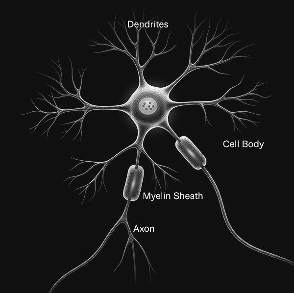
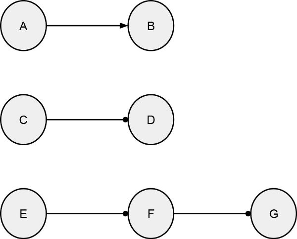
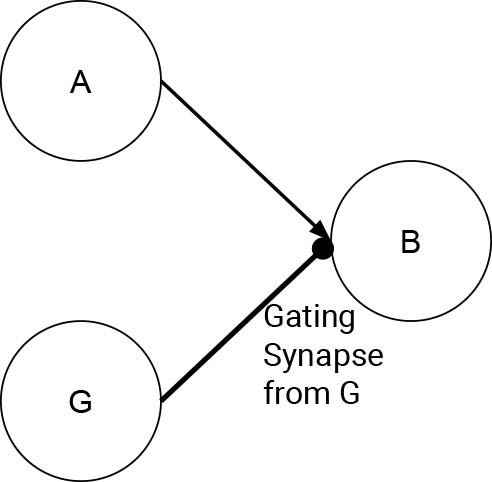
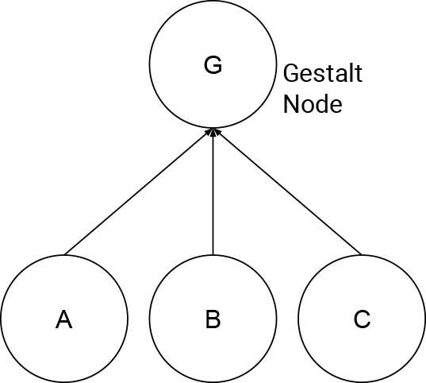
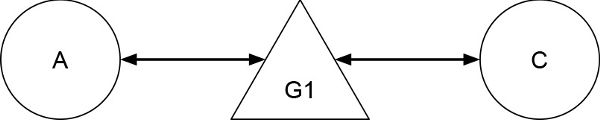
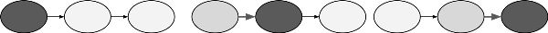
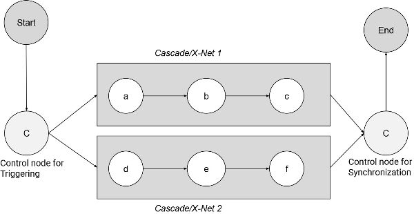
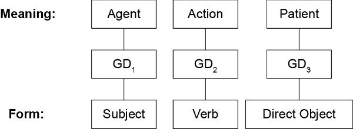
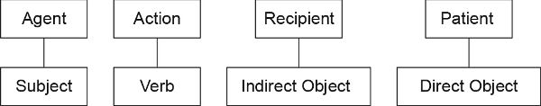

大脑如何思考
George Lakoff 和 Srini Narayanan 著
芝加哥大学出版社
免疫系统、下丘脑、腹内侧前额叶皮层和《权利法案》有着相同的根本原因。
Antonio Damasio 在《笛卡尔的错误》中写道
Antonio Damasio 在这里引用的见解是深刻的。作为一名神经科学家，他知道观念不会漂浮在空中。观念也不是某种以某种方式栖息在我们心智中的抽象物。观念不是哲学逻辑学家的逻辑公式和集合论模型。观念也不是可以从我们的大脑中下载或上传到我们大脑中的数字序列。相反，观念产生于神经回路并驻留在与社会和物理世界相互作用的神经回路中。
神经回路构成了观念，构成了人类曾经拥有或将要拥有的所有观念。因此，观念是社会和物理基础的，就像免疫系统或腹内侧前额叶皮层一样，是我们身体的一部分。
作为一名公民，Damasio 敏锐地意识到观念具有力量并且可以被创造。新观念改变了世界，为我们带来了自治、人权、正义、环保主义以及人类生活和文明的其他真正进步，比如《权利法案》。这份伟大的文件不只是页面上的字母序列，或者如果大声朗读，不只是一堆声音。《权利法案》在被理解时，通过激活构成我们内心这些观念的神经回路，在我们这些真实的人类身上唤醒观念。
《权利法案》通过语言发挥作用，因为语言不仅仅是书写或语音声音。《权利法案》的语言，就像一般的语言一样，是有意义的。意义不在字母或声音本身，而在于当语言被阅读、听到或记住时所激活的神经回路构成的观念中。
除此之外，《权利法案》不只是任何文件。
这是一份最高层次的道德文件，通过其语言传达了普世人权道德愿景所暗示的思想。这意味着构成这些思想的神经回路不仅仅是位于身体任何地方的一堆神经元。由于其物理性质和在我们物理身体中的位置的细节，这些回路可以构成道德思想、价值观——民主背后的价值观。
这就是达马西奥引文所表达的内容，科学问题在每一个细节上都是深刻的。达马西奥引文表达了这本书的前提——存在理由和起点。
我们的思想存在于神经回路中并由神经回路构成。这怎么可能？神经回路是物理的；思想不是。神经心智研究的核心问题是非物理的思想如何能够由物理的神经回路构成。这本书的理论虽然远未完整，但已经足够完整，使我们不仅能够掌握神经心智如何工作的基本原理，还能掌握大量的细节。
神经心智有时是令人惊讶的，如果不是彻底震惊的话。我们不是被动地看到眼前的东西，感受触碰皮肤的东西，或听到呈现给我们耳朵的东西。我们的神经回路接收呈现给我们感官器官的信息，并创造我们所看到、感受到和听到的东西，主要是无意识地，而不是直接或以任何简单或直接的方式。简而言之，感知的很大一部分是被创造的，尽管我们没有意识到这种创造。
神经元只是细胞。单独来说，它们无法进行思考。但当它们以正确的方式组合成回路并连接到我们的身体时，它们使人类能够生存、思考、交流并创造整个文化。
本书提出了一种思考神经心智如何工作的方式。我们将展示来自各个学科的模型、证据和结果，使我们能够系统地思考语言和思维现象是如何工作的。
思维不是逐个神经元地发生的。它发生在系统层面，即神经元聚集形成回路的层面，以及简单回路结合形成复杂回路的层面。这就是简单思维能够在复杂思维中聚集的原因。我们在本书中的目标是询问这可能如何工作：不同类型的神经回路如何能够解释特定类型思维的详细结构。
究竟如何？这就是本书的内容。我们从第一章开始，介绍神经心智的基本假设，结合认知科学、计算建模和语言学的研究。第二章深入研究认知语言学过去三十年的研究，展示思维和语言如何依赖于大脑和身体与社会和物理环境的互动。第三章是一个技术章节，描述感觉运动协调和控制研究如何导致我们关于连接大脑和身体到心智的神经回路类型的理论建议。我们专注于这些回路的主动性质，它们可以用于实时指导、稳态和控制，但也在观察、理解和生成思维和语言期间在想象性模拟中内部触发。第四章是回报，从神经心智的角度重新思考语言和思维中的几个困难和开放现象，展示这种视角阐明并有时帮助解决这些长期存在问题的新方法。
神经心智研究带我们深入思维的本质以及我们用来表达和交流思维的语言。除此之外，神经心智研究可以为我们每天经历的事情提供见解，表明经验不只是神奇地来到我们身边；相反，我们的神经心智创造和维持经验，而我们甚至没有注意到这个过程。神经心智是使我们能够在日常世界中正常运作的东西，除此之外，神经心智创造我们体验为强大、美丽和深刻的东西。简而言之，神经心智定义了我们的世界观。
定义我们的世界观是神经心智的积极工作。神经心智也做消极工作。由于我们只能理解能够通过我们的神经心智变得合理的思想，那些对我们的神经心智不合理的思想无法被我们的心智接受，因此被过滤掉。简而言之，神经心智也是一个神经过滤器。
社会生活最终取决于群体成员之间的协调，而交流是使这成为可能的必要条件。进化心理学家如Tomasello (2022)和David-Barrett和Dunbar (2016)认为，当群体交流导致更好的联合行动时，个体的效率会增加。Tomasello (2022)从进化的角度提出证据，表明能动性和共同意向性的出现是人类交流的先决条件，这些方面基于动物行为控制的组织，旨在在日益复杂的物理和社会环境中实现目标。在最近的工作中，社会语言学家Nick Enfield (2022)提出了一个有说服力的论证，即语言的主要功能是协调，触发听者的神经回路，导致说服、社会归属、计划和联合行动。从计算神经科学的角度，Buzsáki (2019)认为大脑是主动和生成性的，人类感知和认知最好通过行动和控制的神经回路和通路来建模和理解。
我们关于神经心智的研究通过来自多个领域的汇聚证据验证了这些观察结果。我们通过详细的机制、证据以及来自认知语言学和神经建模的结果表明，情绪、社会认知和感觉运动控制的控制回路形成了交流的社会共享的具身共同基础。
为了展示神经系统的力量，我们从一个戏剧性的例子开始。我们通常假设我们所看到的就是世界中呈现在我们面前的东西。但是感知有一个主要维度是我们体验到的，但在生物体外部的世界中并不存在：颜色！
在马克斯兄弟的电影《鸭汤》中，奇科·马克斯模仿格劳乔的夸张行为说：“你会相信谁，我还是你自己的眼睛？”
通常人们认为你看到的就是存在的，眼见为实。
但神经心智科学告诉我们并非如此，我们所看到、听到和感受到的很多东西并不存在于外部世界中，而是由身体和大脑创造的，甚至包括物理对象最基本的属性。神经科学证据很清楚：在许多情况下，你相信的是你那会说谎的眼睛。
对一些人来说，得知世界中没有颜色会感到震惊：草中没有绿色，血液中没有红色，天空和海洋中没有蓝色，太阳或月亮中没有黄色。一个都没有！颜色不存在于那里，独立于体验世界的生物。
是的，我们看到美丽的日落、玫瑰、伟大的画作和鹦鹉，都是彩色的。然而，我们在它们身上看到的颜色并不是那里实际存在的。它们本身没有颜色。
世界中的物体反射和吸收光的波长组合，但波长不是颜色。我们也不能看到单个波长。我们看到颜色，整个范围的颜色在连续的色调中，但它们并不存在于那里，无论多么美丽、令人愉悦和令人敬畏。这是它的工作原理。
颜色是在你体内通过世界中的两个因素和我们身体中的三个因素相互作用而创造的。外部因素是（1）反射的光波长，每个都有相应的强度，以及（2）附近的照明。内部因素是（1）视网膜中的颜色锥体，（2）比较颜色锥体输出并从锥体延伸到大脑的视网膜神经节细胞，以及（3）连接到神经节细胞的神经回路。
颜色锥体类别被称为L、M和S，因为它们的峰值输出位于可见光谱的长波长、中波长和短波长区域。视网膜神经节细胞对锥体类型有所谓的对抗性反应。“对抗”一词被定义为对一种锥体类型激活增加时放电增加（开启反应），对不同锥体类型激活减少时放电增加（关闭反应）。
有四种这样的对抗性视网膜神经节细胞：L-开启/M-关闭，M-开启/L-关闭，S-开启/(L+M)-关闭，以及(L+M)-开启/S-关闭。增加复杂性的是”开启”细胞感受野的大小和时间过程的差异。
没有视网膜颜色锥体、神经节细胞和大脑中连接的神经回路，就不会有颜色。
我们”看到”的颜色类别涵盖了一种颜色的色调范围。例如，绿色类别涵盖了在光谱中一边向黄色过渡、另一边向蓝色过渡的绿色色调范围。基本颜色术语如红色、绿色和蓝色命名了我们”看到”并认为存在于世界中的整个颜色色调类别。基本颜色类别有诸如红色、蓝色、绿色、紫色等名称。我们可以用它们进行推理。如果一个物体是红色的，它就不是绿色的。
色调是如何为我们产生的？我们如何能”看到”不存在的东西？
视网膜中的每个颜色锥体对给定波长的反应程度不同。随着波长增加，给定的颜色锥体反应更强烈（发出更强的电信号），直到最大点，然后随着波长继续增加，它发出的信号减少。每个颜色锥体由于其化学组成，对不同范围的波长以这种方式反应：短波长、中波长和长波长。每个物体通常不仅反射一个波长的光，而是多个波长。每个颜色锥体对每个反射波长的反应程度不同。
颜色锥体和神经回路的组合为不同的波长组合创造了不同的颜色色调。我们的具身大脑创造了数百万种颜色色调。它们使我们能够部分通过颜色色调来区分物体，即基于它们反射的光波长组合的差异。这对于生活在世界中的动物来说是一种进化上有用的能力。
要点：我们的颜色锥体和神经回路从世界中的光波长在我们内部创造了颜色范围和颜色类别。但这些颜色并不独立于我们存在于世界中。
我们的眼睛和大脑在所有人中以相同的方式创造颜色吗？
不。颜色锥体并不完全相同。它们的化学性质以复杂的方式与X染色体相关。一般来说，男性有一个X染色体，女性有两个X染色体。一些染色体变异导致色觉缺陷：各种形式的色盲，无法看到”正常”人看到的完整颜色范围。其他染色体变异导致色觉形式
一个或多个颜色视锥细胞的反应将在光谱的不同位置，在不同波长处有峰值反应（和其他反应）。这意味着许多人实际上”看到”不同的颜色。总的来说，女性比男性在感知颜色差异的能力上更加敏感。
当两个人的颜色视锥细胞组成不同时，他们很可能会在给定情况下对同一物体实际”看到”不同的颜色。我们中的许多人都与异性在颜色是蓝色还是绿色、红色还是橙色、橙色还是棕色、黑色还是深蓝色等问题上发生过分歧。这可能导致争论，双方都认为对方只是搞错了。但事实是，双方都可能是”对的”，也就是说，他们对同一物体”看到”不同的颜色，因为他们视网膜中的颜色视锥细胞有所不同！
有些女性甚至拥有四种颜色视锥细胞。她们被称为四色视者(tetrachromates)。原则上，第四种颜色视锥细胞应该允许一个人”看到”——也就是创造——我们其他人看不到的颜色色调范围。研究四色视者的研究人员在发现上存在差异。大多数发现第四种颜色视锥细胞几乎没有或完全没有可测量的效果。其他人发现了可测量的效果，也就是说，一小部分人可以”看到”我们其他人看不到的颜色范围。这种颜色视觉领域的研究正在进行中，对于四色视者尚无普遍共识。
当然，不同的生物也可能以完全不同的方式感知颜色。对我们人类来说，光强度和亮度是激活视锥细胞所必需的，所以我们发现在黑暗中很难看到颜色。几种鱼类拥有高度敏感的视锥细胞，允许在没有任何光线的情况下进行细粒度的颜色感知。此外，人类的颜色视觉系统可能比许多鸟类物种发展得更差。例如，普林斯顿大学的科学家发现，蜂鸟（四色视者）可能感知到惊人的颜色范围，包括被称为非光谱颜色(nonspectral colors)的短波长和长波长的组合。对人类来说，紫色是唯一一个结合红色（短波）和蓝色（长波）但不包含绿色（中波）波长的非光谱颜色例子。
我们将”蓝色”和”绿色”等词汇应用于由一系列色调组成的颜色类别。每个词对我们的意义就是我们恰好”看到”的颜色类别。
因此，颜色词汇的含义受到三个因素的影响：
我们在这里看到的是三种基本的具身化类型：
这些具身化形式导致了颜色类别（思维的组成部分）、颜色类别的词汇（表达思维的语言）以及基于颜色类别结构的推理。关于颜色的典型推理形式可能出现在与他人讨论如何粉刷房子时：“那太浅了，太接近粉红色；我们需要更深的红色但不是血红色。”“但那种红色不会与橙色冲突吗？”如果你们两人看到同一物体有不同的颜色，你们可能对什么颜色会冲突有不同的感觉。
Paul Kay和Willett Kempton（1984）询问是否拥有颜色类别的名称会改变一个人对颜色的感知。塔拉胡马拉语(Tarahumara)没有区分绿色和蓝色的颜色术语，而英语有。Kay和Kempton通过实验证明这确实重要。在实验中，英语使用者能够做出塔拉胡马拉语使用者无法做出的颜色区分。Lera Boroditsky（2009）对英语和俄语使用者提出了类似的问题。这种情况与比较英语和塔拉胡马拉语的情况相反：俄语有单独的颜色术语用于浅蓝色(goluboy)和深蓝色(siniy)，而英语只有”蓝色”。Boroditsky证明俄语使用者可以做出英语使用者无法做出的颜色区分。而俄语使用者对英语使用者称为”蓝色”的颜色没有一般的颜色类别。
更引人注目的结果来自Aubrey Gilbert、Terry Regier、Paul Kay和Richard Ivry（2005）。受Kay-Kempton发现的启发，他们测试了在一个人视野右侧与左侧进行颜色区分的能力。右视野连接到大脑左半球，大脑左半球进行语言区分。英语使用者在右视野（在语言帮助下看到）比在左视野进行反应时间颜色实验更快。这不仅仅是语言影响颜色感知的情况。也不仅仅是颜色由颜色视锥细胞和大脑创造的情况。令人瞩目的是，我们创造并使用我们”看到”的颜色类别会有所不同，这取决于大脑的哪个半球被使用！
哲学家们可能会倾向于说，我们可以保持词汇只是适应世界本来面貌的想法，前提是我们重新定义”颜色”的含义：也就是说，特定颜色只是世界中光波反射波长的组合，颜色术语的含义只是某些孤立波长的组合。由于我们不能”看到”单独的个别波长，很难为这样的提议提供论证。
实际上，任何这样的情况都会失败。考虑色轮（[图1]）。注意我们感知到红色（右上）与紫色（左上）相邻：按顺时针方向，序列是红色、橙色、黄色、绿色、青色、蓝色和紫色。

[图1.] 色轮展示了不同颜色及其在我们感知中的接近程度。注意个别颜色的感知邻域与表征该颜色的波长接近程度没有任何直接对应关系。（高分辨率彩色图可在 https://en.wikipedia.org/wiki/Color_wheel 查看）
现在，考虑感知颜色的波长范围（[表1]）。如果我们所说的”颜色”只是它们的波长-强度范围，那么我们在色轮上感知为相邻的颜色应该由相邻的波长-强度对组成。但在红色和紫色的情况下并非如此。我们的大脑似乎”弯曲”了波长序列，使红色（约635到750纳米）与紫色（约400到450纳米）相邻。我们在色轮上看到的相邻颜色并不都对应于世界中的相邻波长！
[表1.] 可见光谱的颜色
[颜色] [波长区间] [频率区间]
红色 ~ 700-635 nm ~ 430-480 THz 橙色 ~ 635-590 nm ~ 480-510 THz 黄色 ~ 590-560 nm ~ 510-540 THz 绿色 ~ 560-520 nm ~ 540-580 THz 青色 ~ 520-490 nm ~ 580-610 THz 蓝色 ~ 490-450 nm ~ 610-670 THz 紫色 ~ 450-400 nm ~ 670-750 THz
[注.] nm = 纳米; THz = 太赫兹。
Paulus和Kröger-Paulus（1983）对这个色轮提出了一个可能的解释。作者认为”基本颜色被估计为超饱和紫色、黄绿色和黄红色”（第529页）。这将产生我们所看到的色轮，无需弯曲。
颜色科学表明，具身化(embodiment)远比简化观点复杂得多，简化观点认为大脑只是感知和作用于外界存在的事物。我们在世界中”看到”的美丽颜色并不存在于外界。我们创造了它们，但不是凭空创造。我们从反射波长的组合中创造它们，这些波长是存在的。但我们看不到波长。我们看到颜色。我们看到的相邻颜色可能不对应于相邻波长。
此外，我们并非都看到相同的颜色，因为颜色锥细胞(color cones)的工作方式取决于我们的X染色体。由于女性通常有两条X染色体，男性通常有一条X染色体，男性和女性在同一场景中”看到”不同颜色是常见的。在基于性别的争论中，关于某个物体是绿色还是蓝色，或是棕色还是橙色，双方都可能是对的，因为男性和女性在同一场景中可能看到不同的颜色。颜色锥细胞的差异可能导致视觉差异，看到不同的颜色。
颜色词汇在做精细颜色区分时很重要，但只在左半球（即右视野）起作用。
简而言之，在颜色的情况下，我们的身体创造了我们”看到”、分类、命名和理解的东西，我们根据身体差异以不同方式做到这一点。
我们看到的颜色在我们身体外部的世界中并不存在，它们是由我们的身体和大脑从存在但我们无法看到的东西创造的：物体反射的光的波长和强度。需要颜色锥细胞、神经节细胞(ganglion cells)和神经回路将具有强度的波长转换为颜色。
像颜色一样，想法不是世界中的物理实体。我们对世界中的事物有想法：对树木和其他植物的想法，对动物的想法，对山川河流的想法，对人造物品如房屋和椅子的想法，以及对非物理实体如机构、数字、情感和决策的想法。但是虽然房屋和河流是物理的，对房屋和河流的想法却不是。你可以住在房屋里，但不能住在房屋的想法里。你可以在河流中游泳，但不能在河流的想法中游泳。河流的想法不会让你变湿。
你可以传达想法，但想法不会在空气中移动。没有叫做”memes”的物理实体像病毒一样从人传播到人、从国家传播到国家。当你”给”某人一个想法时，你仍然拥有它。想法是由我们的身体和大脑创造的，由我们的神经回路构成。因为我们无法有意识地接触我们的神经回路，大多数想法是无意识的，估计高达98%的思维是无意识的，只有约2%的思维是有意识的。估计有所不同，但根据我们的经验，这似乎是一个合理的大致估计。
这本书询问想法如何由神经回路构成。换句话说，我们如何从神经元（物理细胞，通过电化学功能的活生物实体）中获得想法？像神经元这样的物理实体如何创造非物理想法？大脑在交流中的作用是什么？也就是说，一个人的大脑如何在另一个人的大脑中再现想法？这些问题构成了本书的核心挑战。应对这样的挑战需要我们检查和整合来自许多认知和脑科学的汇聚证据。
让我们从认知和脑科学一个分支的简短概述开始，即认知语言学，它关于想法的本质。更多细节将在[第2章]中添加。
以下是想法的要素：
• 基本想法(Primary ideas)：自然产生且被全世界人们共享的具身化图式(embodied schemas)，例如，上和下、近和远、里和外的图式。这些基本具身化图式既用于构建感知，也用于推理。
• 概念框架(Conceptual frames)：用于理解有限经验和实体类型的心理结构，以整体结构、其组成部分、部分之间的关系以及与其他框架的关系来定义。例如，铲子框架既包含物理铲子的概念，也包含铲子用途的概念，如挖掘和铲土。
• 概念隐喻(Conceptual metaphors)：从一个框架到另一个框架的映射，使人能够用不同类型的框架来概念化另一个框架。概念隐喻倾向于在映射到目标框架时保留源框架的主要思想。例如，政党中的政治家并不是物理上处于物理容器中。相反，政党被隐喻性地概念化为容纳其成员的容器。
• 概念整合(Conceptual integration)：一种组合思想的心理机制，通过强调某些思想而非其他思想来避免可能产生的矛盾。
主要具身图式(primary embodied schema)的一个例子是容器图式(containment schema)，它有内部和外部、它们之间的边界，以及可能用于在外部和内部之间移动的入口。另一个例子是运动图式(motion schema)，包含移动者、运动源、运动路径、运动方向和运动目标。这两个图式都出现在单词”into”的空间使用中，如句子[Sarah went] [into] [a café]，其中Sarah被描绘为移动者，咖啡馆作为容器，运动源在咖啡馆外部，运动目标在咖啡馆内部。可以推断的是，Sarah从咖啡馆外面开始，最终到了咖啡馆里面。容器图式不是你能看到或获得固定图像的东西，因为它可以适应许多不同类型的容器：杯子、瓶子、房屋、城市、山谷、宇宙、书的章节、机构等。
咖啡馆由概念框架定义，即咖啡馆框架。咖啡馆不仅仅是一个容器，即有边界的空间，还提供咖啡饮品和某些食物，有制作咖啡的barista，有被服务咖啡的顾客，通常还有供顾客使用的桌椅。顾客通常下订单、为所订购的东西付款、取得订单，然后坐在桌子旁喝咖啡和/或吃东西。顾客带笔记本电脑在桌子上工作也很常见。咖啡馆框架是部分-整体图式的一个实例，是一个具有被称为”角色”的部分的整体。每个框架都是有限的；大多数类型的事物不在任何一个单独的框架中。例如，老虎不在咖啡馆框架中，手术也不在。一个碰巧有常住老虎以及作为顾客的外科医生并且可能碰巧提供某些简单手术的咖啡馆是可能的，但那将是一个不符合典型咖啡馆框架的咖啡馆。
像[Sara went into a depression]这样的句子使用了两个概念隐喻。抑郁是一种状态，状态通常被隐喻性地理解为有界区域，即容器。状态的改变可以被隐喻性地理解为向容器的运动，因此有”went into”这个词。概念隐喻通常是无意识使用的，并且极其常见。我们使用成千上万的概念隐喻进行思考。在这里，向容器运动的框架被映射到状态改变的框架上。此外，术语”depression”使用了快乐是向上、悲伤是向下的概念隐喻。物理depression是地面上的有界区域，比周围区域更低。在心理学中使用”depression”一词作为悲伤状态，基于”悲伤是向下”的概念隐喻以及状态是空间中有界区域的概念隐喻。
概念整合也非常常见，以至于不被注意。以[Sarah wants to go to] [Heaven when she dies so she can play again with her long-dead] [grandmother]这样的句子为例。我们知道死人不能互相玩耍。但天堂是一个想象中的地方，人们死后可以去那里并像生前一样活动。因此，我们关于死后能够行动的正常知识被我们对天堂的想象（通过模拟）所抑制。这里我们关于玩耍的知识与我们对天堂的想象概念在概念上整合了。
这些是如何在日常思考中使用(1)主要具身图式、(2)概念框架、(3)概念隐喻和(4)概念整合的简单例子，甚至是最简单的思考。思想是由这四种一般思维模式组合而成的。
鉴于思想由神经回路构成，本书的一个主要挑战是展示这如何可能，并详细展示什么样的神经回路特征化什么样的思想。为了理解这个挑战，我们现在转向neurons和神经回路的基本属性。
当你阅读下一部分时，想想在neurons和神经回路层面发生的生物结构和电化学过程与我们刚才看到的思想本质之间的巨大鸿沟。我们在本书中的任务是开始弥合这个鸿沟，展示思想形成的机制如何从物理神经机制中产生。简而言之，我们体验到的思维是物理神经过程的结果。但这是如何工作的？
关于大脑如何思考的研究在许多层面进行，从细胞解剖学中多个层面的生化相互作用到大脑网络，再到具身的整个系统，即完全在大脑内部运作并通过与活体和行动身体的连接而发挥作用的神经系统。思想和语言可能是具身的，但它们是
不可简化为神经元本身或局部大脑区域(称为[模块])。思维和语言的本质是在更高的系统层面上，是一个涉及整个具身大脑多个部分的脑回路系统。认知现象——无论是个体想法还是思维系统，个体词汇还是更大的语法结构——都发生在系统层面。我们对大脑如何运作的计算模型是在系统层面上的，尽管它们是由有助于整体功能的较小回路拼接而成的。
现在有许多正在进行的努力来阐明大脑中神经元之间的连接(大脑映射)，如BRAIN Initiative及其大脑活动地图项目、欧盟委员会的人脑项目、国立卫生研究院的人类连接组项目，以及Allen脑图项目。这些研究正在以越来越详细的方式展示整体神经网络的结构特性，这些特性是从多个区域及其相互连接的详细记录中计算出来的。迄今为止，映射目标主要是医学性的，旨在获得治疗脑疾病、中风和创伤的洞察，以研究认知心理学中的传统主题，如注意力、记忆和意识。
关于这些网络在有意义的想法和语言方面的作用，我们知道的要少得多。正如我们所观察到的，网络及其内部的活动不能详细告诉我们具身认知是如何工作的，也就是说，哪些脑回路操作构成哪些特定想法，以及语言的哪些元素和这些回路如何影响行为。要解决这个问题，本书中提出的研究将是必要的。
神经科学依赖于各种类型的计算机建模。在某些情况下，需要计算机来处理大量数据并对数据进行统计。但在许多情况下，计算机模型被用来构建对大脑神经回路中发生的事情的理论理解。例如，神经发放的计算机模型需要[发放规则]，这是用于建模神经发放的一般原则。从事此类建模的计算神经科学家经常隐喻性地谈论，就好像神经元在”遵循”发放规则。神经建模还用于精确指定和建模神经系统执行的功能。神经科学家经常谈论，就好像神经系统在”执行”其神经模型中指定的功能。简而言之，神经建模涉及一种思维模式，在物理神经系统和神经系统的计算模型之间来回切换，就好像生物系统的模型在[指导]生物系统一样。
我们敏锐地意识到这一点。然而，在许多情况下，模型基于关于真实现象的一个数据范围，而在另一种情况下，数据稀缺，预先建立的模型——或假设的模型——被用来理解数据不足的现象。我们也发现自己处于这样的情况，特别是在我们使用桥接模型时。
我们对计算神经模型的描述将必然在建模大脑功能和建模思维和语言中的特定现象之间来回切换。要理解大脑功能相关方面的计算建模，我们必须仔细观察神经功能执行的层面。生物神经结构通过复杂的化学和物理在各种复杂程度上发挥作用。
我们从神经激活和通信作为生物和电化学现象的细节的简化描述开始。
我们将从细胞层面开始。
神经元是一个细胞，像身体中的其他细胞一样，有一个细胞核和一个细胞膜，它允许物质通过所有细胞共同的细胞过程被摄取和排泄。从细胞体延伸出一个轴突，这是一个长的管状结构，末端有数千个薄的延伸，带有豆荚状末端(称为[突触末端])，其中包含[神经递质]。从细胞体周围的膜向外分支的是[树突]，广泛、极薄、分支的树状结构，用作输入终端。
我们出生时大脑中有估计850亿到1000亿个神经元。每个神经元与其他神经元有1,000到10,000个连接。这接近一千万亿——一万亿的一千倍——连接。
神经元通过突触”连接”，突触是充满液体的短间隙，位于一个神经元的轴突末端(称为[突触前神经元])和下一个神经元的树突和细胞体上的位点(称为[突触后神经元])之间。“前”和”后”这些术语来自于神经激活被隐喻性地概念化为从”前”到”后”“传递”的事实。
为什么这是一个隐喻概念？通过隐喻，“激活”被概念化为从一个神经元到另一个神经元”流动”的物质。这是一个极其有用的科学隐喻，在整个神经科学和具身神经计算中被使用，我们在本书中采用它。我们的计算神经模型，像所有计算神经模型一样，使用这个隐喻。有一个真实的故事是这个隐喻的基础：有复杂的电化学过程，总的来说，表现得就好像有一个单一的”激活流”。
再次，连接隐喻在科学上是有用的，并且在神经科学和计算神经建模中几乎被普遍采用。
连接隐喻自然地导致神经网络隐喻。网络，像互联网一样，不是一个
physically connected network of wires or hollow tubes, as
many neural mapping diagrams suggest. Such neural mapping
diagrams use the conceptual metaphors of neural connections,
neural networks, and neural flow that fit together to make an
easy-to-understand picture. Again, this is an extremely
useful collection of scientific metaphors, since it allows us
to use computational models of neural systems. Moreover, the
idea of the network makes more than a little sense because
the axon terminals of a presynaptic neuron do get close—
across a narrow liquid- and chemical-filled synapse—to the
dendrites of postsynaptic neurons. The complex
electrochemistry that supports the use of the scientific
metaphors is real. But the details are tricky, to say the
least.
如许多神经映射图所示，物理连接的电线或中空管道网络。这种神经映射图使用神经连接、神经网络和神经流的概念隐喻，结合在一起形成易于理解的图像。同样，这是一个极其有用的科学隐喻集合，因为它允许我们使用神经系统的计算模型。此外，网络的概念很有意义，因为presynaptic neuron的axon terminals确实会接近——跨越狭窄的液体和化学物质填充的synapse——到postsynaptic neurons的dendrites。支持使用科学隐喻的复杂electrochemistry是真实的。但细节至少是棘手的。
At this point, let us look one level deeper at the details
of the processes that comprise the firing of a neural cell.
Many of these properties—such as the building up of
activation, the threshold, and the timing and combination of
inputs from multiple incoming synapses—will be represented
abstractly as computational primitives in our model of the
neural system.
此时，让我们深入一层，观察构成神经细胞放电过程的细节。许多这些特性——如激活的积累、阈值，以及来自多个输入synapses的输入的时序和组合——将在我们的神经系统模型中被抽象地表示为计算原语。
[Some Very Brief Electrochemistry]
Ions are atoms that are either “missing” at least one
electron and thus have a positive charge or have at least one
more electron and so have a negative charge. For example,
sodium ions (Na [+] [+] ) and potassium ions (K) have one positive
charge, while calcium ions (Ca[++]) are missing two electrons and so have two positive charges. Chlorine ions (Cl[−]) have
one extra electron and so have a negative charge.
Ions是”缺少”至少一个电子因而带正电荷，或者拥有至少一个额外电子因而带负电荷的原子。例如，sodium ions (Na+) 和potassium ions (K+) 带一个正电荷，而calcium ions (Ca++) 缺少两个电子因而带两个正电荷。Chlorine ions (Cl-) 有一个额外电子因而带负电荷。
Each charged particle is surrounded by an electric force
field. Positively charged ions have an electric field with
lines of force pointing out from the center. Negatively
charged ions have a force field with lines of force pointing
in to the center. Thus, positive and negative charges are
metaphorically conceptualized as “attracting” each other,
with the positives pushing out and the negatives pulling in.
Similarly charged ions are metaphorically understood as
“repelling” each other. Again, the scientific metaphors are
useful and commonly adopted.
每个带电粒子都被电场包围。带正电的离子具有力线从中心向外的电场。带负电的离子具有力线指向中心的电场。因此，正负电荷被隐喻性地概念化为相互”吸引”，正电荷向外推，负电荷向内拉。同样带电的离子被隐喻性地理解为相互”排斥”。同样，科学隐喻是有用的并且被普遍采用。
A neuron has a cell membrane consisting of two lipid
layers. The lipids are fatlike chemicals containing sugar
called [cerebrosides]. The cell membranes have complex
proteins embedded in them. Some are [transmembrane proteins], large molecules going through the membrane that can either
straighten or bend. When straightened, they form [molecular]
[gates], ion channels through which ions of a certain kind can pass. When bent, the transmembrane proteins block the passage
of ions. In addition to ion channels, there are [ion pumps], very complex proteins that, under certain voltage conditions,
can transport ions; that is, they can be thought of
metaphorically as pulling ions through rather than just
allowing them to flow through.
neuron具有由两层脂质组成的细胞膜。脂质是含有糖类的脂肪样化学物质，称为cerebrosides。细胞膜中嵌入了复杂的蛋白质。其中一些是transmembrane proteins，穿过膜的大分子，可以伸直或弯曲。当伸直时，它们形成molecular gates，即某种离子可以通过的离子通道。当弯曲时，transmembrane proteins阻断离子的通道。除了离子通道，还有ion pumps，非常复杂的蛋白质，在某些电压条件下可以转运离子；也就是说，它们可以被隐喻性地理解为拉动离子通过，而不仅仅是允许它们流过。
[Voltage] is the ability to move charged particles. The cell membrane acts as an insulator, preventing the interaction
between internal charged particles and external charged
particles. The difference in charge between the total of
charges inside the cell membrane and the charges outside of
it is called a [potential difference], measured in thousandths of volts (millivolts). At rest, a neuron has a resting
potential of about −70 millivolts, that is, minus 70
thousandths of a volt. It is negative because, in addition to
lots of positive ions inside the cell, there are a great many
proteins with negative charge. The overall negative charge inside the cell body would tend to attract positively charged
particles. Minus 70 millivolts may seem small, but 70
millivolts is one-fifteenth of a volt. For something as small
as a neuron, that is a huge amount of voltage. Every neuron
has that much.[4]
Voltage是移动带电粒子的能力。细胞膜作为绝缘体，阻止内部带电粒子和外部带电粒子之间的相互作用。细胞膜内部电荷总量与外部电荷之间的差异称为potential difference，以千分之一伏特（毫伏）为单位测量。在静息状态下，neuron的静息电位约为-70毫伏，即负70个千分之一伏特。它是负的，因为除了细胞内许多正离子外，还有大量带负电荷的蛋白质。细胞体内部的整体负电荷趋向于吸引带正电荷的粒子。负70毫伏可能看起来很小，但70毫伏是1伏特的十五分之一。对于像neuron这样小的东西，这是巨大的电压。每个neuron都有那么多。
When the transmembrane proteins are straightened out, they
form what are called “pores” or “channels” through which
ions can move. Transmembrane proteins come in several types,
each with a different structure that makes them specialized
to allow only certain types of charged particles to pass.
Ions involved in neural firing include sodium (Na[+]),
potassium (K[+] [++] [−] ), calcium (Ca ), and chlorine (Cl).
Some transmembrane proteins change their shape quickly and
easily. Others are slower to straighten and slow to bend
back. Those differences are crucial for neural firing, as we
shall see below.
当transmembrane proteins伸直时，它们形成称为”pores”或”channels”的结构，离子可以通过这些结构移动。Transmembrane proteins有几种类型，每种都有不同的结构，使它们专门化，只允许某些类型的带电粒子通过。参与神经放电的离子包括sodium (Na+)、potassium (K+)、calcium (Ca++)和chlorine (Cl-)。一些transmembrane proteins快速且容易地改变形状。其他的伸直较慢，弯曲回来也较慢。这些差异对神经放电至关重要，我们将在下面看到。
[Hormones and Neurotransmitters]
Many of the same chemicals in our bodies can have two
different sources and functions, as either hormones or
neurotransmitters. They are called [hormones] when they are secreted by a gland into the bloodstream and work at a
distance from their source. They are called
[neurotransmitters] when they are emitted by a neuron and work across a synapse. Examples include dopamine, epinephrine,
serotonin, acetylcholine, glutamate, GABA (gamma-aminobutyric
acid), and so on.
我们体内的许多相同化学物质可以有两种不同的来源和功能，要么是hormones要么是neurotransmitters。当它们被腺体分泌到血流中并在远离源头的地方起作用时，被称为hormones。当它们被neuron发射并跨越synapse工作时，被称为neurotransmitters。例子包括dopamine、epinephrine、serotonin、acetylcholine、glutamate、GABA (gamma-aminobutyric acid)等等。
[Two Types of Transmembrane Ion Channels]
The ion channels in neurons are central to the operation of
the brain. There are two types of ion channels across cell
membranes. The first, called [chemical channels], contains receptors, molecules that chemically bind to other molecules
called neurotransmitters. Neurotransmitters tend to be either excitatory or inhibitory; that is, they make receptor
channels open to either positive excitatory ions, such as
sodium (Na[+] [+] [++] ), potassium (K ), and calcium (Ca), or to
negative inhibiting ions, such as chlorine (Cl[−]). Although
there are dozens of neurotransmitters, the major ones are
glutamate (excitatory), GABA (inhibitory), and acetylcholine,
which can be either excitatory or inhibitory depending on the
receptor molecules.
neurons中的离子通道是大脑运行的核心。跨细胞膜有两种类型的离子通道。第一种称为chemical channels，包含receptors，即与其他称为neurotransmitters的分子化学结合的分子。Neurotransmitters倾向于是兴奋性或抑制性的；也就是说，它们使receptor channels对正性兴奋离子开放，如sodium (Na+)、potassium (K+)和calcium (Ca++)，或对负性抑制离子开放，如chlorine (Cl-)。虽然有几十种neurotransmitters，主要的是glutamate（兴奋性）、GABA（抑制性）和acetylcholine，根据receptor molecules的不同，可以是兴奋性或抑制性的。
The second type of transmembrane ion channel works by
electric voltage. Such [voltage channels] have transmembrane proteins that are normally bent but straighten out (and allow
第二种类型的跨膜离子通道通过电压工作。这种voltage channels具有通常弯曲但会伸直的transmembrane proteins（并允许
离子通过膜）在附近出现电压激增时。
“突触强度”一词指的是突触让离子进入突触后神经元细胞体的能力。突触强度取决于三个因素：
允许正离子进入突触后神经元的跨膜蛋白数量
突触前神经元释放的正确类型神经递质的数量
突触液中已有的或由其他神经元引入的正确类型神经递质的数量
突触强度是Hebbian学习的核心，这一点最初由神经科学家Donald Hebb（1972）提出。传统上，Hebbian学习被理解为通过突触强化来起作用。Hebb假设当突触前神经元在突触后神经元放电前不久放电时，突触前和突触后放电之间存在因果关系。当这种因果关系发生时，Hebb假设突触连接变得更强。这一现象的常见口号是”一起放电的神经元连接在一起”。而且突触上的放电越多，Hebb建议，突触强化得越多，因此神经元之间的突触越像连接神经元的假想导线。
相应地，当两个放电神经元不同时放电（在时间上彼此接近且按突触前神经元先于突触后神经元的顺序）时，两次放电之间没有因果关系。当这种情况经常发生时，Hebb声称突触连接会被削弱，最终可能被消除。
突触强度的变化称为神经可塑性。“可塑性”是一个通用术语，用来强调神经系统不断变化的事实，它们在突触处发生变化，突触可以变得更强，或者如果不使用，则变得更弱。神经系统中有多种类型的可塑性，它们可能诱导突触强度的短期或长期变化。可塑性在中风和脑损伤的医学病例中很重要，整个神经回路系统需要通过突触变化获得新功能以促进愈合。
除了我们已经讨论的机制外，还有几种重要的神经机制。第一种涉及基因的作用。通过隐喻性地称为转录和翻译的过程，基因”指导”蛋白质的形成。在每个神经元中，跨膜蛋白会定期被吸收到细胞体中，并被通过基因转录和翻译过程形成的新跨膜蛋白所取代。这些基因过程以复杂的方式被控制，决定它们是产生更多还是更少的跨膜蛋白。更多的跨膜蛋白意味着突触强化，因为会有更多的地方让神经递质结合并打开钠离子进入的通道。更少的跨膜蛋白意味着钠离子进入的通道更少。
基因因素也影响神经纤维的生长，用于产生新的树突和轴突延伸，这两者都会导致强化增加，因为（1）更多的树突意味着更多的神经递质结合位点，（2）更多的轴突延伸意味着更多的囊泡打开释放神经递质。在这两种情况下都会形成新的突触，神经元的新突触意味着整体突触强化。
第二种强化突触的神经机制是去极化过程的化学延长。任何去极化的延长都意味着更多的钙离子通道保持开放更长时间，因此更多的囊泡融合，更多的神经递质被释放。
当突触前神经元放电时释放的一种神经递质（例如谷氨酸(glutamate)）可能流向突触前轴突并结合到该神经递质的离子通道受体上时，去极化的延长可能会发生。这些离子通道可以打开并允许更多的钠离子或钙离子进入，这会延长放电，从而强化突触。
第三种机制涉及突触后神经元的神经反向信号传导，导致突触后树突释放内源性大麻素(endocannabinoids)，这些物质可以结合到突触前大麻素G蛋白偶联受体。结果可能是延长去极化（通过向突触释放更多神经递质来强化突触）。
另一种可能性是这可以正向或负向影响编码再摄取转运蛋白的基因的转录和翻译。更多的再摄取转运蛋白意味着突触中留下的神经递质更少，因此弱化。更少的转运蛋白意味着突触中留下的神经递质更多，因此强化。
简而言之，突触强化和弱化没有单一简单的机制。它们在化学上都很复杂。
即使在子宫中，婴儿也会移动他们的手臂和腿，吮吸拇指。这种运动需要神经放电：大脑中的神经放电和沿脊髓通过肢体到肌肉的神经放电。神经连接通过使用而得到强化。神经回路是一个连接网络，已经使用足够多，使其突触变得永久强化，有效地硬连接。这称为招募。神经招募是复杂概念获得的基础。没有任何复杂的思考不需要它。
当你的大脑在子宫中发育时，大约1000亿个神经元和千万亿个神经连接沿着各种通路组织，具有大量冗余。很多！
为了让子宫内的胎儿能够吮吸拇指或移动腿部踢腿，所有用于拇指吮吸和腿部踢腿的神经回路都必须通过随机组织在第一次拇指吮吸和腿部踢腿起作用时以及之后的一段时间内处于正确的位置。那些处于正确位置以神经方式允许拇指吮吸或腿部踢腿的连接随后可以被充分强化——通过使用进行自然选择——形成永久回路（例如，用于踢腿和吮吸拇指的回路）。
神经元组可以形成称为[topographic maps]或简称为maps的二维薄片。它们很薄，通常是多层的，覆盖皮层的小区域。一个薄片中的神经元彼此连接，也与分层薄片中的神经元连接，这些薄片可以是相邻的、附近的或距离更远的。
什么使map成为topographic？topographic map保持接近性：某种事物的接近性，无论是空间上的接近性、强度的接近性、频率的接近性、时间的接近性等等。有些maps不是topographic的，而是具有神经元集群，每个集群都有不同的投射。皮层被maps覆盖。
神经元maps也可以形成我们可能称之为[map modules]的结构，其中一系列或集合的maps通过它们之间的连接结合起来，完成大脑无法单独完成的工作。
大脑并不止于头部。身体的中枢神经系统是大脑神经系统的延伸。神经maps是这种延伸的一部分。神经maps出现在整个大脑中，并延伸到整个身体，进入你的手臂、腿部等。因此，maps对大脑神经系统的具身化和概念的具身化至关重要，即概念通过身体连接产生和持续存在的方式。
研究最深入的maps之一是retinotopic map。初级视觉皮层(V1)包含视网膜的map。从视网膜出来的彼此相邻的神经元的轴突通过thalamus投射到V1（在大脑后部）中相应相邻的神经元。这并不神奇；这是化学梯度的问题。在子宫中，轴突从视网膜通过中脑生长到V1的对侧。当它们离开视网膜时，附近分泌的两种化学物质附着到每个轴突末端。附着的分子沿着两个独立的维度分泌，分泌物开始时较厚，随着扩散逐渐变薄。就像由两个数字定义的笛卡尔平面中的点一样，来自视网膜神经元的轴突每个都有固定量的每种分泌化学物质。每种的量取决于它们在视网膜上的位置。在视网膜上位置接近的两个轴突确实很接近，但它们的两种化学物质的量并不相同。
轴突通过thalamic中脑区域的lateral geniculate nucleus (LGN)生长到V1。当它们到达V1时，遇到成对的分泌化学物质，这些是与原始化学物质结合的受体。每个轴突在受体与正确浓度的两种结合化学物质与轴突末端的两种化学物质结合的位置着陆并停留。每个轴突恰好停留在正确的化学结合对使其保持在位置的地方。结果，从视网膜出来的彼此相邻的每两个神经元连接到V1中彼此相邻的神经元。因此，V1是视网膜的topographic map，保持空间接近性。
这种保持接近性的maps在整个大脑和身体中都存在。值得停下来想一想，大脑一部分的这种topographic maps能够对应大脑另一部分的topographic maps是多么了不起。
初级运动皮层是身体肌肉[三]维分布的[二]维topographic map。例如，投射到两个相邻手指肌肉的神经元在大脑的初级运动皮层中彼此相邻。大脑的somatosensory cortex是皮肤和我们能在身体中感受到的地方的topographic map。somatosensory cortex也保持空间位置的接近性。
想想这是多么了不起。例如，你手臂上感觉彼此接近的地方连接到大脑中[彼此]接近的地方。
acoustic cortex是进入耳朵的声波的tonotopic map。内耳液体中的毛发以不同的频率和强度振动。神经元将毛发连接到acoustic cortex，使acoustic cortex成为声波频率和强度的map。
实际上还有更多内容。声音使耳朵的stirrup bone（称为[stapes]）振动。stirrup against a round membrane振动，其内部是cochlea的tympanic canal的液体，cochlea是一个螺旋结构，一端薄，另一端宽。沿着cochlea的螺旋是basilar membrane，12,000到20,000个hair cells沿着它均匀分布。hair cells通过organ of corti，organ of corti包裹在cochlea周围，位于basilar membrane和tympanic canal液体之间。沿着tympanic canal是tectoral membrane，一个随着canal中的声波振动的物理结构。
hair cells延伸到液体中。它们在窄端附近较硬，在宽端附近较软。较硬的ones振动到更高频率的声波，较软的ones振动到更低频率的声波。振动触发hair cells中的ion gates打开。液体中的ions冲过gates，发送action potentials到
basilar membrane（基底膜）。膜上有神经投射
从毛细胞位置到acoustic cortex（听觉皮层）的位置。这些神经投射保持与膜上位置的空间接近性。膜上的位置对应于声波的频率，刺激毛细胞。因此，acoustic cortex是保持声波频率的空间地图，这些声波刺激毛细胞。而这些声波是外部声波振动stirrup（镫骨）的直接反映，镫骨振动round membrane（圆膜）。因此，acoustic cortex是撞击内耳的声波的[tonotopic spatial map]（音位空间地图）！
insula（岛叶）是visceral organs（内脏器官）的viscerotopic map（内脏位置地图）：
肺、心脏、肝脏、胃、性器官、结肠和肾脏。这不是topographic map（地形图），而是discrete map（离散地图）；这些器官的神经投射到达insula上的特定位置，反方向从insula上的这些位置到器官。从prefrontal cortex（前额皮层）到insula的连接允许监控和控制这些器官的重要方面。
parietal cortex（顶叶皮层）中的middle temporal (MT) region（中颞区）检测运动。如何检测？MT区域有topographic maps，接收来自V1的投射。有MT maps的neurons（神经元）连接到相邻neurons。当V1中的相邻neurons被激活时，它们向MT neurons发送激活。随着激活在MT中从neuron传播到neuron，相邻neurons之间的连接创造了[激活neurons的路径]。通过这条路径，我们感知外部世界中相应的运动路径。
topographic maps证明了什么？它们是大脑神经系统如何连接到身体的地图。换句话说，大脑中的地图构成了大脑外部身体连接的内部embodiment（具身化）。这种神经地图是embodiment circuitry（具身化回路）的主要形式之一，即允许我们概念化我们身体正在做什么的回路。
V1区域位于大脑后部的occipital lobe（枕叶）。V1比任何其他大脑区域都更靠后。在知觉中，神经激活从V1沿着各种路径流向大脑更靠前的部分。在V1内，有一个路径分裂，分为[dorsal stream]（背侧流）（朝向大脑顶部中央区域）和[ventral stream]（腹侧流）（朝向底部和侧面区域）。
dorsal stream从V1区域到它前面的V2（次级视觉皮层）区域，然后到[dorsomedial]（背内侧）区域（朝向顶部中央）和V5区域（也称为MT区域），这在运动知觉中很活跃。dorsal stream也称为[where pathway]（位置路径）和[how pathway]（方式路径），在位置和运动中发挥作用（使用topographic maps），并在眼睛和手臂使用视觉信息指导肢体伸展或眼球运动（[saccades]）时控制眼睛和手臂。
ventral stream从V1到V2，然后向前和侧面到第三视觉皮层（V3）和第四视觉皮层（V4），到[inferior temporal cortex]（下颞皮层）（“inferior”表示下方，“temporal”表示太阳穴所在的侧面）。这有时被称为[what pathway]（什么路径），因为它在描述对象和其他形式的结构特征时很活跃，如字母和面孔。部分与hippocampus（海马体）重叠，ventral stream在记忆中也很活跃。
what和where pathways似乎对我们的概念系统和语言有深远影响。空间关系使用所谓的[trajector-landmark]关系，trajector（被定位或移动的物体）通过what pathway来特征化，landmark（trajector相对于其定位或移动的参照物）通过where pathway来特征化。因此，在[Sara is in the café]这样的句子中，café被称为”landmark”，Sara是trajector。trajector-landmark关系是所有人类概念系统的核心，似乎是因为what/where pathway关系而产生的。
到童年中晚期，我们出生时拥有的约一千万亿个连接中有大约一半会死亡，即使用最少的连接。这仍然留下数千万亿个连接可用于通过使用形成未来回路。
许多早期童年连接已经形成了终生存在的固定回路。这就是为什么早期童年教育如此重要。关于早期童年教育政治的辩论通常忽略了关于童年中晚期神经连接死亡的这个关键事实。早期童年教育的政治很少受到neuroscience（神经科学）的启发，尽管neuroscience对政治至关重要。
所有表征固定概念的回路都是以这种方式获得的。但我们不是从空白石板开始的。我们带着embodied circuitry（具身化回路）离开子宫，这在可能的思想和可能的语言形式上施加了相当大的神经路径结构。我们所有人也都在同一个世界中开始生活，基本上拥有相同类型的身体，神经回路不仅在大脑中，还遍布全身并连接到大脑。人类共享大量共同的神经结构和共同的现实世界经验（在引力场中，移动我们的身体，感知，进食等等）。我们共享的部分是形成回路的机制：通过神经natural selection（自然选择）的神经recruitment（征募），通过synapses（突触）的强化和弱化运作。
我们通常认为身体是血肉之躯、骨骼和肌肉、心脏、胃、肠道和其他内脏器官。当我们想到身体时，我们想到身体的外观和
身体能够完成的正常和特殊身体机能
以及我们特定的身体可能能够或不能够做什么
或成为什么。美丽和外貌被视为身体的各个方面。成为运动员被视为拥有特殊的身体：比普通身体更加肌肉发达、柔韧且可控。老年被视为身体这些方面的退化，极端情况下无法自己进食、穿衣和洗澡。婴儿期被视为发生在这些身体能力发展之前。身体的成就和特征被视为与心理和大脑的成就和特征分离。成为截瘫患者被视为具身性的丧失，仅限于可分离的、分离的和分立的心理。
所有这些都忽略了身体是神经性的这一事实，大脑通过进化构建来运行身体并成为身体的内在部分。premotor和supplementary motor areas编排身体执行的运动动作，并以神经信号的形式向motor cortex发送指令。motor cortex通过脊椎和与面部的连接向整个身体发送神经信号并从中接收信号。发送给身体的信号到达motor synergies，这些精细结构的复杂回路连接到与肌肉物理连接的motor neurons，要么激活从而收缩肌肉，要么抑制从而放松肌肉。
肠道中有4亿到6亿个神经元（从食道到肛门），这比老鼠大脑中的神经元多三倍。你不会意识到你的肠道在思考，但肠道系统产生约95%的serotonin和50%的dopamine，这些都存在于你的身体中。这个排列在消化道壁上的神经元系统通常被称为第二大脑，或enteric nervous system。
身体中的每块肌肉都有一个相等且相反的肌肉，即每个tensor muscle（激活时使肌肉紧张）都有一个相应的extensor muscle（激活时使相应的tensor muscle放松），连接到这些肌肉的motor neurons通过相互抑制彼此连接。因此，收缩tensor muscle会向其extensor muscle发送抑制信号，从而释放extensor muscle。每个extensor muscle激活时，会向其tensor muscle发送抑制信号，释放tensor muscle。因此，肌肉系统与神经系统完全连接。
此外，motor cortex是身体的二维地形图。例如，每个手指的肌肉以这样的方式连接到大脑的motor cortex：相邻的手指连接到大脑motor cortex中相邻的cortical regions。
颅底的回路在睡眠期间抑制与身体的连接，使身体不会对梦境做出反应。有一个例外。有些人患有这个区域的疾病，允许做梦期间的信号传递到身体。这些人被称为thrashers，因为他们可能在梦见跑步时移动腿部。一些其他方面正常的人可能会对强烈的梦境做出反应，大声尖叫他们在梦中尖叫的内容。在这种情况下，似乎特别强烈的大脑激活可能会克服颅底的抑制。
此外，大脑的somatosensory cortex也是身体的地形图，延伸到皮肤和你能感觉到的身体任何部位。同样，来自相邻身体区域的连接延伸到大脑somatosensory cortex中相邻的区域。身体感受到的疼痛实际上通过来自身体的神经连接在大脑中物理登记。
最后，内脏器官连接到insula，这是中脑的一个结构。
简而言之，身体是神经性的——由连接到大脑区域的神经连接组成，就像由骨骼和肌肉组成一样。大脑的结构是为了最优地连接到身体，与身体的连接位于更靠近外周的大脑区域，而注意力和控制回路位于更靠近大脑前部的prefrontal cortex。
神经心理研究研究神经回路如何构成想法。推动我们研究开始的是Jerome Feldman的观察，即frames和某些被称为gestalt circuits的回路类型之间存在一个重要的共同属性——gestalt property。gestalt property是指激活一个或多个部分会激活整体。请记住，frame是一个抽象的理论工具，我们作为认知科学家使用它作为分析人类概念的工具。这些科学工具是研究想法本质所需的；它们不是想法本身。但当我们声称某个特定frame等工具足以表征我们正在研究的想法结构时，将用于分析的概念工具归因于想法本身是常见的科学实践，说想法本身具有frame赋予它的固有结构。
例如，考虑对手术概念的典型理解。作为认知科学家，我们用surgery frame来分析这个概念。surgery frame是一个整体，有许多部分或角色：外科医生；病人；手术室；手术台；麻醉师；护士；可能还有其他外科医生；以及手术刀、针线和钳子等工具。这些角色还包括各种行动：麻醉师给病人麻醉，外科医生给病人手术，护士协助外科医生包括向外科医生传递工具，外科医生使用手术刀切开病人，等等。
在这里，我们将用于分析手术概念的手术框架的分析结构归因于手术概念本身的固有结构。
这个想法是[如果分析在给定证据的情况下是充分的，那么分析就反映了现实]。这就是常规科学倾向于运作的方式，将基于证据的技术分析归因于现实。
整个手术框架可以通过听到各个部分来激活。“他被推进了手术室”激活了手术框架，并告诉你”他”是病人，外科医生将为他做手术，他将被麻醉，等等。“他即将被麻醉”告诉你”他”是病人，手术还没有开始。简而言之，[框架的一个或多个部分的激活可以激活整个框架]，并随之激活所有典型部分。这就是格式塔特性。所有图式和框架都具有格式塔特性。
Feldman观察到，一个用框架充分分析的概念的神经回路必须具有相同的格式塔特性。也就是说，具有格式塔特性的回路必须具有部分-整体结构，回路一个或多个部分的激活可以激活整个回路，并随之激活回路的其余部分。这样的回路被称为格式塔回路。[[5]]
Feldman证明了具有格式塔特性的心理结构可以进行计算建模。该计算模型在一个至少有三个节点的图上操作：一个节点被标记为[格式塔节点]，其他节点被标记为[角色节点]。图的线（或[边]）将每个角色节点连接到格式塔节点。每个节点都有两个参数分配的数字：[阈值水平]和[激活水平]。如果节点的激活水平数字等于或大于阈值水平数字，则该节点被激活。
激活被视为沿着图的线（边）从节点到节点”流动”。因此，每个角色节点的激活流向格式塔节点。格式塔节点的激活流向每个角色节点。这个计算模型既适用于具有格式塔特性的神经回路，也适用于用于研究具有格式塔特性的图式和框架等概念的分析工具。
计算建模的工作原理如下。[计算模型的特性被归因于被建模的对象]。应用于神经回路的计算模型被视为表征”神经计算”的含义。应用于认知分析时，计算模型被视为表征认知计算，即由思维机制完成的计算。将模型的特定计算特性归因于被建模的对象在计算建模领域是司空见惯的。
框架是充分分析思维结构的一般理论机制。格式塔特性是框架的一般特性。因此，用于框架的计算模型要充分地建模框架，也必须具有格式塔特性。构成每个框架的神经回路因此也必须具有格式塔特性。建模框架神经回路的计算模型也必须具有格式塔特性。
[双重模型]是一个单一的计算结构，可以同时准确地建模两种不同类型的事物：一个想法的结构（由认知科学家分析）和一个在大脑中物理构成该想法的合理神经回路假设。
如果想法结构和表征该想法的神经回路共享一个特性，那么双重模型也必须共享该特性。
我们将使用的双重模型基于以下假设：
• 思维被结构化为广义神经回路的激活。这些神经回路是控制身体和在世界中行动的神经功能的概括。
• 思维通过特定类型的体现（感觉、运动、情感、社会）来执行，通过执行这些思维的神经回路以这些方式体现。例如，运动思维由控制运动系统的神经回路执行，而不需要任何必要的身体运动；也就是说，实际运动可能被抑制，而运动被心理模拟。
• 思考特定思维对应于构成该思维的回路的激活。
• 思维之间的心理连接是回路之间的神经连接。
• 广义神经回路构成一般认知机制（如框架、概念隐喻、行动图式和图像图式）。
我们正在提出的神经心理理论依赖于双重模型在神经回路和回路体现的想法之间形成”桥梁”。
我们在构建所提出理论时遵循的一般策略不是一个一个地理论化想法，而是在假设的用于生成所有想法的一般机制层面进行理论化，如框架和概念隐喻等机制。必须在（1）一般机制，（2）它们的神经回路，以及（3）连接它们的双重计算模型之间进行匹配，具有适用于所有机制的相同一般特性。
这是跨不同类型事物的匹配。一般机制来自研究想法的认知科学。神经回路是想法的真正所在，[构成]了想法。我们称之为思维的就是这些神经回路所做的。双重计算模型揭示了神经回路的计算特性
与计算分析的一般机制形成了神经回路与该回路计算模型之间的桥梁。
该理论的力量来自于其多个来源的汇聚约束：认知语言学领域对概念系统的广泛而深入的研究，从神经科学获得的卓越知识，以及人工智能在结构化神经计算应用中取得的进展。通过展示它们如何结合在一起，该理论汲取了所有这些领域获得的科学知识。
大脑始终处于活跃状态。即使当我们似乎没有注意外部刺激时，我们的默认网络(default network)也在工作。默认网络是一个由连接的脑区组成的结构，包括腹内侧前额叶皮层(ventral medial prefrontal cortex)、后扣带皮层(posterior cingulate cortex)、下顶叶小叶(inferior parietal lobule)、外侧颞叶皮层(lateral temporal cortex)、背内侧前额叶皮层(dorsal medial prefrontal cortex)和海马结构(hippocampal formation)（Buckner et al. 2008）。默认网络的主要功能是对各种假设场景进行想象模拟：想象他人的想法，设想在未来情况下的行动，回忆自己的生活，以及构建你应该说过或做过的事情。我们可能没有有意识地思考任何特定的事情，但默认网络正在工作。
除了默认网络，还有与任务相关的模拟，它参与持续的主动模拟，当你走在繁忙的街道上试图避免撞到人时的瞬间模拟，或者当你在高速公路上驾驶时的毫秒级模拟，向前看、向两边看、看镜子、回头看，通过默认网络无意识地自动决定是否加速或减速，超车或后退，或者变道，同时阅读标志或听收音机。[[6]]
当然，我们也有意识地执行和注意特定的动作，看到他人的动作，并计划未来的动作。我们对这些动作进行概念化并对其进行推理。身体动作通过我们运动系统中的神经回路来执行和理解。在最近的一个重要论述中，Buzsáki (2019)认为大脑固有的、主动的、自组织的动力学指导着动作和感知。用于执行动作的相同神经回路可以用于感知和理解他人执行这些动作时的目标和意图，或者想象这些动作。动作的概念化是思想，是应用于动作概念的观念回路。执行计划的动作是将该计划动作的模拟与实际动作实时匹配。练习乐器、运动中的动作、舞蹈套路都需要执行模拟动作。
即使是静态物体的概念也涉及主动模拟。将物体识别为杯子通常涉及模拟用特定的抓握方式拿起它（取决于是否有把手）。哑剧演员可以通过模拟使用物体的动作让你想象不存在的物理物体。想象一个哑剧演员拿起并喝一杯茶。
理解被动体验——例如，坐在他人驾驶的汽车的乘客座位上——需要神经系统主动模拟它，即使它几乎不活跃。神经模拟在日常生活和日常思维中持续进行。
将语言和交流视为动作有着丰富的历史，可以追溯到John L. Austin和Paul Grice的工作，随后是John Searle等人关于言语行为的工作。在构建和扩展这一假设的基础上，出现了将语言视为联合动作和协调的社会行为的新观点。这在进化心理学家Michael Tomasello (2022)和社会语言学家Nick Enfield (2022)的最新著作中得到了体现。
Tomasello通过进化特征和行为的证据论证，早期人类必须进化出合作理性代理(cooperatively rational agency)和联合行动，主要是为了生存。Enfield提出语言是不可简化的社会性的，并假设语言是个体之间实现联合行动和协调的接口。
语言可以被视为在说话者和听话者之间提供接口中的控制旋钮。词汇和结构设置这些旋钮来创建和强化共享价值观和目标，并启动和维持联合行动。因此，语言作用于听话者，说服、推动听话者采取行动，并形成隶属关系和社会纽带。从这个意义上说，语言不太关于传达事实，而更多关于社会协调。语言中固有的精确性和细节是为了实现联合行动，而不是为了传达关于世界的详细事实。
任何复杂的动作都需要协调。无论你是在系鞋带、玩游戏、弹钢琴还是打鸡蛋，都需要手臂、手、手指和身体方向的协调。有许多一般类型的协调，它们每个都需要专门的神经回路。有那些回路的计算模型。带有回路图的计算模型将在[第3章]中详细讨论。但现在，我们至少需要了解日常生活中使用的最常见和一般类型的协调回路，以及它们对我们提出的理论的意义：
• 序列回路(Sequencing circuits)。弹钢琴需要你的手、手指和脚进行精确的协调动作序列。舞蹈动作也需要精确的序列，
太极拳和作为二垒手或游击手完成双杀一样。
• 各种类型的控制回路：
◦ 迭代。在太极拳中，你可能会重复云手动作四次。在击鼓中，节拍是通过迭代创建的。在足球中，攻方排队开始每一次进攻。在制作煎蛋时，你要打鸡蛋，快速重复转动叉子或搅拌器。
◦ 暂停/恢复/停止。在需要迭代的复杂过程中，你经常需要测试是否完成。因此，你暂停正在做的事情，如果未完成就恢复并重复，直到完成，然后停止。
• 并发回路。许多动作需要同时做两件事。要拿起一杯水来喝，你必须向杯子伸出手臂，同时张开手，直到足够接近杯子时合拢手握住杯子。
• 条件回路。许多动作依赖于其他动作。在烹饪野生稻米时，你将水烧开，当它开始沸腾时，你将火调小至微沸。
• 转换回路。这是条件回路与两个不同序列回路的组合。当序列1活跃时，可能满足某个条件，导致抑制序列1并转换到激活序列2。例如煎带皮三文鱼片。给鱼片两面上油并加热平底锅后，你降低火候，将三文鱼皮面朝下放入锅中，然后不断翻起皮面，检查皮变得多棕色。如果皮足够棕色，你将三文鱼翻面，反复检查内部熟度，通过观察侧面来判断。当足够熟时，你将三文鱼从锅中取出。这里你从检查皮色变化的序列转换到检查内部熟度的序列。
• 替代回路。常规程序是实现目标的默认方式。但如果某个时候有东西阻挡你，你可能必须用新动作替代默认动作来实现目标。例如，你可能经常将空间加热器插入立灯后面的墙壁插座，从侧面插入插头。但如果立灯周围放了一堆书盒，你可能必须将手臂伸过书盒上方和后方来插入加热器。
• 启动回路。启动涉及将回路中的节点激活到显著程度，但保持在阈值水平以下，这样很少的额外激活就能达到阈值。
每种类型的回路都表征一种动作类型和一种动作概念类型。许多动作都以某种方式协调。协调可能是排序、迭代、暂停并恢复和停止、并发、条件性、转换、替代或启动。
对于每种协调类型，必须有一种能够执行该协调类型的神经回路类型。必须有一种神经计算形式，能够为该协调类型提供双重模型，既用于执行动作的神经回路，也用于我们通过思考来理解的动作。此类神经回路的回路假设和该回路的计算模型在[第3章]中提供。
每种回路类型都是使用它的双重模型和被建模的神经回路的属性。在双重建模中，同一计算模型必须能够在神经回路和动作概念化中建模该属性。简而言之，这些计算回路允许双重模型通过建模和模拟假设的神经回路来执行协调动作。
当我们思考动作时，我们将其概念化；也就是说，我们形成动作概念。每种协调动作概念都有区分一种协调动作类型与另一种的属性。也就是说，我们区分排序与并发、并发与替代等等。这些回路是模拟这些区别的计算模型，允许我们对每种协调动作类型进行准确推理。
我们理论中的双重计算建模提供了神经回路与我们在该回路激活时产生的想法之间的联系。功能性神经概括，如用于在世界中行动和控制身体（包括社会和情感功能）的协调回路，构成了构建人类想法（如框架、隐喻和模式）的认知理论构造的神经体现。
因此，协调回路提供了一个清晰的例子，说明双重建模在我们提出的理论中如何工作，以及为什么该理论采用这种形式。
大脑已经进化到控制身体与物理和社会发展的互动。大脑的较外围部分与身体有相对直接的连接。例如，后部的视觉皮层(visual cortex)与眼睛有连接。靠近太阳穴的听觉皮层(acoustic cortex)与耳朵有连接。位于顶部中央的运动皮层(motor cortex)通过皮层下(subcortical)（皮层下方）和脑干结构与肌肉连接，再到脊髓，然后到肌肉。位于运动皮层前方的体感皮层(somatosensory cortex)与皮肤和身体任何你能感觉到的部位有连接。位于皮层下方中央的环状结构脑岛(insula)与内脏器官（如心脏、肺部、肝脏、肾脏）有连接。这些大脑-身体连接是双向的，身体向大脑提供持续反馈。这是我们所有人出生时就具有的神经结构的一部分。
正如我们将看到的，这些都需要大脑其他地方的控制电路。这种控制电路会位于何处？我们会期望什么？我们会期望控制电路位于前额叶皮层，大脑最前端的区域！我们有此期望是因为前额叶皮层与身体的连接在经济性上如此契合，这些连接位于更后面、两侧、上方和下方。值得注意的是，神经科学家Mark D’Esposito、David Badre及其同事的卓越研究实际上已经通过实验证明了这一点，针对某些类型的行为规则。
此外，他们更进一步。他们通过功能性磁共振成像（fMRI）研究表明，执行控制身体运作”规则”的电路在前额叶皮层内呈分层结构，最通用的位于前方（rostral），更具体的位于中间，最具体的位于后方（caudal），这是前额叶皮层内的rostral-to-caudal（前-后）组织结构！[[7]] 他们已经证明这适用于四种情况：一般与特定的（1）行为规则，（2）概念关系，（3）目标，和（4）控制目标的政策。此外，Badre等人（2009）和Brown大学的Bhandari与Badre（2020）的最新工作表明，抽象任务结构涉及连接中外侧前额叶皮层与下顶叶皮层的回路。
人类概念都有一般情况。也就是说，它们主要涉及”杯子”等一般概念，而不是你橱柜里从曾祖母那里继承的古董杯子等特定情况。事实上，要理解特定情况，你需要理解一般情况。
概念通过神经招募产生。为了通过突触强化进行”学习”，连接网络必须在强化发生之前就已到位并正常运行。记住，你只能在子宫里踢腿，如果踢腿所需的正确神经元网络已经到位。当你踢腿时，它们逐渐加强，形成用于进一步踢腿的回路。
物理对象概念的神经回路是基于特定例子的经验而招募的。为什么在招募中应该有一般与特定的区别？
我们的假设涉及具身原语，它们通过生命早期的普遍经验而被普遍学习。它们包括容纳、运动、身体运动控制、有目的的行动、施力、抗力、承受力、接触、邻近、前-后、上-下、近-远、中心-外围等概念，以及这些概念的组合形成复合体：框架、概念隐喻、概念整合等。
考虑房屋。它们都是容器，有内部、外部，以及在外部和内部之间移动的门户。它们都有坚固的墙壁和门，施加阻抗力，保护内部的人免受天气和其他外部因素的影响。它们都有准备和吃食物的地方、睡觉的房间，以及进行日常具身活动的场所。房屋的概念是一般的。
特定的房屋往往有不同的具体细节、不同的形状、材料、家具、装饰等，这些不是一般房屋的组成部分。
房屋的含义会因文化而异。如果有房屋，如果没有，就会有帐篷、冰屋、蒙古包、公寓等的一般概念。但在每种情况下，概念都是一般的，通过招募学习。
有许多种房屋：牧场式房屋、地中海式房屋、维多利亚式房屋、科德角式房屋、双联式房屋、豪宅、小屋等。房屋的概念适合所有这些。当你学习它们时，一般概念被激活，加上其他被添加、减去或修改的细节。
当你激活你对维多利亚式房屋的概念时，你激活你对房屋的一般概念并添加细节，与牧场式房屋的不同细节。
当然，必须有连接这些特定与一般情况的回路。例如，一般屋顶与维多利亚式屋顶之间、一般门与维多利亚式门之间等必须有神经绑定。
要获得维多利亚式房屋的整体概念，所有这些绑定必须立即配合。也就是说，必须有一个维多利亚式整合回路，与所有这些维多利亚式绑定有激活链接。
在某些现代建筑形式中，有一个包含厨房、餐厅和客厅的大型公共区域。要将这个公共区域概念化，大概需要有神经绑定，将对特定房屋公共区域的理解与我们对一般房屋理解中的厨房、餐厅和客厅的一般角色联系起来。
Badre、D’Esposito及其同事已经表明，泛化程度在大脑中符合层次结构，最一般概念的激活更靠前（rostral，与”nostril”押韵），最特定概念的激活最不靠前（caudal）。此外，一般概念用于更特定的概念，特定概念向更一般的概念添加特定细节。
我们认为这意味着必须有神经回路将添加的特定细节与一般概念的神经回路联系起来。这种将特定添加与一般回路联系的回路可能从更靠前（rostral）的位置延伸到不太靠前（caudal）的位置。
我们的假设表明，一般到特定的加法回路必须做以下事情：
• 激活具有所有角色的通用图式回路，以及
• 将每个具体细节的回路绑定到通用图式相应角色的回路上。
大脑始终保持活跃，监控环境并行动、投射和预测行动的后果。泛化以相当自然的方式帮助这个过程。实际上，如果大量的行动序列能够可靠地产生理想结果，大脑就可以将它们打包成通用规则和习惯。大脑总是寻求加强——因此使其更加永久——有意义的、重复的、原型化的经验和例行程序。一旦足够强化而变得永久，这些例行程序（如说一种语言）就变得基本上是无意识和自动的。当然，那些违反这些规则的异常情况需要额外的处理，即需要额外的控制来在异常情况下抑制规则。概念框架——脚本——是习惯，是这种打包回路的例子。
这在解剖学上是有意义的。由于最通用的规则位置更靠前（在神经上位于大脑前部），那些不太通用的规则当然会有更具体的内容，因此会与更多位于后部和外部区域的具身化区域有连接，即那些不太前部的区域（不太靠前，更靠后）。这也有基于神经系统工作原理的功能性解释。事实上，使用神经激发的学习规则，如Hebbian学习，其中spike-timing-dependent plasticity是一种时间不对称形式，可以预测系统如何学会可靠和自动地关联和打包这些稳定和熟悉的模式。第3章详细介绍了这个过程以及它如何在语言学习中也可能发挥作用。
大脑是一个物理系统。因此，它受到能量守恒定律的约束，似乎按照最少能量原理工作。当有多种征募可能性时，使用最少能量的回路大概是被征募的那一个。
结果，泛化自然出现。使用单个通用回路来理解许多具体情况比神经上刻画每个具体案例使用的总能量更少。
如果这是真的，看起来确实如此，那么具身化——思想如何在神经上具身化——在征募和泛化中发挥重要作用。被称为原始概念的概念，在我们的概念系统中使用的概念，是具身化的。原始概念如运动、包含和力都存在于我们所有人早期获得的神经回路中，也许早在子宫中就有了。
例如，容器图式有内部、外部、边界、入口和内容。房子的每个实例也是容器的实例。但容器图式可能在学习房子概念之前就存在了。当你学习什么是房子时，你已经知道什么是容器很长时间了。包含也是瓶子或吸管杯概念的组成部分。也就是说，当你学习一个使用原始概念通用图式的概念时，你不会重新学习原始概念。你使用已经在大脑回路中存在的那个。这意味着在获取这样的概念时需要改变的突触更少，大概需要的能量也更少。简而言之，学习利用已学概念的概念更容易，这是心理学家长期观察到的原理。
在人类概念系统中，这将导致通过复杂网络定义的概念，从更通用到不太通用的分支，以及从不太通用到更通用的链条，终止于具身化图式。这种网络和回路链条就是我们称之为整合回路的。整合回路优化神经激活的整体流动。
我们有意识地感知的——我们看到、听到或感觉到的——往往不完全是通过感觉器官传递给我们的。大脑对感觉输入进行改变，在视觉、听觉和触觉变得有意识之前，无意识地拟合预先建立的神经模式。这些改变通常需要大约80到100毫秒（十二分之一到十分之一秒），尽管有时长达500毫秒（半秒）。
为什么应该发生无意识神经整合来适应现有回路？一个可能的答案是神经优化，即最少能量使用。进行小的改变来适应预先存在的回路可能比征募一个全新的回路使用更少的能量。
许多思维是多模态的，将来自不同模态的具身化回路结合在一起：视觉、运动控制、触觉、听觉、交流和思考。多模态整合——在大脑不同区域的不同模态之间形成一致、整合的回路——是意识的核心。有意识思维——所有思维的一小部分——倾向于整合成一致的整体，而许多无意识思维是碎片化的。
多模态将大脑的两个或多个具身化区域结合在一起，允许一个区域的固定回路使用另一个区域的固定回路。显示可以称为多模态整合主导的实验很常见，其中一个模态的回路调整到另一个模态的回路。例子将在下面的”创造感知：看、感觉和听”部分讨论，例子来自视觉与运动、触觉与运动、以及声音与视觉。但一个日常例子是有用的：当你开车时
根据你所看到的情况调整你的转向、加速和制动（运动控制），并根据转向、加速和制动的需要调整你的触摸力度（在加速器和制动器上）。
我们应该记住，多模态性绝不是进化历史的偶然。多模态性有助于神经优化，因为它使大脑能够利用跨模态的冗余性和来自不同模态的信息的互补性，即来自不同模态的信息如何结合在一起提供综合理解。what和where通路定义了这种多模态性。
这一节是对本书中讨论的许多问题的初步探讨。刚才列出的神经基础按照可以称为物理逻辑的方式结合在一起。
本节以连接隐喻开始：神经元不接触；它们不是字面上的连接。连接隐喻和回路隐喻使神经科学家能够利用关于电路的知识来高精度地模拟神经元网络在大脑和身体中的功能方式。使用隐喻模型来精确地数学描述物理系统的功能是物理科学的核心。
“放电”和”连接强度”的隐喻使神经科学家能够使用回路隐喻来模拟神经学习，即通过改变神经元之间连接的强度来获得新技能和知识。这样的模型包含学习规则，这些规则指定当连接的传入神经元放电时神经元之间连接强度的变化。这种规则的概念当然是隐喻性的，使用熟悉的规则概念来描述复杂神经结构的功能。一个重要的规则是Hebbian学习：“一起放电的神经元连接在一起。”这在时间和空间上接近的神经放电基础上创建回路。基于奖励的强化和其他Hebbian范式，如spike-timing-dependent plasticity，将在后面的章节中作为模拟单向放电回路创建和维护的规则进行讨论。
招募的概念使神经科学家能够使用连接强化的概念来解释数百万亿个部分随机的连接如何从子宫开始，通过强化学习功能性神经回路。招募隐喻导致了神经自然选择的概念，这是达尔文核心洞察应用于神经学习的版本。招募的结果是你不能从无到有学习某些东西：神经元必须提前在恰当的位置，然后强化——因此”学习”——才能发生。
正如在进化中，物种必须在适当的生态位中才能发生选择，选择是优化物种对生态位的适应。最适合的是那些最适合它们碰巧所在的生态位的物种。适者生存意味着那些最适合它们所在生态位的物种最有可能生存。
新学习依赖于先前学习的洞察是至关重要的。我们有已经”学会”的回路，即已经通过招募和使用中的强化而固定的回路。新获得的回路可以被认为是改变神经系统的神经生态。如果现有回路以最小的添加使用，即通过强化进行最小的新招募，新学习就更容易。这就是最佳适应的概念，或者换句话说，神经优化。通过最少能量使用发生神经优化的理论允许解释，而不仅仅是描述。物理学中的能量守恒原理自动选择最少能量使用来解释神经优化和最佳适应的情况。
当一个孩子五岁时，大量的神经回路已经在大脑和身体中固定下来。孩子在五岁前学到的东西至关重要。而神经学习——突触的强化——一直在发生，无处不在。神经学习不仅仅是学习学科内容，而且大部分是无意识的，包括学习文化态度、人际关系、对自我的理解、食物偏好，以及诸如创伤、社交笨拙和各种抗拒等负面因素。这就是为什么幼儿期如此重要。早期学习通过为后期学习提供约束，为后期学习奠定基础，这些约束涉及后期学习需要什么样的神经回路和多少能量。
神经学习自然导致泛化。有三个因素：
从幼儿期开始，我们就学会了具身的原始概念，包括运动、包含、力量和许多其他概念。房子是一个容器；它的墙壁是坚固的，能够抵抗力量，运动是从外部到内部再返回。我们使用这些原始概念获得对房子的一般理解。
不同的房子有不同的具体特征。我们通过重复经验学习这些具体特征。当细节不同且不重复时，这些具体特征就不会被学习。
我们的神经解剖学将大脑外围与身体连接。这使得prefrontal cortex成为潜在的控制中心，并且已经发现我们更一般的回路出现在prefrontal cortex的前部附近。
因此，我们的解剖结构使泛化成为必然。从认知角度来看，特定结构的每个细节都必须符合一般结构中的语义角色。例如，高度详细的维多利亚式屋顶必须符合房子一般概念结构中的语义角色”屋顶”。
我们刚才讨论的内容很大程度上是无意识的，仅仅因为我们无法直接意识到我们的神经回路。大多数想法不仅是无意识的；它们也很复杂，并且使用了跨越多个大脑区域的回路。无意识回路在毫秒级时间尺度上运作。需要80-100毫秒（十二分之一到十分之一秒）的时间，无意识感知（视觉、听觉、触觉等）才能变为意识。这如此之快，以至于我们无法有意识地感知正在发生的事情。
意识是整合的。这些无意识回路必须以一种有意义的方式组合在一起，才能变为意识。在[第3章]中，我们展示了一些简单整合回路的例子。整合回路将其他回路组合在一起，使其有意义，并为意识理解准备整合回路。对整合回路及其神经实现的科学研究还处于非常早期的阶段，发现这些回路是神经心智的核心开放任务。这本书只代表我们希望为该领域带来富有成效方向的第一步。
简而言之，我们不只是理解我们意识到的东西。理解总是复杂的。有回路连接和整合各种模式：例如，视觉、运动控制和触觉。我们经常使用这样的多重连接大脑区域。这些通过整合回路结合在一起，使它们能够作为整合的整体发挥作用。我们对世界的正常理解因此是无意识的、分散的，并分布在各个大脑区域中，而有意识思维是统一的，通过跨多重连接大脑区域的无意识片段的整合而产生。
什么和在哪里的通路延伸跨越多重连接的多模式区域。不同的概念工作在这些区域中完成，什么通路描述trajectors（定位或移动的实体），在哪里通路描述landmarks（trajectors定位的地方或它们相对于什么移动）。所有语言的概念系统和语法都使用什么和在哪里通路，人类解剖学塑造了我们通过trajectors和landmarks思考和交流的方式。
简而言之，我们开始仅仅列出的基本神经特征——recruitment、strengthening、integration、circuit formation等——通过物理逻辑组合在一起，这种物理逻辑描述了思维最基本的整合机制，最小能量原理自然地产生概括：特定案例回路共享的神经回路。
这本书提出了神经心智理论的第一步，即关于想法如何能够从神经回路中产生并由神经回路构成的理论。换句话说，这是关于物理大脑如何可能思考，思维如何在本质上是物理的，以及什么样的神经回路配置可以物理地构成相应思想的理论。
想法和表达它们的语言相对稳定。这就是为什么交流——在某些情况下不完美——在大多数日常互动中是可能的。在神经元对神经元的水平上，神经系统在人与人之间、时间与时间之间变化相当大。然而，神经系统的功能是产生想法和语言的相对稳定性。功能神经理论声称，在神经元对神经元的细节上存在真实的功能概括；也就是说，神经元对神经元的回路实际上根据那些物理概括工作，这样的物理概括准确地描述了想法和语言中足够稳定的部分，以允许普通的日常思维和交流。
为什么这应该是真的？为什么应该存在关于神经结构的物理概括来描述思维和语言的稳定细节？
人类必须交流。交流需要记忆：稳定的、记住的思维和语言结构。日常交流中普通概念和语言的巨大稳定性要求我们复杂的神经系统适应语言和思维的现实世界稳定性。稳定的想法和语言由我们的神经系统构成这一事实意味着我们的神经系统确实在概括水平上发挥作用来产生这种稳定性。简而言之，神经水平的功能概括产生思维和语言的稳定性。
为了控制身体，大脑需要神经回路，该回路整合来自多个来源的感觉信息（视觉、声音、触觉、嗅觉），以便移动身体从而在世界中物理地发挥作用。身体的功能控制至少需要以下条件：
• 保持身体功能在合理范围内——温度、心跳、呼吸、进食等——这被称为homeostasis；
• 与世界互动，包括其他生物、物理对象、物理位置等；
• 感知一个人的物理和社会环境；
• 监测内在健康和不健康以及一个人的情绪；
• 预测一个人的行为和他人行为的影响；
• 选择增进健康的行动，既包括你的也包括他人的；以及
• 基于以上所有内容协调运动和互动。
为了实现这些目标，大脑必须整合许多不同的信息来源（例如，视觉、听觉、嗅觉、触觉、食欲和内部状态传感器如温度）来维持homeostasis，对环境（社会和物理）进行预测，估计它们对健康（你自己和他人的）的影响并做出决定，即选择行动并执行它们以实现目的。
这需要大脑不同部分之间的精细连接，大脑各部分之间的连接，这些部分：
• 感知世界，
• 感知内部身体状态，
• 对世界未来状态做出预测并评估其对幸福感的影响，
• 做出决策，
• 执行行动，以及
• 将这些行动的后果与预测相关联。
这样的连接形成了我们称为功能性回路的系统。
功能性回路在被招募执行日常生活中所有人类都需要的某种功能时开始存在。这个功能可能是一个人定期执行的动作，比如洗手或煎蛋。
当回路通过经常使用，其突触强度变得如此强大以至于成为永久性的时候，回路就变得固定了。
因为神经元是成群运作的，回路往往由节点网络组成——每个节点是一个神经集合——有从节点到节点的路径，即从集合到集合。一个集合可以是（1）只是一群神经元或（2）具有本地连接并执行某种局部功能的一群神经元。因此，一个节点可以是从单个神经元（罕见）、一群未连接的神经元，或具有复杂结构的局部功能集合的任何东西。这样的集合不仅仅是将神经放电的输入传递到下一个节点；集合系统性地将输入放电改变为不同的输出放电。
网络有从节点到节点的连接。回路是网络，其中连接网络中已连接神经元的突触具有足够强的连接强度，使它们有效地成为永久性的。当网络被激活得足够频繁以永久性地加强其连接时，网络就变成了回路。
此外，创伤可能在网络中产生如此强烈的放电，以至于足以加强连接，将网络转变为永久回路，在这个回路中，当创伤回路被激活时，创伤的神经效应可以重复。
我们在本书中提出的观念理论预设了功能性概括。功能性概括的观念基于关于（1）观念和表达这些观念的语言以及（2）构成这些观念和表达它们的语言的神经回路的基本知识。
语言的绝大部分词汇和基本语法以及它们表达的观念在日常体验中从说话者到说话者都是相同的。一般来说，英语说话者理解这样的句子不会有困难：[他敲了敲门。她有长头发。][我在吃苹果。Sara走进了咖啡厅]。
低层次神经回路的细节在不断变化，在同一语言的说话者之间差异很大。有数亿英语说话者和数百万这样的常见日常句子。
尽管那数亿说话者的大脑回路中的低层次神经细节差异很大，但它们必须以几乎相同的方式运作来理解那数百万句子。换句话说，必须对数亿个差异很大的低层次神经细节进行神经概括，这些概括将在数百万说话者的大脑中发挥作用来理解那数百万句子。
这并不神秘。我们在上面看到，有回路执行关于我们在世界中行动方式的功能性概括。[我们的假设是][观念、思想和语言使用关于日常体验的相同概括]。
关键是，尽管没有办法研究数亿说话者或数百万句子，但我们仍然可以研究这些说话者共享的概念系统和语言。
我们和许多其他人研究了英语的语义学以及产生这些句子中表达的观念的认知机制；即，具身图式、概念框架、概念隐喻和概念整合。这些产生观念的一般和广泛机制表征了语言说话者理解的数百万观念。
尽管我们无法逐一研究数百万观念所需的功能性神经回路，但我们可以研究产生这些观念的少数认知机制所需的功能性神经回路。
这就是我们将在第2章和第3章中要做的。在第4章中，我们提出了一种将这个理论从观念扩展到表达这些观念的语言的方法，以英语为例。
计算桥梁被设计来模拟大脑中神经激活的流动，我们称之为级联的流动。
我们将在两个意义上使用”级联”这个词：
• [活跃级联]：大脑功能回路中跨越大脑区域的激活流动。在典型情况下，有从一个具身大脑区域到另一个区域的双向激活流动。在活跃级联中，跨越不同大脑区域的许多固定回路将被激活。此外，来自这些固定回路的扩散激活通常会激活这些固定回路所需的进一步回路，增加级联流动。
• [级联回路]：跨越大脑区域的网络，由定期参与活跃级联并定义活跃级联中激活流动方向的固定回路组成。
让我们考虑一个来自感知领域的简单级联，由神经科学家Stanislas Dehaene描述
(2009) 在他的书《阅读中的大脑》中提出了一个重要问题：我们并非进化为阅读的生物。
动物不会阅读。我们的大脑并非为阅读而进化。那么，阅读是如何成为可能的，阅读是如何工作的？
Dehaene 的解释被称为”重新利用”或”回收”。我们确实进化出了识别物体形状和形式的神经回路。我们已经将这种回路适应到相对较新的阅读目的。以下是 Dehaene 的解释：
初级视觉区域(V1)似乎主要专门用于检测细线和物体轮廓。到了次级视觉区域(V2)，神经元已经对具有明确倾斜或曲线的线条组合敏感。更高层次，在颞下皮层的后部(称为 TEO 的区域)，它们对简单的曲线组合进行调节。神经元对某个形状(比如字母 F)的选择性反应可以简化为对简单的基本曲线连接的检测，每个曲线都放置在相对固定的位置：顶部横线、左上角、中间横线等等。简而言之，相同的模式似乎在每个层次级别重复：神经元的选择性来自于低层次神经元编码的更基本特征的连接。(Dehaene 2009, p. 136)
Dehaene 描述的现象是深刻而重要的。接下来要回答的问题是：这是如何完成的，什么样的神经回路来完成这个过程，以及在什么时间尺度上。
以下是我们对大脑如何进行字母识别的更详细的假设性重建(一个有根据的猜测)。字母和其他形状的识别机制利用了依次连接的视觉场地形图层。每个地图都是一层神经元，与下一层中的神经元有最密切的连接。
考虑字母 F。我们对这个字母的形状了解很多。它有三条线，一条垂直线和两条水平线。水平线比垂直线短。每条线由一系列点组成。垂直线位于水平线的左侧。一条水平线左端的点连接到垂直线顶部的点。另一条水平线左端的点连接到垂直线的大约中点。这是很多信息，但我们将其作为一个整体一次性感知。
以下是 F 被识别为 F 的方式，一个完整的字母而不仅仅是一堆激活的节点。建议的连接是中心-周围细胞、感受野和方向敏感细胞。
视网膜的神经节细胞以正确的方式连接到视网膜的神经元，形成中心-周围感受野。方法如下：神经节细胞中心激活从视网膜出现的最近神经元。围绕这些中心的神经节细胞抑制那些被神经节中心激活的中央视网膜神经元。当视网膜中心不被任何周围神经节细胞抑制时，它们被最大程度地激活。也就是说，当有黑色中心和白色周围、白色中心和黑色周围、红色中心和绿色周围，或绿色中心和红色周围等情况时。这些视网膜神经元通过大脑中央区域的 LGN 一对一地连接到初级视觉皮层 V1 的神经元。来自每只眼睛的连接都通向 V1 的相反区域：右眼到 V1 的左半部分，左眼到 V1 的右半部分。从这一点开始，我们将谈论节点或神经集合。
简而言之，V1 第一层的每个节点都连接到视网膜神经节细胞的中心-周围感受野。这就是它们通过身体部位(在这种情况下是眼睛)得以体现的方式。
连接不是单向的。有更多的连接朝相反方向进行，在眼睛和大脑之间提供持续的反馈。
感受野的概念有些复杂：它是神经元与某个区域之间的关系，在该区域中给定刺激的存在将导致神经元的放电。这个想法是神经元(或神经元群)基于给定区域或场中某些东西的存在接收足够的输入使其放电。“感受”一词来自神经元接收来自外部刺激的输入的想法。
从技术上讲，正如我们所见，这种输入包括由于神经递质或电压改变跨膜蛋白形状而流入的离子。
这个想法由实验学家提出，他们关心找出什么样的刺激在什么地方会导致给定神经元放电或抑制它。场是刺激的存在导致神经放电的地方的集合。
这个想法是普遍的。首先，它可以应用于身体输入的区域：皮肤上的区域、视网膜中的区域(视杆细胞和视锥细胞群)，或耳蜗中的毛发范围(或等效地，激活这些毛发的声音频率范围)。但感受野也可以是大脑中的一个地方(或多个地方)，使得那里的神经激活导致其他地方的神经元(或神经集合)的激活。
这个想法很重要，因为它帮助我们理解大脑的功能。例如，Hubel 和 Wiesel (1962) 发现在视网膜中有中心-周围感受野：也就是说，视杆细胞和视锥细胞的区域，其中中心的激活为神经节细胞提供放电输入，而周围的激活倾向于抑制这些神经节细胞的放电。结果是使你看到的斑点倾向于在不同背景下突出。
Hubel 和 Wiesel 还发现相邻的中心
节细胞之间显著重叠。此外，当一条短线（或条）呈现给视网膜的某个区域时，这条线覆盖了相邻节细胞的中心，激活了一系列线性排列的节细胞。但这条线被感知为一个整体！这是怎么回事？
节细胞连接到初级视觉皮层V1的第1层神经元。结果是每个V1神经元在视网膜中具有与相应节细胞组相同的感受野。
V1第1层的相邻神经元在视网膜中具有重叠的感受野，中心也相互重叠。
V1第1层中相邻的短线性神经元序列在视网膜中具有短线性重叠中心序列。
因此，呈现给视网膜中这些重叠中心的短直线（或条）将导致V1第1层中相邻的短神经元序列（或神经集合）的激活。
V1第2层的神经元形成V1第1层神经元的拓扑图，使得相邻的激活第1层神经元序列将激活第2层中的单个神经元（或神经集合）。
因此，对于字母F，有三条直线，因此第2层中有三个激活的神经元（或节点）。
现在假设V1中存在从第1层到第3层的连接，第3层神经元只有在接收来自两个或更多第2层神经元的输入时才会发放。这意味着F中线条重叠的点（即左侧线条在顶部和中部的两个点）将导致第3层映射中相应神经元的发放。
现在假设存在从第2层和第3层到第4层的连接，第4层中的独特神经元（或神经集合）根据第2层和第3层的发放模式而发放。构成F的是跨第1、2、3层的神经元发放模式。
当然，这是过度简化的。它忽略了字母F在形状和大小上的变化。但关键在于我们理解，即我们有意识地识别F是通过[级联][包含所有这些层][同时进行]来实现的。每一层及其输入都做一些简单的事情。但这些简单性结合起来产生了整合的复杂模式。这就是简单级联的形成方式。
简单的跨映射连接产生了许多进一步的复杂性。例如，第1层给定区域中的短线可以在第2层中被感知为十六种方向之一：水平、垂直、45度等。这些定向线节点在第2层中形成相邻方向的列。
在第2层中，F有三个活跃节点：一个连接到垂直定向的重叠感受野中心，我们看到的是垂直线；另外两个活跃节点分别连接到两个水平定向的感受野中心重叠，我们看到的是两条水平线。
在第3层中，F有两个活跃节点：表示垂直线和水平线之间两个重叠点的节点。
在第4层中，将有一个表示F的单个节点。当(a)和(b)中的节点活跃时，该节点将活跃。该节点的活动将表示F的视觉感知。
第4层与第2、3层之间的连接是双向的。激活第4层的节点对应于想象一个F。该节点将激活第2、3层中的相应节点，这些节点又将激活第1层中形成线条的重叠中心-周围感受野。
当所有这些层的所有连接一起发放时，我们一次性识别所有突出的中心-周围节点、短线、长线、方向、线条交叉点和线条交叉模式。当它们一起发放时，结果是神经发放的级联。
• 通过[神经级联]一次性识别所有这些构成了识别整个形状，即视觉格式塔结构，无论是字母、物体还是面孔。
• 想象F发生在我们从第4层节点开始并激活第3、2、1层节点时。
所有这些连接在解剖学上都是双向的，将视网膜（体现在眼睛中）与大脑内部层连接起来。因此，F级联可以通过两种方式触发：在感知中通过具体化区域（视网膜或V1）或在想象中通过内部区域。无论我们是在识别感知到的字母、物体或面孔还是想象它，激活都会在大脑内部和具体化区域之间来回流动，同时组合整个视觉结构。
为了让所有这些层的神经元同时活跃，层间的双向连接必须在级联中保持足够长的时间，以便感知或想象整个格式塔。层间激活的发生比我们有意识感知的速度快得多。只需要少数毫秒就能建立一个完整的层到层到层的级联，同时双向进行。一旦建立，所有部分都同时活跃。
在这样的级联中，从一层到下一层的连接只做一件微小的事情。但随着更多层的加入，微小的贡献累积起来，形成新的结构。然后这些结构逐渐累积。当它们同时激活时，就创建了结构整体。单独一个神经元可以在一个位置（例如V1映射），可以与其他神经元连接，可以发放或不发放。这就是一个孤立神经元所能做的全部。正是神经元的级联允许形成我们理解的复杂结构。这就是级联理论背后的基本思想。
从这个简单的级联中，我们可以看到几个特征，这些特征在我们对级联理论的表述中始终存在：
• 级联基于具身回路。
对于思维，具身是情感、概念、社会认知和感觉运动系统的一部分。
对于语言形式，它是音韵学的感觉运动系统，即用于语音和声音、手语和感知手语（在手语中）、阅读和写作，以及排序音韵元素和感知顺序和排序层次结构。
词汇和语法将音韵和概念级联联系起来，创造有意义的语言。
• 级联中的连接可以是双向的。你可以感知图像或语言或创造它。
• 级联的组成部分可以作为整体的一部分同时被感知。或者在不同的时间，这些部分可以被顺序感知。
• 级联中的单个回路可以是激活的、抑制的、去抑制的或调节的。
• 级联中的节点可以触发整合回路，整合大脑其他地方的信息。
• 级联通过正常的神经学习机制学习：招募、突触增强和自然神经变化机制。
• 级联可以在感知情况下被外部触发，在想象和理解情况下被内部触发。
• 级联可以被组合、协调和在时间上顺序激活，形成更复杂的级联。
级联理论是我们理解思维和语言如何在大脑中系统性和全局性工作的重要部分。这与所有大脑过程都局限于孤立模块的观点相反。
时间是一个重要的约束。每个神经放电需要几毫秒的时间，而一毫秒是一秒的千分之一。一次放电和下一次放电之间的时间间隔是几毫秒。级联中的链接不能在毫秒级别上太长。
假设的映射和连接受到具身、解剖连接、连接类型、神经过程的时间以及意识的时间约束的限制。
视觉感知需要80到100毫秒才能变成有意识的，有时需要多达500毫秒。这对级联理论有可能的含义。
当我们指出在上述级联中所有映射到映射的激活必须同时被感知时，我们的意思是[任何现实世界的时间差异必须如此之小，以至于][我们无法有意识地感知到差异]。换句话说，如果我们无法有意识地感知神经事件之间的任何时间差异，我们就有意识地将其感知为同时的。这对假设的级联施加了非常现实的时间约束。
我们有意识地感知为同时发生的和神经系统反应为同时发生的之间存在很大差异。考虑两个节点，N1和N2。当大脑的其余部分无法区分N1和N2的放电模式的时间差异时，这些放电模式被认为是同时的，即使它们之间可能存在实际的时间差异。
正如我们将看到的，这种基于大脑的同时性概念在神经语言和概念理论中起着重要作用。节点A和B之间的神经绑定现象要求大脑的其余部分无法区分节点A的放电和节点B的放电。换句话说，[如果大脑的其余部分无法区分][一个节点的放电或缺乏放电与另一个节点的放电或][缺乏放电之间的差异，则两个节点被理解为同一个节点]。
本书思想的早期灵感之一来自Antonio和Hanna Damasio在1980年代末和1990年代初关于汇聚-分散区(CDZs)的卓越神经科学研究。他们的工作从那时起已经大大成熟。[[11]] 他们的CDZ假说最有趣的一点是，它与概念结构的基本结果非常吻合，可能是连接认知语义学与神经系统的共同框架的重要元素。
然而，在解释为什么之前，我们必须首先说一些关于CDZs是什么的事情。
CDZ是一个假设的神经控制结构，一个神经集合，整合在许多不同位置的其他地方执行的操作。整合是通过时间神经绑定完成的：控制这些位置中神经模式的时间锁定激活。这种时间绑定允许将在其他各个地方计算的特征整合成一个格式塔，一个同时激活的回路集合。
具有相同神经架构的CDZs可以根据它们在大脑中的位置，即它们连接到什么，控制不同的功能。
CDZs可以分层和异层链接。也就是说，分层链接意味着CDZ中的神经集合可以表征与其他地方控制的更具体情况相关的一般情况，也可以表征与其他地方控制的更一般情况相关的具体情况。也就是说，CDZs是双向的。异层链接是非分层链接。
关于CDZs的早期工作假设，与脑损伤相关的某些认知缺陷是因为病变损害了CDZs或它们之间的连接，早期研究确定这是正确的。我们将从早期研究开始。
为了感受CDZs，考虑命名一个熟悉面孔需要什么。
features (eyes, nose, mouth, chin, hair) integrated in
just the right way (i.e., brought together) to form a
single gestalt. There are patients who have difficulty
integrating parts of a figure into a whole. For such
patients, the CDZ hypothesis says that the CDZs
integrating (i.e., bringing together) low-level facial
features detected elsewhere are disrupted.
特征（眼睛、鼻子、嘴巴、下巴、头发）以恰当的方式整合（即汇集在一起）形成一个单一的格式塔。有些患者难以将图形的各个部分整合成一个整体。对于这些患者，CDZ假说认为，整合（即汇集）在其他地方检测到的低级面部特征的CDZ被破坏了。
Let us call the face, perceived as a whole, a face-gestalt. The face-gestalt must then activate knowledge about a particular person. There are patients who can perceive a face as a whole visually but cannot connect it with knowledge about the person, although they can identify the face when either voice or gait is added. In this case, the CDZ provides only priming activation, which is at too low a level in itself to activate recognition, but the addition of voice or gait adds sufficient activation for recognition. There are other patients for whom voice or gait perception does not help face recognition. Here the CDZ hypothesis says that the CDZs connecting the face-gestalt with knowledge are disrupted.
让我们将作为整体感知的面部称为面部格式塔。面部格式塔必须激活关于特定人物的知识。有些患者可以在视觉上将面部作为整体感知，但无法将其与关于该人的知识联系起来，尽管当添加声音或步态时他们可以识别面部。在这种情况下，CDZ只提供启动激活，这个激活水平本身太低，无法激活识别，但添加声音或步态会增加足够的激活来实现识别。还有其他患者，声音或步态感知对面部识别没有帮助。在这里，CDZ假说认为连接面部格式塔与知识的CDZ被破坏了。
Having processed the face as a gestalt and activated knowledge to know whose face it is, one must then be able to assign a name to the face as recognized. There are patients who can recognize a familiar face and give lots of information about the person (who may be a close relative or a celebrity) but cannot supply the name. Here the CDZ hypothesis says that the CDZ integrating proper names with recognized faces is disrupted or, in ordinary naming problems, requires additional activation from other knowledge.
在将面部作为格式塔处理并激活知识以知道这是谁的面部后，必须能够为识别的面部分配名称。有些患者可以识别熟悉的面部并提供关于该人的大量信息（可能是近亲或名人），但无法提供姓名。在这里，CDZ假说认为，整合专有名词与识别面部的CDZ被破坏了，或者在普通命名问题中，需要来自其他知识的额外激活。
In each case, there are CDZs integrating information computed in or controlled from other places. The CDZs form hierarchies. The face-gestalt CDZs are linked to knowledge about a particular person, voice perception, and gait perception via a person-recognition CDZ. And the person-recognition CDZs (CDZ-person) are linked to knowledge of proper names via person-naming CDZs (naming-CDZs). These CDZs thus form a hierarchical chain: face to person to name.
在每种情况下，都有CDZ整合在其他地方计算或控制的信息。CDZ形成层级结构。面部格式塔CDZ通过人物识别CDZ与关于特定人物的知识、声音感知和步态感知相连接。人物识别CDZ（CDZ-person）通过人物命名CDZ（naming-CDZ）与专有名词知识相连接。这些CDZ因此形成层级链：面部到人物到名称。
There are also some heterarchical (nonhierarchical) connections in this case. CDZ-person is linked with a voice-recognition CDZ (voice-CDZ) and a gait-recognition CDZ (gait-CDZ). Face-gestalt CDZs, voice-CDZs, and gait-CDZs are heterarchically, not hierarchically, linked. That is, they are on the same level; there is no hierarchical activation flow or chain.
在这种情况下也存在一些异层级（非层级）连接。CDZ-person与声音识别CDZ（voice-CDZ）和步态识别CDZ（gait-CDZ）相连接。面部格式塔CDZ、声音CDZ和步态CDZ是异层级连接，而不是层级连接。也就是说，它们在同一水平上；没有层级激活流或链。
The architecture of each CDZ is roughly the same. Connections to lower-level features or other CDZs go in both directions, forming feedback loops.
每个CDZ的架构大致相同。与低级特征或其他CDZ的连接是双向的，形成反馈回路。
Consider, for example, face-gestalt CDZs:
• In perception, activation is initiated by the lower-level features and passed (up the hierarchy) to face-gestalt CDZs.
• In memory, the reverse is the case: activation initiates at a higher level (person-CDZ or higher) and is passed to the face-gestalt CDZ and then to lower-level features.
例如，考虑面部格式塔CDZ：
• 在感知中，激活由低级特征启动并传递（向上层级）到面部格式塔CDZ。
• 在记忆中，情况相反：激活在更高层级（人物CDZ或更高）启动，传递到面部格式塔CDZ，然后到低级特征。
Antonio and Hanna Damasio refer to connections that go to CDZs higher in a hierarchy or sideways as feed-forward connections.
Antonio和Hanna Damasio将向层级中更高的CDZ或横向的连接称为前馈连接。
The CDZs themselves do not contain any representations. There are no representations of whole faces in a face-gestalt CDZ, no representations of recognized persons in a person-CDZ, and no representations of names or persons in a naming-CDZ. The CDZs do not represent; they only control the activations of neural ensembles elsewhere.
CDZ本身不包含任何表征。在面部格式塔CDZ中没有完整面部的表征，在人物CDZ中没有识别人物的表征，在命名CDZ中没有名称或人物的表征。CDZ不进行表征；它们只控制其他地方神经集合的激活。
According to the CDZ hypothesis, this control is exercised through neural binding. For example, consider the face-gestalt CDZ, which controls face-gestalts. The face-gestalt CDZ [integrates] particular facial features (eyes, hair, nose, mouth, wrinkles) with what might be thought of as “slots” in a general schema of the human face. The association of the particular eyes with the eye slots, the particular mouth with the mouth slot, and so on is an instance of neural integration controlled by the face-gestalt CDZ.
根据CDZ假说，这种控制通过神经结合来实现。例如，考虑控制面部格式塔的面部格式塔CDZ。面部格式塔CDZ将特定的面部特征（眼睛、头发、鼻子、嘴巴、皱纹）与可以被认为是人类面部一般图式中的”槽位”相整合。特定眼睛与眼槽的关联、特定嘴巴与嘴槽的关联等等，都是由面部格式塔CDZ控制的神经整合实例。
In the Damasios’ CDZ hypothesis, the proposed mechanism through which neural binding is hypothesized to take place is via time-locked activation of the various lower-level features that are bound together to form a particular face: a neural integration. The CDZ controls the firing of those lower-level activation patterns so that the patterns to be integrated fire in sync, producing an integrated whole.
在Damasio的CDZ假说中，神经结合假设发生的机制是通过结合在一起形成特定面部的各种低级特征的时间锁定激活：神经整合。CDZ控制这些低级激活模式的放电，使待整合的模式同步放电，产生整合的整体。
In the case of a hierarchy of CDZs, one CDZ would control the firing in other CDZs, which control the firing in other CDZs and so on until the lower-level parts of the brain where the component features are computed is reached. These circuits are the cascades.
在CDZ层级结构的情况下，一个CDZ会控制其他CDZ的放电，这些CDZ控制其他CDZ的放电，如此类推，直到达到计算组件特征的大脑低级部分。这些回路就是级联。
In the late 1980s when the Damasios formulated their hypothesis, they were using positron emission tomography (PET) scan data. The CDZ hypothesis made sense of commonplace PET scan data. When a person is performing a single relatively simple task, it was common for PET scans to reveal activation not just in one portion of the brain but also in many portions. On the CDZ hypothesis, the parts of the brain activated are linked via CDZs that are organized hierarchically and heterarchically. The idea is that a task of any complexity at all is not performed in just one place but instead involves a cascade of activation from the higher-association cortex to low-level regions in the visual, somatosensory, auditory, or other cortices.
在1980年代后期Damasio提出他们的假说时，他们使用的是正电子发射断层扫描（PET）数据。CDZ假说解释了常见的PET扫描数据。当一个人执行单个相对简单的任务时，PET扫描通常显示激活不仅在大脑的一个部分，而且在许多部分。根据CDZ假说，被激活的大脑部分通过层级和异层级组织的CDZ连接。这个想法是，任何复杂性的任务都不是在一个地方执行的，而是涉及从高级联合皮层到视觉、体感、听觉或其他皮层低级区域的激活级联。
One of the most striking discoveries by the Damasios and their coworkers was that there are patients with face agnosia (the inability to recognize faces) who also cannot recognize certain basic-level categories.
Damasio及其同事最引人注目的发现之一是，有些患有面部失认症（无法识别面部）的患者也无法识别某些基本层级类别。
These are patients with lesions in the inferior temporal lobes who cannot integrate a percept of a particular face with the information that goes with that face, information that would permit recognition. Some of the same patients also cannot distinguish among prototypical basic-level animal
这些是颞叶下部有病变的患者，他们无法将特定面部的感知与该面部相关的信息整合，这些信息本来可以允许识别。一些同样的患者也无法区分原型基本层级动物
概念。也就是说，他们无法区分浣熊、狼或狐狸，只能将它们统称为动物，虽然他们能够识别非典型动物，如大象和长颈鹿。然而，这些患者能够识别人工制品和工具的基本层次类别：刀具、叉子、椅子、桌子等。
为什么无法识别特定面孔的能力会伴随着无法识别具有典型形状的动物类别的能力？Damasios给出的答案是，两者都涉及：(a) 在需要复杂视觉特征整合的图像中进行精细区分的能力，以及 (b) 将这种区分与特定知识配对的能力。在CDZ假说中，这两种障碍都涉及CDZ的破坏，CDZ将视觉图像与其他知识整合，因此会位于大脑的同一区域。
那么这些患者能够识别其他基本层次类别（工具和人工制品类别）这一事实又如何解释？根据Damasios的观点，这些类别涉及的信息不仅包括视觉图像和特定信息，还包括体感（触觉）和运动信息。因此，这些类别的知识必须通过控制体感和/或运动信息的CDZ来获取，这些CDZ必须位于大脑的其他地方，在下颞叶病变不会影响它们的位置。这些位置的例子包括后部和外侧颞叶皮质、一些顶叶皮质和额叶皮质。
但如果是这样，应该有这些区域病变的患者无法识别工具和人工制品，但能够识别面孔和典型动物。确实，正如Damasios报告的那样，存在这样的患者。也就是说，存在双重分离：
• 下颞叶病变但不是更背侧的颞叶或顶叶病变对应于面孔识别和典型基本层次动物类别的丧失。
• 背侧颞叶或顶叶病变可以产生相反的效果。
在所有情况下，上位类别（动物、物体）都得以保留。
这些数据中还有一个更加显著的发现。考虑猫和狗的情况，这些是大多数人都有运动程序的典型动物（例如，抚摸），还有马，许多人，特别是在农村地区的人，都有运动程序（例如，抚摸、喂养和骑马）。在测试的患者中，这些运动程序动物的表现就像工具一样，而不像其他动物。有下颞叶病变的患者没有失去识别这些动物的能力。简而言之，
• 如果类别仅由视觉图像和其他知识的整合定义，它们将通过皮质一个扇区中的CDZ来获取。
• 如果类别由视觉图像、其他知识和运动程序的整合定义，它们将通过皮质另一个扇区中的CDZ来获取。
语言学家中有一个普遍的观点，认为人类大脑中有一个词汇成分，一个存储所有词汇及其意义的单一位置。使用一个词意味着只是从”储存”中检索它，这是一种有意义词汇的仓库。
人们可以想象一个替代方案：词汇形式（声音、言语、书写）根据词汇意义的体现方式在大脑中显示与不同大脑区域的连接。那么，就不会有储存库，大脑中没有词汇成分，没有存储所有词汇及其意义的单一位置。
Damasios及其同事找到了一种方法，使用脑损伤患者的物体命名数据来比较这些相反的假设。他们发现了以下内容。
类别识别与类别命名是不同的（Damasio和Tranel 1993）。两位患者，AN-1033和KJ-1360，在类别识别方面没有问题，但只有命名缺陷。第三位患者Boswell既有识别缺陷又有命名缺陷。还要记住，涉及触觉和运动活动的概念（工具概念、身体动作）通过与体感和运动处理相关的区域来获取。另一方面，仅涉及视觉图像和其他知识但不涉及运动活动的概念通过下颞叶来获取。还要记住，提供语音形式获取的语言区域位于左半球。因此，人们可以预期，在概念依赖于视觉图像但不涉及运动参与的情况下，命名物体的CDZ会位于左下颞叶皮质。
另一方面，人们可以预期命名可操作物体的CDZ会位于后颞叶和下顶叶皮质。原因是在这些区域，CDZ不仅可以获取视觉知识，还可以获取体感知识，并间接获取手部运动模式。
那么命名水果的CDZ位置如何？我们可以预期它们会根据特定的水果而变化，这取决于视觉、触觉或运动模式知识在多大程度上表征我们与该水果的互动。例如，考虑香蕉。它是一种我们学会特殊运动程序的水果，一种涉及手部的程序。CDZ假说会让我们预期香蕉概念会存储在一个CDZ中，该CDZ不仅可以获取视觉知识，还可以获取体感和基于手部但不是全身运动知识。最后，我们可以预期跑步和游泳等身体动作的概念通过其他CDZ位点来获取，因为表征这些动作的知识涉及全身动作的视觉运动和体感模式，而不仅仅是手部动作。
该假说还产生了进一步的预期。病变不是严格划分的。一个区域的严重损伤
区域通常至少会在附近区域造成一些较轻的损伤。因此，当下颞叶受到重大损伤时，在颞叶后部这样的邻近区域发现较轻损伤是完全不奇怪的。这种不同程度的损伤会导致我们预期相应的功能缺陷差异。
根据这一推理，我们可能期待KJ-1360（左侧运动前区损伤）在涉及全身运动活动的物理动作（游泳、跑步）命名方面存在缺陷。但我们不会期待KJ-1360在物体和其他具体实体（如动物）的命名方面存在缺陷，因为这些涉及视觉和触觉信息，而不是全身运动信息。
另一方面，Boswell和AN-1033（左侧下颞叶病变）预期在动物命名方面存在缺陷，但在物理动作命名方面不会有缺陷。他们在附近的颞叶后部区域有较轻损伤，因此在工具和器具命名方面有较轻缺陷，这并不令人惊讶。这基本上就是Damasio和Tranel（1993）报告的内容。
Boswell成功命名了92%的物理动作，但只命名了24%的动物和25%的水果和蔬菜，这与他预期的缺陷一致。他命名了76%的工具和器具，这是一个轻微缺陷，与附近颞叶后部区域较轻程度的损伤一致。顺便说一下，尽管他在其他水果方面有问题，但他在命名香蕉方面没有问题。
现在考虑KJ-1360。他只获得了53%的物理动作命名，这是他运动前区损伤的预期缺陷。他在其他方面的高分数一致符合他在其他区域缺乏损伤的情况。
AN-1033也符合这一理论。他在非运动相关的动物和水果/蔬菜类别中有预期的缺陷：分别为51%和54%，这表明损伤比Boswell轻，但仍然显著。AN-1033在运动相关的物理动作类别中预期没有缺陷：96%。他在工具和器具方面的70%表现，与Boswell的76%类似，与附近区域的较轻损伤一致。与Boswell一样，尽管AN-1033在命名其他水果方面有严重问题，但他在香蕉方面没有问题。
这些结果意味着什么？它们支持CDZ hypothesis并表明仓库理论是错误的。大脑中没有词汇组件，没有单一位置”存储”所有词汇及其含义。大脑中的词汇与不同脑区的连接取决于词汇含义如何体现。此外，这些连接通过CDZ并分支到大脑中不同区域的层次结构和各个层次点的侧向连接。
事实上，CDZ研究否定了存储的概念。记忆不存储在任何特定位置。它们可以从特定大脑位置被触发或控制，但记忆的概念、视觉或运动内容需要通过不同CDZ激活多个脑区的回路。
此外，CDZ将记忆和知觉统一为单一理论。整体知觉通过CDZ系统将独立的知觉特征拼接在一起。记忆通过激活一个或多个CDZ发生，并通过CDZ系统拼接在一起，激活知觉和认知神经回路，通常是片段化的，涉及建构性模拟机制，这将在第3章中讨论。记忆通常是无意识的，只偶尔进入意识。
Damasios的CDZ hypothesis首次提出是在四分之一世纪前。然而，随着更多研究的进行，其主要特征似乎得到了支持，并且似乎具有预见性，几乎预测了我们得出的许多结论。
• 通过从大脑到身体各个位置的连接实现体现。
• 非直接体现的回路跨越大脑连接到体现回路。
• CDZ在连接性方面具有层次和侧向结构。
• 有进入和离开CDZ的双向连接。
• CDZ是连接级联的一部分，这些连接在一个方向上分支（发散），在相反方向上在相同点收敛。
• 神经绑定通过双向连接与绑定节点的同步发射工作。
• CDZ hypothesis创建了跨大脑多个区域的多模态信息的神经整合。CDZ架构可以形成语法和语言的基础。我们将在后面的章节中看到更多内容。
此外，CDZ的重要发现仍在继续，特别是在额叶-纹状体回路研究中。这些结果表明了级联的可能性，从多个皮质区域（前额叶和顶叶区域）到纹状体的收敛投射。这表明了一个皮质纹状体投射的整合回路，在基于奖励的学习中结合奖励、注意力和控制。
CDZ理论解释了大量相关脑损伤和行为的神经科学数据。它也符合我们对神经体现认知的所有发现，这给了它更大的解释力。
CDZ理论也是一个转换性理论，因为它消除了声称记忆和复杂知识（如语言知识）在某些大脑位置”存储”的常见仓库和存储理论。局部存储和局部触发或控制之间存在很大差异，后者可以解释与触发记忆和控制行为相关的高fMRI读数。
不缺乏需要神经的认知现象
解释。我们现在转向几个例子，在这些例子中可以以假设的形式提供深入的解释，但丰富的实验数据尚不可用，至少目前还没有。
具身化在每个意义上都是主动的：动态变化的，处于情境中的，与物理和社会世界相连接的，有目的的，以及审美地调谐到什么是令人敬畏和愉悦的——或者不是——并且具有一些个人的对错感。正如John L. Austin（1962）和John Searle（1979，第1章）所观察到的，交流就是行动：告知、说服、请求、做出承诺、建立规范，以及在世界中创造新情况（如美国最高法院和国会所做的）。具身化行动，无论是在独自思考还是在交流中，都涉及至少以下因果能力，这些能力通常同时出现：使可能性成为可能，创造概率，引起效果，以及带来后果。具身化行动在一定程度上定义了这些可能性、概率、原因、效果和后果的逻辑。
主动神经回路也构建目的。目的在结构上由欲望、资源、行动方案、困难和目标构成，成功和失败通过所谓的奖励回路来特征化，即神经控制的激素释放用于快乐、满足和不满足，以及控制情绪的回路。主动回路协调行动，按顺序安排它们或并行执行它们，按照欲望的内部复杂性、资源类型（如能量、力量、身体结构、想象力）、行动种类，以及拥有目的并满足它们或不满足它们意味着什么进行[分层]结构化。
即使在子宫中，我们也执行复杂的行动：踢腿、翻身和吮吸拇指。想想胎儿的神经系统通过对身体的综合控制，必须为胎儿吮吸拇指而执行什么。在一个动作中，胎儿必须拇指向上握拳，抬肩膀，弯曲肘部，张开嘴巴，将拇指放入嘴中，反复吮吸拇指，然后停止吮吸，松开嘴巴对拇指的抓握，并通过打开肘部和降低肩膀将拇指移出嘴巴。一点一点地看这是复杂的，但总体上运动序列形成了一个单一的[自然整合]图式，就像它们来的那样自然：我们将称之为[基本层面具身化图式]。
出生后在童年期间，我们形成了自然具身化图式的类别：吃小块食物，从吸管杯中啜饮，爬行，将物体放入容器中，从容器中取出物体，投掷可抓握的物体，以及抓住、持有和携带一个最喜欢的物体（玩具、娃娃、毛毯）。这些发展成为所谓的行动和物体的[基本层面类别]，由运动程序、心理图像和格式塔知觉定义：椅子、球、汽车、娃娃、跑步、走路、跳跃、投掷、跳舞等等。这些也具有[认知特殊属性]：它们有更短的名称，更早被命名，更快被识别，比高层次上位类别（车辆、家具、练习和动作）以及低层次下位类别（跑车、理发椅、摇头娃娃、保龄球、投球、华尔兹等等）更容易记住。[[14]]
特别有趣的是，自然具身化图式，如基本层面类别，是多模态的；也就是说，它们将不同种类的身体运动和知觉联系在一起，通过多个大脑区域控制。鉴于我们的身体及其在世界中的功能，执行某些神经活动组合比它们的单独部分更简单，或更自然，或需要更少的能量。即使对于猴子，mirror neuron研究者发现，当猴子拿起真实物体时某些神经元群会放电，但当猴子在没有物体的情况下执行相应的手部动作时不会放电。[[15]]某些神经回路被调谐到更复杂的情况，但不是更简单的情况。为什么？
有两种神经现象解释了为什么基本层面现象存在，即为什么某些复合体比它们的简单部分更自然：
• 想象和体验的统一性，以及 • 行动和知觉的神经联系。
Martha Farah（1989）表明，[看到]物体时使用的大部分相同神经回路也用于[想象][看到]物体，一直从高级皮层到初级视觉皮层。这个结果产生了巨大的影响，特别是由于连接是双向的。知觉不仅仅是从感觉器官获得感觉印象。图像不仅仅是一堆像素，孤立的神经元一个接一个地激活。视觉知觉具有与想象心理图像相同的结构化类型，这种结构化从来不是完全按像素指定的，而是具有内部结构。相应地，心理图像不是脱离身体的，不是由某种完全独立的能力或独立模块形成的，就像老的能力心理学理论中假设知觉和想象是简单的独立能力。
从那时起，已经证明在大脑中，真实和想象的行动在很大程度上也是如此。[想象踢腿]激活了与真实踢腿大部分相同的大脑回路。最近，研究表明心理意象和知觉可能使用相同的级联，在大脑中具有反向信息流。威斯康星大学麦迪逊分校的研究人员[[16]]使用电活动来识别当受试者被要求
想象一个场景或观看场景的视频。他们发现在想象过程中，信息流从更上游的区域（顶叶皮层）到枕叶视觉区域增加。视觉信号的情况相反，它从视网膜通过枕叶传到顶叶和其他额叶区域。换句话说，想象会以自上而下的方式在大脑中内部触发视觉区域，从想象（上）到看见（下）。这种神经级联的内部触发是连接抽象推理和理解神经与具身感觉运动和情绪回路的重要组成部分。
Mirror neuron现象最初在意大利帕尔马大学发现，显示当你看到别人执行一个动作时，一些相同的神经元会像你实际执行相同动作时一样放电。这些神经元部分位于控制动作序列的大脑区域，部分位于整合感知的大脑区域。为了实现这一点，必须有连接这些不同区域的双向多模态连接。关于确切的回路是什么有各种假设，但现象是真实的：大脑中存在多模态动作-感知神经连接。
想象与经验的神经统一性和动作与感知的神经联系并不是独立的现象。Gestalt感知回路参与动作-感知和想象-感知回路。当适当的回路重叠时，我们得到基本层面现象，由运动程序、心理意象和gestalt感知共同发生定义。
在什么情况下它们不会同时发生，例如，一个人在没有任何东西可抓的情况下执行抓取动作，或者在没有踢任何东西的情况下执行踢的动作？为了在这种情况下发生自然的抓取或踢动作，需要超越自然使用回路的详细想象回路。这种回路可以而且已经被学习——mime、舞者和运动员有意识地练习，但也在由metonymy或象征性动作支配的情况下无意识和自然地学习，这在自发手势（如向上挥拳表示体育胜利）和手语中的有意义手势中自然发生。
基本层面的情况是正常和自然的，因为在大脑中动作-感知和想象-感知回路确实自然重叠。
心理意象和物理体验使用相同神经回路的事实表明，相同的回路用于概念化体验，而且，活跃的神经回路对任何概念思维的解释都是核心的。
基本层面概念不仅仅由心理意象、gestalt感知和运动程序的融合定义。它们还被定义为位于更一般的上位概念和更具体的下位概念之间（表2）。
| 上位概念 | 基本层面 | 下位概念 |
|---|---|---|
| 家具 | 椅子 | 摇椅 |
| 哺乳动物 | 狗 | 贵宾犬 |
侧前额叶皮层从前（rostral）到后（caudal）组织。Badre等人（2009年）的早期结果表明，rostral区域显示更一般的行为控制，而caudal区域显示更具体的行为控制。Badre等人提出了从前到后（rostral到caudal）的层次结构（一般到具体）控制。
但Nee和D’Esposito（2016年）的研究显示了更微妙的结果。以下是Nee和D’Esposito描述他们发现的方式：
高级认知依赖于侧前额叶皮层（LPFC），但其功能组织一直难以捉摸。一个有影响力的提议是LPFC是层次化组织的，其中LPFC逐渐rostral的区域处理/表示越来越抽象的信息，促进高效灵活的认知。然而，对这一理论的支持一直有限。在这里，人类fMRI数据揭示了LPFC中抽象的rostral/caudal梯度。动态因果建模揭示了表明层次处理的不对称LPFC相互作用。与主流假设相反，传出与传入连接的相对强度将中LPFC定位为层次的顶点。此外，认知需求诱导了朝向中LPFC的连接调节，这与整合信息进行控制操作的作用一致。而且，这些动态的强度与特质测量的高级认知能力相关。总的来说，这些结果表明LPFC是层次化组织的，中LPFC定位于综合抽象和具体信息以控制行为。（Nee和D’Esposito 2016）
简而言之，Nee和D’Esposito发现中LPFC：
• 在更一般的前部（rostral）和更具体的后部（caudal）之间具有特殊地位，
• 整合信息和控制操作，
• 具有比传入（向内）连接更强的传出（向外）连接，
• 与高级认知能力相关，并且
• 综合抽象（更一般的）和具体（更具体的）信息以控制行为。
这一发现的一个可能后果是，中侧前额叶皮层是基本层面概念的控制中心，它整合心理意象、gestalt感知和运动控制，并位于上位和下位概念之间，不仅在概念上，而且在大脑的解剖结构上也是如此。
在写作时，这个假设，将基本层面概念与中LPFC作为LPFC解剖结构的顶点联系起来
层级，尚未得到研究，仅仅是一个
推测性假设。
[声音象征]
[主要体现图式在体验中是真实的]：我们
有意识地感知[广泛的包容性]在各种各样的”容器”中——抽屉、窗户、房间、
建筑物、门道、杯子、锅子、瓶子、灌木丛、洞穴、
山谷和城市广场——允许使用”在”和”进入”这些词。大脑如何完成这一点是
神经科学的一个深层问题。
正如我们刚才看到的，无意识的神经整合
也是真实的。一些非凡的实验将语言和概念系统中无意识整合的研究与神经科学的进一步问题联系起来，这是[主要体现图式如何工作]问题的延伸。这些现象似乎协同工作，产生一种语言现象：声音象征。
[声调的高度为什么称为”高”？]
早在1930年代，C. C. Pratt (1930)和O. C. Timble
(1934)研究了”高”声调与”低”声调的”空间特征”。从字面上看，这些声调产生于较高与较低的声音频率，即[每单位时间内更多与更少的声音波]。没有涉及字面意义上的”高度”。
然而，实际高度与高声调的相关性确实出现在近年来进行的一系列非凡实验中，比如Maeda、Kanai和Shimojo (2004)的一项实验。他们的实验使用了视觉科学家所称的[光栅]。
想象一个计算机生成的正弦波在计算机屏幕上从左向右移动。现在想象这样的正弦波从右向左移动。接下来，想象计算机以相同速度将这两个相反方向移动的波叠加。没有优先方向。这就是光栅。
将此作为视觉刺激。现在将其旋转90度，使其垂直定向，而不是水平定向。同样，没有优先方向。如果要求受试者做出强制选择——是否存在向上或向下的运动？——他们的反应是随机的，正如人们所期望的。
如果上升声调（更高频率，每秒更多声波）或下降声调（更低频率，每秒更少声波）与运动中性光栅同时呈现（零毫秒延迟）或延迟100毫秒（在此时间内无意识神经整合发生），会发生什么？
当光栅在这些时间与上升（逐渐增高频率）声调一起呈现时，受试者感知到，即他们有意识地看到中性光栅向上移动。最大效应是在光栅显示后稍晚但在允许有意识神经整合的100毫秒范围内。在这种情况下，他们的大脑首先遇到运动中性光栅，然后在100毫秒内稍晚听到声音。[稍晚]与声音的遭遇影响了[稍早]视觉光栅开始的感知，添加了外部世界中并不存在的运动。类似地，当受试者接受下降声调时，他们”看到”——即他们的大脑[创造了一个感知]——运动中性光栅向下移动。这也适用于各种类型声音的上升和下降语调。
为了测试是否涉及语言语义，他们使用（对日本受试者）日语词汇[ue]（意为”上”）和[shita]（意为”下”）代替上升和下降声调。这次在100毫秒内两组之间没有显著差异；词汇的含义在100毫秒的无意识整合范围内没有影响。但当词汇在[400毫秒间隙]后呈现——已知允许对词汇的语义理解，而不仅仅是对其声音的感知——那么词汇的不同含义产生了轻微的积极效应。也就是说，当词汇仅作为没有含义的声音被感知时，没有感知到声调差异，也没有感知到运动。
顺便说一下，当光栅从垂直位置逐渐旋转到水平位置时，效应减弱，在水平位置消失。
戏剧性的结论：在无意识神经整合时间范围内，[声音中的]上升和下降声调因果地影响[空间中的]视觉感知，产生相应的上升和下降方向，即使声音的呈现稍晚于视觉呈现。
[注意力转移]
Rocco和Rich (2012)显示”高音和低音诱发注意力转移到上方或下方位置”（第339页），取决于音调高度的程度。随着音调升高，注意力转移更大。对水平注意力转移没有影响。
不出所料，认知（有意识地决定看某个位置）可以覆盖上升与下降声调的这种自动注意效应。
[语言前婴儿显示这种效应]
Walker等人(2010)和Dolscheid等人(2014)已经表明这种效应发生在语言前婴儿中。Dolscheid等人的研究是对荷兰四个月大的婴儿进行的。在实验中没有先前观看偏好的婴儿，在呈现高音时明显更长时间向上看，在呈现低音时明显更长时间向下看。简而言之，[高音和向上注意]与[低音和向下注意]之间的跨模态相关性在四个月时就存在，远早于语言。
[运动相关性]
伯克利语音学家Keith Johnson提出了一个有趣的
建议。[[18]] [当一个人以高音或上升声调说话时，]
[声门向上移动。当以低音说话时，声门向下移动]。语言前婴儿发出上升和下降声音时，他们的声门上下移动。当然，语言前婴儿和大多数成人都不
有意识地意识到声门运动，就像他们
没有意识到注意效应一样。但约翰逊建议
声门的上下运动可能
解释了音调被感知为
高或低的差异。
要使声门运动成为解释，必须有
一个感知的口部空间化。我们关于
主要体验图式的观察必须适用于不仅
外部对象（杯子、窗户、建筑等），也
适用于自己的身体，自己的嘴！麦格克效应
暗示这可能是真的。感知的”da”在
嘴里发音，沿着可见的
“ga”和听到的”ba”之间的连续体。还有其他现象表明我们无意识地空间化我们的嘴吗？
答案是肯定的。
理查德·罗德斯和约翰·劳勒（1981）在他们的经典论文
“无主题隐喻”中引用了《牛津英语
词典》中詹姆斯·默里的一条评论，他创建了那部不朽的
作品。默里在研究以”bl-“开头的词，如”blow”，努力为它们找到印欧语根源。
沮丧之下他放弃了，写道这些词都找不到
比日耳曼语从印欧语
发展更早的形式。默里遇到了象声词，
由于象声效应而在特定时间点产生的词。
音节自然分为两部分：起始音和韵尾。
起始音是初始辅音或辅音
群，如”blow”、“blip”、“bleep”、
“blab”、“blurb”、“blur”、“blush”、“blob”、“blot”、
“blotch”、“blister”、“blast”、“bladder”、“blather”、
“bluster”和”blubber”中的”bl-“。韵尾是”-ip”，如”clip”、“nip”、“drip”、“trip”、“rip”、“dip”、
“flip”、“whip”、“slip”和”sip”中的”-ip”。“bl-”词具有
向外扩张的运动，就像在嘴里发音时一样；
“-ip”词有一个短路径到突然停止，这就是
嘴里发生的情况。
“Blip”是一个随着雷达在
1940年代出现的词。雷达屏幕上飞机的轨迹就是一个blip：
一个勉强可见的小光爆，点亮，
变得更宽更亮一秒钟然后消散。
“Bl”+“ip”是一个自然的词：一个扩大的光爆
（“bl-”）持续很短时间（“-ip”）。
然后还有”-ap”词，在嘴里发音更平。
“-ap”词有某物与
平面接触的意思：“rap”、“tap”、“clap”、“snap”、
“flap”、“slap”等等。“Cl-”词的发音是
嘴的上下部分先张开然后合拢。
“Cl-”词符合那种嘴形：“clap”、
“clip”、“clasp”、“clump”、“cleats”、“cluster”、
“cloister”、“close”、“cleave”、“cleavage”、“claw”、
“clench”、“clot”、“clutch”等等。“Cl”+“ap”是一个完美的象声词：手的平面
合拢。
“str-”词自从
十七世纪以来就被语法学家引用，具有长而细的意思：“string”、“strip”、“strap”、“stripe”、“streak”、
“stroke”、“straight”、“strait”、“stretch”、“strew”、
“stride”、“striation”、“stray”、“strafe”、“strop”、
“strum”等等。“Str”+“ap”指的是一个长
而细且平（压或撞）在平面上的物体。“Strap”是一个完美的象声词。
我们可以像罗德斯和劳勒那样继续举例，
一个接一个的例子，无论是起始音还是韵尾，其意思都符合
构建口部的意象图式。然后还有
语音美学音素(phonaesthemes)，符合与其发音相关的某种内容的声音。伯根（2001）基于布朗大学语料库和
韦伯斯特第七版新大学词典，包括以下列表：
• “gl-”“光、视觉”：“glimmer”、“glisten”、
“glitter”、“gleam”、“glow”、“glint”、“glance”、
“glare”、“glass”、“glaze”、“glower”等等；
以及
• “sn-”“鼻子、嘴”：“snore”、“snack”、“snout”、
“snot”、“snarl”、“snort”、“sniff”、“sneeze”、
“sneer”、“snicker”、“snippy”、“sniveling”、
“snorkel”、“snuff”等等。
正如任何语言学家都能告诉你的，这些”gl-“和”sn-“声音不是组合性的，不像”overdo”的”over”和
“redo”的”re”与”do”的意思结合。
伯根通过实验证明这些”gl-“和”sn-“声音
确实是真正的意思成分。他证明了
“语音美学音素，尽管本质上是非组合性的，
显示出与组合性语素报告的
类似的启动效应。这些效应无法
单独或结合地解释为语义或语音启动的结果”（伯根 2001，
2004）。
语音美学音素，如象声起始音和韵尾，具有
意义：词意义内的部分意义。它们
不表征词的整个意义。“Bl”+“ip”
对雷达或自雷达以来演化的隐喻意义一无所知。它们不预测词的
意思，但它们有符合意思的一般意义。
这些意义是有动机的，而不是可预测的。词的有动机意义意味着意义
符合词是有原因的。象声词符合模式。
模式是学习的，部分是众所周知和
体现的，使新的象声词不仅容易
学习而且自然。罗德斯和劳勒指出
语音美学音素”dr-““水”的组合：“drink”、
“drown”、“drain”、“drizzle”、“drought”、“dry”、
“drop”、“dregs”、“dredge”等等。“Dr”+“ip”：一个水样的短运动到突然停止。另一个极好的象声
词！
鉴于体验意象图式可以构建视觉
感知、想象和运动控制，这完全不奇怪
惊讶的是，这样的图像模式也可以构建
口腔。
声音象征主义是具身的、跨模态的、无意识的，并且使用在视觉感知、想象和运动控制中出现的具身模式。声音象征主义是语言结构的一部分。正如我们将在这本书中看到的，这些都是概念思维和语言的正常特征。[[20]]
[[创造感知：看见、感觉和]]
[[听见]] 我们以一个公众不知道的事实开始这本书，尽管它在大脑和认知科学中是众所周知的。大多数思维是无意识的。根据神经科学家Michael Gazzaniga的估计，这个比例大约为98%（引用自Rock 2005）。神经科学家Stanislas Dehaene (2014)在[大脑中的意识]中回顾了无意识思维相对于有意识思维的压倒性作用的实验证据。诺贝尔奖获得者Daniel Kahneman (2013)在[思维，快与慢]中记录了大量实验数据，显示人们如何基于快速、自动、毫不费力、无意识的思维来无意识地做出决策。Kahneman的书，就像这本书一样，试图让我们意识到无意识思维的程度和力量，这样我们至少可以注意到它，并且可能不被它误导。Ezequiel Morsella和同事们(2016)在”聚焦神经系统中的意识：基于行动的综合”中论证”意识的主要功能是有限的，服务于[躯体神经系统]“(第1页)。简言之，我们所做的大部分事情都是无意识地指导的，意识发挥着关键但有限的功能。这一评估与认知语言学的结果非常一致。大多数概念理解是无意识的，大多数有意义语言的结构和使用也是如此。
有意识思维利用无意识思维，但不是直接的方式。大脑在通往意识的路上整合无意识思维，经常显著地改变它——甚至在时间上向后——经常适应现有模式，而且整合过程甚至整合的事实都没有被有意识地注意到。只有结果变得有意识。
为了说明这一点，我们从感知研究的三个实验开始，这些实验由加州理工学院的视觉科学家Shinsuke Shimojo教授(2014)提请我们注意。我们的观点是表明这样的过程是正常的。此外，它们不仅适用于视觉，不仅适用于感知，也适用于你能意识到的一切。
实验对象被展示一个非常短的闪光，同时听到一个蜂鸣声。之后他们被展示相同的单个闪光，伴随着两个蜂鸣声，间隔50毫秒(二十分之一秒)。实验对象[看到两个闪光伴随着两个蜂鸣声]，即使他们被告知将只有一个闪光。这只在非常短的时间段内起作用，比如50毫秒。
大脑无意识地将一个闪光变成了两个有意识感知的闪光。这是无意识神经整合的一个例子，单个闪光与每个蜂鸣声整合，即使闪光发生在第二个蜂鸣声之前。它不能反向工作。50毫秒不足以让视觉系统区分一个闪光和两个闪光。
此外，蜂鸣声被呈现给听觉皮层，它与视觉皮层(大脑对光做出反应的地方)处于非常不同的大脑区域。为了让闪光在听觉皮层中与两个蜂鸣声”绑定”，必须有一个激活的神经连接将视觉皮层连接到听觉皮层(神经绑定)。神经绑定必须持续至少50毫秒，以便单个闪光绑定到两个蜂鸣声。
我们从中学到什么？[存在多模态：从一个感觉模态(视觉)到另一个模态(声音)的神经连接]。因此，必须存在一个视觉到听觉皮层的绑定回路。视觉与声音神经连接。绑定必须持续至少50毫秒。无意识整合必须超过50毫秒。
实验对象被短暂展示一个椭圆形黑白精细方格图案。使用经颅磁刺激(TMS)，一个聚焦磁场然后非常短暂地应用到实验对象的初级视觉皮层。这导致在输入的大型图案椭圆内产生一个小椭圆遮罩，其中感知被抑制。实验对象有意识地感知到大的方格椭圆包含一个小的、变暗的椭圆区域(被遮罩的区域被称为[暗点])，其中应用TMS。暗点看起来像更大椭圆中的一个小黑洞。这重复几次。然后[持续五秒]展示一个大红椭圆。实验对象[有意识地感知到小椭圆暗点(洞)为红色]，即使大红椭圆是在暗点TMS关闭[之后]展示的。[大]红椭圆，展示五秒，根本没有被有意识地感知。红色区域[完全在时间上向后整合]来填充TMS制造的[小]椭圆”洞”，否则在意识中不存在。
在这种无意识神经整合的情况下，大脑无意识地使用大红椭圆来在时间上向后填充暗点洞！80毫秒足以让实验对象感知包含暗点的大条纹椭圆，但[在]80毫秒[之后]，[大脑神经地将红椭圆的红色绑定到暗点洞]。洞的红色有意识地出现在实验对象面前，就好像它在洞出现的同时填充暗点洞。
我们学到什么？首先，由于[颜色]红色被激活
在某种程度上不同的大脑区域中，比起盲点洞的[形状]，必须在颜色区域和形状区域之间存在神经绑定。这种颜色到形状的绑定已经为人所知有一段时间了。其次，导致意识的无意识神经整合必须超过条纹椭圆形显示的80毫秒，更接近100毫秒。
[实验3：皮肤跳跃兔子]
一个装置(1)触碰被试前臂上的一个点。然后，在短时间后(40-200毫秒)，装置(2)触碰[同一个点]。在同样的短时间后，装置然后(3)触碰前臂上稍远的地方。被试有意识地体验到[第二次][触碰在空间上(不是时间上！)位于第一次和第三次触碰之间，而不是在与第一次触碰相同的点上]。就好像第二个被触碰的点跳到了第一个和第三个点之间直线上的某个位置。
我们从中了解到：(1)无意识的神经整合可能需要多达200毫秒；(2)真正的第二次轻拍被抑制，未能在大脑中以其真实位置被记录；(3)直线模式决定了第二次轻拍将在那条线上；(4)时间差决定了轻拍的位置，就好像轻拍位置[以恒定速度移动]；(5)第三次轻拍决定了第二次轻拍的最终位置，所以第二次轻拍在第三次轻拍后被”移动”到新位置[在时间上向后]。
这类似于著名的”McGurk效应”。在Harry McGurk和John MacDonald(1976)进行的经典实验中，被试听到的声音输入是序列”ba ba ba”，同时的视觉输入是那个人说”ga ga ga”的视频。被试听到的是”da da da”。“ba”中的b是在嘴前部用嘴唇发音，“ga”中的g是在嘴后部发音，“da”中的d是在中间发音。大脑[创造]了一个声音[da]，这个声音[没有被说出来]但在所说的(ba)和所看到的(ga)之间被”听到”。Lawrence Rosenblum(2005)和同事们进行了一个略有不同的版本，在BBC的YouTube视频中有说明，网址是https://www.youtube.com/watch?v=G-lN8vWm3m0。在这个版本中，被试再次面对一个说”ba ba ba”的说话者，但这次被试看到的是说话者说”fa fa fa”的视频。在这种情况下，被试[听到]的不是[说出的]“ba ba ba”，而是[看到的]“fa fa ba”。给出的解释是f是用下牙齿抵住上嘴唇发音的，这是如此明显(显著)，以至于它覆盖并改变了实际的声音。
注意在Shimojo的嘟嘟声和闪光案例中，[看到的]闪光次数由嘟嘟声的[声音]决定。在Rosenblum版本的McGurk效应中，相反的情况发生：[声音]由[看到的]决定。在原始的McGurk案例和Shimojo跳跃兔子案例中，结果是中间的，符合线性顺序模式。
我们将讨论复杂的思维和语言，而不仅仅是光的闪烁、填充的颜色、手臂上的轻拍和McGurk案例。但许多相同的现象也出现在思维和语言中。一旦听到一个词，大脑的神经回路需要时间来激活复杂的词义。必须有连接词音(或拼写)到意义的回路，如果意义是复杂的，回路就必须分支到不同的大脑区域。然而，意义通常会[同时被有意识地理解]，就好像没有信号随着时间传递到遥远的复杂分支一样。时间过程将在几百毫秒的范围内。但对于有意识的感知来说，就好像[没有过程]和[没有时间过程]。激活和变化的[结果]是所有有意识感知到的。
[意识是无意识整合的产物]
关于意识是什么，目前还没有一般性理论。我们在这本书中也没有提供任何理论。事实上，第一人称主观体验仍然给当前的神经科学带来相当大的谜团。但从上面引用的结果和我们下面假设的内容来看，尽管缺乏一般性理论，关于意识的某些特性似乎有一些极其基本的结论：
• 意识是高度结构化的(通过其在整合之前、期间和之后的无意识结构)。
• 意识是无意识整合的；其结构和整合机制不被有意识地体验到。
• 有意识的思维，像许多无意识的思维一样，是整合过程的结果，这个过程延伸到大脑的多个、通常相隔很远的区域，连接多个embodied circuitry区域。这显然包括皮层，但同样重要的是许多皮层下、脑干和外周区域。
• [因此，有意识的思维没有单一的大脑位置]。
• 相反，fMRI中显示的最大激活可能是复杂回路汇聚的整合点，有时称为[convergence zones]。
• 对于什么可以成为有意识的存在时间限制。最小的有意识体验似乎在100毫秒范围内或附近。一些无意识整合可能需要多达400-500毫秒才能变成有意识的。关于时间差异的最激进实验是在意图和行动领域。使用fMRI，Bode等人(2011)使用超高场fMRI追踪了自由决定的无意识生成。他们能够在[被试有意识地意识到决定]之前几秒钟(2到4秒)解码自由决定的结果！
这些例子的要点是无意识neural整合是存在的。虽然我们在这本书中没有模拟这些特定的视觉现象，但无意识neural整合的概念对我们假设的所有思维和语言neural级联都是核心的。
思维——无意识和有意识的思维——是真实的，在我们大脑的neural系统中是物理真实的，在体验上也是真实的，因为我们确实有意识的思维体验。意识体验本身具有重要意义。我们有意识体验的内容影响着我们的大部分行为，因此意识体验可以带来真实的事件。也就是说，有意识的思维是有因果性的，就像无意识的思维是有因果性的一样。因为[有意识的][体验是neural无意识的整合形式]，neural无意识的功能经常对我们的行为如何改变世界产生因果效应。
因此，neural无意识在改变现实以适应模式方面是强大的。理解neural系统如何思考是一个深刻的科学事业。但这也是紧迫的，因为[neural无意识，在社会和][政治上运作，不断创造着一个可能][非常可怕且需要被理解的现实]。这本书是关于科学的，但其影响是关于权力的。
语言具有权力。定性体验具有权力。认知无意识具有权力。这些都是真实的权力来源，其在世界上的影响被低估了。思维的详细机制在创造我们的现实方面很重要，它们影响着我们生活的社会和政治世界。在阅读这本书时，请牢记这一点，特别是在技术细节较多的部分。这些技术结果对于理解心智机制与社会和政治权力来源之间的关系至关重要。
此时停下来整合并理解本章的基本观点是值得的。我们刚才引用的结果与我们大多数人在思维和语言方面被教导的大量内容相悖，这些教导来自我们的公共文化，被流行观念强化，并在我们的学校和研究型大学中被正式教授。要完全理解思维和语言的实体化，就是要极大地改变我们对自己以及我们的文化和知识机构的理解。
为了开始了解原因，让我们分小步骤回顾一些新想法。
我们通常认为身体是血肉、骨骼和肌肉、心脏、胃、内脏等等。然而，身体从头到脚都是neural的，somatosensory cortex与你所有皮肤和每个你能感觉到的地方都有连接，motor cortex与身体的每一块肌肉都有连接，每个屈肌与其相应的伸肌之间有连接，你大脑的疼痛中枢与每个你能感觉到疼痛的地方都有连接，insula与你的内脏器官之间也有连接。neural实体化的概念始于这些关于大脑和身体之间vast neural连接网络的基本事实。
[如果所有思维只是在大脑中发生，而没有与][身体的连接，就没有什么可以思考的]。没有与眼睛的连接，就不能看见。没有与耳朵和嘴巴的连接，就不会有言语或听觉。没有与肌肉的连接，就不会有运动。没有与somatosensory cortex的连接，就不会有感觉。没有外部世界中可以思考的任何事物，就不可能有概念。一个被隔离在缸中的大脑无法思考，因为它没有任何可以思考的东西！
大脑的结构是为了优化与身体的连接。注意和控制中心位于前部——prefrontal cortex——而与身体的连接是外围的，从大脑前部向外延伸到外围。
地形图是neural实体化的一个例子。大脑中的地形图是一个二维区域，其neurons接收来自身体其他区域的连接，其中一些是三维的。使这些区域成为地形的是它们保持某种事物的接近性，通常是物理接近性。
primary visual cortex，V1，是retina的地形图。从retina离开的两个[相邻]连接在V1中是[相邻]的。motor cortex是身体的地形图，[相邻的cortical位置连接到相邻的][肌肉]。例如，[控制两个相邻][手指的neurons在motor cortex中是相邻的。somatosensory][cortex是连接到皮肤的地形图：如果][皮肤上的相邻点被触摸，somatosensory cortex中的相邻位置][就会被激活]。
这些是大的扩展地图。还有一些小的二维区域是可见运动的地形图，其中运动路径上的相邻点在cortical地图中是相邻的。对幻肢的研究表明，沿着手臂和腿部存在地形图。失去部分手臂但仍有手指感觉的人被显示在手臂中有连接大脑到手指的地形图。我们假设，它们的作用是确保相邻的大脑区域连接到相应的相邻手指。
[人类neural回路是通过][进化从动物那里继承的，并][被][”][重新用于][”][思维]。人类思维和语言使用与人类和其他动物的感知-运动系统中使用的相同基本回路类型。
我们出生时大脑中有850亿到1000亿个神经元(neurons)，每个神经元有1000到10000个连接。这意味着有数千万亿个连接，神经元之间的每个连接实际上不是物理连接，而是在神经元之间的化学流动中建立的化学连接。化学流动中的许多连接在神经系统、身体和大脑中随机分布。
当随机流体分布允许有意义的动作时，我们所概念化的”回路(circuit)“就会形成，比如在子宫中踢腿、翻身和吮吸拇指。
当这些动作发生并重复时，突触强化(synaptic strengthening)就会发生，回路通过使用而形成。当这种情况发生时，我们说一个有用的随机回路已被招募来执行有意义的动作，重复使用导致突触强化，这通过化学作用发生。如果充分重复，就会形成固定的回路。所有神经学习都是这样工作的，包括思维系统和语言的学习。这是一种自然选择机制，有时被称为神经达尔文主义(neural Darwinism)。
由于世界各地人体、人类神经过程和人类环境的相似性，相同的概念系统和语言系统的一般类型已经进化出来。
我们假设具身原始概念(embodied primitive concepts)的复合体（包容性、目标导向运动等）构成了一般概念形成的基础。
因为神经回路是分层的和优化的，一般（高级）回路分支成多个其他（特殊情况）回路。每个特殊情况回路使用一般回路，并为该一般回路添加特定约束。在神经招募和学习中，通过分支将现有的一般回路扩展到特殊情况回路，比为每个特殊情况从头形成全新的回路需要更少的能量和更短的连接。能量使用的优化是我们在思维和语言中具有泛化的原因。
模态(modality)是与世界互动的方式。我们的模态包括视觉、运动、触觉、听觉、想象、情感等。大脑在模态之间有连接，这样你可以根据你看到的东西移动，你的情绪（你的感觉）与具身体验相联系，比如热和冷、精细运动控制或缺乏它、清晰或不清晰的视觉、经历或施加力量、内脏感觉等。
大部分思维都有多模态基础。所谓的”基本级别概念(basic-level concepts)“是相对于三种模态定义的——心理意象、格式塔感知和运动程序，正如我们将在下面看到的。多模态概念需要从大脑的一个区域延伸到另一个区域的神经回路。它们不能全部位于任何一个区域中。这对人类思想和有意义语言的整个范围来说都是如此。简而言之，多模态在人类大脑中是正常的。因此，推理——概念思维——不位于大脑的任何一个区域中。不可能有一个局部区域，一个”模块”，在大脑中负责所有人类推理。
基本级别概念由心理意象、格式塔感知和运动控制的相关性定义。为什么会有这样的相关性？正如Martha Farah（1989）发现的，心理意象使用整个视觉系统直到V1。格式塔感知和心理意象有共同的回路。镜像神经元(mirror neuron)实验表明，视觉和运动系统之间有共同的回路：当你看到别人移动时，大脑中的神经区域通过向大脑中相应区域提供神经相关性来镜像这些运动。简而言之，心理意象、格式塔感知和运动控制使用共同的回路。这就是为什么它们在基本级别概念中结合在一起的原因。
基本级别概念也出现在上位（高级）概念和下位（低级）概念之间的中间泛化水平。对LPFC的研究表明，最一般的概念出现在前部（rostral），更具体的概念向后部（caudal），层次结构的顶点在前部和后部之间，在中LPFC。这表明中LPFC可能是基本级别概念的位置。
神经心智是整体的，不是局部的。认为思想局限于大脑模块的旧仓库理论是错误的。也就是说，一个思想的神经回路不是驻留在大脑的一个地方，当你有那个思想时在fMRI上”点亮”。虽然思想的神经控制可能是局部的，但几乎每个复杂的思想都以复杂的回路为特征，这些回路跨越控制位点之外的大脑区域。
我们在神经绑定(neural binding)中看到这一点，其中两个分离的神经集合(neural ensembles)同步发射。效果是同步发射的集合被认为是同一实体的特征。原因是大脑中的其他回路无法区分其中一个的发射和另一个的发射。同步发射只能在双向连接两个集合的连接存在时发生，这样每个的发射都倾向于使另一个发射。
这种神经绑定需要一个门——一个门控节点——当激活时，打开或关闭集合之间的激活流动。其他神经回路有控制节点，决定整个回路是否，通常延伸
在大脑中，这些门控节点和控制节点可以通过延伸至各个脑区的级联回路来开启或关闭。门控、控制和级联都是全局性的神经现象。
汇聚区是级联回路在延伸至大脑各处时相互交叉的区域。来自脑损伤患者的大量证据表明，大脑中存在大量的汇聚区。这一证据摧毁了关于记忆和思维的仓库隐喻。在极其常见的仓库隐喻中，记忆被存储在大脑的某个局部区域。在仓库隐喻的另一个版本中，每个知识片段都存储在大脑的某个特定位置。在另一个版本中，语言的词汇和语法各自存储在大脑的某个位置。而fMRI激活通常被认为指示大脑中存储记忆或知识片段的位置。大脑并不按照仓库隐喻运作。
现在考虑声音象征，其中图像图式（一类普遍的具身原始概念类型，如包含和朝向目标的运动）。在声音象征中，最小的有意义声音具有语义内容，在发音时构建口腔的结构。为了实现这一点，必须有级联回路将口腔的相关部分与图像图式的回路连接起来。只有这样，图像图式才能将其结构施加于口腔。一个常见例子是[str-]音，表示长而细的事物，如直线、绳索、条带（纸条、机场跑道等）、条纹、挤压过程等。另一个例子是[-ip]音，表示突然结束的短路径，如drip、slip、clip、sip、blip、grip、dip、whip、snip、tip等。
神经可塑性是导致功能改变的神经变化能力。可塑性的程度和类型取决于：
• 需要改变的突触数量 • 需要改变的突触间的连接性 • 一个突触与另一个正在发生变化的突触之间的物理距离 • 突触的化学成分（蛋白质、神经递质、离子） • 每个突触所需变化的总和 • 这些突触放电的规律性
首先，现有回路可以成为新网络的一部分；因此，我们倾向于使用已知的知识。从神经网络物理学角度来看，为什么？因为能量守恒。使用现有知识服务于多种目的比为每个新目的创建新的神经回路消耗更少的总能量。
其次，新网络越接近已存在的网络，招募发生的可能性就越大，因为需要改变的突触会更少。第三，网络使用得越多，其整体突触强度就已经越大，在该方向上需要改变的就越少。第四，网络遇到的抑制越少，其放电的规律性就越大，变化发生的可能性就越大。
在大脑后部的初级视觉皮层中，存在一个通路分叉，关于实体的信息（如颜色、形状、实体性）沿着”什么”通路在一个方向（向侧面和向下）进行计算。关于运动、位置等的信息沿着”哪里”通路进行计算，这是一条向上和向中间的通路。两条通路都通向大脑前部的前额叶皮层。沿途两条通路之间也存在相互连接。
计算研究人员对神经系统的建模是通过用数字进行计算的形式数学结构来完成的。这些数值结构映射到被建模对象的重要方面。以计算天气建模为例。它始于先前的气象天气建模，该理论认为天气模型中的重要数字序列是给定时间和局部地区的温度、气压、湿度、风速和风向的序列。计算模型从该气象模型开始，将区域划分为平方英里，并基于这些数字在给定时间的值进行计算天气建模。
基于气象模型输出的计算模型是天气理论。当然，模型是模型，而不是天气本身。天气可以让你淋湿；模型不能。
我们使用的是双层双重模型：一个同时建模两种不同现象并因此在它们之间形成联系的模型。
被建模的两种不同现象是：
• 认知语言学中的思维和语言 • 具身神经过程的功能神经结构
双重建模是能够同时完成两项建模工作的计算系统。双重模型是一个单一的计算系统，其符号可以有意义地映射到两种不同类型的现象：
• 对于思维和语言，计算系统必须能够建模意义（语义，如框架和概念隐喻）以及语法和词汇（词汇和语素以及层次和线性结构及其意义）。
• 对于神经系统，计算系统必须基于神经元和神经回路的模型，包括神经连接、突触强度、放电阈值、输入激活和抑制、输出激活和抑制、回路结构类型、门控、绑定等。
为了实现这一点，必须有两个映射：（1）计算系统与认知语言
思维和语言的模型以及(2)计算系统与神经系统功能模型之间的映射。这些映射必须提供一个理论，说明思维和语言的细节如何通过神经回路的细节来实现。
神经科学当然涉及神经解剖学。在这里，我们依赖于神经科学家的专业知识，他们研究和发现大脑的解剖和功能连接。神经解剖学以重要的方式补充了桥接理论。前额叶皮层在大脑中相对于周围与身体的大脑连接的位置很重要。例如，我们的建模受到神经科学发现的指导，即更一般的回路位于大脑的前部（rostral）区域，而特殊情况的细节（caudal）则在
• 皮层丘脑环路和基底神经节的细节中，
• 在语音学中声学皮层和发音皮层之间的联系中，以及
• 在convergence zones的存在和性质中。
我们认为，对这些细节的神经解剖学研究必须与我们的桥接理论相结合，以产生关于思维和语言如何在解剖学上实现的解释。神经科学和相应思维这两个领域的研究都是必要的，但目前很少同时进行。
对思维和语言的神经理解对社会和政治原因很重要。George Lakoff二十年来一直将神经心理理论的版本应用于社会和政治问题，描绘了目前正在分裂美国和许多其他国家的两种世界观的细节。问题是：关于社会和政治观点的概括是否反映在关于神经回路的概括中？例如，自由派和保守派之间是否存在可概括的大脑差异？这是一个重要且有趣的实证问题。
我们从具身认知最强大的地方开始这一章，即我们的神经系统在创造我们的现实体验中所发挥的作用，因此也创造了我们对现实是什么的理解。
我们看到了一个最初令许多人震惊的结果：外部世界中没有颜色。物体反射多种孤立的光波长，这些波长通过视网膜中的色锥以及我们大脑中的神经回路转换成我们看到的颜色。我们还看到，色锥的操作受到X染色体的影响，由于通常女性有两个X染色体而男性有一个X染色体，身体和大脑中颜色创造的细微差异往往因性别而异。换句话说，男性和女性看同一个物体时实际上可能看到不同的颜色，因为他们色锥中的染色体差异为他们创造了不同的颜色。更戏剧性的是，一些女性有四个色锥，可以区分比男性多约一百万种颜色的色调。
我们以Shinsuke Shimojo对实验的非凡调查结束了这一章，其中对视觉、触觉和听觉的感知输入被我们的神经系统系统性地改变，以适应现有的神经结构。这不仅仅是创造原本不存在的外部现实（如颜色），而是改变对现有外部现实的感知以适应神经现实。
本书研究的许多激情受到Patricia Churchland（1986）的伟大著作《神经哲学：走向心脑统一科学》的启发。Churchland指出，认真对待神经科学将彻底改变不仅是专业学术哲学，还有我们普通的民间心理理论（第481-482页）。她有先见之明地观察到，“科学知识的政治和商业滥用”导致了”对人文主义原则的灾难性漠视”（第482页），这随着时间的推移已经变得过于明显。
Churchland还观察到，承担诸如思维本质等哲学问题对于神经科学的发展是必要的，“因为正在进行的研究必须有一个概要的视野，在其中直接的研究目标才有意义”（1986年，第482页）。
Churchland指出，“神经科学甚至可能教给我们关于科学和数学如何对我们的物种成为可能的一两个重要东西”（1986年，第482页）。这个想法在《数学来自何处》（Lakoff and Núñez 2000）中得到了跟进和显著实现，该书从Stanislas Dehaene（1997）在《数感》中的神经科学研究中获得了启发。
正如Churchland总结的那样，“因此，大脑研究大脑，理论化大脑在理论化时做什么，发现大脑在发现时做什么，并被这种知识永远改变”（1986年，第482页）。
运动控制是任何人类神经机制中最具身化的：它控制我们通过移动身体部位能做的一切。发现运动控制对思维至关重要，考虑到心理具身化的其他证据，这并不意外，但确实是戏剧性的。
人类运动控制的神经回路——特别是复杂运动动作的目标导向协调——类似于其他高等动物的神经回路。通过进化，人类已经重新利用（exapted）了运动控制的神经回路。它现在服务于两个人类目的：
• 在概念上理解世界中的动作和事件，用我们身体能做的事情来理解，以及
• 让我们能够推理和构建论证，并为语言提供结构。
这些想法来自于加利福尼亚大学伯克利分校国际计算机科学研究所的神经语言理论（Neural Theory of Language，NTL）项目，该项目历时二十五年半。本文的两位作者都是这个研究小组的成员，该研究小组最初由George Lakoff和Jerome Feldman创立。利用计算研究感觉运动控制与思维和语言关系的想法来自Feldman（2006）。
Feldman和他在NTL小组的研究生希望构建一个计算神经学习程序，该程序可以从人们在执行某些任务时手部运动的模型中学习基本手部运动的动词。他们使用了一个包含骨骼、关节和肌肉的身体计算模型。该模型名为Jack，由宾夕法尼亚大学的Norm Badler及其团队设计。不幸的是，Jack没有配备通过语言交互使其运动的程序，而这是必需的。
这个问题非常艰巨。以下是NTL小组必须考虑的内容。首先，有很多单手运动的动词：seize、snatch、grab、grasp、pick up、hold、grip、clutch、put、place、lay、drop、release、pull、push、shove、yank、slide、flick、tug、nudge、lift、raise、lower、lob、toss、fling、tap、rap、slap、press、poke、punch、rub、shake、pry、turn、flip、rotate、spin、twirl、squeeze、pinch、twist、bounce、stroke、wave、caress、stack、salute，以及许多其他动词。
第二，语言之间存在差异：
• 在泰米尔语中，术语[thallu]和[ilu]对应于英语术语”push”和”pull”，不同之处在于它们暗示突然的动作，而不是平滑的连续力。连续的含义可以通过添加方向后缀来获得，但没有纯粹的词汇方式来表示任意方向的平滑推拉。
• 在波斯语中，术语[zadan]指代大量涉及快速运动的物体操作。典型的术语[zadan]是击打动作，尽管它也可以表示抓取（[ghaap zadan]）或弹吉他或演奏任何其他乐器。
• 在粤语中，术语[meet]涵盖了捏和撕，暗示使用双指姿势的强力操作，但当使用两个完整的抓握来撕较大物品时也是可接受的。粤语没有与英语术语”drop”相对应的独特词汇；有一个表示”释放”的词，但无论物体是否有支撑都适用。
• 在西班牙语中，英语动词”push”的不同含义有两个独立的词。西班牙语词[pulsar]对应于按按钮，[presionar]涵盖了大多数其他用法。
这些动词的含义是概念，是基于手部动作中可以概念化的方面的手部动作概念。需要考虑六个维度：
• 有一些我们可以意识到或变得意识到的参数，比如哪个身体部位在运动以及如何运动（例如，肩膀、手臂、肘部、整只手、手指）：其力度程度、运动方向、速度、是瞬时的还是持续的、身体姿势、运动是否重复等等。
• 有完整动作各部分的顺序：需要满足的前提条件、开始、中间、结束、最终状态；给定阶段参数的变化（例如，力度程度是否改变）；运动是否并发（例如，在抓握时，手臂移向物体，同时手部依次形成握姿）等。此外，运动可以暂停和恢复或中途放弃。一些运动是短暂和瞬时的，如[flick]和[punch]。其他是迭代的，如[shake]。还有一些是连续的，如[slide]。大多数是有目的的，但[drop]通常不是有目的的，尽管在广泛的情境中它可以是有目的的。一些运动相对于身体是方向性的，如[push]（远离身体）和[pull]（朝向身体）。一些涉及旋转运动，如[turn]、[flip]、[rotate]、[spin]、[twirl]和[twist]。一些是用力的，如[yank]和[tug]。其他是温和的，如[caress]。简而言之，有很多参数需要考虑。
• 你需要考虑Jack所在环境的类型。例如，Jack周围世界中可能阻挡的物体以及Jack当前的手臂位置。
• 实际手部动作中有一些方面不构成手部动作概念的一部分。这些是由上述考虑因素触发的微妙肌肉神经机制，但即使是专业运动员等专家也无法意识到。在运动控制文献中，它们被称为[functional muscle synergies]，定义为[由单一神经命令信号募集的共同激活模式]。一块肌肉可以是多个协同作用的一部分，一个协同作用可以激活多块肌肉。
• 单个协同作用由初级运动皮层控制。它们是简单的，如张开和闭合手部、张开和闭合肘部、抬起和放下肩膀等。要执行手部动作，协同作用必须被”编排”，即依次和并行地平滑组合，参数和情境必须纳入。这种编排由前运动皮层和辅助运动皮层通过与运动皮层的神经连接来执行。
• Jack运动的程序不能使用全局时钟，比如计算机上的标准顺序程序。因为该程序是神经功能的模型，它必须依赖基于神经放电或尖峰的分布式和半自主的肢体和关节局部控制技术。
1992年，我们承担了创建一个能够执行简单手部动作的神经计算建模程序的工作。
动作(actions)。它必须满足上述规格要求，再加上一个更多的要求：它必须是生物学上可信的，也就是说，与已知的生物学相一致。
来自生物运动控制理论的结果表明，运动控制是分层的，并具有以下特征：
• 特定的运动动作由功能回路执行，这些回路整合感觉和运动信息以实现特定目标。
• 在文献中，这些功能回路被称为运动图式(motor schemas)。例子包括推和拉等基本动作，以及堆积木块和倒液体等更复杂的动作。理解这一点的一种方法是想象一个哑剧演员会如何表现这些动作。
• 复杂的运动控制图式形成一个层次结构。层次结构中的图式将原始运动图式或功能运动协同作用(synergies)组合在一起。这些协同作用的内部动作结构不能被更高层的图式直接控制。然而，单个协同作用可能具有参数，其值会导致特定的行为。例如，伸手动作是一个运动协同作用，但伸手可以是快的或慢的。速度的选择会影响所使用的协同作用。
• 有一个分布式的大脑区域网络，包括前额叶、运动、前运动和顶叶区域，它们协同工作，可能实现单个运动图式。运动图式由分布在大脑各个区域的神经回路构成和执行。
• 许多运动图式可能在任何给定时间都处于活跃状态。运动图式的触发和激活在没有集中时钟或控制器的情况下进行，仅通过控制每个运动图式的累积神经激活量来实现。
• 可能触发多个图式来实现单个目标。图式之间经常存在动态相互作用，包括通过所谓的赢者通吃网络(winner-takes-all networks)调节的竞争图式。
• 图式执行复杂的协调和控制功能。一些类型的协调机制包括中央模式发生器、稳态控制回路和复杂的动作序列。
• 将较低层图式组合在一起的较高层运动图式通过神经学习机制学习，如奖励调节强化、赫布学习(Hebbian learning)和尖峰时间依赖可塑性(STDP)。
在构建用于控制Jack运动的生物学可信系统时，这些是NTL小组必须满足的一些约束条件。控制任务是建立协调网络，能够以复杂的层次和时间排列组合协同作用，以在给定资源下实现特定目标。
NTL小组成功构建了一个能够建模和学习各种语言动词的程序，这导致了David Bailey的博士论文。Bailey进行了实地研究，将他的程序输出与多种语言母语使用者的判断进行比较。该程序表现相对良好，结果在Bailey (1997)中有所描述。
在构建动作模型时，我们注意到一些令我们惊讶的事情。各种语言中所有不同手部动作情况的神经计算模型（以及行走、跑步、绊倒、跌倒等腿部动作）[在动作层次结构的最高层面上看起来本质上都是相同的]！
我们在建模运动控制时发现的神经计算结构被称为执行网络。X-Nets具有一般目的性动作的结构。X-Nets的元素是动作和状态（如[表3]所示）。每个动作序列都有一个结构：先决条件、动作和相关后果。
[表3.] 动作的结构
[先决条件] [动作] [后续状态]
激活 准备 就绪
就绪 开始 已开始
已开始 执行 进行中
进行中且目标实现 完成 完成且目标满足
进行中且目标未实现 继续执行 进行中
例如，要喝一杯水，通常的先决条件是你感到口渴并且靠近一个装有液体的容器，比如说一个杯子。开始动作是伸出手，抓住杯子，并将其举到嘴边。中心动作是喝液体。实现目的的测试是你是否仍然口渴；如果是，继续喝；如果不是，放下杯子。之后的相关后果是你不再口渴。
存在变化。在任何时候，都可能有暂停和恢复，或者可以退出。此外，还有其他变化。如果动作没有目的，就没有目的满足测试。如果动作继续进行而不结束，就没有最终状态。
这个结构由列出的名称给出。它们是[我们]能够理解的动作阶段的名称。运动程序具有网络结构并在时间中运行，执行事情。计算机科学家使用术语”执行”来表示执行动作，因此称为X-Nets。X-Nets本身只是建模神经回路中激活流的模型。
X-Net结构是通用的，可以应用于任何动作，或者可以适应于构造任何可理解的事件。结果是一个两阶段模型：(1)上面给出的一般结构，以及(2)执行一般结构的较低层特定动作。特定结构由执行特定动作所需的协同作用层次结构和序列（带参数）组成。
当我们在定期的NTL会议上展示这些结果时，会议室里的语言学家指出，在运动层次结构的最高层面上，存在一个对所有情况基本相同的一般结构，这个结构描述了语言学中被称为”体(aspect)“的熟悉语言结构。从概念上讲，体指的是共同的
所有已知世界语言中所有行为和事件的概念结构，尽管”体”在不同语言中的语言形式表达有所不同。
体的语法是相对于X-Nets定义的。在英语中，体通过[about to]（前提条件之后、开始之前的阶段）；[start to]（开始阶段）；[be+ing]，如[She] [is] [sipp][ing] [the wine]（中心行为）；有目的行为的目的测试阶段（例如，喝到满足或喝完所有酒）；如果目的未满足，则重复，如[She sipped and sipped]；收尾阶段（例如，放下酒杯）；最终状态，如[She is no longer sipping the wine]；以及相关后果，如[She has sipped the wine]来标记。
在发现的时候，逻辑学家从未准确地研究过体的逻辑。在意识到体具有运动控制的结构后，我们能够证明对于每个典型的物理动作，假设的X-Net正确计算了物理动作和事件案例的体逻辑，即在事件或动作的任何给定时点，较早发生的事情在逻辑上被推断，而较晚发生的事情尚未在逻辑上被推断。
这适用于物理事件。但抽象事件呢？
Srini Narayanan (1997a)在其博士论文中报告的后续工作显示了X-Nets如何描述抽象事件的逻辑。计算模型使用Lakoff-Johnson概念隐喻理论来描述抽象概念，使用从物理事件映射到抽象事件的隐喻：隐喻结构，如理解推理到结论的过程就是移动到目标的过程。隐喻是”行为即运动”，目的即目的地。通过这样做，我们能够创建概念隐喻的计算神经理论。
Narayanan的论文证明了由此产生的物理和抽象行为及其推理理论适用于各种简单和复杂的案例。Teenie Matlock (2002)在加州大学默塞德分校和Ben Bergen (2001)在加州大学圣地亚哥分校的后续实验工作证明了该模型及其预测在人类话语的多个抽象领域（包括政治、刑事司法和经济学）中的有效性。
结构化神经计算由Jerome Feldman在1980年代开发，并形成了伯克利国际计算机科学研究所NTL小组研究的基础。X-Nets的发展，即执行行为的网络，将结构化神经计算提升到了新的复杂程度。在此后的几十年里，使用X-Nets的结构化神经计算得到了进一步发展，现在它在我们的理论中起到桥梁作用，如第1章”双重模型”部分所讨论的，并在第3章中详细阐述。
X-Nets是一般过程的结构化神经计算模型。有各种与语言体相关的特定类型的X-Net激活：
• 完成的过程具有最终状态和相关后果，在语言学领域称为[完成体]。
• 未完成的过程是那些继续进行，但没有表明完成的过程。这些称为[非完成体]。
• X-Net行为中的每个事件可以是瞬时的、持续的（即延展的）或迭代的。这对应于被称为动词”Aksionsart”的内在体（如Zeno Vendler [1957]和David Dowty [1979]所讨论的）。
• 在X-Net的每个阶段，可以有短暂的暂停、等待和继续，或停止而无继续。
• 在每个阶段，可以分支成两个或更多协调的过程，这些可以是协调的行为、体验或一般的过程。
• X-Nets可以组合形成序列；形成嵌入，每个都有一个完整的X-Net嵌入在高级X-Net的单个阶段内，或可以穿插，一个X-Net的阶段出现在另一个X-Net的暂停处。
• X-Nets具有连续的部分-整体结构，阶段作为部分形成整体。
• X-Nets可以与其他连续的部分-整体结构结合：例如，目的图式包含渴望者、渴望状态、资源、行为序列、可能的困难和已达成状态。在失败中，X-Net以困难结束，没有达到已达成状态。
因此，一般X-Net具有图式的结构，可以通过在上述属性选择中进行选择来以各种方式具体化。一般X-Net图式没有填入特定属性。人们可以想象或感知特定的X-Net作为所蕴含行为的模拟，其属性选择已填入，有时使用默认值，其他时候使用行为和作用对象的特定知识。
重要的是，有目的行为的一般概念通过X-Nets来描述。[目的]具有以下结构：
• 有一个渴望者和一个渴望的状态或对象。
• 渴望者拥有资源（例如，能量、工具、其他人或动物、机构）。
• 渴望者带着将渴望的状态或对象变为现实的意图行动。
• 可能存在困难（例如，阻碍、地形特征如山脉或沼泽、强大的对手）。
• 资源在面对困难时被使用。
• 必须克服或避免困难，渴望的状态才能实现。
在X-Net模型中，在中心行为之后立即对渴望状态进行测试。如果目的得到满足，
X-Net 继续执行完成动作。如果不能，则执行更多的中心动作，通过迭代或扩展动作。如果困难无法克服或避免，则无法达到期望状态。这就是[失败]。
更复杂的情况已经得到解决：例如，将时间和体貌结合在一起的逻辑，以及在上下文中多个体貌图式的组合。[2]
值得注意的是，用于控制我们身体物理运动的相同神经回路也可以构建我们对[所有]事件和动作的推理过程，不仅是物理的，还包括抽象的动作和事件。此外，这些结构在世界各地语言的语法中都表现为体貌类型。
这种层次化运动控制的神经计算模型似乎既能描述动物的运动控制，也能描述人类的运动控制。为了描述运动概念、推理、体貌、目的和因果关系，我们假设人类运动控制的神经回路已经被适应性利用，即在进化过程中从动物用于有目的运动的回路中重新调整用途。此外，Martha Farah（1989）的研究结果以及Graybiel和Smith（2014）的后续研究表明，[相同的回路既用于动作也用于想象动作]。我们得出结论，相同的回路类型——X-Nets——既用于实际的物理运动控制，也用于动作和事件的[概念理解]。也就是说，想象移动使用了实际移动中涉及的神经回路。
简而言之，如果我们的假设成立，X-Nets在思维中发挥重要作用，特别是在关于事件、有后果的事件和有目的动作的概念方面。首先，X-Nets为所有动作和事件概念（包括物理和抽象的）构建和执行心理推理。其次，X-Nets在[模拟]中用于执行[推理动作][本身！]这很重要。[推理是一种动作]，这种动作与其他动作具有相同的一般概念结构。
物理动作需要移动。思考是一种心理移动，通过”思考如移动”的隐喻来理解；思考像移动一样，在时间中按顺序进行。思考作为移动的常见概念隐喻例子包括”我卡住了”、“你偏离了主题”、“我在这个问题上没有进展”等等。如果指导物理移动的神经回路也用于思考动作，这并不令人惊讶。
三角形有不同类型。它们在角度大小和边长方面有所不同：
• 直角三角形：有一个90度角 • 锐角三角形：所有角度都小于90度 • 钝角三角形：有一个角度大于90度 • 等边三角形：所有边长相等 • 等腰三角形：两边长相等 • 不等边三角形：没有边长相等
每种类型的例子都可以画出来，并且可以被感知。
使它们都成为三角形的是伊曼纽尔·康德所说的三角形”图式”。图式概括了所有类型，但无法被画出。每个绘图构成一个图像。但一般情况不是图像。它是一个图像图式(image schema)。它被理解但无法被感知或甚至在心理意象中明确形成。
正如康德（1965）在《纯粹理性批判》中写道：“没有任何图像能够适应一般三角形的概念。它永远无法达到概念的普遍性，这种普遍性使它对所有三角形都有效，无论是直角、锐角还是钝角；它总是局限于这个范围的一部分。三角形的图式只能存在于思想中”（第182页）。
图式由三个点（不在一条线上）和三条线组成，每条线连接其中两个点。这些点是顶点；从每个点延伸出两条线（边或射线），形成一个角。你可以将此视为形成三角形的规则或程序：首先选择三个点，然后按顺序绘制连接线。或者你可以将其视为静态的部分-整体结构：一个格式塔，其中整体是三角形，部分是点、线以及它们之间的关系。
在这本书中，我们关注某些细节，特别是概念的详细性质和结构，以及描述这些概念的性质和结构所需的功能神经回路。为了指出必须考虑的细节，我们采用了认知科学中常用的以下符号来详细说明这些细节。
我们开始使用这种符号来说明三角形图式的例子，仅仅因为三角形图式的细节易于理解，所以这种符号也应该易于理解。
• 顶点1是一个点。 • 顶点2是一个点。 • 顶点3是一个点。 • 边1是一条线。 • 边2是一条线。 • 边3是一条线。
• 边1连接顶点1和2。 • 边2连接顶点2和3。 • 边3连接顶点3和1。 • 角1在顶点1由边3和1形成。 • 角2在顶点2由边1和2形成。 • 角3在顶点3由边2和3形成。
三角形类型的特殊情况可以通过向三角形图式添加条件来描述：
• 直角三角形：角1等于90度。 • 锐角三角形：所有角度都小于90度。 • 钝角三角形：角1大于90度。 • 等边三角形：线1的长度等于线2的长度等于线3的长度。 • 等腰三角形：线1的长度等于线2的长度。 • 不等边三角形：没有线具有相同的长度。
在这里你可以精确地看到图像图式是如何形成的
对它们的特殊情况图像的概括，以及特殊情况图像如何”包含”其中的schema并向schema添加属性以形成每个图像。
schema的这一属性很重要。[schema是一般性的，] [一般性到在该一般性水平上无法具体化]。所有特定情况都会激活一般schema并添加属性或关系。这意味着如果你激活任何特定schema的回路，你也会激活一般schema的回路。但一般schema不一定会激活任何特定schema。这体现了schema的内在逻辑：特定情况蕴含一般情况，但一般情况不一定蕴含任何特定情况。
三角形schema有进一步的逻辑：
• 对于平面中的任何三角形，任意两边长度之间的比例与这两边对应角度大小之间的比例相同。
三角形可能更大或更小，但一旦确定了整体大小，边与对角的比例就固定了。这对球面上的三角形也成立。
基于此，进一步的结果成立。考虑平分每个角及其对边的线。这三条线将在三角形内部的一个点相交。每条这样的平分线都会将三角形分成两个相等的面积。
这些推论来自于一般三角形schema，独立于任何特定三角形。有趣的是，即使你永远无法感知一般三角形schema，这些推论仍然会发生。这些推论是适用于所有三角形的不变量，因为它们来自于一般schema，即使你无法感知它，它仍然存在。
三角形schema有两种逻辑：
• 存在一个适用于每个特定情况的一般情况。
• 存在适用于所有情况的蕴含关系。
正如我们将看到的，这不仅适用于三角形schema，也适用于许多其他schema。
一般三角形schema是我们称之为主要schema的一个实例。主要schema是相对简单的schema，据我们所知，所有人类都有。它们都是具身的。一般X-Net是主要schema，至少还有两种其他常见类型：图像schema和力schema。
一些简单回路通过神经募集容易产生。最简单的之一是格式塔回路，它描述了整体结构（格式塔）和部分（在格式塔中扮演”角色”的元素）。
格式塔回路有三个或更多节点：一个格式塔节点和至少两个角色节点。例如，运动schema有运动的源点、路径和目标（运动的终点）。运动的格式塔回路会有一个代表整个运动的格式塔节点，以及代表运动源点、路径和目标的三个角色节点。格式塔回路的关键属性如下：
• 连通性：格式塔节点连接到每个角色节点。每个角色节点连接到格式塔节点。
• 阈值和输入激活：每个节点都有一个发射阈值。如果输入激活高于阈值，节点就会发射。否则就不会。关于这如何工作的细节将在[第3章]中讨论。
格式塔回路非常简单，应该会随机形成相对大量的回路，并且应该容易被募集。原因是当大脑中有数百万亿个神经元时，对连通性、激活、抑制和阈值的约束应该相对容易满足。
正如我们将看到的，格式塔回路在我们的神经心智理论中起着重要作用。它们为schema和框架提供了神经基础设施。
在1970年代，加州大学伯克利分校的语言学家Leonard Talmy有了一个重要发现。他研究各种语言中空间关系的语言，发现即使是密切相关的语言在空间关系方面也有非常不同的词汇或词素。但他还发现，每个词汇或词素都可以分解为原始schema，这些原始schema在不能进一步分解的意义上是原始的。此外，他发现这些原始schema在他研究的语言中都是相同的。Talmy的原始schema主要是我们现在称为图像schema的东西！
在1980年代，Talmy研究了各种语言语义中的力相互作用类型。同样，他发现它们都可以分解为跨语言相同的原始schema，这些原始schema都是schema：力schema！正如Talmy观察到的，力schema和图像schema一起运作。
作为研究各种语言的语言学家，Talmy研究词汇和词素，为了找到它们的意义——它们的语义结构——他”分解”了——也就是分析成组件——个别词汇和词素的意义。例如，Talmy观察到英语中[The cup is on the table]中的”on”可以分解为上方、接触和支撑的组件。在[The lamp is on the wall]中，“on”只有接触和支撑的组件。但如果你理解支撑的含义，你就知道它需要接触，如果你知道桌子如何提供支撑，你就知道杯子必须在桌子上方并与桌子接触。上方、接触和支撑都是原始图像schema，但在这些例子中，上方和接触可以从支撑加上上下文知识中推断出来。
可以在[Harry depends on his brother]这样的句子中看到”on”意义中支撑的核心地位。这里的”on”运用了广泛的
概念隐喻中，情感支持通过物理支持来隐喻理解，如”依靠我”这样的句子，可以提供情感支持。
Talmy 也分解了其他空间术语。他指出”across”分解为边界模式和运动模式：
• 边界模式有两个被边界分隔的区域（“边”）。
• 运动模式有一个移动者和一个起点、路径、运动终点和移动距离。它可以适用于整个身体从一个地方到另一个地方的运动，或任何运动：手臂的移动、头部的转动，或叶子从树上的飘落。
“across”的含义由这些模式的绑定形成：
• 运动的起点绑定到边界模式的一个区域。
• 运动的终点绑定到边界模式的另一个区域。
• 边界模式的边界绑定到运动模式路径的某个部分。
在句子”四分卫冲过了一码半跨过球门线”中，球门线是两个区域之间的边界：球门区域（端区）和非球门区域。四分卫是运动模式中的移动者，从非球门区域开始冲刺，在球门区域结束冲刺。运动模式中的移动距离是一码半。这两个模式通过三个绑定整合。第一个将冲刺运动的起点与非球门区域的位置识别，第二个将运动路径上的一点与球门线（边界模式中的边界）识别，第三个将运动终点与球门区域的位置识别。
从语言学分析师的角度看，这是将”across”分解为两个模式和三个绑定。从思考者的角度看，这个句子涉及组合性，整合边界模式和运动模式，它们通过使用三个绑定共同为”冲过”的含义提供结构。
这样的例子也可以隐喻性地运作，正如我们将在下面更详细地看到的。这里有一个简单的例子：“距离选举还有两周，领先的候选人已经看到了达阵的希望，但仍需要将球移动很短的距离跨过球门线。”概念隐喻是”实现目标就是到达目的地”。目标是赢得选举。在足球隐喻中，赢得选举就是得分达阵，这需要将球移动所需距离跨过球门线。
或者举一个学术隐喻：“他快要完成论文了，应该在下周跨过终点线。”
视角研究的大师是伟大的语言学家Charles Fillmore。经典文本是Fillmore (1977)。
Fillmore称语言中的视角研究为”deixis”。
deixis模式由位于视角（称为指示中心）的观察者、一个区域和该区域中的实体组成。come/go的区别基于deixis模式。“Come”指向指示中心的运动，而”go”指其他方向的运动。
例如，当看到公交车向你驶来时，你可以说”公交车来这里了”，但不能说”公交车去这里了”。假设一个朋友按你的门铃。从你的视角，你可以说”请进来”，由你控制她的进入。如果你说”请进去”，你是从她在房子外面的视角出发，由她控制是否进入。
人们试图达到的目标通常被概念化为指示中心。假设你开车去某个地方，不得不在一个事先不知道的路口停下。你可能会说”我来到了一个路口”，而不是”我去了一个路口”，后者只有在你知道路口在那里并故意开车去那里时才能使用。如果你正在踩汽车刹车以停车，你可以说”我停了下来”，将行动的目标作为指示中心，而不是”我去停下”。
“come”和”go”的隐喻用法也是如此：指示中心从你所处的状态转移到你想要处于或自然会处于的状态。当你结束争论时，你可以说”我来到了我的要点”，而不是”我去我的要点”。这也适用于自然状态，如”恢复理智”，而不是”去理智”。它也适用于发展的自然状态：“随着年龄增长，我开始欣赏我的父母”，而不是”随着年龄增长，我去欣赏我的父母”。
在1980年代，Leonard Talmy在模式研究中取得了另一个进展：力和力动态。力模式包括：
• 施力者，
• 受力对象（力施加的对象），
• 力，
• 力的程度，
• 力的工具，和
• 结果。
力动态模式是两个施力者之间相互施力的力相互作用，产生单一结果。它可以写成两个力模式的组合，由三个神经绑定定义：
• 施力者1 = 对象2
• 施力者2 = 对象1
• 结果1 = 结果2
力的一个常见概念隐喻是力是对象转移，施力者作为转移者，对象作为接受者。例如，如果一拳被隐喻地概念化为被转移的对象，施力者可以”给”对象一拳，对象”接受”这一拳。“拳击”例子是力作为对象的瞬时转移，但也可以有力作为流体的隐喻持续转移。因此，施力者可以”倾注”，对象可以被”淹没”和”压倒”。进一步的隐喻可以应用。因此，你可以被言语淹没
攻击或者可以加强你的批评力度（将批评的”力度”作为隐喻性的热量）。
力量图式的持续和重复版本通过过程图式（由X-Net执行）在时间上延展。当力量程度降低，可能降到零时，施力者”放松”或”放手”对象，力量释放就会发生。支撑力是持续的，保持对象向上。隐喻性的情感支持可以来自下方（你提升某人）或来自上方（某人依赖着你）。当你让某人失望时，隐喻性的支持就被释放了。力量-动态图式的一个有趣例子是”坚持住”这个表达。它使用了状态即位置的隐喻。保持同一状态就是保持在同一位置：例如，当有一个力量需要通过施加一个力量来抵抗，紧抓住支撑源以保持你在同一位置（隐喻上，同一状态）。
Talmy在他对力量动态的讨论中，指出了最重要的概念隐喻之一：原因是力量，其中力量应用的结果是原因的效果。这之所以重要，是因为每个特定的力量应用都有不同的逻辑和不同的推理。“原因是力量”隐喻表明，因果关系没有单一的逻辑，而是有许多种，取决于具体的力量。因此，“原因是力量”隐喻是一个隐喻图式，其隐喻源是力量图式。不同类型的力量（如支撑、推动、拉动、释放、瞬间、持续）通过”原因是力量”隐喻图式映射到相应不同类型的原因。
这种分析与因果关系的X-Net隐喻相吻合：X-Net执行复杂动作，其中X-Net控制施加力量的身体运动。图式在身体中体验的事实将X-Net、力量和原因结合在一起，正如我们所见。这方面的神经机制将在下面我们讨论概念隐喻如何自然地且大多无意识地获得时涉及。
非常基本的图式如下：
• 轨迹体-地标图式。轨迹体是定位或移动的实体；地标是它们相对于其定位或移动的实体。[树（轨迹体）在房子（地标）前面]。这个句子看起来简单，但有一个复杂性：地标（房子）定义了房子前面的一个区域，轨迹体被绑定到该区域中的一个位置。有一个从房子前面延伸的区域，树位于该区域中。
在诸如[床下是我放拖鞋的地方]这样的句子中，床是地标，[床下]指的是床下的区域。该区域是一个实体，在语法上像[床下是他藏现金的地方]这样的句子中起到实体的作用。这里区域[床下]是一个实体，而且它是句子的主语。
• 事件图式（由X-Net执行）。该图式的部分包括事件、时间、地点、环境和阻碍：[飞机（事件）在午夜（时间）抵达奥黑尔机场（地点），尽管有雷暴（阻碍），当我们以为会晚点时（环境）]。否定地点、时间或环境表示事件没有发生。
◦ 否定时间：[我从未去过巴黎]（我没有去过那里）。
◦ 否定地点：[我到处都找不到他]（我找不到他）。
◦ 否定环境：[在任何情况下我都不会接受德古拉伯爵的搭车]（我不会接受德古拉伯爵的搭车）。
• 动作图式。动作图式的部分包括施动者、动作、受动者和其他角色：[Harry（施动者）送（动作）书（受动者）给我（接受者）作为礼物（益处）]。
许多具身图式具有逆转结构。以向前运动与向后运动的具身图式为例。向后运动不仅仅是走路、跑步或开车到某处然后回来。你可以向前移动你的胳膊或向后移动它们。你可以从拳头位置向前伸展手指，然后向后收回成拳头。你可以伸出舌头，向前移动，或收回它，向后移动。支配所有这些的一般运动图式是伸展和收缩。这是一个一般图式，适用于所有这些物理情况。
伸展和收缩图式也适用于隐喻情况。你可以提出一个主张然后收回它。你可以提出一个提议然后撤回它。你可以制定一个计划然后重新考虑它。你可以推理到一个结论然后回溯看你是如何得到那里的。这是通过隐喻重新利用运动控制的情况，将用于运动控制的相同神经回路应用于非物理情况。
这些情况支持我们关于外适应(exaptation)的观点：通过进化，动物运动控制的神经回路已被重新用于人类的概念思维。
进入图式是一个复合的具身图式，具有三个身份约束，或称为绑定约束：（1）运动源是外部的，（2）运动目标是内部的，（3）运动路径穿越边界，通常重叠一个入口。每个绑定约束将整个运动图式的某一部分绑定到整个容器图式的某一部分。
我们假设这种绑定是通过跨图式的部分对部分绑定回路执行的，并且复合概念中的所有概念绑定都具有这种特征。
三个绑定约束综合起来，可以作为创建单一概念的整合结构的一部分出现：进入。
整合多个绑定的组合机制
创建了一个整合的复合结构化体验，即
移动到某个内部，或感知或想象一个进入
运动。此外，进入概念是通用的，适合各种运动和容器：走路、跑步、跳跃
和跳跃进入房间；倒咖啡进入杯子，爆米花
进入爆米花机，沙子进入水泥搅拌器；以及把
寿司块放入你的嘴里。
似乎那些生来失明或后来失明的人
仍然有图像图式。
从这个角度研究过的一个主要图式
是旋转图式，已被证明存在于盲人中（Carpenter和Eisenberg 1978）。
Leonard Talmy做出了一个可靠的非实验性观察，他首先发现了主要的体现
图式及其许多属性。Talmy作为加州大学伯克利分校语言学和认知科学的研究生，正在失明，他知道
最终会完全失明。他决定为自己做好准备。他成为了世界上研究跨语言空间结构的专家，即独立于任何特定语言的专家。他通过对主要图式的语言学研究做到了这一点。Talmy（2000a，2000b）在这个主题上写了大量文章，在世界各地的会议上做了主题演讲，并在纽约州立大学布法罗分校担任认知科学项目主席超过二十年。在伯克利期间，他在认知科学研究项目和加州大学伯克利分校的NTL实验室度过了时间。
研究主要图式如何在失明的情况下保持可能是将这种神经科学研究扩展到旋转图式之外的好地方。但要问的问题不仅是保持了什么主要图式，还有什么回路执行它们。
许多体现图式在特征上是拓扑的（Talmy 2000a，2000b）。因此，容器图式是[拓扑的]，因此独立于大小、位置和形状的[几何]属性。容器可以是任何大小，从原子到宇宙：原子包含其原子核和电子，宇宙包含宇宙中的一切。正如所有容器都是容器图式的实例一样，所有运动都是运动图式的实例，所有接触形式都是接触图式的实例，等等。
一个未解答的问题仍然存在：什么样的神经回路可以跨模态（例如，视觉和动作）在各种非常不同的情况下应用，可以为图式（比如进入图式）构成拓扑属性？
一个合理的首次猜测是在特征上是拓扑的神经结构：拓扑图。这些是具有内部和外部连接的二维神经元阵列。使它们拓扑的是它们倾向于保持接近性。在初级视觉皮层中，保持的接近性是视网膜中的接近性。在初级运动皮层中，保持的接近性是功能相关身体部位的接近性。例如，在运动皮层中，控制手中相邻手指的神经元在大脑中也位于相邻的位置，在大脑中尽可能接近。这样的拓扑图不仅在大脑中，也遍布整个身体。[3]因此，身体执行的某些图式在特征上是拓扑的，这似乎并不奇怪。
然而，目前还不确定拓扑图是否是体现图式拓扑属性的来源。也不知道什么样的回路能够解释存在的体现图式的种类。这是神经科学的一个研究项目。[4]
执行绑定、整合和级联的回路允许在组合图式时有巨大的灵活性。由于图式可以既精确又快速地组合，我们建议以下机制：
• 门控。所有复合形成回路都被一个神经集合”门控”，它可以立即打开或关闭由多个绑定形成的复合图式，例如进入和穿过的图式。门控减少了正确组合图式的巨大控制问题。图式的组合被减少为组合它们的门的问题。
• 通过去抑制控制。一种机制的工作原理如下：回路的门通常抑制放电。当门被去抑制时，即当抑制被抑制时，回路放电。
去抑制控制提供的是选择性激活和现实的时间。注意机制使用去抑制来执行这些存储记忆的回忆。去抑制机制工作非常快，允许在毫秒内形成非常复杂的概念思想。在简单情况下，无意识的复杂概念大约需要80-100毫秒才能整合到意识思想中。考虑到复杂语言结构和复杂基础概念结构之间的步骤数量，语言和有意义思想之间的联系必须非常快速地发生。抑制门的去抑制将允许这种速度。
体现图式的研究不仅仅是关于体现图式。它也关于大量概念思想的体现基础。体现图式的解释力远远超过它们表达的主要概念。原因是它们可以组合形成复杂的图式，并且如我们将看到的，它们被用于其他类型的概念结构：框架、概念隐喻和概念整合。在每种情况下，体现图式都发挥着
必要的具身意义角色。
Mark Johnson 在两本杰出的著作《心灵中的身体》(Johnson 1987) 和《身体的意义》(Johnson 2007) 中，为我们阐述了图像图式作为具身体验形式的意义，这些图式是完形（由部分构成的整体），存在于身体体验中并构建身体体验。
某些情况是显而易见的。我们体验运动和静止。我们体验某些类型的运动（复数），整个身体的运动，手臂和腿部的运动，嘴巴、头部、眼皮的运动。但我们是否体验一般意义上的运动，即我们所描述的运动图式？一个有趣的测试是指令”不要动——任何部位！“；也就是说，身体整体或手臂或腿部、头部等都不要有运动轨迹。或者”他死了——他不能动了。“你是否理解动词”move”本身的图式意义？答案”是”似乎是明确的。你不必列出”move”涵盖的所有运动类型。
你体验部分-整体图式，它描述了构成整体的部分与由部分构成的整体之间的一般情况，以及它们彼此之间的关系。这从你的整个身体和身体部位开始。部分-整体图式构建了身体本身，手的各个部分：手指、手掌、手背等，相对于作为整体的手。
你在身体中体验平衡图式，你知道什么时候失去平衡可能会摔倒。你知道在开始摔倒后重新获得平衡意味着什么。
你在身体中体验容器图式。当你喝水或吃东西时，你知道有东西在你的身体里，当你排泄或吐出来时，你知道有东西不再在你身体的容器里。你也知道你的身体有不止一个容器。有些东西可以在你的嘴里，在你的耳朵里，或在你的鼻子里。你以容纳的方式体验它们，尽管它们都是不同的实例。你也在身体中体验满-空图式。当你吃和/或喝时，你感觉到什么时候饱了。当你的嘴里不能再容纳更多时，你的嘴就满了。
你在身体中体验接触图式。你可以感受到皮肤上和肌肉中的接触。
而且你可以体验与平衡分离的接触，与运动分离的平衡，与部分-整体分离的运动，等等。
这怎么可能？概念图式用于概念化世界并在语言中表达。这些相同的图式怎么能实际构建具身体验？
记住，通过身体和大脑之间的连接，身体被映射到大脑上。我们能够移动的每一块肌肉都被映射到运动皮层上。复杂运动的编排由前运动和辅助运动区域的回路执行。你能感受到的一切都被地形学地映射到体感皮层上。视网膜中激活的任何东西都被地形学地映射到视觉皮层上。内脏被映射到脑岛（但不是拓扑学地）。
这导致了一个合理的假设：图式的具身体验是通过大脑构建的。无论图式在大脑中如何及在何处被表征，它们似乎能够在那些作为身体映射的大脑区域中识别并强加图式结构。记住，尽管你体验到疼痛在你的腿部，疼痛中心实际上在大脑中。
用你的食指，你可以在你的手臂、腿部、脸部或腹部上描绘一个三角形，这个三角形你不仅可以制作，还可以感受到。伸出你的右臂。现在旋转它在空中画一个圆。现在用张开的平手掌，来回移动在空中形成一条线。现在在空中描画一个圆。为了做这些事情，你需要大脑中的X-图式回路，神经绑定到三角形图式回路，以便用你的食指在你的手臂上画出三角形形状。
尽管我们体验图式存在于身体上和身体内，但产生这些图式的身体体验的神经激活并不发生在身体本身，而是发生在大脑中。
具身图式最重要的特性之一是它们产生推论。推论大多是无意识地、不费力地进行的，并且不被注意到。但我们整天都在使用它们，每天都在使用。这里有一个简单明显的例子，基于运动图式：
• 考虑不同的位置A、B和C。如果一个移动者从A移动到B，从B移动到C，那么移动者从A移动到C。
如果你从厨房到前门，打开门，然后从前门到车库，你就从厨房到了车库。显而易见。但必须有神经回路来执行推论。
我们是否为每个这样的推论都有特殊的回路，为不同的推论使用完全不同的回路？似乎不是。我们的假设是，这些推论是通过图像图式概括（如本例中的起源-路径-目标）来执行的。还有基于其他具身图式的推论以同样的方式工作。这里还有三个，尽管不止三个：
• [在内]：如果A在B内，B在C内，那么A在C内。 • [在后]：如果A在B后，B在C后，那么A在C后。 • [在上]：如果A在B上，B在C上，那么A在C上。
所有这些都有一个概括，而神经系统自然地学习定期发生的概括。
我们将使用符号S来概括这些情况下的特定具身图式。一般图式逻辑可以记作如下：
• 如果A S B且B S C，那么A S C。
特殊情况发生在S = 从-到运动、在内、在后、在上等等时。
但这种简化的记号可能会误导。[[5]] 我们
我们假设这种一般情况是通过神经学习获得的，存在相应的神经回路，并且特殊情况的神经回路在每个具体情况中[为一般情况增加了额外的结构]。换句话说，我们假设[一般神经回路在物理上是每个特定神经回路情况的一部分]。
为了可视化这一点，我们需要一个更详细的符号系统。我们将用以下方式标记一般schema、它的两个角色以及填充这些角色的指称对象：
[Schema] [Schema] [Role 1:] [Role 1:] [Role 2:] [Role 2:]
[Referent 1] [Referent 1] [Referent 2] [Referent 2]
可以将此理解为上面使用的单个符号S的含义。特殊情况”A IN B”由以下方式表示：Schema槽位中的In，Role 1槽位中的Content，Role 2槽位中的Interior，Referent 1槽位中的A，以及Referent 2槽位中的B。也就是说，第二个表格具有第一个表格中所示的一般schema结构，并[添加]了方框中的内容。上面的一般结构和下面的具体添加细节同时存在。
[In] [Trajector] [Landmark]
[A] [B]
类似地，A Behind B和A Above B如下所示：
[Behind] [Trajector] [Landmark]
[A] [B]
[Above] [Trajector] [Landmark]
[A] [B]
基于这种理解，即A是trajector，B是landmark，我们将继续使用简化的符号A ABOVE B。
回想一下，X-Nets是”执行”的计算网络，也就是说，它们能够做事情。
我们的schema推理计算模型当然会使用神经回路的计算模型来执行这种推理。在这些神经回路的计算模型中，X-Nets扮演两个重要角色：
• 计算机中的X-Nets可以使用计算技术，建模控制身体运动以执行有目的行为的功能性神经回路。
• X-Nets还具有建模image schematic推理的正确结构，正如我们即将看到的。
请记住，计算机模型与它们所建模的对象是不同类型的事物。例如，计算机可以建模河流的流动，但河流可以让你湿透，而计算机模型却不能。
我们用一个重要假设来证明X-Nets的这种用法：在进化过程中，神经回路已经从控制运动动作重新用于（exapted）执行推理。为了展示这种情况如何发生，我们展示了用于建模motor control的X-Nets如何执行逻辑推理。
我们从前提到结论的简单逻辑推理开始。这种逻辑推理可以通过X-Nets、schemas和绑定的组合进行计算建模。结果是一个概念隐喻，用于理解大脑中通过神经网络进行的逻辑推理，这些神经网络以专为motor control计算建模而设计的X-Nets来表示。
[结构] [隐喻性理解为] [通过大脑中的神经网络执行推理]
逻辑推理从前提推进到结论。以下是使用计算机模型完成这一过程的方法：
X-Net从前提条件到最终状态之前的部分构成前提。
X-Net执行行为的结论是从前提得出的逻辑结论，给定任何连接前提和结论的绑定。
考虑结构A is IN B，D is IN C，以及B绑定到D。B和D之间的神经绑定会使B和D在神经上无法区分。这相当于符号表示：如果A is IN B且B is IN C，那么A is IN C。
看起来很简单。我们每天都在无意识且毫不费力地进行这种推理。逻辑X-Net结构是一个部分-整体schema，有两个部分，亚里士多德称之为”前提”和”结论”，前提在结论之前。前提有两个部分——大前提和小前提，每个都是关于容器中内容的陈述——加上一个将大前提和小前提结合在一起的绑定。这里大前提中的容器B是小前提中的内容B。同样的字母B是表示神经绑定的符号。
为了向亚里士多德致敬，我们将使用他对推理过程各部分的命名：前提、结论、大前提和小前提。这些名称是任意的；它们可以分别称为Part 1、Part 2、Part 3和Part 4。但亚里士多德的名称使我们更容易记住这些部分所扮演的角色。
以下展示了X-Net的各部分如何与schema（IN）、其角色（content、interior）及其指称对象（A、B）整合：
• 整体：IN的逻辑schema • 部分：前提、结论 • 关系：前提先于结论 • 前提： ◦ 大前提：content A is IN interior of B ◦ 小前提：content B is IN interior of C ◦ 绑定：大容器B = 小内容B • 结论：A is IN C
人们可能会问为什么说我们进行这种推理？为什么不直接叠加两个schemas并读出关系A is IN C？这种叠加正是我们通过绑定D和B并称它们都为B所做的事情。
这是大多数人每天无意识执行的推理形式。它必须由神经回路来执行。神经回路必须能够表征部分-整体结构，以及一个部分-整体结构中的部分与另一个部分-整体结构中的部分的神经绑定。简而言之，必须有部分-整体回路和绑定回路，以及我们称之为”整合回路”的东西，它决定逻辑schema的各部分如何在神经系统中结合在一起。
有一个单一的一般逻辑schema，具有以下形式的一般schema S。请注意，所有逻辑schemas
具有将大前提与小前提联系的结合。
• 整体：逻辑模式(logic schema) • 部分：前提、结论 • 关系：前提在结论之前 • 前提： ◦ 大前提：A S B ◦ 小前提：B S C • 结合：大前提B = 小前提B • 结论：A S C
这里我们有相同的一般逻辑模式，通过插入四种不同的意象图式(image schemas)来确定四种不同的特殊情况，所有这些都用S表示。这是一个类别，S，一个意象图式类别，相同的逻辑模式适用于此类别。
存在一个中性容器模式，其角色包括：内容、边界、内部和外部。有两个基本子情况，一个是内部(IN)模式，一个是外部(OUT)模式。它们都具有容器模式，包含内部、边界、外部和（潜在的）内容。
• 内部模式添加了结合：内容与内部结合。 • 外部模式添加了结合：内容与外部结合。
注意，尽管这些是一般包含模式的特殊情况，但它们也是模式，而不是特定的图像。还要注意，一般包含模式不带有逻辑模式。由于包含模式缺乏结合，因此没有定义逻辑。
我们刚刚看到意象图式内置于具身体验中。因此，它们是独立的。它们是具有部分的整体，但在日常生活中通过身体体验。它们不是抽象的。它们是物理的，作为具身的，它们具有物理存在，而不仅仅是心智中的抽象存在。
尽管我们使用形式化来命名和描述意象图式的结构，但形式化存在于我们的理论中，而不是在神经系统本身中。我们这里的模型是导致这些推理的神经回路的计算抽象。
我们假设这就是所谓抽象推理的真正来源：在大脑和身体之间延伸的神经回路。简而言之，抽象推理并不抽象；它是物理的。它使用具身模式的神经回路，这些回路可以通过X-Nets进行计算建模，即通过”执行”（执行计算机操作）的计算机网络。
模拟在日常生活中起着核心作用。例如，某人决定在哪里保存一件有价值的珠宝时，会在心理上模拟——无论是有意识还是无意识地——她可能把珠宝放在哪里。一种可能是在梳妆台抽屉里。她可能想象梳妆台的抽屉，想象拉开抽屉，放入珠宝，关上抽屉，然后记住抽屉在梳妆台里，珠宝在抽屉里；因此，珠宝在梳妆台里。此外，梳妆台在卧室里，所以珠宝在卧室里。这种推理通常是无意识的、毫不费力的、不被注意的。这种模拟利用了包含的逻辑。逻辑模式被用作心理模拟的一部分。这并不令人惊讶。模拟是连贯的；也就是说，各部分组合成一个整合的整体，其中逻辑模式使模拟对推理有用。逻辑模式是使模拟在日常生活中连贯和有用的因素。
我们在我们桥梁理论的认知语言学维度中假设以下形式的逻辑模式。这种形式旨在通过我们的神经计算桥梁映射到X-Net，然后映射到执行该X-Net的功能神经回路。X-Net回路已经从运动控制适应到推理。
• 整体：[模式名称]的逻辑模式 • 部分：前提、结论 • 关系：结论在前提之后 • 前提： ◦ 大前提 ◦ 小前提 • 结合 • 结论
X-Nets具有部分-整体模式结构。在这些X-Nets中，整体是整个逻辑模式，部分是(1)前提，即从开始到最终状态；以及(2)结论，即从应用X-Net得出的相关结论。前提和结论之间的关系是结论跟随前提。前提分为两部分，大前提和小前提，正如亚里士多德所观察到的。
(1)大前提和小前提的结构与(2)结论的结构之间存在系统性关系。一般来说，大前提的trajector是结论的trajector，而小前提的landmark是结论的landmark。结合表明大前提的landmark与小前提的trajector是同一个实体。结合的作用是显示大前提和小前提如何在逻辑上结合在一起。一旦通过神经结合成为单一连接元素，该实体完成其作用后就从结论中消失。
真实或想象情况的心理模拟在我们的想象中构建，通常是实时进行的。它们通常用于瞬间决策，例如当有人向你走来时是否向左或向右转。它们也可以用于做长期决策。或者它们可以用于理解即将发生或刚刚发生的事情。这里的要点是我们在每天都在不断模拟，大多数是无意识的。
我们假设我们一直在讨论的逻辑模式是通过重复模拟被招募的。每次神经结构在模拟中使用时，该神经结构中的连接就会变得更强。推理在模拟中是必要的。儿童在生命早期就开始模拟。为了实现这一点，正确的组合是必要的。
神经元必须在正确的位置才能构成一个电路
用于逻辑图式，以及用于在这种情况下相关的具身图式。一旦通过反复使用被征募，那些神经回路就会在适当的情况下持续放电，变得越来越强，直到它们变得永久。这就是它们的内容被学习的方式。
框架是一种用于概念化某种类型情况的心理结构，无论是真实的还是想象的。框架在技术上是一种图式类型。作为图式，框架概括了特殊情况。也就是说，框架适用于所有（非隐喻的）特殊情况；它具有部分-整体结构，部分之间存在关系，并产生推理。框架是一种通用的心理结构，就像三角形图式一样，如果不添加内容来创建适合通用框架结构的特殊情况，就无法适应现实世界的情况。
框架与主要图式（意象图式、力图式和过程图式）不同，因为它们依赖于社会、文化和制度。框架描述了我们在经验或想象中经常遇到的社会和文化实体、实践和制度，如一般类型的情况（如盗窃）、物理结构（如教堂）、社会活动（如民间舞蹈）、生命形式（如蝴蝶）、某种人（如消防员）和专业人员（如律师）。因此，框架往往比主要图式复杂得多。
框架是一种具身的心理结构。在我们的模型中，框架由一种神经回路类型构成，当我们在后面章节中讨论时，我们将称之为框架回路。
框架在其结构中包含主要图式，并从主要图式的逻辑中获得大部分（一些研究者认为是全部）推理能力。许多框架使用概念隐喻。
复杂框架形成层次系统，具有从更一般到更具体的框架的层次结构。
像其他图式一样，框架通过绑定、整合和级联结合形成更大的框架。
像其他图式一样，框架主要在无意识、自动和毫不费力的情况下使用，因此往往不被注意。另一方面，框架可以通过使用语言有意识地强加于情况。
Charles Fillmore是框架的发现者之一，他观察到自然语言中的所有词语和语素都是相对于框架定义的。由于框架是图式的特殊情况，所有词语和语素都是相对于图式定义的（Fillmore 1976）。
框架是具身的吗？其中许多是的。以网球框架为例，正确挥动网球拍是比赛的具身部分，发球、击反手球等运动技能也是如此。特殊的运动程序，通常使用设备，构成运动框架具身的一部分。这种具身形式出现在许多专业和业余活动中，如外科手术、焊接、园艺、木工、冲浪、发短信和开车。
框架可以很小，角色少，结构简单（如星期框架，具有星期日、星期一等角色）。或者框架可以非常广泛，具有许多角色和子框架。例如，医院框架有在病人、医生、护士、护工、访客、接待员等角色中发挥作用的人。在医院框架中有地点角色，作为手术室、恢复室、接待区等功能区域。医院框架还有物体角色，如担架、手术刀、除颤器、救护车等物体。此外，医院框架还包括事件，即通常在医院发生的事情：医生检查和为病人手术，护士协助医生并照顾病人的需要，访客在接待员处登记，等等。当然，也有不属于医院框架的实体类型和事件：象群、战斗机、滑雪教练、投资顾问、病人在接待台为医生进行的手术，等等。如果其中一个实体或事件出现在医院里，我们会说它”打破了框架”。实际上，探索框架边界的一种方法是找出打破框架所需的最小情况。
所有词语都是相对于框架定义的。例如，“surgeon”是相对于外科手术框架定义的，“spoon”是相对于餐具框架和用餐框架定义的，“price”是相对于商业事件框架定义的。说出或听到一个词会唤起相应的框架，在大脑中，这涉及激活神经构成该框架的框架回路。仅仅听到和理解一个词就会导致其神经框架回路被激活，从而得到强化。否定框架不能在不激活该框架的情况下发生。George Lakoff（2004）的书名《Don’t Think of an Elephant!》清楚地说明了这一点：标题让你想到大象。当Richard Nixon在水门事件调查期间说”我不是骗子”时，他通过否定并因此激活骗子框架让人们把他想成骗子。
正如我们很快会看到的，框架由主要具身图式构建，通常由层次结构化并通过主要具身概念在经验上接地的框架序列构建。例如，房子由容器图式构建，具有内部、外部和作为门户的门。在中间框架中，房子也是人类的物理围护结构，监狱、学校和办公楼也是如此。
正如我们所见，人类概念系统非常丰富。有数百种具身主要图式，数千种由具身主要图式组成的复合体（如那些
对于 [into]、[across] 和 [along]），以及成千上万的框架（描述我们所知道的数万个词汇）。
框架的当代概念源于1970年代初至中期在三个不同领域的三位主要学术领袖几乎同时进行的独立研究：社会学家欧文·戈夫曼(Erving Goffman)、语言学家查尔斯·菲尔默(Charles Fillmore)和计算机科学家马文·明斯基(Marvin Minsky)。戈夫曼对机构进行社会学研究，他以在这些机构中工作相当长的时间而闻名，比如在精神病院和拉斯维加斯赌场工作。他注意到人们在私人生活中在机构中运作时经常发生变化，就像在戏剧中扮演角色一样，有特定的台词要说，衣服要穿，身体姿势要采用，人际关系要维持，以及行为要执行。比喻地说，他认为生活就像一出戏剧。就像在戏剧中一样，他看到机构是独立于人们而定义的。人们在他所谓的”框架”中运作：角色的集合，就像在戏剧中一样由衣服、姿势、关系、语言和行动来定义。
戈夫曼将框架视为人们在机构和文化中的生活方式。它们可以通过概念结构来描述，但这些概念结构被理解为生活的隐含指南。赌场的荷官和医院的护士被戈夫曼视为生活在不同的框架中。
菲尔默作为一名关注词汇意义和使用的语言学家，研究了欧洲的语义场传统：相关词汇的集合，如”刀、叉、勺”，“星期日、星期一、星期二……”，以及”买、卖、商品、成本、价格……“；最小对比如”在陆地上/在海上/在空中”，以及”海滩”与”岸边”；背景-前景差异如”指控”与”责备”；以及指示语的差异如”去”与”来”。为了解释这些语义关系，菲尔默假设了”框架”——包含被称为”语义角色”部分的整体，其中角色由某些属性（如人、动物、物体）定义，关系由其他框架描述，“情景”包括情景框架中角色之间的行动和事件。
人工智能领域的创始人马文·明斯基关注知识结构以及假设的框架结构，这些结构描述知识领域，可以在计算机程序中使用。明斯基的前学生特里·维诺格拉德(Terry Winograd)与同事丹尼尔·博布罗(Daniel Bobrow)和唐纳德·诺曼(Donald Norman)在1974年与菲尔默和他的伯克利同事乔治·拉科夫(George Lakoff)协商，设计了早期的知识表示语言KL-ONE，这成为知识结构计算研究的模型。在所有情况下，框架都被认为是概念性的，是思维本质的一部分。在人工智能中，被称为”框架”的东西具有正式的数学结构。
正是菲尔默在近四十年的研究中系统地将概念框架的研究转变为一门科学，学生和同事们研究世界各地语言的框架语义学。到目前为止，菲尔默关于所有词汇都由语义框架定义的假设一直成立。他的研究小组被称为FrameNet，位于加州大学伯克利分校国际计算机科学研究所，距离杰罗姆·费尔德曼(Jerome Feldman)、斯里尼·纳拉亚南(Srini Narayanan)和乔治·拉科夫运营的NTL研究小组仅几英尺远。
从1990年代中期开始，拉科夫采用了在FrameNet研究二十年中发展起来的对框架的深入理解，并开始将框架语义学科学应用于政治理解和政治话语的研究（拉科夫1996, 2004, 2006a, 2006b, 2008, 2014a；拉科夫和韦林2012）。从那时起，政治中概念框架的意识已经传播到整个政治世界。电视政治评论员经常讨论当代政治行为者如何”框架”问题，以及如何以不同的政治后果进行不同的框架。这个领域最广泛阅读的文本是拉科夫(2004)的书《不要想象大象！了解你的价值观并框架辩论》。在电视上，2022年CNN迷你剧《重新框架：玛丽莲·梦露》展示了与通常描述方式截然不同的玛丽莲·梦露。
在我们的神经具身化假设中，基本意象图式(image schemas)、力动态图式(force-dynamic schemas)和X-Nets是基本概念的通用集合的一部分，这些概念在世界各地都以几乎相同的方式具身化。另一方面，框架往往具有文化性质，也往往是复杂的，通过基本意象图式、力图式、X-Nets等的复合体获得语义上层结构。
因此，框架具有两种结构。首先，存在由具身化基本元素组成的普遍具身化结构。这些包括具身化概念，如行动（具有行为者、受动者、工具等）、多种类型的因果关系，通过比喻（通过原因是力量的隐喻）由各种力量定义、体貌概念（事件和行动类型）、通过X-Nets表示的目的性结构（欲望、目标、资源、手段、困难）、来自”奖励”回路的评价概念，该回路神经化地体现了我们体验为幸福和不幸福的东西、线性量表等。其次，存在文化特定的体验，如用刀叉吃饭与用筷子吃饭、宗教仪式、文化机构、技能实践等。
文化框架的一个经典例子是商业事件框架。菲尔默考虑了以下句子：
• [Harry] [卖] [书给Bill十美元]。
• [Bill] [买] [书从Harry十美元]。
• [书] [花费] [Bill十美元]。
• [十美元是] [价格] [书的]。
他注意到诸如”buy”、“sell”、“cost”和”price”等词汇都使用了相同的框架(frame)，其中包含四个语义角色：买方、卖方、商品和金钱。这些角色通过一个场景整合：
• 第一阶段：买方想要商品并拥有金钱。卖方拥有商品并想要金钱。
• 第二阶段：存在相互转移。买方将金钱转移给卖方，卖方将商品转移给买方。
• 最终阶段：买方拥有商品，卖方拥有金钱。
虽然框架相同，但对框架有不同的[视角]，即通过语法表达的不同观点。在买入中，买方是施事者。在卖出中，卖方是施事者。每种视角都由基本的具身体验给出，比如作为施事者执行动作的体验。买的动作与卖的动作不同。买方购物并比较价格；卖方设定价格、营销商品并试图说服买方购买。买方想要便宜货。卖方想要利润。每种视角都产生了一般商业事件框架的不同实例。在从银行获得贷款时，卖方是银行，出售的商品是金钱本身，价格也是金钱（利息）。
框架具有schemas的结构：部分-整体结构，整个框架和语义角色作为部分。与其他schemas一样，框架是格式塔(gestalts)，每个角色节点激活整个框架（格式塔），整个框架（格式塔）的激活激活所有角色（构成整体的部分）。框架还具有X-Net结构：“场景”描述了给框架提供随时间推移的动态结构的动作和事件。
框架出现在层次结构中。X-Nets、力schemas和图像schemas可以在商业事件层次结构中看到（Chang et al. 2002）。原型商业事件是金钱与商品的物理交换。交换是相互转移。物理转移涉及对拥有实体施加力，然后移动到接收者，接收者成为新的拥有者。商业事件涉及两个这样的强制运动，涉及相同的参与者：
• 在买入中，转移者是买方，接收者是卖方，转移的实体是金钱。
• 在卖出中，转移者是卖方，接收者是买方，转移的实体是商品。
两个转移之间存在绑定，整合了卖出和买入转移：卖出框架中商品的转移者绑定到买入框架中金钱的接收者，等等。金钱被理解为一种特殊的资源，即获取其他资源的资源，通过购买而耗尽，通过通胀而降低购买商品的能力。
从卖方到买方和买方到卖方的这种强制运动使用了具身schemas，如力的应用、运动和拥有。为了形成每次转移，必须有一个力施加者对拥有物施加力，将其移动到接收者，使其成为接收者的拥有物。
所有这些都是主要的具身schemas，是你对转移、相互转移和交换了解的一部分。在理解[Harry买了一本书十][美元]时，所有这些都是无意识的、隐含的理解，如此快速和毫不费力，以至于完全不被注意。这就是商业事件框架被赋予意义的方式。它与具身认知的一些最基本形式相关联：强制运动和拥有权的变化。
这两个转移都由X-Net进一步结构化，具有目的schema，其角色是手段、成本（作为使用的资源）和益处（作为实现的目的）。对于买方，益处是商品，成本是金钱，手段是买入交易。对于卖方，益处是金钱，成本是商品，手段是卖出交易。一般目的schema是深度具身的，每天都被使用很多次。
这些日常框架都以固定的具身schemas为特征，无意识、毫不费力、自动地行动，通过具身获得意义，通过模拟获得逻辑。
最后，Fillmore的框架意图是主动的，每个场景随时间演变。每个场景都使用X-Net：一个描述被执行动作的网络，因此是X-Net中的”X”。
框架还具有schema结构，因为它们是格式塔，其中语义角色相对于整个框架被定义。没有买就没有卖，没有买方、商品和金钱就没有卖方，没有卖方、商品和金钱就没有买方。
当你以框架的方式思考时，请记住，给框架赋予意义的很大一部分是固定的具身原语（例如，商品、金钱和施事者）的结构，它们汇集在一起构成框架。
框架不是孤立的。它们参与整个思维系统。正如我们刚刚看到的，框架部分由主要的具身schemas及其复合体组成。此外，框架出现在各种概括层次上。商业事件有子类型，具有角色的特殊案例，如计算机销售、与公司的销售、矿物权或保险的销售，以及通过中介的销售（例如，eBay、Craigslist）。
还有复杂的商业努力，如餐厅，其中提供食物框架和主人-客人
机构框架与商业框架整合在一起。在这种情况下，存在绑定。在餐厅中，顾客（商业框架）是用餐者（食品服务框架）和客人（主客框架），服务员是主人，食物是商品。
餐厅有特殊情况（例如，点心餐厅、快餐店、小盘餐厅、提供食物的酒吧、食品车、餐饮服务商、快闪餐厅等等）。
然后还有基于隐喻的商业交易。例如，在经济理论中，就业是在”劳动力市场”中向雇主出售自己劳动力的行为，员工是卖方，雇主是买方，员工的劳动是商品。在贷款中，借出的钱是商品，利息是为商品支付的费用。
所有这些概念复杂性为复合框架的神经回路解释提供了挑战。复合框架由识别跨框架角色的绑定、汇集多个绑定或执行多个激活和抑制的整合，以及跨脑区域延伸控制激活、抑制、绑定和整合的复杂复合体的级联形成，正如我们将看到的。
转喻是一种认知过程，其中框架中的一个角色代表该框架中的另一个角色或整个框架。代表关系在认知上的特征是框架内的角色到角色映射。鉴于它们出现在框架中，转喻可以是一般的，就像框架一样。它们有很多具体实例，就像框架一样。
我们通过实例识别一般转喻：
[民粹主义者正在攻击][华尔街]。[让我们不要让][伊拉克][成为另一个越南。][塞尔玛][是][民权斗争的转折点。][好莱坞][受到][硅谷的威胁]。支配这些情况的一般转喻是地点代表发生在那里的著名事件。
这基于一个简单的一般发生框架，其中事件在时间、地点和环境中发生。不仅地点可以代表事件，时间也可以。[9/11][给了美国保守派新的力量。][新年夜][在时代广场总是疯狂的。法国人][庆祝][7月14日]。
正如框架可以有特殊情况一样，相应的转喻也可以。存在生产框架，以生产者和产品为角色。一般来说，生产者可以代表他们的产品。特殊情况包括以下内容：
• 作者代表他们的作品（[我正在读][黑格尔]。[乔姆斯基][在我的书架上占了一英尺]）。
• 艺术家代表他们的艺术品（[我墙上有一幅][毕加索]。[罗斯科][在拍卖会上卖得很好。每幅][维米尔][都很精美]）。
鉴于框架在神经上由框架回路构成，转喻使用神经框架回路并向其添加神经子回路，其中一个节点（在子回路中）激活另一个节点（在子回路中）。
当我们上高中时，我们被教授了一个错误的隐喻理论，这个理论起源于古希腊。在许多地方，它仍在被教授。
2500多年前，亚里士多德提出了一个符合他哲学的隐喻理论。那种哲学要求意义是客观的并存在于外部世界中。他认为世界是由本质定义的范畴构成的，本质是被视为世界中事物固有的属性的假定集合。亚里士多德提出了三种本质：实体、形式和变化模式。例如，一棵树有实体（木材）、形式（根、树干、树枝、叶子）和变化模式（橡树从橡子发芽，长到成熟，死亡并倒下）。每个本质（一般属性的集合）本身被亚里士多德视为世界中的实体。
亚里士多德认为本质是因果的：他相信，事物的自然行为来自于它们的本质。例如，你可以砍伐树木因为它们是由木材制成的（实体）。你可以爬树因为它们有树干和树枝（形式）。你可以种植果园因为树木从种子发芽（变化模式）。
有趣的是，这不仅仅是一个奇怪的2500年前的哲学主张。现在很多普通人也相信本质。智力被视为定义聪明人的本质，使他们能够聪明地行动，允许进行智力测试，并使得计算机能够做聪明人能做的计算成为可能，可以具有智力作为本质（人工智能），因此可以用来做出”智能”决策和进行”智能”推理。
从框架语义学的角度来看，许多人有一个普通的本质框架，其角色几乎如亚里士多德所描述的：实体、形式、变化过程，以及来自本质的自然行为。本质框架是一个概念框架，在许多情况下具有实用价值，既适用于树木等自然实体，也适用于构建符合给定框架的人工制品。
亚里士多德将框架误认为是世界。这导致他将一个普通的隐喻——“理解就是掌握”——当作字面意思，如[他掌握了这个想法]和[那个想法超出了我的理解]（无法被”掌握”）。
亚里士多德相信我们可以拥有世界的知识，因为心灵可以伸出去掌握世界的本质。他相信，这将使我们能够理解自然因果关系，从而获得对自然的控制。他认为，心灵只是自然的镜子。也就是说，他相信我们按照外部世界上必要和充分条件定义的范畴进行思考。
对亚里士多德来说，理解因此至关重要
相似性，因为他将实体之间的相似性理解为本质的共享。他认为，理解相似性可以让你理解本质以及它们之间的关系。
因此，对亚里士多德来说，词语是根据世界中的本质来定义的：由世界上必要和充分条件定义的属性列表。对亚里士多德来说，隐喻只能存在于词语中。不可能有隐喻性的思想，因为他相信思想是通过心灵”掌握”的外部世界事物的本质来进行的。对亚里士多德来说，隐喻是语言的问题，而不是思想的问题。此外，他认为隐喻不存在于理性的日常语言中，而是存在于神话、诗歌和政治修辞中。他相信当隐喻有意义时，它必须是字面意义。他的理论是隐喻性语言通过相似性发挥作用，即世界中事物本质之间属性的共享。根据他的理论，他认为语言隐喻是一件伟大的事情，因为人们可以通过相似性，即世界中事物属性的部分同一性，获得对世界中事物本质的知识。
亚里士多德的这一理论延续了两千多年。它在世界各地的学校和大学中被教授，现在仍在被教授。仍有哲学家和科学家像亚里士多德那样思考世界。
但亚里士多德的隐喻理论是对世界的错误看法，极其错误且悲剧性的错误。斯宾诺莎、尼采、I. A. 理查兹等哲学家和其他一些人已经感觉到了亚里士多德隐喻论述中的谬误，但直到1980年，对conceptual metaphor的严肃科学研究才开始。这种对conceptual metaphor的迟来研究是悲剧性的，因为那失去的2500年长期剥夺了我们对人类思想本质以及基于这种思想的人类行为的最深刻洞察之一。我们通常使用隐喻思维进行思考。
像几乎所有思想一样，隐喻思维大多是无意识的。像所有思想一样，隐喻思维是通过大脑回路进行的，因此会影响我们如何概念化世界以及我们如何行为。我们的大部分生活都是根据很大程度上无意识的conceptual metaphor进行的。
对conceptual metaphor的现代发现是独立进行的，相隔约六个月，1977年由Michael Reddy (1979)发现，1978年由George Lakoff (Lakoff and Johnson 1980)发现。两人都是主要大学的教授：Reddy在哥伦比亚大学，Lakoff在加利福尼亚大学伯克利分校。两人都是语言学家。他们是朋友，但多年来没有联系。他们都使用通常的语言学方法，寻找语言表达(词语、习语等)和语义推理(语言所遵循的一般思维模式)的概括。两人都了解形式逻辑，并接受了使用逻辑来描述语言意义的训练。
Reddy和Lakoff都很清楚亚里士多德理论，即隐喻应该是词语的问题并意味着相似性(个别词语字面意义的共享属性)。两人都恰好在研究语言在重要思维领域中的使用，Reddy研究交流，Lakoff研究爱情关系。两人都有同样的发现：控制这些领域中语言使用的概括不符合亚里士多德的理论。
Reddy研究的案例如[You’re not getting] [through to him]和[That poem is densely packed with meaning]。两个例子都使用了单一的conceptual metaphor来描述交流，其中语言是关于包装中物体的转移，而主题是交流。Lakoff研究的案例如[The] [marriage is on the rocks]和[We’re spinning] [our wheels in] [this relationship]，其中语言是关于到达目的地的困难，而主题是长期爱情关系中的困难。
此外，在Reddy和Lakoff的案例中，frame semantics既描述了主题(交流、有困难的爱情)，也描述了词语的字面意义(包装中物体的转移、困难的旅程)。在两种情况下，在字面词语意义领域(物体转移、困难旅程)中使用的推理形式(“逻辑”)被应用于主题领域(交流、爱情)。简而言之，人们正在根据对字面词语意义领域(物体转移、到达共同目的地的困难)的概括来推理主题领域，并通过隐喻思维使用这种推理。
Reddy和Lakoff都研究了广泛的例子，并独立得出结论：人们正在对重要主题进行隐喻思考，即将交流推理为物体转移，将爱情困难推理为旅行困难。而且人们没有意识到他们在进行隐喻思考！
这个主题的第一本书是Lakoff和Johnson的(1980年)[Metaphors We Live By]。从那时起，隐喻思维和语言的广泛科学发展起来，我们将在本节中介绍主要结果。以下术语已经发展：主题领域称为[target domain]。词语意义领域称为[source domain]。术语背后的想法是source的推理结构用于理解target。source和
目标被称为从源域到目标域的[映射]。由于源域和目标域都有框架结构，概念隐喻被理解为从[源域框架到目标域框架的映射]。
正如我们将看到的，源域的主要具身图式(运动、容器等)通过映射被强加到目标域上。[[10]] 例如，在长期恋爱关系的旅程隐喻中，旅程的开始被映射到关系的开始，旅程的路径被映射到关系的过程，旅程的目标被映射到关系的目标，关系旅程中的困难被映射到沿路旅行中的困难。每个隐喻都有一个以下形式的名称：目标域是源域。
应该记住的是，[这只是概念隐喻的一个名称。概念隐喻本身是从源域框架中的元素到目标域框架中相应元素的映射]。
自1980年以来取得的进展是巨大的。由于我们使用神经回路思考，每个概念隐喻都使用神经回路。Narayanan已经展示了如何实现神经映射，我们将在[第3章]中讨论这一点。
概念隐喻理论中最重要的发展之一是所谓的[初级隐喻]，这是从一个初级具身图式到另一个初级具身图式的概念映射。初级隐喻是跨越和连接具身图式的主要联系。这些初级隐喻是整个隐喻系统的基础。
我们现在转向细节，研究初级隐喻及其工作原理。
Michael Reddy发现，沟通和想法的抽象概念是通过一个概念隐喻来理解的，他将其称为管道隐喻：
• 想法是对象。
• 语言是想法对象的容器。
• 沟通是在语言容器中发送想法对象。
• 沟通的手段包括一个”管道”。
“管道”可以是电话硬线、互联网传输、文学文本，或者两个人之间的空间，或者说话者或作者与听众之间的空间。
上述表示法，具有”A是B”或”目标元素(对象)是相应的源元素(想法)“的形式，刻画了从在容器中发送对象的源域框架到通过语言沟通想法的目标域框架的概念映射(Lakoff and Johnson 1980)。
Reddy (1979)发现了管道隐喻的100多类语言表达。例子包括：
• [你终于][理解了][他]。
• [意思就在][词语中]。
• [把][你的想法][用][清晰的语言表达]。
• [你的话是][空洞的]。
• [想法][埋在][冗长的段落中]。
• [你没有][给][我任何关于你意思的想法]。
• [把][那些想法][写][在纸上]。
• [那些想法已经][流传了][很多年]。
• [当你有一个好想法时，试着][立即][用][词语][捕捉它]。
• [Emily Dickinson][在][她的诗中][塞入了][大量的意义]。
• [引言有很多思想][内容]。
Reddy的观点是，涵盖这些语言隐喻的概括不在语言中，而在于将沟通视为将想法放入词语中并在语言容器中发送想法对象的隐喻[概念]。
Reddy进一步指出，管道隐喻创造了关于沟通的重要推论：说话者主要负责其成功。如果你把一个对象放在容器中并发送它，接收者会在里面找到[同样的]对象。Reddy观察到，在真正的沟通中，听者与说话者承担同样多的责任，听者听到的往往不是说话者想要表达的。然而，这个隐喻，尽管具有误导性，却经常被按字面意思理解，仿佛它是真实的。在当代政治中，共和党策略师Frank Luntz (2007)采用了”重要的不是你说什么，而是他们听到什么”的口号。
这些例子中隐含的是[语言]隐喻和[概念]隐喻之间的区别。语言隐喻只是语言中的表达，使用词语。语言隐喻中的词语通过概念隐喻获得其意义，这些概念隐喻可以在框架系统以及从框架到框架的映射中出现。
隐喻科学中的一个关键思想是[思维领域]可以通过[概念隐喻系统]来刻画。这个思想首先由Eve Sweetser和Alan Schwartz[[11]]阐述，他们观察到有一个心智领域(隐喻目标)，它通过一个非常一般的隐喻来理解，这个隐喻又分为四个子情况，每个都与一个独立的源域相关联。一般隐喻是以下概念映射：
• 心智是身体。
• 心理功能是身体功能。
• 想法是身体功能的对象。
概念隐喻的四个特殊情况如下：
思考是移动，想法是位置，[沟通是引导]，理解是跟随。
理解是看见，想法是被看到的事物，[沟通是展示]。
思考是对象操作，想法是对象，[沟通是发送]，理解是掌握。
思考是吃东西，想法是食物，[沟通是喂养]，理解是消化。
他们的观点是，Reddy的沟通管道隐喻是四个概念隐喻之一的特殊情况，而这四个概念隐喻又是一个思维一般隐喻的特殊情况。[主要见解是概念隐喻是成系统出现的]。
上述每个概念隐喻都有许多语言例子，例如：
• 移动：[得出结论]；[偏离主题]；[你]
[跟着我]；[逐步进行]。
• 看见：[明白我的意思]；[观点]；[阐明]；
[清楚]；[聪明]。
• 操作：[在脑中翻转]；[抛出想法]
[四处]；[我给了他那个想法]。
• 吃：[思考的食物]；[原始事实]；[半生不熟的想法]；
[消化]；[他不会接受那个]；[闻起来有鱼腥味]。
似乎定义这些领域的是在执行这些功能时显著参与的具身脑区或结构。这个分析提出了两个问题：
[大脑中的][”][领域][”]是什么？[什么在神经上定义了隐喻系统和领域]？
领域似乎以层次结构化的框架为特征。框架是一个复杂的模式(schema)，是组织知识的心理结构。每个框架使用原始的具身模式，并可能使用先前的概念隐喻。框架的元素被称为”语义角色”。例如，看见框架的语义角色是视点、观看者、眼睛、光线、眼睛的指向、看见的行为、被看见的事物、凝视(从眼睛到被看见事物的线)，以及清晰度。还有关于看见的知识：你需要足够的光线才能看见，光线有来源，凝视必须从眼睛延伸到被看见的事物才能看见，事物从不同视点看起来不同，等等。
凝视的概念本身是隐喻性的，基于看见即触摸的隐喻。凝视就像伸出的肢体。眼睛在许多情况下可以转喻地代表隐喻性的伸出肢体。
例子包括[他们的眼睛相遇了。我的眼睛][挑出了][图案的每个][细节。我][扫视][我的眼睛][越过][墙壁。她][用][她的眼睛][脱掉了][我的衣服。从伯克利我可以一直看到][旧金山。在晴朗的日子里，我的凝视][延伸到][迪亚布洛山]。
我们从中学到的一个关键点是，重要的抽象概念不仅仅通过一个概念隐喻来理解，而是通过多个概念隐喻来理解，这些隐喻提供了对概念的不同理解。例如，交流不仅仅是发送，它也是引导(当思考是移动时)、展示(当理解是清楚地看见时)，以及喂养(当思考是吃时)。隐喻上，想法不仅可以是可操作的对象，也可以是位置和食物。
关于心智的其他隐喻包括：
• 思考是加法：[那就是不合理。让我][为你总结一下。我只是把二加二凑在一起。那][不算数！]
• 思想是语言：[我需要为你详细说明吗？][对我来说是希腊文。自由派和保守派不][说同样的语言。这个论证是缩写的。][他具有计算机素养]。
• 心智是机器：[现在齿轮在转动！我有点][生疏了。他精神崩溃了]。
Lakoff和Johnson(1980, 1999)已经表明，重要概念如事件、行动、因果关系、心智、自我、道德和存在都通过多个概念隐喻来定义，有时在十几个到二十几个之间。每个隐喻提供了理解概念的不同方式，包括推理的推论模式。
Lakoff最初发现概念隐喻类似于Reddy(1979)的发现。Lakoff发现爱情这个抽象概念通常用旅程来理解。有很多这种类型的语言表达，比如：[我们的关系走进了死胡同][街道。婚姻触礁了。我们在这段关系中一无所获][。我们朝着不同的方向走][。我们在关系中处于十字路口。我们在这段关系中原地打转]。
这些情况的概括不在语言表达中，而在概念映射中(这里用符号”→“表示，读作”映射到”)：
• 旅行者 → 恋人 • 交通工具 → 关系 • 共同目的地 → 共同人生目标 • 旅行障碍 → 关系困难
Lakoff和Johnson研究的最早例子引导他们研究习语。习语的传统理论认为习语具有任意的意义，即给定的习语可以意味着任何事情。他们发现大量习语的意义绝非任意。这些习语使用概念隐喻，但不是以任何明显的方式。
Lakoff研究的第一个习语是[我们在这段关系中原地打转]。它有一个带有关于图像知识的常规图像：轮子在汽车上。汽车被困住了，轮子在转动(在沙子里、泥浆里、冰上等)。汽车没有移动。关系中的人们正在努力让它移动，但它不会移动。他们感到沮丧。
爱情是旅程的映射适用于关于图像的概念知识。汽车(交通工具)是关系，旅行者是恋人，他们没有朝着共同目的地(兼容的人生目标)取得进展。他们感到沮丧。
这就是在关系中原地打转的意思。[概念隐喻适用于关于图像的知识，产生习语的意义！]
但尽管爱情是旅程的隐喻在理解这个习语时系统地适用，习语中词语的字面意思(“转动”和”轮子”)并不被这个隐喻所映射。[这些词语][激活了一个常规的心理图像，伴随着][常见的相关知识]。
有一个固定在心智中的概念隐喻系统，它自然地、自动地、非常快速地、无意识地适用于这样的[知识(不一定是词语)]，从而[连接]
[通过概念隐喻将图像的知识]
[映射到习语的含义]。
有大量类似的习语。考虑[The]
[marriage is on the rocks]（婚姻触礁了）。婚姻（关系）是一艘船（载具）。触礁的船无法前进。船上的夫妻没有朝着共同的目的地（兼容的生活目标）前进。船很可能以某种方式受到伤害。即使摆脱了礁石，也可能无法继续旅程。也就是说，即使婚姻幸存下来，夫妻仍可能分手。当船撞上礁石时，乘客可能受到身体伤害。基于心理伤害就是身体伤害的隐喻，夫妻可能受到心理伤害。
[如果你对习语有这样的图像，对图像有这样的认识]
[那么隐喻映射就会告诉你]
[习语从图像的知识中隐喻性地意味着什么]。同样的爱情是旅程隐喻，应用到不同的图像和知识上，产生不同的含义。
触礁与朝不同方向前进有不同的推论。
这些构成了一类特殊的习语：它们既可成像又具有隐喻性。新的习语一直在被创造（Lakoff 1987b，案例研究2）。[[12]]
注意隐喻映射发生在某个特定的概括层次上。在爱情是旅程隐喻中，关系是一个概括化的载具。载具有特殊情况：汽车、船只、飞机（[We may have to bail]
[out]我们可能得跳伞），火箭（[We’ve just taken off]我们刚刚起飞），火车（[We’re off]
[track]我们偏离了轨道）。认识概念隐喻的一般层次很重要。遇到[The marriage is on the]
[rocks]时，你不应该得出概念隐喻是爱情是船的结论，而应该是爱情是旅程（船只旅行的特殊情况）。这个例子很重要。正确的概括层次对理解隐喻思维至关重要。
在日常生活中，实现目标通常需要到达目的地。如果你想要一杯冰啤酒，你必须去冰箱或冰箱。在美国文化中，人们被期望在生活中有目标，长期恋爱关系中的夫妻被期望有兼容的生活目标。如果爱情是旅程，这意味着有共同的目的地。
这让我们解释为什么恋爱关系被概念化为隐喻载具。有三个原因：
• 载具是到达目的地的手段。
• 载具是一个[容器]。总的来说，关系是以容器的形式理解的：你[在]一段关系中；你可以[进入]或[离开]或[被困在]一段关系中。
• 亲密关系在隐喻上以亲近的形式理解，这可以从诸如[We’re]
[very close]（我们很亲近）和[We’re drifting apart]（我们正在疏远）等表达中看出。
因此，关系被概念化为你所在的容器，在其中你很亲近，容器是到达目的地的手段。汽车、船只和飞机符合这种概念。
Lakoff和Johnson（1980）然后问自己进一步的问题并这样推理：
• 为什么亲密关系在隐喻上被理解为亲近？因为亲密需要身体上的接近。
• 为什么关系是容器？因为当你成长时，你倾向于与亲戚生活在同一个封闭空间里。
• 为什么长期恋爱关系被概念化为前往共同目的地的旅行？因为目标被概念化为目的地，长期恋爱关系需要有兼容的生活目标。
• 为什么目的在隐喻上被描述为目的地？因为一次又一次，行动被概念化为运动，为了实现目的，你必须移动到特定位置。
有两个一般原则：
• 复杂的概念隐喻由基本概念隐喻组成。
• 基本概念隐喻在现实世界具身体验中存在规律性关联时产生。
这些原则导致两个进一步的问题：
• 基本概念隐喻在神经层面上是什么？
• 为什么现实世界经验中的规律性关联会导致基本概念隐喻？
这些问题通过我们对基本概念隐喻神经理论的建议得到回答，我们在”隐喻的神经理论”部分转向这个理论。
线性尺度是世界各地思维和语言的核心。我们用它们进行测量、比较、估计、定义目标、测量进展和倒退，以及运行机器和其他设备（恒温器、收音机、速度计）。可能不明显，但线性尺度是隐喻的。
沿着路线旅行到目的地符合运动图式，但它不仅仅是运动：它是一个特殊情况，整个身体带着目的（到达给定目的地）移动，不仅沿着运动路径移动，还沿着规定的路线移动。它是一个图像图式，因为它是一般的（不具体），有部分和部分之间的关系，等等。
有一个概念隐喻，线性尺度是旅行路线。例如，在谈论你作为学生的成绩或作为商人的收入时，你可以说”我[ahead]
of where I was last year”（我比去年更进步）或”我[behind]
where I was last year”（我比去年落后）。在谈论成功尺度时，公司的新CEO可以说”I’ve [come far]
in my career”（我在职业生涯中走了很远）。线性尺度图式可以用于尺度上的比较：
“John is [far]
more intelligent than Bill”（John比Bill聪明得多）和”John’s
intelligence [goes beyond]
Bill’s”（John的智力超越了Bill的）。主题是John和Bill在智力尺度上的比较位置，但你可以在使用中看到旅行隐喻
运动词汇如”ahead of”、“behind”、“come”、“far”、“go”和”beyond”。
进一步的概念隐喻可以添加为：更多是向上，更少是向下，使线性尺度垂直化。商人可以说”我今年的收入增加了”，如果他赚了更多钱，或者”我今年的收入下降了”，如果他赚得更少。线性尺度图式之所以成为图式，是因为它可以应用于任何可测量的主题，就像三角形图式可以应用于任何类型的三角形，容器图式可以应用于任何类型的容器一样。
线性尺度隐喻适用于旅行图式如下：
• 旅行路线映射到尺度 • 旅行起点映射到尺度的零点 • 旅行目的地映射到尺度的终点 • 旅行映射到尺度上的质量(Q) • 旅行者映射到被测量质量(Q)值的实体 • 旅行中到达的位置映射到尺度上测量的值 • 最大旅行距离映射到最大测量值 • 较小旅行距离映射到较小测量值
这里是沿路线旅行逻辑的例子。假设你开始在一条两英里长的路线上行走，你走了一英里。那么你已经走了四分之一英里、半英里、四分之三英里，以及所有小于一英里但不超过路线上一英里的距离。
现在考虑线性尺度相应逻辑的例子。该尺度测量你银行账户中财富的价值。
假设你的银行账户中有1000美元。那么你也有800美元、500美元、200美元，以及账户中所有小于1000美元但大于零的金额。但你没有1200美元、1500美元、2000美元以及账户中所有大于1000美元的金额。
这里是另一个例子：
假设尺度测量一棵在院子里生长且未被修剪的树的高度。那么，如果树的高度是25英尺，它之前曾长到10英尺、20英尺，以及所有小于25英尺但不超过25英尺的高度。
简而言之，线性尺度隐喻将旅行逻辑映射到线性尺度逻辑，保持旅行逻辑的结构。它的工作原理如下。
旅行图式带有旅行逻辑图式：
• 旅行者在从起点A到目的地B的路线上旅行 • D是旅行距离 • 那么，在那次旅行中，旅行者经过了从A出发的所有小于D的距离
线性尺度隐喻将旅行逻辑图式映射到线性尺度逻辑图式，保持旅行逻辑图式的结构。
线性尺度逻辑图式看起来像这样：
• 实体在尺度的零点和终点之间被分配质量值 • 分配的最大值是V • 那么，尺度上所有小于V的值也适用于该实体
从这种隐喻映射得出的推论如下：
• 尺度上零到V之间的所有值都成立 • V到尺度终点之间的所有值都不成立
一般来说，应用于图式的概念隐喻保持这些图式的逻辑。这适用于所有概念隐喻，这是隐喻推理工作的机制。这在1980年代初被发现。以下是一些例子：
• 知道就是看见：[我明白你要表达什么]意味着我知道你要表达什么。[我不明白你要表达什么]意味着我不知道你要表达什么。
• 管道隐喻：[你传达了那个想法]意味着你交流了那个想法。[你没有传达那个想法]意味着你没有交流那个想法。
• 更多是向上：[股价上涨]意味着股票价值增加。[股价下跌]意味着股票价值减少。
• 群体是成员的容器：[我在群体中]意味着我是群体的成员。[我离开了群体]意味着我不再是群体的成员。
相反概念的线性尺度有相反的方向（例如，富有与贫穷）：
• [Harry比以前穷得多]意味着Harry的钱比以前少得多。
• [Harry比以前富得多]意味着Harry的钱比以前多得多。
这样的例子无处不在。它们反映了概念隐喻保持其源域逻辑的事实。
主要隐喻理论是概念隐喻科学研究中最深刻和最重要的成果之一。主要隐喻理论解释了人类概念思维中最珍贵的存在：想象思维，这种思维模式是哲学理论、道德理论、诗歌、文化实践、宗教，甚至高等数学和科学背后的思维模式。该理论解释了为什么想象隐喻思维是人类的普遍性，为什么它在儿童仅仅通过日常世界生活就自然产生，也解释了为什么想象隐喻思维大多是无意识的，为什么它在2500年中可能被忽视。
主要隐喻理论是一个神经理论，表明主要概念隐喻的回路纵横交错于大脑，将一个脑区（源域）的体验回路与另一个脑区（目标域）的体验回路连接，以这样的方式将体验推理从源图式扩展到目标图式，用源的额外思维模式丰富每个目标图式。这就是隐喻思维的本质：概念丰富性和理解一个域（目标）的能力通过另一个域（源）。数百个这样的主要概念隐喻已经
迄今为止已被发现的概念隐喻被置于想象思维的中心。
这些主要的概念隐喻(primary conceptual metaphors)通过binding circuitry与其他主要隐喻和框架连接在一起，形成复杂的概念隐喻(complex conceptual metaphors)。进一步的绑定将这些复杂的概念隐喻联系起来，形成级联(cascades)。这些概念隐喻的级联形成了文化的想象性概念产品，从叙事到哲学，从政治形式到商业再到数学。
该理论始于对意识思维的基本观察。“具体”和”抽象”思维之间的分野基于从外部可以意识地观察到的内容。物理实体、属性和活动是”具体的”。不可见或不可触摸的被称为”抽象的”：情感、目的、思想，以及对其他不可见事物的理解(自由、时间、社会组织、思想体系等)。
但从大脑的角度来看，每一个”抽象”概念都是物理的，因为所有思维和理解都是物理的，由神经回路执行。
这将”具体”和”抽象”思想置于大脑中相同的物理基础上。早期的概念隐喻理论家(如Lakoff、Johnson、Grady)认为概念隐喻是用具体的概念来概念化抽象的，而神经隐喻理论将物理神经回路与其他物理神经回路联系起来，从而允许统一的理论。神经隐喻理论还解释了为什么早期理论家认为概念隐喻是从具体到抽象的。
主要隐喻的概念首先由Lakoff和Johnson在《我们赖以生存的隐喻》中提出。他们注意到概念隐喻”快乐向上”和”悲伤向下”(如”我今天感觉很好”和”我情绪低落”)是由情感与身体肌肉组织之间的关系驱动的。
Lakoff和Johnson还注意到概念隐喻”更多向上”和”更少向下”是由我们所有人在世界中反复的日常经验驱动的：每当你向容器中倒入更多液体或在桌子上堆积更多物体时，水平面就会上升。他们推理认为，这种现实世界中的规律性关联以某种方式导致了主要隐喻。
Joseph Grady(1997)在其论文中对当时的主要隐喻进行了调查，分析了约100个。Lakoff和Johnson(1999)在《肉体中的哲学》中展示了主要隐喻如何构成我们最核心的”抽象”概念的基础，这些概念不仅对西方哲学思想至关重要，而且存在于世界各地的文化中：时间、事件、因果关系、心智、自我和道德。
日常经验中存在重复关联的事实是主要隐喻理论的基础。
这里有一个常见的例子。日常生活中的一个常见情况是，人们必须前往特定地点才能实现给定目的。如果你想要一杯冰啤酒，你必须去放置啤酒的冰箱。如果你想刷牙，你必须去存放牙刷和牙膏并有水槽的浴室。即使是婴儿，为了感到安全，也必须爬到他们最喜爱的玩具动物或毯子所在的地方。
这些需要你前往目的地以实现目的的经验产生了主要隐喻”目的是目的地”，这在世界各地都很普遍。这个主要隐喻将运动图式映射到有目的的行动图式上，如下所示：
• 移动者映射到行动者 • 运动映射到行动 • 运动起点映射到行动前提条件 • 运动目标映射到目的 • 运动路径映射到手段 • 运动资源(如交通工具、能量)映射到实现目的的资源 • 运动障碍映射到实现目的的困难 • 到达目的地映射到实现目的
每一个都是子映射；整个子映射的集合共同构成了隐喻映射。
这种映射不是任意的或想象的；它反映了现实世界的事实。在前往某个地点以实现目的的重复经验中，运动图式的要素对应于有目的行动图式的要素。也就是说，行动者是移动者，行动是运动，实现目的是到达目的地。
在本书的早期部分，我们留下了两个问题：
• 主要概念隐喻在神经层面是什么？ • 为什么现实世界经验中的规律性关联应该导致主要概念隐喻？
在回答这些问题时，我们的推理如下：
• 无论是否有意识地注意到这种经验对应，从幼儿期开始，我们的大脑就会注意到它们；也就是说，每个经验都在大脑中注册，每个都在不同的大脑区域中，两个区域中的神经回路同时激活。
• 在每个区域中规律性地共同激活的节点通过规律性激活变得更强(通过Hebbian学习)。
• 除非存在跨大脑区域连接正确对应回路的神经回路，否则现实世界中的这种对应关系甚至不能被大脑无意识地察觉；也就是说，运动回路连接到行动回路，目的地回路连接到目的回路，等等。
• 神经激活从两个神经集合中的每一个沿着现有路径扩散，创建随着规律性激活的持续而变得更强的神经链接。来自两个大脑区域的扩散持续扩展和加强，直到形成了这种用于世界中规律性关联的持续回路。只有有了这种
连接回路可以使大脑”识别”这些相关性，
至少是无意识地识别。
• 最终在每个方向上都达到最短路径。该路径通过规律性放电得到强化，
形成跨区域回路，连接两个不同区域的
回路以形成相关性回路。
• 在两个大脑区域之间将有神经
连接向相反方向进行，共享
沿该最短路径的突触。
• 这为基于时间的突触
学习机制（如STDP）创造了条件。在STDP中，那些以时间相关方式规律性首先放电的神经元的突触
连接在其方向上得到强化，而来自其他后放电神经元的相反
方向的突触连接则被
削弱。
• 这种一个方向强化而相反方向削弱的非对称模式沿着
双向相关性回路的整个路径发生。
• 结果是产生非对称激活模式，激活从一个区域（我们称之为
源区域）流向另一个区域（我们称之为目标区域）。
• 激活流的方向性由沿路径规律性首先放电的神经元决定。这反过来取决于路径两端的哪个回路接收到更多的整体激活。
这提出了一个问题：为什么一个区域的神经元会在重复相关模式中规律性地比另一个区域的神经元先放电。答案很简单：一个区域的神经元向更多相关激活规律性来源的方向放电。那将是比喻性的源区域。另一个将是比喻性的目标区域。
但现在这又提出了一个进一步的问题：为什么一个区域的神经元应该规律性地获得比另一个区域的神经元更多的激活？
当我们查看例子时，我们得到两个答案，这提供了一个假设。以下是一些例子：
• 更多是向上，更少是向下：[股价上涨了。把收音机音量调低]。这里垂直性是源域，数量是目标域。为什么？因为大脑总是在内部（即使你在睡觉时）和外部（基于视觉刺激）计算垂直性，但大脑并不总是在计算数量。因此，有更多激活规律性地从垂直性区域流向数量区域，这将导致在垂直性到数量方向的首次放电。
• 情感是温暖的，冷漠是寒冷的：[他是一个温暖的人。她冷如冰]。这里温度是源域，情感是目标域。为什么？大脑总是在监测/计算/维持温度，但并不总是在计算情感。因此，有更多相关的早期激活规律性地从温度区域流向情感区域，这将导致在温度到情感方向的首次放电。
• 目的是目标：[没有什么能阻挡我的路。我在这个项目上遇到了障碍。他已经达到了他的目标。]这当然是另一个明显的例子。并不是我们所有的动作都是有目的的。我们做了很多无目的的移动。因此，动作图式将比有目的的行动图式激活得更多，导致首次放电发生在动作到行动方向，因此预测动作将是比喻性的源域，有目的的行动将是比喻性的目标域。
到目前为止，我们考虑过的所有案例都可以通过以下方式解释：（1）激活时间更长或（2）来自更多来源的激活。
因此，我们假设主要隐喻的源域和目标域[很可能]可以通过Hebbian理论（如STDP）的神经学习来预测。能够基于通过STDP进行的低级神经学习来预测主要隐喻的方向性，如果成立的话，将是一个真正显著的结果。目前，这是一个理论假设；对于这个假设，没有[实验]证据支持（或反对）。
Dahl和Adachi（2013）在他们的论文”黑猩猩的概念隐喻映射（[Pan troglodytes]）“中报告，他们实验性地展示了一个在英语和其他人类语言中众所周知的概念隐喻的效果，这个隐喻显然也出现在黑猩猩中：高等级是向上，低等级是向下。他们在两种条件下将高等级和低等级黑猩猩的图片呈现在计算机屏幕的顶部和底部：高等级在顶部和低等级在底部 vs 低等级在顶部和高等级在底部：
我们发现反应潜伏期受到呈现个体的等级和在显示器上的位置的调节：[高等级个体呈现在较高位置和低等级个体在较低位置导致比高等级个体在较低位置和低等级个体在较高位置更快的身份识别]。黑猩猩中这种支配等级的空间表示表明，系统性地映射抽象维度的自然倾向存在于人类和黑猩猩的共同祖先中。（Dahl和Adachi 2013，第1页，强调添加）
Dahl和Adachi得出结论，这些结果表明黑猩猩认知中存在高等级是向上，低等级是向下的隐喻。
这个结果在Ravignani和Sonnweber（2017）的研究中得到了合理解释，他们在论文”黑猩猩处理跨感官模态的结构同构”中进行了研究。他们测试了黑猩猩在视觉和声音模态上的表现，使用了两种模式：对称（A B A）vs 边缘（A B B）。在视觉模态中A和B是形状，在声音模态中它们是声音。黑猩猩正确地将对称形状与对称声音匹配，将边缘形状与边缘声音匹配。
声音和形状当然在大脑的不同区域被激活。黑猩猩可以在大脑区域之间将形状模式与相应的声音模式相匹配。
从神经心理学角度来看，这需要将这些结构相关性连接在大脑区域之间的神经回路。这正是我们的初级隐喻理论中相关阶段所需要的。
如果我们假设Dahl和Adachi研究的黑猩猩也具有这种能力，那么它们应该具有连接高度和社会等级的回路。由于垂直性在黑猩猩的栖息地中被激活，无论社会等级是否是问题，垂直性应该比等级获得更多的常规激活，因此，通过STDP，连接垂直性和等级的回路方向性应该获得垂直性到等级的方向性，创造出高等级是上，低等级是下的概念隐喻。
尽管黑猩猩应该具有概念隐喻可能看起来令人惊讶和奇怪，但这些考虑表明这种情况的发生是完全自然的。
我们希望鼓励其他动物认知研究人员阅读概念隐喻的文献，作为对动物概念隐喻未来研究的灵感。
有数百种初级隐喻构建着我们的概念系统。它们通过神经学习机制在生命早期学习，通常在语言之前，仅仅通过我们在日常世界中的功能。
每个初级隐喻通过连接它们的非对称回路将一个原始模式神经地映射到另一个原始模式上。但每个原始模式（例如，运动、目的）也可以独立于任何连接它们的隐喻回路而发生。例如，运动可以在没有目的的情况下进行，目的可以在不从一个地方移动到另一个地方的情况下实现。
由于源和目标可以独立发生，我们得出结论，隐喻回路并不总是活跃的，因此必须被”门控”，有一个称为”门”的节点控制隐喻回路何时活跃，何时不活跃。我们假设有一个门控节点通常抑制隐喻的操作。当门控节点被去抑制时，隐喻回路被打开。更准确地说，当门控节点被激活时，对神经映射（概念隐喻）的抑制连接阻止映射。当门控节点本身被抑制（关闭）时，它不再能够阻止隐喻（跨区域神经映射）的进行。
每个子映射都有一个门。在整个映射中，门协同工作。如何？该理论假设这是通过一个简单的格式塔回路完成的，它表征了一个部分-整体结构。隐喻中的每个子映射是隐喻的一部分。当所有部分被抑制时，神经映射被抑制。这发生在整个回路的格式塔节点被激活并向部分发送抑制连接时。如前所述，部分-整体回路具有易于学习的激活强度和阈值强度组合。
门控节点允许隐喻被打开和关闭。有数千种复杂隐喻的情况是初级隐喻的组合。我们假设有”级联回路”控制在特定情况下打开哪些隐喻，以及打开哪些绑定回路将个体隐喻连接成一个连贯的整体。
连接隐喻的级联回路控制初级隐喻和复杂隐喻的激活，从而允许级联控制复杂的隐喻推理。
每个初级隐喻允许由大脑一个区域中的回路特征化的推理应用于大脑另一个区域中的回路。因此，初级隐喻使对单个模式的推理模式从局部活跃变为可以全局应用的推理模式。正如我们在”整合性绑定”部分所看到的，容器模式表征了一个固有的容器逻辑：如果A在B中，B在C中，那么A在C中。如果X在Y外面，Y在Z外面，那么X在Z外面。
通过类别是容器（对其成员和子类别）的初级隐喻，我们得到了亚里士多德三段论的神经等价物。例如，“所有人都是凡人”是类别”人”在类别”凡人”中的类别陈述。在类别是容器的隐喻下，类别-容器人在类别-容器凡人内部。陈述”苏格拉底是人”将苏格拉底置于内部容器中，这反过来将他置于凡人类别中。因此，容器逻辑成为经典三段论，给定类别是容器的初级隐喻。一般来说，形式逻辑的标准原则从体现的初级模式的逻辑中生物学地产生。
初级隐喻为我们概念系统的整体推理结构提供了元素。初级隐喻的神经绑定一起形成复杂隐喻导致复杂的推理模式。这里的要点是推理是神经的，因此是物理的，而不是抽象的，以某种方式漂浮在空气中。
从这一点开始，出现了以下理论：
• 人脑由数千个体现隐喻映射回路构成，这些回路在人类概念系统中创造了非凡的丰富性。像大多数思维一样，它们主要在无意识中运作。
• 这些映射回路来自大脑中的连接区域，包括多模态联想区域，那里有感觉运动（稳态控制和社会认知）回路之间的初始连接
作为温度和空间（距离、速度）以及更多
抽象和主观的数量、情感回路，
和目的。
• 这些映射回路不对称地连接不同的大脑
区域，允许一个大脑区域的推理模式
应用到另一个大脑区域。
• 虽然内容是隐喻性的，但这些回路反映了
现实。现实世界中物理和
社会体验的真实对应关系从婴儿期开始
产生主要隐喻，这为
复杂隐喻和复杂隐喻推理提供了有意义的基础。
• 在基本体验在各种文化中本质上相同的地方，
主要隐喻映射往往是
相同的。它们似乎是通过神经学习
通过体验学习的。映射的不对称性似乎
通过STDP产生，我们相信从中可以
预测隐喻源和目标。
• 简单的隐喻思维是在语言之前学习的，
独立于语言，只是通过在世界中生活
并拥有通过神经学习机制学习的神经系统。
• 复杂的隐喻思维是通过神经
绑定形成的，即通过神经绑定连接的区域的整合
（如[第3章]中讨论的），以及级联。
• 某些隐喻复合体通过
日常世界的体验跨文化产生。
• 复杂的隐喻思维不仅出现在
语言中，也出现在手势、图像（绘画、电影、
舞蹈等）、数学、科学，以及道德和
政治意识形态中。
• 语言的组合特性，不出所料，
导致了语言表达的复杂隐喻思维的无限范围。
• 所有想象性和诗意隐喻都使用主要
隐喻系统和常规复杂隐喻。
复杂的隐喻思维在我们的概念系统中无处不在，但在许多情况下很难注意到。原因是（1）复合体中的每个概念隐喻都有不同的源域，（2）源到目标的映射在复杂级联中[整合]，因此不太明显，更难分离。当我们形成四个、五个和六个隐喻的复合体时，源域变得如此整合，以至于很难单独看到它们。尽管如此，还是有技术可以做到这一点。
我们将从## [第3章]开始讨论这样的复杂隐喻。
[[隐喻与神经科学]]
主要隐喻理论是一个解释性理论，而且是一个强大的理论。但有外部实验证据也很好。在[第3章]“什么是结构化神经计算建模”一节中，我们将调查一系列这样的案例。但在经过如此深度的理论讨论之后，有一个简单、直接的确认实验例子是很好的。
两个句子（1）[She looked at him sweetly]与（2）[She looked at him kindly]在一个功能性磁共振成像（fMRI）实验中被研究，该实验由柏林自由大学的Francesca Citron和普林斯顿大学的Adele Goldberg进行，比较了两个句子的大脑激活（Citron and Goldberg 2014）。“Sweetly”在句子中表达与”kindly”大致相同的抽象意义，但抽象意义通过神经构成的概念隐喻表达，因此激活了额外的大脑区域：味觉和情感（杏仁核）。
“Kindly”表示强烈的积极情绪。这种情绪在句子1的fMRI中显示出来。“Sweetly”更复杂，因为存在一个概念隐喻，即”kindness is sweetness”。在句子2中，kindness通过sweetness隐喻表达。在句子2的fMRI中，出现了与句子1相同的强烈情绪，但味觉区域也有激活。
这个结果有两个重要发现。
• 词汇”sweet”基于其意义触发了明显的大脑活动。但在这种情况下，它的意义不是字面上的味道，而是通过概念隐喻”kindness is sweetness”隐喻地表达kindness。为了实现这一点，该隐喻必须通过大脑回路在大脑中表征：由于激活味觉区域的sweetness激活了情感区域的kindness概念，必须有一个连接它们的回路。在大脑中，那个回路[构成]了隐喻。
• 副词”sweetly”通常不用来谈论味道。我们通常不会说，例如，“The fruit sweetly flavored the yogurt”，尽管我们可以理解它。但”sweetly”中”sweet”一词的存在表明”sweetly”不仅仅字面意思只是kindness，而且”sweetly”使用了大脑的味觉区域，因此表征了概念隐喻”kindness is sweetness”中的思维模式。
总结来说，“sweet”的味觉意义是具身的：它激活了与身体味蕾相连的大脑区域。通过连接sweetness和kindness的回路，与”kindly”一样，大脑的相同情感区域被激活。正如预测的那样，两个不同且分离的区域被激活。我们假设这两个区域通过回路连接，该回路在大脑中执行我们理解为隐喻思维的内容：kindness is sweetness。
关于具身性和思维，我们可以得出什么结论？“sweet”的意义通过大脑的味觉区域具身化，该区域使用连接该区域与我们味蕾的具身回路。“She greeted him sweetly”的意义通过大脑味觉区域的激活在大脑中神经性地获得。因此，[sweet taste的具身性在理解句子中表达的关于kindness的思维中被使用]。sweetness的情感相关性因此与句子中的kindness相关联。
Goldberg-Citron实验为概念隐喻中神经具身体验的作用提供了直接的神经科学证据。现在我们转向一个生理证据的戏剧性案例。
在20世纪80年代初，Zoltán Kövecses (2000)和George Lakoff (1987b)发现情感隐喻系统源于情感的生理机制。例如，Paul Ekman和他的同事们(1983)发现，当一个人愤怒时，皮肤温度升高，血压增加，并且会干扰准确的视觉感知和精细的运动控制。这就是为什么我们有这样的语言隐喻表达：气得发疯、他爆发了、怒不可遏、气得直跳脚，以及许多其他表达(参见Lakoff 1987b，案例研究1)。
Antonio Damasio (1996)观察到，这种身体体验在大脑的躯体感觉系统中有相关性，这些在腹内侧前额叶皮层中被记录并可通过神经成像看到，作为在决策中发挥重要作用的”躯体标记”。这提出了一种可能性，即情感是由在情感体验过程中在大脑中记录的身体效应构成的。因此，情感自然地被隐喻性地概念化为那些身体效应，正如Kövecses和Lakoff观察到的。这与Lindeman和Abramson (2008)关于抑郁症因果机制的理论模型一致。他们假设：“(a)无法改变事件被隐喻性地概念化为运动无能；(b)作为这种概念化的一部分，运动无能的体验被心理模拟；(c)这种模拟导致无精打采的感觉和与运动无能一致的外周生理变化”(第228页)。
这些想法，连同我们的情感隐喻研究，提出了一种可能性，即人们可以通过神经科学和对身体状态的语言隐喻研究来洞察情感状态。
1980年后发展起来的整个隐喻科学领域，包括对概念隐喻在语法中作用的研究。第一篇关于构式语法的重要论文出现在1987年，这是一项100多页的存在句构式研究，证明了概念隐喻在语法中的重要性(Lakoff 1987b，案例研究3)。从那时起，在专著长度的研究中，Adele Goldberg (1995)和Ellen Dodge与Abby Wright (2002)已经证明了概念隐喻如何在语法构式中发挥作用。在这些见解的基础上，Karen Sullivan (2007)随后提供了概念隐喻如何构建语法构式的第一个一般理论。Dancygier和Sweetser (2014)在这些问题上提供了一本优秀的入门教材。
为什么语法中的隐喻研究对理解概念思维很重要？这项研究很重要，因为语法被广泛视为纯粹形式的、无意义的组织语言形式的方式：排列词语和词素，将它们组合成层次和线性结构，并根据假定的纯粹形式规则使用格、时态、数、性别等”标记”。因此，语法似乎不受隐喻影响。
刚才提到的研究戏剧性地证明了概念隐喻以多种系统性方式进入语法，为语法带来了具身体验。
通过研究习语来研究隐喻的神经科学家可能会犯错误。
当神经科学家在隐喻研究中使用习语，对多个受试者进行平均时，重要的是要确保所有受试者在理解习语时使用相同的隐喻。这并不容易做到。此外，隐喻可能不是系统性地适用于”spin”和”wheels”这些词，或者”on”和”rocks”这些词，而是适用于整个意象被理解的方式中的概念——如果它被理解的话！
有些习语完全是任意的，也就是说，你无法从词语中弄清楚含义。以”by and large”为例。它最初是帆船时代的航海术语。“by”航行意味着紧贴风向，而”large”航行意味着风完全在你身后充满船帆(使它们变大)。如果一艘船在”by and large”两种情况下都航行良好，那么它在大多数条件下都航行良好。通过常见的隐喻”行动即运动”，航行作为运动的特例，“by and large”航行隐喻性地演变为”by and large”行动，即在大多数条件下。随着”by and large”在其航海含义中的完全丧失，“by and large”的含义保持了”主要地”的意思，但与词语的系统隐喻关系丧失了。
一些神经科学家选择研究带有身体部位名称如”hand”或身体部位动作词如”kick”或”bite”的习语。目的是看相关的身体部位词是否激活运动皮层中身体地形图中的脑区。但这些习语在任意性和直接性程度上各不相同。有一个常见的概念隐喻：控制即手的控制。它出现在对习语的理解中，如”现在在你手中”、“他把整个世界握在手中”、“他们把公司交给了黑手党”。在这些情况下，手和控制之间有相对直接的隐喻联系。但这种特定的隐喻在理解”他是语音分析的老手”、“减税是对富人的施舍”、“不要咬喂养你的手”中并不存在。
习语”kick the bucket”已被用于一些神经科学实验中，以查看是否有运动皮层足部区域的激活。人们会期望什么呢？
我们期待什么？没有太多。首先，不同说话者之间存在很大差异。对于许多说话者来说，这是一个任意的习语，踢(kick)的含义在整个意思中完全不起作用。对于某些人来说，会有一个微弱的心理图像。这是我的：
水桶是直立的。里面有一些但不多的液体。它被轻轻踢倒，液体溅出，踢完后它空了，躺在一边。这里似乎应用了一个常见的概念隐喻：生命是身体中的液体，如句子[生命从他体内流失了]；[他充满生命力]；[他洋溢着生命力]。液体从水桶中溅出意味着死亡。
但由于一开始桶里就没有多少液体，这暗示了一种特殊的死亡——当生命所剩无几时的死亡，就像一个预期很快就会死亡的老人。你不会对一个被车撞死的孩子或死于难产的年轻女子说[她踢了水桶]。
顺便说一下，像我这样的情况出现在两部热门电影的显著位置。在[疯狂疯狂疯狂疯狂世界]中，吉米·杜兰特扮演一个在山上死于心脏病的老人。当尸僵开始时，他的腿伸出来踢倒了一个滚下山的水桶。在[年轻的弗兰肯斯坦]中，即将成为怪物的男人死了，在尸僵中，踢倒了床边的一个泔水桶。踢水桶是表示死亡的一种喜剧方式，是两部闹剧电影中的视觉双关语。
但对于许多说话者来说，[踢水桶]是一个任意的习语，没有踢的心理图像。即使在最好的情况下，也不应该期望运动皮层中的足部激活会有太多作用。踢只是间接地与死亡相关，然后只是通过一个与踢没有直接关系的概念隐喻。此外，水桶可能是一个容器，就像身体一样，但这是一个微弱的联系。而且对于大多数说话者来说，根本没有联系。
对神经科学家的启示：了解你在实验中使用的习语类型以及它们的认知分析。始终在实验报告中列出你使用的习语。并测试你的受试者可能或可能不会与习语相关联的图像。(Lakoff 2014b)
顺便说一下，心理图像往往是无意识的。尽管如此，受试者通常可以回答关于他们无意识图像的详细问题。Lakoff (1987b, 案例研究2)涵盖了单词”over”的许多用法，例如[重新做，但不要过度]。
隐喻系统绝非微不足道。它构建了从平凡到最深刻的哲学思想的日常思维。肉体中的哲学调查了西方哲学思想核心的原始和复杂概念隐喻系统，显示所讨论的每个主要哲学家——前苏格拉底派、柏拉图、亚里士多德、笛卡尔、康德(他的道德理论)和二十世纪英美哲学家——使用了一小套概念隐喻，将它们视为字面上的真理，并严格推导出这些隐喻的含义，将它们视为哲学真理。其中许多今天在普通人的日常思维中使用。一个常见的例子是心灵作为计算机隐喻，最近被OpenAI的ChatGPT-4所强化，它搜索网络数据并以令人毛骨悚然的令人信服的方式模拟人类思维和语言。
Lakoff和Núñez (2000)在[数学从何而来]中显示，数学，在基础和高级层面，也是通过具有特殊属性的体现概念隐喻无意识和直觉地理解的，这些属性如精确性、符号化能力和可计算性使隐喻适合于数学。当隐喻堆叠在隐喻之上时，结果是”抽象的、高级的”数学，因为空间和数字的隐喻添加了越来越多的隐喻，产生了负数、集合论、数理逻辑、对数、三角学、抽象代数、微积分、复数、无穷级数、空间填充曲线、无穷数，以及一般的所有无穷形式。总的观点是，即使数学也是人类心智的创造，使用我们与动物共享的感觉运动系统的外适应——特别是X-Nets、体现图式、框架、绑定和概念隐喻——就像人类思维的其余部分一样。
当代意识理论倾向于同意意识是整合的。如我们反复显示的，无意识概念思维是高度分散的，许多大脑区域被激活并通过这些区域的连接级联间接连接。鉴于思维是体现的，无意识思维分散的原因是显而易见的：大脑以许多不同的方式从许多不同的大脑位置连接到身体。这些多样的大脑-身体连接使概念思维不仅有意义，而且以复杂重叠的方式有意义。如我们所见，意义远非统一的。意义需要许多体现图式和创建它们的神经复合体的许多方式，以形成复杂图式、逻辑图式、概念框架和概念隐喻，所有这些都有助于有意义思维的复杂性。
但对于意识，分散的无意识思维必须变得整合。也就是说，分散思维的复合体必须形成复合体，这些复合体作为整合的视觉场景、整合的声音和整合的想法融合在一起。从神经角度来看，视觉回路将颜色与形状分离，形状通过分离部分的级联组合在一起。但在意识视觉中，颜色和形状不是漂浮在我们面前的分离事物，而是形成
整合的整体：有颜色的对象与有颜色的形状。
从无意识的碎片化块到有意识的整合整体的神经变化并不简单。正如Shimojo（2014）所展示的（见本卷第一章”创造感知”），无意识碎片化的内容似乎必须改变才能变得有意识。在Shimojo引用的实验中，不连贯的感知在能够被有意识地看到、感受到或听到之前，会被改变为已经整合的、建立良好的模式。我们不一定能看到、感受到或听到呈现给感官的某些碎片化材料。在这些实验案例中，最佳拟合原则（即最小能量）主动改变撞击我们感觉器官的内容，以尽可能贴近大脑中已有的良好整合模式。
概念整合似乎涉及至少两种类型的情况：
• 不符合现有整合模式的感觉或概念输入会被神经系统改变，以尽可能贴近现有的整合模式。
• 超越自然体验的文化构建——如神话、故事、文化实践和制度——已经在概念上（当然也在神经上）被预制，以在自然体验之外创造一种意义，这种意义更好地适应我们的情感、想象、社会、文化甚至政治生活。
故事对于这种发展是必要的，这些故事的元素在世界各地以整合形式出现在神话和其他想象形式中。
在第四章中，我们将讨论一个简单的学习概念整合结构的神经计算模型。简而言之，我们的理论是这样的：
• 大脑中有一组控制节点和门控，它们管理图式、框架、隐喻和绑定的固定回路的激活或抑制。
• 整合回路通过激活或抑制控制节点和门控的组合来创建整体。
简而言之，整合回路根据需要开启或关闭其他固定回路的组合，以避免神经矛盾。结果创造了诸如飞马（Pegasus）；像Zeus这样的神，他可以变成天鹅；一个穿着黑衣、会走路会说话的骷髅来到你门前，敲门，然后带你走向死亡；还有会说话的鸭子和机智的兔子的卡通形象。
整合回路的结构包含激活或抑制那些控制节点和门控的节点和连接。学习在给定情况下哪些现有回路必须被激活或抑制，是通过招募一个完成工作的整合回路来进行的。当整合节点被激活时，整合回路形成一个整合整体。当它未被激活时，碎片化的无意识回路可以自由形成其他组合。
让我们从一个著名的例子开始。
有一个非常普遍的拟人化隐喻，它有许多特殊情况：
• 现象是引起该现象的人。
因此，命运(Fortune)带来好运或厄运，嫉妒(Envy)让人嫉妒，当然，死亡(Death)带来死亡。这就是约翰·多恩神圣十四行诗《死亡，不要骄傲》中的死亡…
也许最著名的死亡拟人化是死神(Grim Reaper)，这是一个可以追溯到15世纪的神话形象，那是欧洲黑死病时期。死神，死亡的拟人化，以骷髅的形式出现，穿着黑色斗篷和兜帽，手持镰刀。他来到一个正值壮年的人门前，说你要跟他走。你别无选择，只能永远跟他走。
乔治·莱考夫和马克·特纳（1989）观察到，死神的概念是现有概念隐喻和转喻的组合。让我们从这些隐喻开始。每个隐喻都独立于神话而存在。这意味着必须有一个整合回路，当回路开启时将所有隐喻以正确的方式结合在一起，但当整合回路关闭时让隐喻独立分别作用。
• 现象是引起现象的人。特殊情况：死亡是引起死亡的人。
• 死亡是离开。过早死亡的人必须离开，由死亡护送。
• 在生命周期方面，人是植物。特殊情况：谷物在生命的鼎盛期被挥舞镰刀的人割下。
隐喻之间必须有绑定，以便它们协同作用：
• 引起死亡的人Death，与来到门前护送新死者离开的人Death，是同一个人。
• 挥舞镰刀在生命鼎盛期割下谷物的人，与挥舞镰刀、来到门前、在生命鼎盛期引起死亡的人Death，是同一个人。
有一个转喻：人死后变成的骷髅代表Death，这个引起死亡的隐喻人物。这就是拿着镰刀来到门前的骷髅。
所有的隐喻、它们之间的绑定，以及骷髅转喻都必须被激活。但因为骷髅必须来到门前并且会走路说话，骷髅不会走路说话这个事实必须被抑制。
还有两个隐喻转喻：
• 光代表生命，因为活着时可以看到光。
• 黑暗代表死亡，因为死者看不见。
“生命是光，死亡是黑暗”这个隐喻被激活。两个转喻也被激活：
• 伴随黑死病的脓疱的黑色映射到隐喻中死亡的黑暗。
• 黑色斗篷——主持黑死病受害者葬礼的僧侣的服装——转喻地代表来到门前的骷髅的服装。
为了形成神话，所有这些元素都必须
通过概念整合电路(conceptual integration circuit)整合在一起：
• 整合电路必须通过解除抑制来激活所有隐喻，即通过它们的门控节点。也就是说，整合电路必须抑制每个抑制相应隐喻的门控节点，从而激活隐喻，使激活从源域流向目标域。
• 整合电路必须激活所有跨隐喻的绑定，将隐喻链接在一起形成一个单一的复杂电路。
• 整合电路必须激活所有转喻映射——例如，将骷髅映射为死神——并且还必须抑制关于骷髅不会行走和说话的知识。
当整合电路完成所有这些激活和抑制恰当的控制节点和门控的任务时，结果是一个整合的神话，它是有意识的，并且只能因为它是一个整合的整体而具有意识。
整合并不能保证意识。我们都生活在无意识的神话中，正如认知治疗师充分理解的那样（例如，关于灰姑娘综合征的书籍，其中女性等待她们的王子到来）。
大部分想象力都是在一般的高层次上编写的，在特定的低层次上有原创变化。Fauconnier和Turner（2002）引用了但丁描述Bertran de Born的案例，他在地狱中遇到了这个人。De Born策划让他的国王被国王的儿子谋杀。在隐喻上，这样的罪行是移除国家元首。De Born在地狱中的惩罚是让自己的头被移除，并且抓着头发拿着头四处走动，头部解释他做了什么才得到这样的惩罚。
存在着构成神话规则的整合模式，这些规则定义了所谓的”诗意正义”。
• 规则1：存在一个隐喻定义了一种惩罚，该惩罚构成了对犯罪的诗意正义。在Bertran de Born案例中，隐喻是国王是国家元首。犯罪是叛国：策划谋杀国王，这等于砍掉国家元首的头。惩罚是让叛徒自己的头被砍掉。
• 规则2：隐喻、转喻和整合必须要求神话中发生一些我们知道在世界上不可能发生的事情。这种知识必须被整合抑制。我们知道被砍掉的头不能说话。在Bertran de Born的案例中，这种知识被抑制了。
• 规则3：假设神话中的一个角色被定义为与动物相关的属性。那么神话中的角色可以是半人半动物，具有该属性。例子包括人马、美人鱼和牛头人。人马，半人半马，是猎人。美人鱼是生活在海中的妖艳女性，是半鱼；她们的性感和美丽的歌声引诱水手走向死亡。牛头人是半人半牛。他生活在迷宫中，如果他在迷宫中遇到你，他会杀死你。迷宫中的牛头人象征着可能导致灾难或死亡的困惑恐惧。
概念整合所做的远不止创造神话人物。它们描述需要部分激活和部分抑制其他概念部分的概念。
正如Seana Coulson（2001）观察到的，宠物鱼是一种小到可以被驯化并当作宠物的鱼。复合词[宠物鱼]激活了宠物和鱼的概念并将它们绑定在一起，前提是鱼足够小。
宠物鱼类别抑制类别成员变得过大。即使你恰好在游泳池里养了一条大白鲨，大白鲨也不是宠物鱼的好例子。
假枪看起来像枪，可以让人们认为它是枪，但它不发射子弹。Fauconnier和Turner（2002）充满了这样的例子。这些都是具有激活和抑制绑定的例子。“假”作为”枪”的修饰语抑制了枪的功能，因为它不能射击，同时也为枪固有的非功能性添加了欺骗框架。当你没有真枪但试图欺骗某些其他人认为它是真的时，你使用假枪。
意识是整合的。无意识思想可能由多个分离的概念部分组成。但如果一个思想变得有意识，它必须被整合。
反之则不然。并非每个概念整合都是有意识的！
这些例子是需要整合电路执行部分激活和部分抑制以无意识和自动地理解短语或概念的情况。
考虑一个之前讨论过的案例。在讨论关系时，一个人说”我们在原地打转。“有一个汽车被困且不动而轮子在旋转的图像。无意识的、隐含的隐喻被激活并应用于图像的知识。其中包括隐喻：关系是容器（汽车），目的是目的地，困难是运动的阻碍。它们被一起激活并无意识地整合，连同它们的推论。隐喻映射汽车作为载具，它不动的事实；旅行者正在努力试图让它移动，他们感到沮丧。但是没有被映射的是轮子和轮子的旋转，即使句子是”我们在原地打转。“隐喻应用于关于图像的知识，但整合电路必须明确指出哪些隐喻适用以及它们确切适用于什么和它们不适用于什么，以便为习语提供整合的意义。可想象习语与其意义的配对需要这样的整合电路。
概念整合也是复杂词汇形成的核心。比较”oversee”和”overlook”，如在句子”警察局长的职责是[oversee]警察部队，而不是[overlook]警察违法行为”中。或者比较”look over”和”overlook”，如在句子”[Look over]手稿，不要[overlook]任何错别字”中。在这里，相同的词汇”over”和”look”根据语法上的差异，以非常不同的方式整合其含义。一个回路必须准确地指示”over”和”look”的整合含义如何在”overlook”和”look over”中结合在一起。
一旦你注意到它，概念整合在语言和思维中无处不在。我们要感谢Fauconnier和Turner(2002)指出了这一点。更多例子将在[第4章]中讨论。
“不要给我分类！”这是一个要求被当作个体而不是类型——或刻板印象——而不被某个群体成员资格定义的属性所限制的请求。这个请求来自于对分类具有意义并伴随着对类别成员推论的认识。一个人可能喜欢被有利地分类——聪明、好看、善良、体贴、可靠、朋友——或不喜欢被用相反的品质分类。无论哪种方式，分类都很重要且不可避免。
分类是一种自然的神经现象。我们的神经系统自动进行分类。这无法避免。你没有选择。
分类也是一种归因形式：它具有因果效应。它创造了一种对被分类的事物或人的心理理解（真实或虚假），这种理解是积极的，它引导我们想象性地模拟某人可能如何行为。
简而言之，我们的神经系统自然地、自动地、毫不费力地且主要是无意识地参与形成[具有因果效应的分类]，通过创造对被分类事物的隐含心理理解——正确或错误、合理或不合理，但通过分类产生了真实世界的效应。
请求[不要给我分类！]是对被分类难以避免这一现实的回应。但这是一个不太可能改变的现实。我们能做的最好事情就是理解分类本身。
当然，也有相对中性的分类情况。超市中的商品必须通过分类以某种方式排列：冷冻食品、罐装蔬菜、汤类、国际食品、有机农产品等等。但正如Michael Pollan(在个人交流中)所声称的，即使超市也将高卡路里食品放在商店中心，将蔬菜和水果放在周边，这是一种不健康的分类。这可能是无意识地进行的，不是根据Pollan的观察，而是根据销售模式，其中不健康的食品就是比健康食品卖得更好。有意识或无意识，这种分类是真实的，这种现实反映在商店中产品的排列方式中。
我们创造的分类种类是复杂的，并利用了所有基本的思维机制：具身概念图式、框架、隐喻、绑定、整合和级联。因此，分类使用了构成这些思维机制的所有神经机制。它们在神经上是自然的，无论有意识还是无意识。本节的目的是指出这些神经上自然的思维机制如何产生了极其复杂的分类类型。
George Lakoff(1987b)的著作[Women, Fire, and Dangerous Things]是分类的标准教科书。它揭示了分类现象的巨大复杂性：亚里士多德式分类、刻板印象、原型、基本层次分类、自然种类、聚类分类、辐射分类、显著例证等等。
分类并不简单，不仅仅是核对上述清单上的项目。因为分类很重要，所以理解有什么种类的分类以及是什么使它们有意义是很重要的。
如我们所见，意义来自具身经验。有意义的想法有结构：初级具身图式、复杂图式、逻辑图式、框架、隐喻、换喻和概念整合；访问它们的机制，即控制节点和门；以及组合它们的机制，即绑定、整合和级联。我们在本节中提出的问题是这些机制如何结合在一起创造分类形式的复杂性。
关于分类的最基本事实是它们有成员，无论是真实的还是仅仅是概念化的。有两种广泛使用的隐喻来概念化分类-成员关系。第一种是[分类作为容器隐喻]：分类是容器；成员是容器内部的内容。
使用这个隐喻，我们将子分类视为其他容器内部的容器。
这是通过神经绑定实现的，它将分类作为容器隐喻的内容与第二个容器识别。这允许更大的容器包含更小的容器，而更小的容器有其自己的内容。
基本的容器推理在这里起作用：[如果容器A包含容器B且容器B包含X，那么容器A包含X]。这里X可以是另一个容器或另一种类型的实体。
在分类作为容器隐喻下，这个推理适用于子分类：[如果一个更高的分类包含一个子分类，那么子分类的成员就是更高分类的成员]。这是自动的，因为隐喻自然地将源域推理映射到目标域。
推理（除非被目标域的覆盖约束所抑制）。
如果你想知道为什么使用”更高类别”这个术语，原因是常见的隐喻”更多即更高”。更高类别被称为”更高”，因为它们包含的成员比其每个子类别的成员[更多]。
在拿起这本书之前，你就能分辨出办公椅是椅子，任何特定的办公椅都是椅子。你能做到这一点，是因为你已经知道（有意识地或更可能是无意识地）[子类别]包含在[更高]类别中，[子类别]的成员是[更高]类别的成员。
Eleanor Rosch (1977)观察到，类别可以通过其[原型]成员来定义，这些成员被理解为类别的[中心]，而[非原型]成员被视为[外围]。例如，麻雀和知更鸟是原型鸟类，而鹈鹕和鸵鸟是非原型鸟类。这样的类别被称为”放射状”，因为它们的原型成员被概念化为中心，而非原型成员被概念化为外围。
除了类别-容器隐喻之外，还有另一个描述类别的常见隐喻，即[部分-整体隐喻]：类别是整体；它们的成员是它们的部分。
那么子类别呢？每个子类别都是一个类别，因此是一个有部分的整体。每个子类别也是一个更大整体类别的一部分。Neural binding完成了这一点，将子类别识别为更具包容性的整体类别的一部分。
这里有一个基本的部分-整体推理：[如果整体B是整体A的一部分，那么B的部分也是A的部分]。例如，由于你的手是你手臂的一部分，而你的手臂是你身体的一部分，因此你的手是你身体的一部分。
类别及其成员的部分-整体隐喻在英语中有语法后果。英语语法有一个”部分格”结构，其中整体用介词”of”标记，部分-整体关系在语法上表达为”part of whole”形式的名词短语，如[the hood of the car]、[the tail of the pig]、[the top of the can]，相应地，在被其他隐喻扩展的情况下，如[members of the club]、[citizens of the country]和[officers of the corporation]，以及物质的测量：[teaspoons of vanilla]、[cups of water]、[a tank of gas]。
这些是基本的类别-成员关系，尽管它们变得更加复杂。在液体测量中，“cup”被定义为8盎司，“quart”被定义为4杯（32盎司），“gallon”被定义为4夸脱。因此，我们使用语法结构part-of-whole来说一夸脱[of]牛奶，一加仑[of]汽油等。
实体自然地通过其属性来理解，如大小、形状、颜色和功能。特定属性往往在语法上表现为形容词：[green]苹果、[big]岩石、[round]窗户和[washing]机器，功能往往出现在名词和名词复合词中，如[computer]（[计算的对象]）、[underwear]（[穿在其他衣服下面的衣服]）、[drink]（[被饮用的液体]）、[lawn mower]（[割草的对象]）、[water bottle]（[装水的瓶子]）、[dishwasher]（[洗碗的机器]）等。
[一般属性]（如大小、颜色、形状和功能）[被概念化为部分]，并使用[部分格][结构]：[the size][of][the bottle]、[the color][of][the wall]、[the shape][of][the patio]、[the function][of][the corkscrew]。
其他一般属性与日期和原产地或最佳使用有关：例如，葡萄酒的生产时间和地点，豆类罐头或药物的销售或使用期限，以及一个人的出生日期和出生地。同样适用于一个人在重要事件或功能中的角色，如[She took part in the free speech movement at Berkeley]和[He was campaign manager for Barack Obama]。
Leibniz观察到[没有两个实体具有完全相同的属性]；即使是同卵双胞胎也在出生时间上有所不同。因此，从数学逻辑的角度来看，[任何单个实体（包括人）与其属性集合之间存在一一对应关系]。Leibnitz在他的哲学中将这一原理作为[将实体与其属性集合等同起来]的理由。
实体与其属性的这种独特对应关系的一个有趣后果被今天的[数据库中的实体]概念所利用。就数据库而言，[你就是数据库中你的属性列表]：你的姓名、社会保障号、出生日期、出生地、母亲的娘家姓、你买了什么、你欠什么、你付了什么等。在许多情况下，这可能包括你点击过的每个网站的URL，这就是公司如何向你的计算机发送你搜索过的物品广告的方式。[然后你的身份可以被计算为一个独特的属性向量，一个结合了数据库条目中所有属性和值的有序n元组]。对于通过客户使用或消费数据来跟踪客户的公司来说，[你就是你的数据]，没有两个人被相同的数据定义。比较两个数据库实体（你的和别人的）然后归结为比较这些属性给定维度上的值。
逻辑学的创始人Aristotle区分了两种属性：偶然的和本质的。每个实体和每个人都被假定具有偶然属性
（例如，你今天午餐时碰巧喝咖啡了吗？）
和本质属性（例如，你有两只胳膊吗？两只
眼睛？完美的音准？你聪明吗？）。亚里士多德假设
本质属性定义了世界中的自然类别，并决定
一个人的自然行为。
这个想法至今仍然存在。许多分类都是
由被认为是本质属性（称为
“本质”）定义的，比如当某人被描述为[聪明]
和[值得信赖]或[愚蠢]和[懒惰]时。被归类为聪明的人
被期望表现得聪明，被
归类为懒惰的人被期望不会付出太多
努力。这些推理形式源于一个基本的
概念隐喻：
• 本质隐喻：所有实体都有内在的
属性（本质），这些属性决定了它们的自然
行为和它们所属的自然类别。
• 例子包括懒惰和智力。懒惰的人的自然
行为是不付出太多努力。
聪明人的自然行为是表现得聪明，
通常不做愚蠢的事情（忽略相关知识的行为）。
这些类别由其本质的必要和充分
条件定义。本质隐喻的使用通常在数学、计算机科学和哲学等
学术领域中被隐式使用。
基于对本质的这种理解，另外两个隐喻
使用本质这一概念来描述身份认同的形式：
• 本质身份隐喻：一个实体的本质集合
定义了它的身份。
• 对某种活动的专注是定义某种实体类型的本质。
• 实体碰巧具有的偶然（非本质）属性
不能描述实体的自然类型。
例如，如果你碰巧在厨房桌子上有一杯牛奶，
牛奶在你厨房桌子上的玻璃杯中这一事实是那杯牛奶、
你的厨房或你本人的偶然（非本质）属性。
存在大量的特殊情况，有些关于人，
有些关于机构，还有一些通过转喻关于
建筑物和机构所在的其他空间。
以下是一些常见例子：
• 他是运动员、教师、诗人、艺术家、
政治家、商人等等。
• 它是健身房、图书馆、学校、商店、精品店、
餐厅等等。
“运动员”和”诗人”这些词定义了一种
本质上专注于体育运动、诗歌或两者的人。
图书馆是一个本质上专注于
获取、存储和出借书籍供阅读的机构，
“图书馆”一词可以指容纳这种
机构的建筑物。[内在的、固有的专注]在这里被视为
[描述人或][机构自然行为的本质]。
本质与偶然是一个非此即彼的区别吗？
实际上，存在本质性程度进入量表的情况。
虽然一个人不能有一点点怀孕，但一个人可以
非常聪明、相当值得信赖、有些懒惰、不太
运动，以及对政治家多少有些警惕。
线性量表在类别
结构中极其重要，我们接下来转向它们。
在1970年代，在伯克利任教的Eleanor Rosch
开启了分类研究领域，引入了
原型和基本层次概念等思想。
例如，Mervis、Catlin和Rosch（1976）引入了
类别”例子好坏程度”的概念，
并显示在多个
实验中有一致的结果。不出所料，她发现知更鸟、
麻雀和其他[著名的小鸣禽]是”鸟”类别的最佳例子，例子好坏程度
评级在量表上向下递减：[鹰和隼等掠食者] → [鸭子和鹅等飞行水禽]
→ [鸡等不飞行的禽舍家禽] → [鹈鹕等大型大]
[嘴食鱼类禽鸟] → [鸵鸟等大型长颈]
[头埋地下的鸟类] → [以及企鹅等不飞行、游泳、]
[食鱼、耐寒的鸟类]。
实验包括对”___是鸟”形式句子的反应时间，
知更鸟和麻雀最快，鹰稍慢一些，鸡更慢，然后是鹈鹕、鸵鸟和
企鹅。当要求列出鸟类例子时，最快的是知更鸟和麻雀，然后其余的基本上按照那个顺序，其他各种实验也是如此。
所有例子都在”鸟”类别中。这个量表
没有排除鸟类的固定边界和必要条件：
产卵、两条腿、有翅膀和羽毛。
所有鸟类都符合这些条件。
鸟类的最佳例子似乎是（1）小型，（2）
鸣禽，（3）飞行，（4）吃种子和虫子，以及（5）
筑巢；例如，麻雀、知更鸟、towhees等等。偏离这个列表似乎决定了例子好坏程度的
较低等级：
• 掠食性鸟类：鹰、隼、鹰、苍鹭、
白鹭、秃鹫、鱼鹰、猫头鹰等。
• 水禽：鸭子和鹅
• 禽舍家禽：鸡和火鸡
• 捕鱼鸟类：鹈鹕、鸬鹚
• 生活在冰上的鸟类：企鹅
理解这一点的一种方法是想象一个鸟类最佳
例子的框架，具有上述属性（小型、鸣禽、飞行等）
作为角色。越接近
框架，例子越好。这是描述
Rosch”最佳例子”的原则。
Rosch（1975）观察到类别中的某些例子
是”认知参考点”，描述了例子的好坏程度，
这可以通过反应时间
实验来测试。以国家为例。像[墨西哥是]这样的句子
[像美国] 比起 [美国像] [墨西哥] 引起更快的反应时间。或者拿数字举例。句子 [98接近100] 比 [100接近98] 识别得更快。在这些情况下，对美国人来说”美国”和”100”是认知参考点；“墨西哥”和”98”则不是。
这种现象的关键在于，在亚里士多德范畴中，相似性是对称的：如果A与B相似，那么B也同样与A相似，因为它们共享相同的属性。但在具有认知参考点的范畴中，这种对称性消失了。
典型代表是一个范畴的理想成员，相对于普通成员而言。同时也有反典型代表，或者说是灾难性代表。以棒球运动员为例。知名的名人堂成员比普通球员或糟糕的棒球运动员更能代表棒球运动员这一范畴。最佳例子包括传奇球员如贝比·鲁斯(Babe Ruth)、乔·迪马乔(Joe Dimaggio)、米奇·曼特尔(Mickey Mantle)、杰基·罗宾逊(Jackie Robinson)、威利·梅斯(Willie Mays)、罗伊·坎帕内拉(Roy Campanella)、汉克·阿伦(Hank Aaron)和尤吉·贝拉(Yogi Berra)。优秀的当代或近期球员如巴斯特·波西(Buster Posey)、马库斯·塞米恩(Marcus Semien)、弗朗西斯科·林多尔(Francisco Lindor)、马特·奥尔森(Matt Olson)和马特·查普曼(Matt Chapman)次之，在优秀球员之后是普通的好球员(有很多这样的球员)。糟糕的球员如传奇的鲍勃·尤克(Bob Uecker)和马夫·索恩贝里(Marv Throneberry)则是反典型代表。
在任何线性尺度上，从上到下都有定义”模糊限定词”的区域，这些词汇表示在尺度上的一般位置：超棒、极好、优秀、很好、好、相当好、还行、有点好、不太好、坏、糟糕和灾难性的(见Lakoff 1973)。这些不是明确区分的区域，而似乎是由沿着线性尺度的某种重叠钟形曲线定义的，正如Lotfi Zadeh(个人交流)所建议的。
罗施(Rosch, 1973)最显著的发现之一是某些范畴是基本层次的，而其他范畴是下位的或上位的([表4])。基本层次范畴从某些认知角度来看功能最佳。
[表4.] 基本层次尺度
[上位] [基本层次] [下位] 哺乳动物 狗 柯基犬家具 椅子 摇椅水果 苹果 粉红女士苹果
基本层次范畴由[心理意象]、[运动程序]、[格式塔知觉]和[最大知识]定义。下位和上位范畴偏离这些属性，下位是特殊情况，上位更加一般。基本层次范畴往往词汇更短，在心理实验中更容易记住，往往被儿童更早学会，并且往往在中性语境中使用；例如，[门廊上有一只狗] 但不太可能说 [门廊上有一只柯基犬]，也不会说 [门廊上有一只哺乳动物]。
我们这里有一个由基本性定义的尺度，基本性最高，其他的较低。
有一些众所周知的相邻范畴案例，它们在中心是相互排斥的(成员值=1)，但在尺度上也有较低的成员值，并且可能在极端端点与相邻范畴重叠。已经研究过的例子有杯子与碗，以及扶手椅与沙发。无法区分杯子和碗的情况，并不是杯子或碗的最佳例子。扶手椅和沙发的情况也是如此。
通过神经绑定整合的多个框架定义的范畴通常是多维的，其每个组成框架定义一个”维度”。Lakoff(1987b)引用了[母亲]范畴的案例，它由四个相互绑定的框架定义：生育框架、遗传框架、婚姻框架和养育框架。在简单情况下，当某人说[我拜访了我的母亲]时，你会假设她拜访了生育她的女性，她从这个女性那里得到了一半基因，这个女性与她父亲结婚(或曾经结婚)并/或抚养了她。当其中一个或多个条件不满足时，有特殊术语表明非正常情况：生母、遗传母亲和继母。结果是一个”辐射范畴”(Lakoff 1987b)，有一个由生育、基因来源、婚姻等组成框架定义的中心案例(规范)。中心案例是最佳例子，较差的例子未能符合中心案例的一个或多个方面。
书名《女人、火和危险的东西》(Lakoff 1987b)来自澳大利亚土著语言Dyirbal，由R. M. W. Dixon(1972)描述。Dyirbal有四个分类词，将所有名词分为四个范畴之一的标记。前两个，[bala]和[balan]，以男人和女人作为中心范畴。然后基于文化框架扩展这些范畴(例如，男人狩猎，女人做饭)。在每种情况下，范畴的扩展显然是通过从中心案例(男人或女人)到另一个框架元素的转喻映射来扩展的。例如，有一个重要的Dyirbal神话说太阳是月亮的妻子，这将女人范畴扩展到太阳，男人范畴扩展到月亮。由于太阳是热的，太阳扩展到火。由于火是危险的，火扩展到危险的东西(战斗长矛、尖牙石鱼和雀鲷鱼，以及毛毛虫Hairy Mary，其蜇伤可以痛苦地灼烧一个月或更长时间)。书名本身《女人、火和危险的东西》表示一个辐射范畴。已经提出了其他略有不同的分析，但它们都是辐射性的。[[13]]
辐射范畴有三种类型：基于聚类的、
基于替换的和基于映射的。
• 基于集群的：经典例子是”母亲”，它由四个相互关联的框架集群定义：出生、婚姻、养育和遗传。在典型情况下，你的母亲生了你，是你父亲的妻子，抚养了你，你从她那里继承了一半的遗传特性。径向变化出现在抑制其中一个或多个框架时。你的生母生了你，但可能就仅此而已。你的遗传母亲捐献了卵子。你的继母是你父亲的妻子，但没有生你。
• 基于替换的：点心餐厅是一种中式餐厅，你可以从推着的餐车上选择食物，账单可能通过累计食物盛装盘子的数量来计算。因此，与典型餐厅相比，在食物类型、食物选择方法和账单计算方法方面都有替换。
• 基于映射的：这些主要适用于词汇，通过概念隐喻和转喻将词汇的中心含义映射到非中心含义上。例如，“up”的中心含义是垂直高度，但在”Turn the radio up”（把收音机开大声）和”My stocks went up”（我的股票上涨了）中表示数量增加（通过”更多就是向上”隐喻），在”I’m feeling up today”（我今天感觉很好）中表示情绪良好（通过”快乐就是向上”隐喻）。“She bicycles to work”（她骑自行车上班）将”bicycle”的中心意义从物体扩展到动作动词的使用（通过”工具即行动”转喻）。同样的转喻在”They gunned him down”（他们开枪击倒了他）中起作用，其中枪是工具，用枪射击是行动。
有一些特殊情况可以在发生概率方面转喻地代表整个类别。Daniel Kahneman（个人交流）称它们为”显著典型例子”，即众所周知且容易回忆的案例。Kahneman经常引用在芝加哥奥黑尔国际机场发生的DC-10坠机事故的例子，这起事故在电视上反复播放。人们产生了DC-10容易坠机的印象，而实际上它们有着优秀的安全记录。那次事故后，许多人立即拒绝乘坐DC-10。
为什么？电视观众关于坠机的神经回路每次观看时都被激活和重新激活，每次都使回路变得更强。回路越强，事件似乎越可能发生，直到在人们心中坠机的概率变得很高。
在2016年选举活动中，Donald Trump不断引用两个著名的墨西哥移民犯罪例子：一个强奸案和一个谋杀案。然后他声称墨西哥移民是强奸犯和杀人犯。显著的（众所周知且容易识别的）例子可以转喻地代表整个类别。
我们关心的不仅仅是描述发生了什么。科学有更深层的工作，即解释所描述现象存在的原因。
径向类别的存在根本改变了关于类别的传统观念。径向类别具有带有辐条的车轮形状。有一个中心成员，径向类别有许多种变化：隐喻变化、基于框架的变化、由绑定和整合组成的变化，甚至从一维到二维的转换。
经典例子是”over”，其中心意义结合了”above”和”across”，如”The plane flew over the bay”（飞机飞越海湾）。径向例子包括以下几种：
• “The tub overflowed”（浴缸溢出了）。液体超越并穿过容器顶部。
• “He overate”（他吃得过多）。他吃的量超过了应该吃的量。
• “Do it over”（重新做）。行动是隐喻性的运动，重做一个行动隐喻性地是沿着之前走过的路径重新运动。
• “The road goes over the mountain”（道路翻越山峰）。道路被隐喻性地视为沿着路径行进的实体，这里道路被说成是在山峰上方和穿过山峰移动。
• “Put the board over the hole”（把板子放在洞上）。而横线是一维的，板子是二维的。
Adele Goldberg（1995）在解释径向类别结构方面迈出了重要一步。她观察到，在径向类别中，中心充当一般情况，径向变化充当一般情况的具体变化。她的观察实际上将径向类别存在的解释归结为一般和具体情况的行为。
所有这些类型的类别都是有意义的，这是有原因的。它们的结构利用了具身思维的所有机制——具身原语、概念框架和概念隐喻——以及组合机制，即绑定和概念整合。
各种类型类别的意义来自其组成部分的意义，以及有意义的整体通常与其有意义部分的关系方式。简而言之，类别的结构来自思维的基本机制。
现在我们有了思维的基本机制：
• 简单机制的层次网络：所有概念思维都来自少数基本概念机制，这些机制结合起来创造更复杂的概念机制：初级具身图式、使用初级具身概念的框架、使用框架的转喻、将图式映射到图式和框架映射到框架的概念隐喻、将图式或框架中的两个语义角色识别为相同的绑定，以及形成上述所有内容的整合复合体的概念整合，还有激活或抑制此类回路的控制和门控节点、跨大脑区域延伸的级联回路，以及激活和抑制绑定回路和整合回路。
形成复杂的想法。
• [X-Nets]。X-Nets是”执行”的网络，即执行动作。Motor control是一个被广泛理解的例子。有一些neural networks控制我们如何移动身体。“X-Net”是本书中使用的计算机科学术语，用于neural control systems的计算模型。
• [Motor control and thought]。Motor control和思维涉及aspect、causation和purpose。分层motor control适用于物理身体。在最高层次上，motor control的neural computational structure刻画了aspect概念（一般事件和行为的结构）在所有自然语言中的特征，这将embodiment带到概念思维的前沿和中心。Motor control构成了一个声明，即[我们通过使用我们的neural systems来理解所有事件和行为][我们的身体能够做什么]。分层motor control系统还刻画了因果关系和目的的一般结构，因为它们适用于身体。
• [Exaptation (][”][repurposing][”][)]。人类motor control系统是从动物的motor control系统进化而来的。这个系统在概念思维的基本概念和逻辑模式中的使用，是在人类进化过程中motor circuitry被重新利用于思维的一个例子。
• [Primary embodied concepts]。Primary embodied schemas为我们看到的和移动的方式提供结构。它们为primary embodied concepts提供embodied content。Primary embodied schemas具有一个结构，即由相关部分组成的整体，称为”roles”。它们是gestalt结构，因为激活一个或多个部分会激活整体，激活整体会激活所有部分。Embodied schemas带有执行推理的logic schemas。
• [Frames]。Frames是非常通用的概念结构，允许我们根据embodied schemas的组合来概念化经验类型。Frames以层次结构出现：有低层次的subframes，它们是高层次frames的实例。在最高层次上，frames由可以形成复合体的primary schemas体现。大多数frames本质上是文化的，表征institutions、cultural practices等。Frames具有逻辑，即frame-specific inference patterns，这些模式源于组合形成frame的primary schemas的逻辑。Frames中的roles可以由个体或类型填充，或者由符合类型的个体填充。Frames可以通过bindings组合形成更复杂的frames，其中一个frame中的roles与其他frames中的roles神经绑定。
• [Frame circuits]。每个frame都由frame circuit在神经上表征。否定一个frame会激活那个frame。例如，句子”Don’t think of an elephant”会让你想到大象。每次frame circuit被激活时，它都会被加强，其层次结构中所有位于其上方的frame circuits也会被激活和加强。因此，否定一个frame会在人们的大脑中激活该frame。Donald Trump是利用这一事实的经典例子。对他来说，被赞美还是被攻击都无关紧要。无论哪种情况，他都会在人们的大脑中变得更加突出。避免让他更加突出的唯一方法是不提及他，忽略他。
• [Words defined in terms of frames]。伟大的语言学家Charles Fillmore（1976）发现所有单词和morphemes都是根据frames和embodied schemas定义的。使用一个单词会加强其frame circuit和其层次结构中的所有frame circuits。
• [Conceptual metaphors as asymmetric frame-to-frame][neural mappings]。Neural mappings是从一个brain region（“source”）延伸到另一个（“target”）的circuits。这些mappings的结构使得[source] brain region中的frame roles映射到[target] brain region中相应的frame roles。因此，source frames的inference patterns被强加到target frames上。Metaphors可以神经绑定在一起形成更复杂的metaphors。
• [Primary metaphors]。从primary embodied metaphors中，我们了解到仅仅在这个星球上的日常世界中运作就对人类思维系统产生了深远的影响。因为embodied experiences成对出现是常见的（比如parental affection和parental warmth），通过正常的neural learning processes（如STDP）就可以获得广泛的primary embodied metaphors。
• [Primary metaphors as circuits linking embodied][circuits]。有数百个primary metaphors以circuits的形式纵横交错在大脑中，从一个embodied circuit到另一个，将推理模式从一个brain region施加到另一个brain region。
• [Emotion metaphors]。从emotion metaphors中，我们了解到各种各样的emotions生理相关物可以产生相应的各种各样的embodied metaphors。
• [Sweet talk]。Sweet talk实验表明，即使是taste的embodied neural circuitry——gustatory region——也可以在metaphorical thought中发挥积极作用。正如Adele Goldberg所示，“She talked to him sweetly”激活了gustatory cortex，尽管sweetness是metaphorical的，而不是literal的（Citron and Goldberg 2014）。
• [Idioms, images, and knowledge]。从基于images的idioms中，我们了解到我们的记忆中有成千上万的cultural images和关于这些images的知识，一般conceptual metaphors可以应用于那些基于image的知识，为那些带有accompanying images的idioms提供意义。这些idioms中的单词通常命名image中的内容，尽管image中的内容可能不在idiom的意义中。一个经典的例子是”spinning your wheels”，它可以意味着一个人正在努力实现目标
而没有在实现目标方面取得任何进展
即使字面上并不是在谈论轮子。
这基于概念隐喻——行动即运动，实现目标即到达
物理目标。像原地转轮这样的文化形象
可以通过概念隐喻在语言与具身意义之间
发挥关键的连接作用。关键是
文化形象与语言意义之间没有明确的分离。词汇的意义可以
利用文化形象，比如汽车原地转轮的心理形象。
• 概念整合。大多数无意识思维是
碎片化的。概念整合从无意识的碎片化部分
形成整合的整体。有意识思维倾向于
整合，尽管也存在整合的无意识思维。在许多情况下，
无意识思维产生于跨脑区的
多样化非整合回路。概念整合
无意识地运作，改变非整合的无意识
思维使其整合并成为意识的候选。
• 范畴。范畴是复杂且有意义的，因为
它们利用了上述列出的概念神经
机制的全部范围。
本章提出的基本思维机制序列展示了这些机制如何相互构建
产生日益复杂的思维：从具身
原语（X-Nets、原始图像图式和力图式）
到这些原语的复杂组合，到框架，基于框架的转喻，
原始概念隐喻（图式到图式的映射），
复杂概念隐喻（框架到框架的映射），使用文化形象和知识
在语言与具身意义之间进行中介的习语，以及
使用上述所有机制的概念整合
以及完整的思维系统，如哲学
和数学分支，以及想象文学、
神话、宗教和政治——这些人类事业
全力以赴，使用广泛的概念
整合更基本的想法来创造高度复杂的
思维过程。
我们在本书开头引用了Antonio Damasio（1994）在《笛卡尔的错误》中的先见之明的观察：“免疫系统、下丘脑、腹内侧前额皮质和
权利法案有着相同的根本原因”（第262页）。他的
意思，也是我们所看到的，与笛卡尔相反——
笛卡尔认为观念是抽象的、非物理的实体——观念位于我们大脑和身体的神经系统中，
与物理和社会世界相互作用，并受到
生物学、物理学和化学定律的约束。
正如我们在第1章中所指出的，神经科学的大脑研究
跨越多个层次，从单个细胞的内部动态
及其生化相互作用，到执行特定感觉或运动任务的神经回路和
网络，再到整合感知、
意图和行为的整个通路和大脑系统，服务于生存和行动的身体。虽然
所有这些多个层次都对思维和
语言有贡献，但认知现象似乎出现在回路
和系统层次，无论它们是个别观念还是
思维系统，个别词汇，还是更大的语法
结构。我们关于大脑
功能的计算模型是系统层次模型，尽管它们是由
对大脑整体功能有贡献的较小回路
拼接而成的。
首先，我们必须承认，从大型神经科学努力
绘制大脑图谱（如connectome项目）中，关于特定神经网络
如何创造有意义的观念和语言，我们所知甚少。我们的假设是，思维和语言的科学始于神经科学，
但除此之外，还必须包括认知科学、
语言学和计算建模。我们从
认知科学和语言学中了解到，观念的认知
机制包括框架、概念隐喻、
概念整合、图像图式和力动态
图式。我们试图尽我们所能地理解这些观念的认知机制如何由
神经回路构成，这些神经回路功能于
表征这些认知机制。
我们在本章的目标是为能够表征这些
认知机制的一般神经机制提供一个提案。该展示是理论性和
计算性的，并依赖于感知和行为控制
神经科学方面的大量先前研究。
然而，我们的理论说明很大程度上仍有待
通过详细实验验证。我们希望这本书
能够促进和加速这样的努力。
正如本书所示，提出一个
统一的、科学准确和具体的人类思维理解
目前还不容易。本章将我们带到
比迄今为止更深的层次。我们使用前两章中提出的所有事实和证据
来提出我们关于我们的神经系统创造
和构成思维需要什么的假设，以及可能涉及什么种类的
计算的细节。
在下一节中，我们给出细胞层面
详细操作的描述。之后，我们详细介绍
基本放电序列。然后我们跟进基于突触变化和
调制的学习基本机制。之后，我们从单个细胞转向
回路和网络的形成和使用。神经
说明激发了我们关于构成前面讨论的认知
机制的神经回路和级联类型的假设。接下来的两节概述了
我们对思维和语言所必需的基本神经组件和回路的计算模型。我们
账户包括详细的 [neural mechanisms such as gestalt]
[circuits, gates, binding circuits, cascades, integration]
[circuits, and convergence-divergence zones]（神经机制如格式塔回路、门控、绑定回路、级联、整合回路和汇聚-发散区）。我们将展示 [the neural computational theory of dual modeling links]
[the computational modeling of neural mechanisms with the]
[computational modeling of cognitive mechanisms]（神经计算双重建模理论如何将神经机制的计算建模与认知机制的计算建模联系起来）。
这并不简单。我们试图以相当易懂的方式呈现我们建模和假设的基本组成部分，同时通过相关章节中的具体参考文献为读者指出更多细节。
困难的一个来源是，关于思维可能如何产生的神经模型与我们对思维的日常理解截然不同。当我们考虑人类思维所需的所有神经细节时，任何人类能够思考都是人类生物学的惊人壮举。
神经元的实际放电比我们在第1章中所述的更复杂。我们即将详述仅一个神经元放电一次就需要的二十个步骤。为什么这种细节层次很重要？
回想一下，大脑包含约860亿个神经元，每个神经元有1,000到10,000个连接。这是数百万亿次神经放电。一次神经放电发生在大约五千分之一秒（5毫秒）内。这是每秒200次。要体验任何有趣的事物，必须有大量神经元以如此快的速度放电大量次数，不是随机的，而是以恰好表征正确体验的模式。
但通过我们日常的意识体验，我们感知不到任何这些。鉴于我们能够有意识感知的很少，我们只是思考和体验，没有意识到更多，当然没有意识到我们大脑中庞大神经宇宙中发生的事情。对于我们每个大脑中860亿个神经元中的任何一个要放电，都需要以下二十个步骤。
放电不是一次性发生的。在单个神经元的放电过程开始之前，神经元细胞体内外之间有约负70毫伏（千分之一伏特）的电压差。“负”表示细胞体内部比外部有更多负电荷。
放电开始时，来自突触前（输入）神经元的神经递质开始与突触后（受体）神经元结合。当钠神经递质与受体结合时，细胞膜上的内向转运钠”通道”（这些是具有通道结构的复杂蛋白质）开始打开，让正钠离子进入。随着钠离子在细胞内积累，内部电压从负70毫伏逐渐上升15毫伏，直到达到负55毫伏，这是神经放电的阈值。
在负55毫伏时，沿着轴突的内向转运钠通道打开，让更多钠离子进入，这进一步增加了电压，使内部变得更加正电。随着钠通道沿轴突逐步打开，越来越多的钠进入，形成正反馈循环，内部正电荷沿轴突爆炸性上升。这种电荷变化沿轴突移动，被称为”动作电位”。
这种正电荷的爆炸性增加在物理上影响钠通道，在大约正40毫伏时，钠通道逆转并开始让钠流出。大约在那时，外向转运钾（正电荷）通道和内向转运氯化物（负电荷）通道打开，将带正电的钾移出，将带负电的氯化物移入，从而减少动作电位的正电荷，直到它降至原来的负70毫伏水平。因为外向转运钾通道比钠通道关闭得更慢，动作电位的下降在负70毫伏以下继续一小段时间，从而超过原来的水平。此时开始”不应期”，期间各种通道恢复到原始状态。然后放电过程可以重新开始。
因此，在放电过程中产生的动作电位（正电荷变化）具有上升、峰值和逆转、下降、超调和不应期的形状。
这个复杂的过程可以在我们大脑中860亿个神经元中的每一个中发生。很难想象在每个思考的人类大脑中包含近1000亿个神经元的所有那些神经活动。我们只是思考。我们不知道人类思维所需的极其复杂的物理过程。让每个人类能够思考的物理过程就是那么复杂：在860亿个神经元中！达尔文人类发展理论在达尔文的细节层面是正确的。但在神经层面背后的东西要复杂得多。
每个普通神经元在短时间内要么产生要么不产生动作电位，动作电位朝一个方向：沿轴突向下。从稍长时间的角度来看，用电压表测量的动作电位产生电压表绘制的图像：一个”脉冲”，快速上升和下降（图2）。大多数神经元通常产生大约六或七个脉冲的序列，然后在恢复期间停止一段时间。从这个更长的角度来看，每个脉冲被绘制为固定长度的垂直线，其中脉冲之间的时间是间隙。由此产生的脉冲图是被间隙分隔的这种线的序列。脉冲模型使用每个脉冲的时间、脉冲之间的时间间隔和脉冲速率（每秒脉冲数）来编码来自放电细胞的信息。

[图2.] 动作电位或尖峰产生的主要事件的简化描述。该图显示了展开的动作电位（正电荷的变化）所产生的形状。该形状具有特征性的上升、峰值和反转、下降、超调和不应期。来自突触的输入刺激改变了静息电位（膜内侧比外侧更负，-70毫伏）。这种变化使内侧变得更正，当达到阈值时，通过正钠离子（Na[+]）的内流产生快速极化，达到+40毫伏的峰值。这触发了一系列级联反应（详见正文），其中钾离子（K[+]）被泵出，产生复极化，导致内侧暂时变得比静息电位更负（超极化），然后达到静息电位的稳定状态。
神经”放电”过程通常关注”突触后”神经元。该过程分阶段进行。以下是放电过程不同阶段的简化描述：
[Neurotransmitter释放]。突触前神经元将neurotransmitters释放到突触中。
[极化]。初始状态是极化，此时存在”静息”电位，即细胞内外之间的电荷差。
[Neurotransmitter结合]。突触中的neurotransmitters与钠门控跨膜蛋白化学结合，然后拉直，打开树突和细胞体中的钠离子”通道”（也称为”门”和”孔”）。
[Na[+]内流]。大量正钠离子被细胞内部的大负电荷（-70毫伏）“吸引”，并通过开放的通道涌入。
[去极化]。随着更多正离子进入细胞，内部负电荷变得更正，即更少负。内部电荷从负70毫伏变为负55毫伏，正增加15毫伏，约六十分之一伏特，对于像神经元这样小的东西，以及跨越像细胞膜这样窄的结构，这是一个极其巨大且快速的电压变化。
[阈值]。在负55毫伏时，达到阈值。轴突丘中钠离子的电压门打开。也就是说，轴突丘中弯曲的钠门控跨膜蛋白拉直，允许更多钠离子涌入，增加每个位置和细胞内总正电荷。
[序列开放]。同样类型的跨膜蛋白门出现在轴突丘旁边以及整个轴突上。随着轴突某一位置的正电荷增加，电压门控跨膜蛋白在下一个位置拉直并打开，让更多钠离子进入那里。这个循环沿着轴突依次发生。
[动作电位]。结果被称为”动作电位”，一种从轴突丘开始并沿着轴突一直移动到轴突终端的递增正电荷波。那些认为神经元在隐喻上”交流”的人倾向于称这种强大的递增正电荷为”信号”。
[钠通道序列关闭]。随着内部电荷整体变得足够正，钠通道变得不起作用，因为不再有足够强的内部负电荷来吸引外部带正电的钠。
[达到峰值]。过了一会儿，累积的移动电荷达到峰值，内部正电压沿途增加。在转折点，达到并超过静息电位，使细胞内部从负55毫伏变为约正40毫伏，在几毫秒内跨越极其小的膜产生强大的95毫伏变化！
[钙离子（Ca++）门打开]。每个轴突末端有数千个轴突终端。每个终端都有一个膜，带有正电压门控跨膜蛋白，结构设计为在打开时让钙离子进入。当动作电位波达到终端时，正电压使钙离子的跨膜蛋白打开，让钙离子在终端进入。
[囊泡开放]。轴突终端含有内部装有neurotransmitters的囊泡。当钙离子到达囊泡时，发生化学反应，囊泡与细胞膜融合并打开。
[Neurotransmitter释放]。随着囊泡打开，neurotransmitters流出到突触中，在下一个神经元重新开始整个过程。
[钾泵打开]。除了快速开放的钠通道外，沿轴突的细胞膜还含有非常复杂的跨膜蛋白，这些蛋白被正电压拉直并打开，充当钾离子（K[+]）泵。它们缓慢打开，逐渐将正钾离子（K[+]）泵出轴突，每三个钠离子进入就泵出两个钾离子。
[钾离子被泵出]。比沿轴突内部正电荷增加更慢，沿轴突内部正电荷慢慢减少，随着泵送过程的进行，内部电荷减少。
[达到静息电位]。随着正钾离子开始向外移动，泵送继续，细胞内部变得更少正，即更负。在某个点达到原始静息电位，然后随着更多正钾离子被泵出，负电压被超过。
钾离子泵沿着轴突逐渐关闭，直到完全关闭。此时，负电压已降至原始静息电位以下。这被称为”超极化”，持续的时间称为”不应期”。
由于内部负电荷低于静息电位，受负电荷吸引的钠离子开始流入，直到达到静息电位。
过了一段时间，化学结合到跨膜蛋白上的神经递质被释放。跨膜蛋白再次弯曲，通道关闭。神经递质扩散到突触液中。在”再摄取”过程中，称为”转运蛋白”的蛋白质分子在突触前末梢与神经递质结合，并将它们移回末梢，化学反应再次将它们定位在vesicles中。并非所有神经递质在从结合处释放后都会经历再摄取，其中一些经历再摄取的神经递质从未与突触后神经元的受体结合，在被突触前神经元释放后被”搁浅”。
整个过程仅需约5毫秒，即千分之五秒。这个时间足够短，可以允许每秒约200次这样的过程。
每个去极化过程被称为”spiking”，产生的动作电位被称为”spike”，因为它在记录神经活动的仪器上显示为急剧的上升和下降。这种记录通常显示连续六或七个spikes。每次spiking事件中的七个spikes需要7×20=140步，约35毫秒。每个这样的过程只是数百亿个经历此过程的神经元中一个神经元的一次spiking事件。
Spiking神经元通过其轴突在连接的突触上产生激活。这种激活导致突触处的生化变化——加强或削弱——可能导致新回路的形成和塑造，这是你能有新体验或学到任何东西的唯一方式。
负责细胞（神经元）内信息传递和细胞间通过突触传递信息的电化学事件序列，对于理解大脑/心智如何工作至关重要。我们在本章中将要介绍的桥接模型比这里的基本叙述更加简化。我们将动作电位建模为在特定时间瞬间以特定速率（每秒spikes数）产生的单个spike。我们不会对神经递质释放的动力学或突触处的生化反应进行计算建模；此外，细胞内跨膜离子传输也没有进行计算建模。我们推测这些简化保留了与思维和语言的系统级问题相关的神经放电的关键方面。但为桥接模型选择适当的细节层次是一个开放且持续的实证问题。我们希望这本书能为更详细的研究提供起点，使用更忠实和精细的信息传播和学习模型。
我们所呈现的是神经元产生动作电位或单个spike所涉及过程的简化叙述。有许多引人入胜且重要的细节，如神经递质的生化模型、钙通道的作用、某些细胞dendrites中的复杂处理，以及学习和突触变化（突触可塑性）涉及的生化过程，这些都被排除在这个简化叙述之外。
想一想这是多么了不起。没有人能在没有所有这些发生的情况下学到任何东西或有任何体验，这是一个非常复杂的过程，涉及大量神经元在大量极短的时间段内进行。任何人要学到任何东西都需要这种巨大的复杂性！
我们不是也不可能有意识地觉察到人类学习哪怕最简单的事情所需要的一切。
人类真实神经回路中的真实神经元极其复杂，涉及包含化学和基因组复杂性宇宙的细胞，以及近1000亿个细胞的组织，每个细胞都有数千个”连接”：总共数百万亿个连接，一个庞大到连超级计算机都无法应对的宇宙。
这种回路的功能模型旨在使用计算理论，结合真实计算机，提供一个相对简单但生物学上合理的模型，仅限于人类大脑如何发挥功能以产生概念思维和语言的关键方面。
我们将称结构化神经计算模型为SNC模型，我们将称寻求表征人类思维和语言所需计算功能的SNC模型为fSNC模型。
在本书中，区分什么是真实的和什么是建模的是至关重要的。请记住，当我们继续时，人们可以建模河流的流动，但模型不会让你湿身。所有科学研究都使用模型，包括神经科学、认知语言学和实验性embodied认知。但大脑中发生的事情的模型不是被建模的大脑的真实物理方面。假设的是，模型捕捉了与所研究内容相关的大脑的重要特征。
这就是从建模中获得的科学知识所做的事情，并且假设它对相关的科学结果是准确的。
fSNC建模的目标是用神经合理的计算模型来解释认知现象。结果是一个”桥接模型”，即一个在神经回路的理论知识和思维语言的理论知识之间创建”桥梁”的计算模型。但理论模型不是事物本身。[所采取的方法是构建][使用简化的神经][回路模型对思维和语言所需的认知功能进行][计算模拟]。
我们相信我们使用的fSNC模型为它所连接的三门科学做出了有效、相关、有用和充分的科学贡献：neuroscience、cognitive linguistics和experimental embodied cognition。
fSNC模型无法独立”工作”。它依赖于充分捕获其他三个领域的科学结果。fSNC模型必须连接neuroscience和cognitive linguistics（从神经角度研究概念系统是什么以及它们如何适应语言）。
还有一个进一步的科学约束结果来源。概念思维和语言不仅仅使用大脑本身，还使用embodied brain，即与身体神经连接的大脑，因为身体-大脑组合在物理和社会世界中[发挥功能]。这种[功能]行为在experimental embodied cognition领域中得到研究。
fSNC模型的任务是提供一个精确的计算模型，说明身体-大脑神经系统如何基于大脑-身体神经系统的[功能]属性来表现思维和语言的[功能]属性。当然，我们的解释只是一个计算模型，因此是理论性和推测性的。实际上，这种建模的一个核心动机是为cognitive和brain science建议有针对性的实验。在[第2章]中，我们已经看到了这种在metaphor的建模和实验工作中的合作实例。在本章中，我们将看到另一个关于simulation semantics概念的非常富有成效的合作，即使用想象模拟来理解。但要达到这一点，我们需要建立fSNC模型的基础框架和模型。
这里还需要进一步的警告。本书讨论的思维机制在很大程度上是无意识进行的，关于conscious思维的神经机制和解释存在一个巨大的问题。在consciousness和mind-body问题的研究中有许多一阶问题，据我们所知，我们和其他任何人都没有解释。我们希望通过以计算术语阐述无意识语言和思维的基本机制来促进对这一深刻而重要领域的研究。
总之，fSNC模型是我们理论的关键要素，因为它连接了embodied神经系统的功能计算属性与conceptual-linguistic系统的功能计算属性，并显示它们如何匹配。让我们深入了解。
我们将逐步呈现的模型中fSNC的基本思想相当简单，应该可以一步一步地被普遍理解。当然，这些思想在程序中的实际计算机实现要复杂得多。[1] 但理解这些实现细节对于理解这里呈现的理论并不必要。我们将在本节中从fSNCs的最基本思想开始，并在接下来的两节中详细阐述其他基本细节。请注意，对于熟悉neural network模型的读者，本节主要是计算细节的重复。
SNC建模最容易通过两个因素来理解：结构和activation flow。它从”node”的概念开始，在大脑中指的是neurons的集合，要么是具有内部结构的群体，要么只是一组孤立的neurons。在一些罕见情况下，“node”可以只指一个neuron。
这个结构([图3])是对前一节”firing sequence”中描述的neurochemical和electrical事件的简化。

[图3.] 一个简化的neuron模型，包含一组inputs (dendrites)，它们将信号从传入的synapses电传输到cell body或soma，然后连接到axons，通过synapses将信号传递给其他下游neurons。当cell body达到threshold水平时，depolarization发生，细胞fires，沿着axon发送action potential，然后与下游neurons的dendrites形成synaptic连接，沿着神经连接通路传播信号。
在fSCN模型中，neurons包含(1) inputs ([dendrites])，它们将信号从传入的synapse电传输到cell body。带正电的离子是sodium、magnesium和calcium。带负电的离子是chloride。带电离子从dendrites流入(2) [cell body]。当cell body中的正电荷达到(3) [threshold]电荷时，细胞”fires”。在”firing”中，细胞沿着axon发送正电荷—(4) [signal]或”action potential”。action potential的细节没有建模；每个firing事件被视为单个spike。在axon末端有数千个含有(5) [neurotransmitters]和(6) [calcium channels]的pods，这些在firing存在时打开并让calcium进入。
fSCN模型将突触建模为一个称为”突触权重”的一维标量，其中较高的权重意味着前突触和后突触细胞之间的连接更强。突触还包含四种离子类型的额外神经递质。这些被称为(7)[调节因子]。这些调节因子改变前突触神经元放电时释放的神经递质的效果。它们在正离子(钠、镁、钙)的情况下增加效果，在负离子(氯化物)的情况下减少效果。fSCN中的调节对应于”乘性”连接，其中突触激活乘以一个”增益”(可能是抑制性或兴奋性的)。
神经结构的另一个相关方面是时间(图4)。相关的时间是(1)信号时间，即从细胞体放电到信号到达轴突末端之间的时间量；(2)穿过突触并使下一个神经元放电所需的时间；(3)“不应期”，即给定神经元放电之间的时间；(4)给定神经元放电与终止于同一突触的神经元放电之间的最小平均时间延迟(正或负)，该神经元在时间上最接近给定神经元放电。

突触传递由一组实数权重建模。动作电位由单个脉冲建模。每个传入脉冲改变膜电位。当所有传入脉冲的综合积分效应达到阈值时，后突触细胞发射一个脉冲，通过它们的突触继续级联到下游细胞。这个计算模型被称为积分放电模型。
总之，神经元中的计算可以在fSCN中通过一组传入输入神经元(图4中的×1…×4)在不同时间的脉冲来建模。每个传入脉冲基于突触效率(由0到1之间的权重捕获)改变跨膜电位从负70毫伏。电位变化的整体效应是所有传入脉冲效应的积分。当积分电位达到负55毫伏的阈值时，后突触神经元”放电”并发射输出脉冲。这个简单模型被称为”积分放电神经元”。该模型计算在给定各种输入源和放电时间的情况下激活随时间的累积，并在达到阈值时发射脉冲。脉冲被视为单个瞬时事件，在节点发射脉冲与否的意义上是二进制的。
有许多变体对用于计算动作电位和发射脉冲的函数的确切性质进行建模。更现实的模型考虑了放电序列的许多因素，基于膜两侧的电位(电压)差，然后是轴突的电缆特性。Hodgkin-Huxley模型是基于电路模型的现实模型，它考虑了电荷和信号通过轴突传输的电阻特性。像我们这样的fSCN模型不考虑轴突的电缆特性。
我们经常使用一个更简化的模型，它不包含毫伏或毫秒的实际数量。相反，在简化模型中，这些量使用简单数字建模。例如，假设神经元的放电阈值由数字4建模，在特定时间建模神经元从另外两个建模神经元获得激活(即总正电荷)，它们提供2和3的加权激活，来自传入神经元的突触权重为1。那么，由于2×1+3×1(加权和)加起来为5，大于4，阈值将被达到和超过，建模神经元将”放电”，将激活传递给它连接的下一个神经元。放电神经元输出的量取决于激活函数。激活函数可以是线性的(与加权和成比例)或非线性的(常用函数是S形sigmoid函数)。
由神经元集合组成的节点也可以用n元组数字表示，代表一组神经元的阈值。单个神经元一次性全部放电。组中的神经元可以在不同时间放电，较大组中神经元的子组可以与其他节点中的子组有不同的连接。N元组表示可以对这种真实复杂性进行建模。
神经结构的第一个方面是在网络级别。节点被表示为通过化学填充的液体突触与其他节点有”连接”。连接网络构成一种结构。模型中的连接有方向：从每个前突触节点中神经元的神经递质释放轴突到每个相邻后突触节点中神经元的神经递质受体树突。它们被建模为图，有向箭头连接图中的节点。
网络中的连接在数学上由有向图表示，神经模型在数学上由图中的节点表示。图中的每个箭头描述节点之间的连接。与连接两个节点的每个这样的箭头相关联的是一个数字，即”连接强度”，也称为连接的”突触权重”。
突触权重通常通过使用算术的规则计算。一个常见规则取决于调节量，即一个正数或负数
代表突触中正向或负向神经递质的数量，这些神经递质要么来自其他地方，要么在之前的放电后残留在突触中。这个想法是，调节神经递质可以对进入节点的输入神经递质产生整体的正向（增加）或负向（减少）效应。
随着时间的推移，突触加强和减弱的效应被比喻为”调节”，这基于拉紧或放松小提琴弦的模型，改变其振动频率，使其振动频率（音调）随着更多拉紧而上升，随着减少而下降。
调节在实际经验中使用回路时自然发生。一些经验导致特定突触的加强，而其他经验导致减弱。随着时间推移，经常使用的突触通过使用自动”调节”。在语言学习中，这种调节被称为”基于使用”或”涌现”模型。
模型中节点的功能——其在概念思维中的作用——取决于它连接到什么。连接可以从节点分支出去，也可以分支进入节点，或者两者兼有。一个节点连接到另一个单个节点，或者可以环回，连接到自身。但它的功能——如果单个节点可以说有功能的话——取决于其整体连通性。
Neural计算建模需要选择突触权重变化的模型。不同的选择取决于计算模型试图做什么。
突触权重被”调节”——即自动调整以最优地适应它们在网络中的作用——根据某些原则。有三种基本模型类型：Hebbian模型、时空扩展和人工神经网络。
Hebbian模型以神经科学家Donald Hebb（1972）命名，当突触前节点在突触后节点放电之前不久放电时，增加节点间突触的权重。这种情况被视为因果关系：突触前放电导致突触后放电。当突触前节点在突触后节点之后放电时，没有因果关系。突触前节点无目的地放电并消亡。
更现实的规则使用空间信息（进入突触的所有传入节点）和时间信息（传入节点何时spike）。这些模型被称为神经网络的spiking模型。Spike-timing-dependent plasticity (STDP)理论利用进入突触的不同神经元间spike的相对时间。这些是我们在本书中主要关注的模型。
其他理论如BCM理论，由Bienenstock、Cooper和Munro（1982）开发，使用放电的空间和时间平均值（例如，放电率）加上非线性（sigmoidal）激活函数。神经建模通常是基于速率或基于时间的。
人工智能研究人员开发了所谓的”人工神经网络”。使用”神经”一词，因为它们使用与神经网络建模中使用的相同类型的计算结构；也就是说，它们利用通过加权连接形成网络的节点。在节点（神经元）层面，节点执行（计算）来自连接的传入节点的激活的空间求和（由突触权重加权）。然后将总和通过非线性（Sigmoid、ReLU、tanh）函数传递以产生输出（一个数字）。
在节点层面，在大多数人工神经网络中，不考虑传入spike的时间。在更生物学现实的网络中，也被称为”spiking网络”，spike的时间也被考虑在内。
在网络层面，这些人工神经网络通常不模拟生物通路的详细连接。相反，它们依赖于简单的局部性模式（如卷积网络）或从具有随机权重的密集、完全连接的网络开始。这使得它们通常需要比fSNC模型更多的计算能力，fSNC模型试图在已知时直接模拟功能回路和连接。由于现在可以轻松获得如此大的计算能力，人工神经网络模型已成为人工智能的重要补充。
人工神经网络已成为复杂任务的有用工具，这些任务有明确的正确或错误答案。早在波斯湾战争（1991年）时，它们就被开发用于根据复杂的声纳读数区分波斯湾中的地雷和岩石。地雷和岩石之间的区别很清楚。人工神经网络已被开发用于区分真实和伪造的签名，产生书面英语文本的机器生成发音，以及最近学习在语言之间翻译和在围棋等复杂游戏中击败人类玩家。
许多这些模型用基于奖励的学习或强化学习扩展简单网络。这些模型包含许多相互连接的人工”神经元”层。它们通过大量试验”学习”，逐渐增加神经元的突触权重，比例是权重增加减少输出错误的程度，根据错误增加的程度逐渐减少突触权重。
最常见的人工神经网络模型类型使用预测中的错误（称为损失）来计算调整网络个体权重的方向和数量，这将减少损失。这种方法被称为
gradient descent，最受欢迎的实现被称为反向传播模型。反向传播通过计算梯度（误差对权重的敏感程度）来调整权重，并优化权重以最小化这个误差。这些变化使用微积分的数学原理（连续变化的数学），因此使用诸如S形sigmoid函数等函数来保证连续性，以便微积分能够正常工作。
反向传播模型是商业人工神经网络的标准基础模型。然而，已经发展出复杂的优化变化理论来最小化误差。整个产业围绕这些模型发展起来。Google和Facebook收购了该领域伟大研究者创办的公司，现在拥有使用这项技术的主要研究项目。[4]
反向传播应用于[监督学习]环境中，系统在特定的训练输入和训练标签对上进行训练。相比之下，纯粹的Hebbian学习是[无监督的]，因为不需要特殊的训练输入。基于奖励的学习，或[强化学习]，是学习行动以最大化可能在每次输入后获得的折扣未来奖励。经典的条件反射和强化模型可以使用强化学习来建模。
在最简单的神经网络模型中，结构完全来自网络激活和突触权重的调节。然而，在大脑中，大部分神经活动来自高度特异的回路和结构，这些回路和结构既是
• 基因编码的产物，也是 • 在依赖激活的加强和减弱过程中调节的
我们方法中使用的”结构化”神经计算模型旨在建模这种双重事实：由于基因组学而存在的预先结构加上由于经验而产生的依赖活动的调节。
我们的想法和SNC模型可以追溯到Jerome Feldman（1982）发起的研究项目，并受到神经科学内高度特异神经结构的各种发现的启发。我们在[第1章]中看到了gestalt节点的早期例子。现在我们给出组成我们功能性神经网络结构化模型的基本计算回路类型和功能的具体细节。
我们正在朝着解释思想回路以及用于表达和交流这些思想的语言的方向前进。
我们认为，思想最终来自神经[外适应]——即来自动物在进化过程中最初使用的神经回路的[重新利用]，或者来自在人类中为了知觉、行动、情感、注意等思想以外的需要而进化的神经回路的[重新利用]。
我们认为，语言的[形式]在语法和词汇中，也通过这种重新利用产生，同时保持与感觉运动和情感系统的其他部分的连接，这些部分用于声音、韵律、节奏、手势和形状（用于书写中的字母）。这种重新利用导致大脑中专门的语言回路，使用对其他社交、运动、知觉和认知行为有用的相同基本类型。
这些类型的重新利用是大脑中具身回路的一部分。当然，大问题是这是如何发生的。考虑到我们的具身回路，我们的大脑如何形成，首先是思想的复杂性（包括抽象思想、推理、模拟和想象），其次是语言形式的所有复杂性（例如，词汇、语素和语法结构）以及思想与表达这些思想的语言形式之间的复杂关系？
考虑到[第1章]中讨论的具身结构类型，我们已经确定了许多回路类型，这些回路类型对我们来说似乎在表征这些复杂性方面很重要。我们假设这些回路类型可以通过功能性结构化连接主义模型来准确建模，这些模型能够捕获必要的概括。
我们提出的回路类型都可以通过正常的神经学习机制来学习，即调节和改变神经连接突触强度的电化学过程，也就是说，纯粹的神经机制，不特定于任何学科内容。[[5]] 此外，我们提出的许多回路都是”功能性的”，因为它们在哺乳动物感觉运动系统中有对应物，这些对应物通过单细胞记录得到确认。[[6]] 我们的解释必然使用前面介绍的结构化连接主义框架作为对这些研究和记录细节的最小计算抽象。
我们的具体假设是，存在整合回路，这些回路已经形成了下面讨论的基本回路类型的复杂组合，并且它们已经产生了对语言和思维有用的结构。本节致力于理解这些基本回路类型。这些回路如何整合形成更复杂的回路将在后面的章节中讨论。
我们从神经招募开始，我们假设这是这些回路产生的方式。
我们出生时大脑中有大约860亿个神经元，每个神经元有1,000到10,000个连接。这大约是数百万亿个连接的数量级。
在童年时期，最常用的连接通过使用而加强，导致形成固定回路，这些回路在重复激活时形成，因为它们服务于重要功能。其中一半连接，即最少使用的一半，会死亡，留下一个由固定的、高度功能化的、经常使用的连接高度结构化的大脑，以及大量（估计在
数千亿个连接既不固定也不规律运行。
似乎很有可能存在大量(可能是数十亿或数万亿个)连接形成简单网络，可在适当情况下使用，或者不仅仅是”可用”。
给定的连接或由连接组成的小型潜在”circuits”可能在恰好位于大脑中适当位置的随机场合形成并被使用，以最小化激活流，该激活流执行在给定上下文中恰好出现的某些功能。如果这种情况持续发生，连接可以被强化，circuit可以被”招募”，因为它恰好有用于服务该功能。一般来说，这种偶然的circuit会被大脑的奖励系统强化。如果被招募的circuit执行理想的功能，该circuit可以被我们称为”奖励circuitry”的机制强化。服务重要功能的circuits可以通过这种方式形成。
考虑一个例子。假设你在花园或盆栽中种植樱桃番茄。当它们成熟时，许多番茄都缠绕在枝叶和仍在成熟的番茄组成的混乱中，你不想把它们弄掉。你想要到达成熟的番茄，用手指抓住它们，并摘下它们，而不伤害枝叶和仍在成熟的番茄。为了摘取成熟的番茄，你必须将身体移到位置，调整背部，并以适合特定番茄的新方式协调肩膀、肘部、手腕和手指的运动，每个嵌入枝叶中的番茄都不同，每次都与视觉稍有不同地协调所有这些。为了在每种情况下做到这一点，你部分使用以前使用过的固定运动控制网络，但你还必须招募可用的非固定连接网络，这些网络可以与固定网络连接，并允许你每次以新的和稍有不同的方式移动。如果你持续种植樱桃番茄，那些随机使用的连接可能被”招募”成为樱桃番茄采摘circuits。
我们每天都在不断地以这种方式使用可用的局部连接网络，使用它们的频率不足以使它们变得固定，但足以使它们保持活跃和可用。此外，同样的情况在思考中发生，当我们每天形成现有想法的新组合时。
我们假设如此大量的没有固定功能的简单网络恰好形成并定期变得可用，在适当的情况下被招募用于功能性使用。
我们假设现有的固定circuits是通过可能被称为[neural Darwinism]的方式形成的，一种自然选择：当”可用”的简单网络恰好被使用并得到奖励时——即通过使用而得到强化——在日常经验中反复强化，强化到足以使其synapses变得永久。
integrative circuitry理论的核心思想是cascade。正如我们在[chapter 1]中提到的，我们将在两个意义上使用”cascade”一词：
• [Cascade flow]：跨越大脑区域的激活流，通常跨越多个大脑区域。在常见情况下，存在双向激活流，它从一个embodied大脑区域延伸到另一个或许多其他区域。活跃的cascade通常会激活固定circuits，这些circuits表征日常生活中重要的contexts，并可能额外激活恰好”可用”以最有效地承载激活流的非固定连接。
• [Cascade circuit]：跨越大脑区域的功能性circuit，控制并开启和关闭固定circuits。作为cascade组成部分的固定circuits，当被开启时，会延伸并参与活跃的cascades，控制激活流的去向。
我们的cascades理论设置在neural computational model中，用于neural系统如何运作以产生效果。我们假设cascade circuits由基本circuit类型组成。
为了理解neural系统在思维和语言中的功能，我们从neural circuitry转向使用计算机科学方法对neural circuits及其效果的建模。在这一节中，我们使用neural computation隐喻，这允许我们使用精确的计算形式来建模neural系统的功能。本节讨论的所有circuits都是我们neural系统计算模型的一部分。
为了强调模型和被建模事物之间的区别，回想一下河流可以让你弄湿，但河流流动的计算模型不能让你弄湿。这里呈现的计算抽象也是如此。你可以使用真实的neural circuit进行思考，但不能使用其计算模型。它们是功能模型和计算假设，捕获特定的circuit结构和动态。它们的主要目的是指导对这些功能的实际neural实现的进一步研究。
我们neural embodiment假设的核心部分是复杂的大脑circuitry由”小”的简单类型的基本circuits组成。这种主张是，给定neural tool kit和自然电化学机制，它们形成得简单而自然。
就我们所能了解的，至少以下基本circuit类型在思维和语言中很普遍：
I. 提供基本结构的circuits 1. 简单connection circuits a. Activation和inhibition b. Disinhibition c. Modulation ii. Divisive modulation ii. Subtractive modulation 2. Gating circuits 3. Gestalt circuits
3. 地形图和图像模式
4. 比较电路和赢者通吃
III. 控制和协调电路
1. 序列电路
2. 嵌入电路
3. 并发电路
4. 条件电路
5. 转换电路
6. 替代电路
7. 启动电路
组合电路是将简单电路组合成复合结构和级联的粘合剂，能够执行各种功能。控制和协调电路是提供基本协调和控制操作的电路，对运动、移动和行为控制很有用。正如我们将看到的，这些电路类型对思维和语言是必要的，并且构建了我们对事件、行动和语言的理解。
这些电路类型根据它们连接的对象发挥着非常不同的功能。它们的作用取决于它们在更大电路中的角色以及它们在大脑中的位置。
[图5]显示了两个节点之间的简单电路连接。
节点A激活节点B（由从A到B的有向箭头表示）。节点C抑制节点D（传统上用末端有圆圈的线表示）。考虑到节点F如果被激活会抑制节点G，节点E通过抑制节点F来去抑制节点G，从而阻止F抑制G。

图5. 简单连接电路，显示了(a)兴奋性（节点A激活节点B）、(b)抑制性（节点C抑制节点D）和(c)去抑制性（节点E抑制节点F，节点F抑制节点G）电路的计算模型。在去抑制情况下，如果通常节点G被抑制且节点F处于活跃状态，激活E将抑制F，从而激活G。在这种情况下，E去抑制G。
基本电路可以通过两种方式之一被激活，取决于它是根据基础放电频率还是尖峰时间来发挥作用。
• 基础频率：如果基本电路的功能高于基础放电频率，则被激活（“打开”），如果放电低于基础频率，则被抑制（“关闭”）。这里，“抑制”（“关闭”）并不意味着不放电；它只意味着放电低于基础频率。
• 尖峰时间：如果突触前神经元在稍早时间尖峰放电，基本电路就会被激活。
电路”门控”是一种正常的自然现象，通过控制功能电路的激活或抑制来调节它们。任何能够控制激活或抑制的东西都被称为”门”。大脑有多个门控系统。一些重要的门控系统是：
• 皮层、丘脑和基底神经节之间的环路，包括来自基底神经节不同部分的投射，其中包括从基底神经节到丘脑结合核的去抑制信号；
• 来自丘脑中不同结合核到皮层不同部分的投射的丘脑门控；以及
• 皮层内的中间神经元门控，如结合皮层内的门控。
[图6]显示了一个简单的门控电路。这是一个抑制性电路（在大脑皮层和皮层下结构中发现的几种门控类型之一）。这里A向B提供激活流。门G是抑制性的，由从G到B的链接上的阴影圆圈表示。当门G被激活时，它阻止激活从A传递到B。但如果G未被激活，激活可以不受阻碍地从A流向B。

图6. 简单门控电路。这是一个抑制性电路，是在大脑皮层和皮层下结构中发现的几种门控类型之一。这里A向B提供激活流。门G是抑制性的，由从G到B的链接上的阴影圆圈表示。当门G被激活时，它阻止激活从A传递到B。但如果G未被激活，激活可以不受阻碍地从A流向B。
门可以是兴奋性的（在特定电路中启用激活流）或抑制性的（如图6所示，门在活跃时阻止流动）。正如我们在神经工具包部分看到的，突触中存在的神经递质与跨膜蛋白结合，打开它们，让正离子和/或负离子进入。
门通过各种机制运作，包括由快速放电抑制神经元的同步放电引起的振荡，这些振荡改变它们影响的电路中放电的相对相位。
如果门控导致神经元处于”上”状态，即它被”启动”准备放电但只需要稍微多一点激活，门控可能允许神经元的可能激活。门控也可能是抑制性的，让神经元处于”下”状态，使其不太可能或无法放电。导致这种”上”和”下”状态的门控神经元产生所谓的”双稳态”神经元。
门控神经元遍布整个皮层以及重要的连接皮层下结构如丘脑。门控过程使用调节——正输入或负输入连接——来快速轻易地倾向于门控神经元的放电或反对其放电。
所有基本电路类型都可以被门控，即通过调节使它们能够被外部连接轻易激活或抑制。
在我们的计算模型中，“门”通过单个节点隐喻地表示。当我们谈论电路具有”门”时，我们谈论的是计算模型，其中单个节点在计算模型中服务于门控功能。在神经计算隐喻下（它提供神经系统的计算模型），计算门被映射到一个或多个执行门控功能的真实和复杂的神经过程。
在计算模型中，如果门是开放的（活跃的），门控被建模为非时间性的（不依赖于时间的）。也就是说，
门控要么激活要么抑制，不管时间如何。
门控和调制在大脑中无处不在。
一般来说，完形是由其部分组成的整体。
在许多情况下，部分不能独立于整体存在，尽管它们可以。一般的观点是，完形大于其各部分单独相加的总和。在认知语言学的符号表示中，完形模式(gestalt schema)由一个完形符号、两个或更多角色符号以及完形和角色符号之间的关系组成。
完形回路有称为角色的部分。完形回路显示了各部分如何相互关联以形成完形。[图7显示了一个简单的完形节点(G)及其角色(A, B, C)]。阈值和突触权重已从图中省略。它们满足以下约束：如果G是活跃的，那么A、B和C都是活跃的。如果A、B和C中的一个或多个是活跃的，那么G变为活跃；因此，A、B和C都变为活跃。

[图7.] 一个简单的完形节点(G)及其角色(A, B, C)。阈值和突触权重已从图中省略。它们满足以下约束：如果G是活跃的，那么A、B和C都是活跃的。如果A、B和C中的一个或多个是活跃的，那么G变为活跃，因此，A、B和C都变为活跃。
这种简单的回路通过广泛的神经募集相对容易产生。简单回路由[回路节点]、[回路连接性]和[激活阈值]组成。
• [节点(Nodes)]。完形回路有三个或更多节点：一个完形节点和至少两个角色节点。例如，考虑一个运动。一个运动有运动源（运动开始的地方）、运动路径和目标（运动的终点）。运动的完形回路将有一个整个运动的完形节点和三个分别用于源、路径和目标的角色节点。
• [连接性(Connectivity)]。完形节点连接到每个角色节点。每个角色节点连接到完形节点。
• [阈值和输入激活]。每个节点都有一个触发阈值。如果输入激活高于触发阈值，节点就会触发。否则，它不会触发。 ◦ 来自每个角色节点的激活输入高于完形节点阈值。也就是说，任何角色节点的触发都会使完形节点触发。 ◦ 从完形节点到每个角色节点的激活高于角色节点阈值。也就是说，完形节点的触发会使[所有]角色节点触发。 ◦ 完形节点是完形回路的控制节点。如果完形节点被抑制，整个完形回路就不能触发。如果完形节点被激活，整个完形回路就会触发。 ◦ 假设有一个门控节点通常抑制完形节点。那么完形节点和整个完形回路只有在门控节点被抑制时才会触发。在这种情况下，完形回路通过去抑制触发，即抑制抑制性门控节点。
作为例子，如果完形节点表征手术，角色节点将包括外科医生、准备手术的病人、协助手术的护士、麻醉师、手术刀、手术室等，所有当你想到手术时通常想到的人和物。手术的概念激活[所有]这些。[每个]这些都激活手术的概念。
连接回路、门控回路和完形回路是迄今为止我们所知的在大脑中反复出现的最基本的回路类型。但是更复杂的组合回路如何，比如映射、绑定和框架，以及所有行为所需的复杂排序和协调？在下一节中，我们将回顾来自神经科学关于复杂行为协调和控制的当前证据。
在消化来自神经科学和运动控制生物学的关于行为的惊人结果时，我们得出了关于思维和语言神经基础的中心假设。我们关于具身化的结果表明，行为的神经回路[在人类进化过程中从动物那里被重新利用，以提供人类在思维和语言中使用的认知操作]。在下一节的末尾，我们将讨论这个假设，从而准备好继续我们的行为协调回路的计算模型，这些模型由这些基本回路组成，并作为相当复杂的认知结构和操作的构建块，这些结构和操作自然且经常发生。
对于一个孩子来说，学会系鞋带并不容易。她必须将脚保持在特定位置，然后精确地协调一系列右手动作与一系列左手动作。协调复杂动作需要同步和精确的时间控制。
这种协调在发育早期的例子包括指向，其中眼睛、手和手臂的运动在时间上同步并指向单一的运动目标。
身体协调似乎是通过级联(cascades)来实现的，这些级联控制以下各项的时间和精确调制：
• 各种用于顺序运动的执行网络(X-Nets)，
• 注意力，以及
• 来自整体感知的反馈。
我们的假设是，在思维和语言中，协调以类似的方式工作：通过控制思维和语言回路的时间和开关的级联。此外，同样类型的回路将应用于不同的大脑区域以执行非常不同的任务。
语言的神经具身化假设声称，在运动中发现的相同类型的协调模式
动作对于思维和语言至关重要。具体来说，
cascade的构建和激活与运动控制中发现的
协调类型相似。在本节中，
我们讨论运动控制中发现的基本协调类型
及其与cascade形成和激活的联系。下一节详细介绍我们的协调回路计算模型
及其在语言和思维中的应用。
关于运动控制的研究很多，
强调运动synergies的作用（Bernshteĭn 1967）。
正如我们在第1章中看到的，Synergies执行特定的
程序（例如，伸手、伸手指、向上翻转手掌），然后被组合（放在一起）成更复杂的行为。Synergies通常具有定义其内部复杂性的参数。它们形成一套构建块，可以在多个回路中排列以产生复杂行为。Arbib（1998）提出了分层感觉运动耦合，他称之为”由多个synergies组成的复杂任务的schemas”。
考虑Itti和Arbib（2006）关于schema理论描述的抓取运动schema：
当手移动去抓取物体时，它被预先塑形，这样当它几乎到达物体时，它具有正确的形状和方向来包围物体的某些部分，然后牢牢抓住它。此外…运动可以分解为快速阶段和慢速阶段。三个感知schemas的输出可用于通过同时激活两个运动schemas来控制手部运动：Reaching控制手臂将手传送到物体，而Grasping首先预塑形手。一旦手被预塑形，只有手部传送快速阶段的完成才会”唤醒”Grasping的最终阶段，在触觉反馈的控制下塑形手指。（第297页）
无论你是在打网球、吃晚餐还是锤钉子，你都在将感知（例如，看到球、晚餐和钉子）和动作（击打、吃和锤击）结合起来。在每种情况下，你都在遵循跨不同大脑区域的协调schemas来进行看和行动，这些schemas紧密耦合。
感知schemas接收感知输入并将其链接到执行复杂协调的运动schemas，通过神经计算产生运动输出。这些schemas是分布在大脑不同区域的活跃回路，协调感知、运动和认知回路，产生能够执行”功能”的回路和回路系统，如戴眼镜、锯木板和将鸡蛋打碎到煎锅中。
一系列最近的证据（Graziano等人1997；Rizzolatti等人1998；Rizzolatti和Wolpert 2005；Gallese等人1996；Grafton等人2009）进一步表明，这些协调回路是：
• 功能上分层的， • 关系性的（适用于具有多种affordances的物体，如开罐器）， • 参数化的（用于速度、轨迹、动力学）， • 事件驱动的（可中断并适应不断变化的任务和世界状态），以及 • 分布在大脑的多个皮质（前运动、初级运动）和皮质下（小脑和基底神经节）区域。
Rizzolatti和他在帕尔马的团队使用清醒猴子的单细胞记录，绘制了执行特定任务的几个功能回路。他们发现了从前额皮质到顶叶皮质区域的多个交互”回路”。在每个顶叶-前运动-前额皮质回路内，所有形式的感觉信息都被整合到执行运动动作中（Rizzolatti等人1996）。Grafton、Aziz-Zadeh和Ivry（2009）提供了进一步的证据，揭示了运动系统中的神经架构约束和灵活性。
除了感觉运动协调回路的基本发现外，普林斯顿大学Graziano实验室的工作导致了对运动皮质的看法，这与早期提出的schema观点基本一致。在这个观点中，运动皮质的功能不是将运动分解为组成肌肉和关节，或分解为基本运动参数如方向和速度。相反，运动皮质似乎基于调节产生运动repertoire中一些最复杂组件的基础synergies。
导致这个假设的关键实验来自行为尺度（半秒，或500毫秒）的微刺激，而不是通常的较短时间尺度（例如，50毫秒或更少）。较长的行为时间尺度大致匹配猴子向附近物体进行手臂运动的时间。Graziano（2018）及其同事在猴子皮质的不同部位刺激半秒钟。
对皮质图谱不同区域的刺激引起了不同的运动，这些运动与猴子正常repertoire中的常见动作类别非常相似。例如，当图谱一个区域内的位点被刺激时，引起了手到嘴的运动。该运动包括手部闭合成明显的抓握，腕部和前臂转动以引导手朝向嘴部，肘部和肩部旋转将手通过空间带到嘴部，嘴部张开，以及头部转动以使嘴部前方与手对齐。这种复杂的协调运动在每次刺激试验中都可靠地发生，甚至在猴子被麻醉时也能复现。这清楚地导致了这样的概念：猴子学会的常见行为以及对日常交互有用的行为被”打包”成可执行的schemas，并且可以作为一个整体的、整合的功能包来激活。
在一系列深刻的实验中，Graziano和Gross（1995）证明了参与多模态追踪猴子个人周围空间的神经网络。个人周围空间是”身体周围的空间泡泡”，由皮层中的感觉运动神经元和控制身体该部分的回路创建（Graziano 2018）。追踪是通过内部近似身体模拟或身体模式在神经层面完成的。身体模式模拟计算关于身体位置、形状和状态的信息；追踪肢体；并使准确的轨迹预测和规划成为可能。Atsushi Iriki和Miki Taoka（2012）的一些精彩工作显示了工具如何被整合到身体模式中，这使得肢体（在这种情况下是手）的个人周围空间能够扩展到围绕手部以及手中持有的工具（例如，用于伸展更远的棍子）的泡泡。空间在身体周围被追踪，这个空间可以根据工具使用而伸缩。此外，Graziano（2018）及其同事使用身体模式，显示了个人周围空间如何从根本上负责维护一个受保护的安全区域，其大小可能会根据熟悉程度以及传统化的友好或亲密社交信号而缩小。因此，模拟身体以创建身体模式已被证明具有深刻的心理、物理、认知和社会影响。
总结来说，证据指向多个基于复杂协调回路执行复杂功能的回路。这些回路连接：
• 皮层中的前运动皮层、顶叶皮层、初级运动皮层和辅助运动区域与
• 小脑和基底神经节中的皮层下区域。
这些回路最初通过使用多个额叶区域形成。但当重复和奖励时，它们招募更多的纹状体和皮层后部区域，并成为整合包。这些回路协调和编排复杂行为，将感知和运动处理耦合以执行特定功能和任务。
这些复杂的协调回路如何形成以产生复杂行为？为此我们转向Ann Graybiel及其在MIT的团队的工作，他们研究了奖励与复杂协调回路学习的相互作用。
Graybiel和Smith（2014）做了大量工作，显示了开始时新的协调行为如何变得常规化，然后被包装成块。这发生在运动控制和奖励系统之间存在复杂相互作用时。
行为包是通过皮层系统与基底神经节的相互作用形成的。存在基于神经调节剂多巴胺的”奖励预测信号”，通过改变突触强度或”权重”来”权衡我们行为的价值”。“通过内部监控我们的行为并为它们添加正面或负面权重，大脑强化特定行为，将行为从deliberate转变为整合包”（Graybiel和Smith 2014）。
奖励机制适用于协调行为和行为序列。当这些行为有动机时（它们执行目的，成功时产生奖励），它们可以被强化：执行有目的行为的回路通过去甲肾上腺素系统（动机/注意）和多巴胺系统（基于奖励预测的正强化）内的神经调节转换为整合和常规化包。
行为”分块”和包装的机制涉及皮层和皮层下回路，特别是连接基底神经节、丘脑和皮层区域的大环路。
额叶皮层的大部分接收来自通过丘脑传递的基底神经节的输入。这些相同的皮层区域不仅投射到基底神经节（主要到纹状体），还投射到包括丘脑在内的其他脑区域。基底神经节中的多巴胺受体和多巴胺产生细胞（黑质）以及脑干中的多巴胺产生细胞（腹侧被盖区）是大脑奖励系统的组成部分。这个回路在皮层和纹状体之间”循环”并回到皮层。
在重复执行基于奖励的行为时，皮层纹状体环路变得强烈活跃，连接得到加强。这导致协调行为回路被分块成单个原子单位。该块依赖于纹状体中的回路，并依赖于中脑多巴胺信号。当这些块被整合成包时，它们变得进一步印记，即变得永久和自动。腹内侧前额叶皮层中的特定区域似乎能够控制获得包的激活和抑制。
最近，使用光遗传学技术，研究人员在下边缘（IL）皮层（腹内侧前额叶皮层中与灵长类情绪调节相关的区域）的细胞中基因工程光敏分子。光敏分子在使用基因工程放置到神经元中时，当光照射到它们时会放电电子，使神经元发出尖峰（放电）或变得抑制（停止放电）。因此，以一种非凡的方式，研究人员能够靶向特定细胞（那些被基因工程这些蛋白质分子的细胞）并使用光将它们打开或关闭。
在这种情况下，研究人员能够关闭
通过关闭大鼠特定IL区域来触发特定的根深蒂固行为和例行程序（研究者称之为”习惯”）。关闭IL区域几秒钟似乎完全阻断了例行程序。实际上，如果存在竞争性例行程序（大鼠在不同轨迹上跑向不同奖励），那个例行程序就会被习得。然后，关闭IL区域中不同的细胞群（那些控制新例行程序的细胞）使先前学习的习惯重新出现，因为那个习惯是[竞争性抑制但未消除的]。这项研究表明前额皮质区域（IL区域）和皮质下区域（基底神经节）之间形成了回路。这个整体整合回路负责例行化行为的学习、激活、竞争性抑制和总体控制。
循环和包装总结如下：
• 复杂动作通过前额皮质和其他皮质及纹状体区域协调回路的交互而获得。最初，纹状体（基底神经节的一部分）中的特定回路通过在动作进行期间保持激活来密切监控新动作。纹状体中的细胞在新学习动作的整个执行过程中都保持活跃。随着动作的重复，控制回路学习关键控制转换（开始和结束），并且仅在动作的这些阶段保持活跃。
• 成功（获得奖励）动作的重复执行激活大脑中的奖励回路，创造整合包装（chunks），其中涉及基底神经节的回路被招募来执行每个完整的复杂动作。这导致前额皮质直接参与的减少和更多后部（感觉运动）皮质下区域的参与，释放前额执行和规划系统来学习新颖行为。
• 在动作被包装且其控制回路从前额区域”移动”到后部皮质和纹状体区域的例行程序后，仍然存在连接这些区域到腹内侧前额皮质（在大鼠实验中的IL系统）的皮质控制回路，可以调控包装的开启或关闭。这个IL特异性控制节点然后可用于其他皮质调节，以触发或控制复杂动作，并将学习的包装与其他动作协调以创造更复杂的包装。
[我们的推测是行为组块化和包装过程是复杂思维和语言发展的基础。]
我们使用”级联”一词来描述这些出现在思维和语言中的整合和例行化包装。正如我们之前概述的，[级联回路是][[思维]][包装]，出现在多个层次来构建我们的概念系统。[语言涉及构成内容的概念回路的协调和绑定]（我们想说什么）[到形式]（我们如何说）[的话语]。语言介导的包装以与行为例行程序相同的方式学习。这种思维和语言包装被称为。每个构式都是形式和意义之间的组块化映射。构式包装出现在语言的所有层次，从语素到语法构式到叙述。
因此，感觉运动包装和认知包装机制之间的联系适用于我们在本书中描述的所有概念和语言整合结构：构式、意象图式、框架、转喻、隐喻、整合、情景和叙述。
行为控制需要多个回路的协调，这些回路被绑定在一起形成控制激活和绑定的级联，以完成复杂的运动行为。我们的假设是，这些绑定、映射和协调回路已被人类外适应（在进化过程中从动物行为重新定向）用于语言和思维。
神经回路的意义是通过大脑执行动作创造的，包括内部触发的动作（如想象模拟）和外部导向的动作，以在当前和预测的未来情况背景下实现目标。
为了使这个假设更加精确，下一节将深入探讨我们对这些组合和协调回路模型的细节。
组合回路是使多个基本回路形成复合结构和级联的粘合剂。到目前为止，我们已经看到了动作与对象、映射、框架、比较和尺度、空间位置和地形图绑定的例子。在本节中，我们将说明由下面描述的基本回路组成的这些类型神经回路的计算模型。
有几种类型的组合回路似乎适用于不同的神经域和功能：
• 绑定回路 • 映射回路
• 地形图和意象图式 • 比较回路和胜者全取
绑定概念已被用于识别与大脑中信息关联和整合相关的多个问题。Feldman（2013）对文献中混合在一起的四种不同类型绑定进行了有用的表征，它们工作细节的详情被称为[神经绑定]问题：
类型1. 神经绑定的一个版本涉及[我们多重体验和系统的整体][整合]成为我们感知为[有意识自我]的统一整体。意识需要整合，整合过程比简单的神经放电需要更长时间。
类型2. 另一种绑定类型包括分布在大脑中[结构间稳定关联]的实时形成（这也被称为”变量绑定问题”）。这可以通过许多回路的相互作用发生，并且不是一个单一的直接过程。
类型3. 第三种绑定是当结构间的稳定关联在绑定回路中被物化。例如，在我们下面将看到的例子中，推的运动动作一旦学会，就包含多种行为，比如在保持手掌张开的同时移动手部、与物体接触（这可能取决于物体的类型，如底部或平面），然后施加力量。因此，推的行为是由多个动作以协调的方式绑定在一起组成的。这种类型的绑定回路既创建了协调结构，又控制激活以遵循这种结构，从而完成整体行为。
类型4. 第四种绑定是专门使用先前学会的回路来关联跨多种模态的刺激。第四种绑定的一个例子是在颞叶听觉区域处理的汽车声音与在枕叶视觉通路中处理的其外观之间学会的关联。这种类型的绑定通常发生在视觉、触觉、运动、听觉和嗅觉等模态之间。
通过意识产生我们对世界统一感知的那种绑定（上述类型1）需要的不仅仅是神经整合回路。它还需要的是对意识(awareness)和体验的”感觉”或”性质”的解释，比如大提琴的声音、红色的体验或高潮的体验（字典定义在这里并没有帮助）。哲学话语中的技术术语是”感质”(qualia)。这里没有涉及这个问题，对于这种现象学和主观体验的潜在机制所知甚少。[[11]]
第二种绑定（动态绑定）几十年来一直是计算神经科学研究的主题，已经有许多潜在的计算机制被提出作为这个问题的解决方案。在有影响力的提案中，有使用时间同步来实现结构化关联的实时绑定。[[12]]
最近，有人尝试用一个数学上严格的框架来解决动态变量绑定问题，该框架被称为assembly calculus（Papadimitriou等人，2020）。Assembly calculus模型操作神经元集合，如投射、关联和合并，Papadimitriou等人声明这些”似乎涉及认知现象，并且可以通过分析以及模拟显示，在神经元和突触水平上是合理可实现的”。该架构和底层操作已被用于建模语言处理中句法结构的实时出现。该方法和结果是对以前方法的良好概括。它们实现了Hebbian学习中短期可塑性和更新机制的理想特性，与本书中呈现的回路非常兼容。这是否是正确的方法有待经验验证。简而言之，动态绑定问题似乎是可以解决的，迄今为止最好的方法与这里呈现的技术是一致的。
我们在本节中[关心]的是从经验中[学会]的多个区域、模态和回路的[协调]（关联瀑布的视觉外观和声音，或者系鞋带时左右手的学会运动）。这种绑定通常是我们日常社会和物理世界体验结构化的无意识部分。
想象你正在使用扳手拧紧一个从螺栓上松动的螺母。你把扳手放到螺母周围的位置并拧紧扳手。此时，螺母和扳手的位置和方向变得相同；它们之间存在紧密关系，你可以通过移动扳手来移动螺母，螺母-扳手的位置和方向一起变化。你看到这个，理解这个，并相应地行动。
组织你所理解的，在你大脑中描述螺母位置和方向的回路部分与描述扳手位置和方向的回路之间存在”神经绑定”。由于扳手可以用于其他事情，用于理解它的神经回路必须独立于螺母的神经回路，而不同的神经回路必须在不同的大脑位置。“绑定”必须由一个回路完成，该回路将两个螺母和扳手的位置和方向识别为相同。这不能是一个固定回路；它必须是一个可用回路。而且由于你刚刚在脑中想象了这一切，没有看到或移动任何东西，这一切都必须通过思维完成，没有实际的视觉或运动。
一旦被招募，这样的绑定回路如果活动被想象或重复得足够频繁和/或足够显著（在情绪显著性或外部奖励方面），就可以变得专用（不再可用于做其他绑定）。然后绑定回路的功能就像一个门，当激活（打开）时，连接两个螺母和扳手的位置和方向，在门打开的时间内使它们相同。
[图8]显示了一个简单绑定回路的表示，A绑定到C（由三角形表示的门G1控制）。绑定构成了神经组合性的基本机制，不同图式的基本方式
组合起来，或者”结合”成更大的整体。
基本上，必须有一种方式来从较小的电路形成更大的电路，当两个电路位于不同位置时。绑定电路构成了这些机制之一。

[图8.] 简单绑定电路的表示，A绑定到C，由门G1控制（见[第197页图6]），用三角形表示。绑定构成了神经组合性的基本机制，是将不同模式组合或结合成更大整体的基本方式。基本上，必须有一种方式来从较小的电路形成更大的电路，当两个电路位于不同位置时。
想象两个格式塔电路。当然，它们可以位于大脑的不同部分。假设你想要将语义角色A与语义角色C识别为同一个，形成一个新的复杂电路，其中A和C被识别为同一个实体。我们在[第1章]中看到了这样的情况。餐厅框架使用了商业框架和食物服务框架，商业框架中的顾客与食物服务框架中的就餐者是同一个人。由于这些组件框架的电路可能位于大脑的不同区域，因此需要一个神经电路将顾客绑定到就餐者，将它们概念化为同一个人。
以下是这种场景下绑定电路的属性：
• 门控节点G控制A和C之间的双向连接，协同激活A和C，从而同步A和C的放电。当G以基础速率或以下速率放电时，门被关闭（通过缺乏正激活而被抑制）。然后A和B独立功能，因为它们没有连接。
• 当G活跃时（如果餐厅框架的格式塔节点活跃就会发生这种情况），门打开，激活在A和C之间双向传递，每个激活另一个，两者都同步放电。大脑的其他部分无法区分它们。原因是它们是同一电路的一部分，直接链接在一起，一个的放电与另一个的放电完全相同。外部电路无法根据它们何时放电来区分它们。对于外部电路，内部电路位置和放电速率使这两个节点看起来像一个节点。
• 绑定连接的时间过程非常小。任何时间差异都是微小的，并且在定义神经”同时性”的窗口内。神经同时性不是绝对同时性，独立于所有神经系统。神经系统内两个神经元之间的神经同时性意味着这些神经元放电之间的时间差异必须非常小，以至于连接这些神经元的任何电路的放电都不能依赖于该时间差异。
在[图9中，我们有两个框架，F1和F2。F1有角色A和B]，F2有角色C和D。也许还有其他未在图中显示的角色。注意，如[第2章]中所述，框架是格式塔电路的集合（格式塔电路的计算模型在本章前面的”基本电路类型”部分中描述）。

[图9.] 多重绑定电路。这里有两个框架，F1和F2。F1有角色A和B。角色由格式塔电路表示（见[第198页图7]）。F2有角色C和D。这里可能还有其他未显示的角色。注意，如[第2章]中所述，框架是格式塔电路的集合（格式塔电路的计算模型在本章前面标题为”基本电路”的部分中描述）。框架之间的绑定使一个框架的角色能够绑定到另一个框架的角色。
框架之间的绑定使一个框架的角色能够绑定到另一个框架的角色。例如，F1可能是商业框架，A是销售人员，B是顾客。F2可能是食物服务框架，C是主人，D是客人/就餐者。在餐厅框架中，A（商业销售人员）和C（食物服务主人）是同一个人。而C（商业框架中的顾客）和D（客人/就餐者）是同一个人。
我们假设许多神经绑定电路通过去抑制进行门控。这类似于运动控制系统，其中去抑制似乎是通过连接皮质区域到基底神经节和丘脑的回路进行行为协调的中心模式（Narayanan 2003a）。这个想法很简单。绑定电路由两个激活电路组成，向相反方向放电。当激活流动时，连接的节点同步放电，并与大脑其他部分一起功能，就像它们是单个节点一样。也就是说，大脑的其他部分无法通过试图确定在给定时间哪个唯一的单个节点正在放电来区分它们。在给定时间，两个不同的节点可以同步放电。
• 控制流动的门是抑制性的。门控节点抑制激活的双向流动。绑定只能通过门控节点的去抑制来打开。也就是说，门控节点被抑制放电，这阻止了它抑制绑定电路中的流动。
• 最近，来自活体动物行为的发现表明，显著事件（那些容易被注意到和更容易记住的事件）经常引发投射神经元的去抑制，然后变得活跃以形成记忆。多种行为功能，如听觉恐惧学习和空间导航，都源于从毫秒到天的时间尺度上的去抑制。迄今为止的数据表明
去抑制是一种常见的神经回路机制，有助于学习和记忆。
• 去抑制速度很快。一旦抑制被关闭，激活流就准备好了。
想象你正在将一幅画挂在已经钉在墙上的钉子上。画框后面有一根线，从画框的一边连到另一边。你需要将线挂到钉子上的正确位置，这样画才能保持直立，画框的两边才能垂直。你用双手分别抓住画框两边，将线套在钉子上，然后开始左右滑动画框，找到线在钉子上的正确位置。要找到那个位置，你必须在画的正确方向和线在钉子上的正确位置之间建立关联。在心理上，你正在建立画的方向和线上你感觉画能保持正确方向的位置之间的对应关系；换句话说，你必须建立从画的方向到线上位置的映射。在神经层面，你的大脑中必须有一个回路，其中画和线都被特征化，它们的相对位置是固定的。要在画的方向和线在钉子上的位置之间建立心理概念化，必须有一个神经映射来执行它。
画的方向是映射的源，线在钉子上的位置是目标。画、框和线的结构在认知上被特征化为一个概念框架，这在神经计算模型中又被特征化为一个格式塔回路。
这种映射回路具有以下属性：
• A（画的正确方向）和B（线在钉子上的正确位置）位于同一个框架回路中。通过固定画的正确方向，你就固定了线在钉子上的正确位置，反之亦然。A激活B，B激活A，G作为门控。门控G只允许A和B相互激活。
在神经体现假说中，这种映射回路是通过物理动作决定的，其中需要从框架的源元素到同一框架的目标元素的单一映射。当在思维中使用时，从框架的一部分到同一框架另一部分的映射被称为转喻，或转喻映射。
由于思想是通过语言表达的，概念系统中的转喻映射通常出现在语言中。经典的例子来自餐厅框架，其中一名服务员对另一名服务员说“汉堡包要他的账单”。在餐厅框架中，有一个顾客，他是用餐者，还有被消费的产品，这是一道菜，在这个特殊情况下是汉堡包。还有特定点的菜品与点餐顾客的配对。这种概念配对发生在餐厅框架内，允许特定菜品（汉堡包）转喻地代表点餐的顾客，因此会收到账单，即付款发票。所有这些都是餐厅框架和该框架内转喻映射的一部分，因此“汉堡包要他的账单”可以在几百毫秒内无意识地处理。
我们如何理解成为俱乐部成员的含义？我们将俱乐部理解为一个隐喻容器，有内部和外部。俱乐部成员在内部。非成员在外部。这需要一个包含多个部分的映射：
• 容器内部映射到俱乐部。 • 容器内的人映射到成员。 • 容器外的人映射到非成员。
当然，我们隐喻地理解为容器的东西很多，这样的映射也很多。要控制大脑中哪个映射是有效的，必须在容器图式及其部分与它们映射到的内容之间有门控。学习特定的隐喻映射对应于学习门控回路（计算模型中的节点）。在上面的例子中，容器图式中的每个角色都必须通过神经连接映射到俱乐部图式中正确的对应角色；也就是说，作为容器的俱乐部内部的人映射到成员资格框架中的俱乐部成员。为了使这些神经连接活跃，必须激活正确的门控节点，这样激活才能从容器图式回路流向俱乐部图式回路。这对于理解Groucho Marx的著名名言是必要的：“我不想加入任何愿意接受我作为成员的俱乐部。”
当这些条件成立时，从容器角色到俱乐部角色有强烈的激活，而从俱乐部角色到相应容器角色的相反方向有微弱的激活（或没有）。因此，诸如隐喻之类的映射回路是从源到目标的投射，而绑定回路是双向的。
图10显示了一个带有源框架和目标框架的隐喻映射回路。源的角色A被投射（注意单向箭头）到目标中的C，源中的B投射到目标中的D。在文本中的例子中，源是容器框架，目标是俱乐部框架。角色A是容器框架的内部，映射到俱乐部框架中的角色C。绑定到角色A的个体（容器内部的实体）将被概念化为俱乐部成员。

图10. 带有源框架和目标框架的隐喻映射回路。隐喻回路结合框架和
binding circuits (see [Figure 9 on p. 212) with gating]
circuits (see [Figure 6 on p. 197). In] [Figure 10][, role A of]
源框架被投射到目标框架中的C（注意单向箭头），源框架中的B被投射到目标框架中的D。投射（图中的门G0、G1、G2）通过激活的隐喻（门G）来激活。当激活时，连接的角色处于活跃状态。请注意，这是投射，而不是双向绑定。在文本中的例子中，源是容器框架，目标是俱乐部框架。角色A是容器框架的内部，映射到俱乐部框架中的角色C。绑定到角色A的个体（容器内部的实体）将被概念化为俱乐部的成员。
隐喻映射电路包括以下方面：
• 电路描述两个schema或框架及其各自的角色。将其中一个称为源，另一个称为目标。
• 从源角色到相应目标角色有门控的强激活连接，而在相反方向上有非常弱或不存在的激活连接。
• 门G0、G1和G2都由节点G门控。
• 如果源框架激活并且门G激活，那么门G0、G1和G2都将激活，因此目标框架及其所有角色都将激活。
• 在思维中，这种多重映射被称为[概念隐喻]，或隐喻映射。
考虑数学中的数轴。数字被隐喻性地视为线上的点。线上的点不仅仅是隐喻性地用来理解数字是什么；这种关系比这更强大。在数轴上，点就是数字，数字就是线上的点。数字和线上的点是整合的，被视为同一事物。不仅有连接点和数字的概念隐喻，还有点和相应数字之间的[绑定]，这使得点成为数字。
神经绑定是理解由不同电路特征化的两个实体为同一的机制。每个绑定都是门控的；当门没有激活时，实体被单独概念化。只有绑定电路的主动门控才能创造神经”同一性”。
激活整合映射电路的结果是同时概念化一个单一的整合实体，该实体由所有的schemas、框架和/或隐喻构成。这是数轴整合的整合映射，其中等号（=）表示绑定：
• 整合结构：A线是实数。
• 隐喻：实数是线上的点。
• 绑定：线上的点=实数。
• 较大的数字在线上位于较小数字的右侧。
• 两个数字之间的差=它们对应点之间的距离。
• 隐喻和绑定的抑制门将隐喻的源和目标节点保持为不同实体，使我们能够理解差异。
• 一个整合节点I，当激活时，去抑制两个门，允许隐喻的相应源和目标节点被理解为相同实体，即允许线上的点被理解为数字。
• 这允许我们字面上将数字和线上的点理解为不同实体，隐喻上理解为相同实体。
结果是一个整合的整体概念：数轴，数学中的核心概念。数轴是一个内部一致的单一概念，尽管它由概念上不同的部分组成：线（连续且空间性的）和数字（分离的实体）。
应该记住的是，如果映射的整合节点I在神经层面不活跃，那么实数和线将被视为独立的数学实体。在数字[被定义为集合]的数学版本中，数字和集合之间有不同的整合映射，其中零是空集，1是包含空集的集合，2是包含零和1的集合，依此类推。这两个数学基础版本由不同的隐喻映射定义：从线上的点到数字，以及从集合到数字。
一般概念：在[第2章]标题为”概念整合和意识”的部分中，我们讨论了死神例子和整合电路的一般概念。单个整合电路包含一个整合节点和激活或抑制这些控制节点和门的连接，这些门允许创建整合的整体。这就是死神例子中所做的，也是数轴例子中所做的。
我们不知道什么样的神经电路执行图像schemas。然而，在1990年代，当Terry Regier在思考他的论文（Regier 1996）时，他提出了一个想法：连接的地形图网络，我们将称之为[map-nets]，可能适用于从神经电路的角度理解图像schemas。尽管Regier最终拒绝了这个想法，但它足够有趣，值得考虑。
Regier的猜想基于关于映射的事实。相对较小的二维地形图存在于整个皮层中。皮层有六层，每层内部和跨层都有连接。映射可以出现在每层中，跨层有连接。此外，大脑中的映射层可以从大脑其他地方获得神经输入。
如果存在map-net，它将是一个层的集合。
它将是跨模态的——也就是说，可用于视觉、运动控制和触觉——并具有以下特性：
• 会有一个输入层连接到另一个或多个脑区。
• 每个映射都是保持接近性的神经元集合，给定其输入。“接近性”的含义取决于其输入。
• 每个映射网络都有层级。
• 映射网络中的每一层都是神经元（或节点）的二维结构。
• 每一层在其神经元（或节点）之间都有特定的内部连接。
• 每一层都从网络中至少一个其他层接收输入和/或向其提供输出。
• 连接可能是激活的、自激活的或抑制的。
• 特定的映射网络由层内和跨层连接以及与输入映射的连接所定义。
对象和区域的边界通常被认为是在早期视觉中计算的。顶叶包含where通路中的映射，这些映射最终从早期视觉皮层获得输入。假设其中一个是边界层。
• 边界层：第1层从早期视觉获得输入。空间映射中的”边界”是构成闭合曲线的自激活神经元序列。神经元之间不需要连接。
当第1层停止接收边界输入时，第1层中的所有神经元都会回到基础放电率，第2层中的神经元也是如此。
• 外部层：第2层由自激活神经元组成，这些神经元的连接直接从映射的外边缘流向映射内部。当第1层获得边界激活时，第2层外围的神经元开始放电，激活从映射的外围向映射内部的神经元移动。
第1层的边界神经元通过强抑制与第2层连接。随着第2层中的激活从外向内扩散并保持活跃，扩散激活遇到来自第1层边界层的强抑制，扩散激活在有抑制的地方停止。结果是第2层中的神经元表征外部；它们是活跃的并保持活跃。
由于从外到内的扩散激活被来自边界映射的抑制所阻止，容器可以是任何大小、任何形状、任何位置。简而言之，它具有拓扑特征。
• 内部层：第3层由自激活神经元组成，这些神经元从表征边界和外部的第1层和第2层的活跃神经元接收抑制。来自外部和边界层——第1层和第2层——的抑制将关闭相应的第3层神经元，留下表征内部的活跃神经元。
门户(portals)是沿边界的不连续区域，允许进出内部的运动。
• 门户层：门户层中的神经元——第4层——是自激活的。第4层从内部和外部层接收强抑制，也从边界层接收抑制。门户是沿边界层的极其活跃的神经活动区域，足够强大，可以克服来自边界层（第1层）的抑制。沿门户映射的那些活跃神经元表征门户。
整个映射网络表征容器图式。网络中的每个映射表征图式中的一个不同语义角色：边界、外部、内部和门户。这样的结构将捕获容器图式的逻辑。这绝非微不足道。映射分层能够表征图像图式的逻辑，这是了不起的！
当然，这远非完整的描述。神经映射是二维的。包含可能是三维的。三维包含可以通过在不同方向上使用二维映射的两次或多次使用来实现。但这会引发进一步的问题。图像图式的实例是什么？两个实例可能是短时间内的两次激活。但那么三维包含的实例就必须在两个不同的方向上发生。这将如何完成？
此外，大多数现实世界的容器都是固体的，它们的固体性施加力量来保持内容物在容器内，其他东西在外面。在完整的描述中，必须处理维度、固体性和再现性问题。
我们相信Regier这个二十年前的猜想吗？没有证据支持它。Regier本人也没有接受它。它是如何产生的？也许它是作为对许多种容器经验的概括而产生的。但是没有理论说明这将如何工作。
它可能是天生的，因为世界各地的人类都有这样的通用容器图式，这个映射网络会表征它吗？
在这一点上，Regier的映射网络猜想仍然有趣但未经证实。而且它表征的只是一个没有力动力学的二维容器。为什么要提到Regier的猜想？因为它至少让我们能够想象映射网络理论如何工作，考虑到大脑（和身体）中到处都有映射。
让我们回到被广泛认为是真实的情况。
 显示了一个简单的赢者通吃电路。当A和B都活跃时X就活跃，当B和C都活跃时Y就活跃。X或Y中的任何一个，通过X和Y之间的相互抑制，哪个更活跃，就会驱使另一个变得不活跃，因此是”赢家”。比较电路比较两个节点X和Y，它们相互抑制。“赢家”可以被定义为（a）具有更多激活的节点或（b）首先被激活的节点。节点
显示了一个简单的赢者通吃电路。当A和B都活跃时X就活跃，当B和C都活跃时Y就活跃。X或Y中的任何一个，通过X和Y之间的相互抑制，哪个更活跃，就会驱使另一个变得不活跃，因此是”赢家”。比较电路比较两个节点X和Y，它们相互抑制。“赢家”可以被定义为（a）具有更多激活的节点或（b）首先被激活的节点。节点
“获胜”的一方保持开启状态；“失败”的一方关闭。

[图11.] 一个简单的胜者全得电路。如果A和B都活跃，X就活跃；如果B和C都活跃，Y就活跃。
X或Y中最先活跃的一方，通过X和Y之间的相互抑制，使另一方变为不活跃状态，从而成为”胜者”。如果X最先活跃，它将成为胜者，然后Y将被抑制；如果Y更活跃，它将抑制并因此使X失活。
这种机制是相互抑制，其中节点1和节点2相互抑制。因此，只有一个能够通过保持开启状态而”获胜”。假设它们同时被激活，节点1比节点2获得更多激活。节点1将强烈抑制节点2，而节点2不会被足够强烈地激活来抑制节点1。
在时间方面，如果节点1首先被激活，它将抑制节点2，节点2将完全无法被激活。
多重比较电路被称为胜者全得电路，其中所有节点相互抑制。胜者全得网络在大脑计算模型中广泛使用，特别是用于皮层中的分布式决策或动作选择。胜者全得是一个通用的计算原语，可以使用不同类型的神经网络模型实现，包括连续时间和脉冲网络。重要的例子包括视觉的层次模型(Riesenhuber and Poggio 1999)和选择性注意和识别模型(Carpenter and Grossberg 1988; Itti et al. 1998)。胜者全得电路在计算上非常强大(Maass 2000)，在人工神经硬件中也有非常高效的实现(Lazzarro et al. 1988)。
Feldman和Ballard(1982)提出了用于动作选择计算模型的胜者全得电路。该架构使用了一个简单规则：在相互连接的动作模块网络中，任何接收来自竞争模块的输入高于其自身的模块都会将其输出设置为零。这使得那些接收激活多于发送激活的模块都成为失败者，而向所有其他模块发送最高激活的单一模块成为胜者。
这种思路引出的一个问题是：给定初始连接模式和生物学习算法(如STDP)，哪些类型的可用电路更容易形成，它们是否包含语言和思维所需的基本电路？有一些研究表明，我们提出的格式塔电路(gestalt circuits)是学习算法的相当自然的产物。在[第2章]中，我们展示了隐喻映射电路的形成，这是通过STDP调节先前连接的直接结果。这为认真对待STDP提供了理由。
我们现在能够开发控制前面概述的协调行为的结构化连接模型。更一般地说，从果蝇(Drosophila)和线虫(Caenorhabditis elegans)(Bargmann 2012)到灵长类动物和人类的所有行为，都广泛使用神经调节激活，以协调和整合的方式，将感知刺激、记忆和运动动作联系起来，产生无缝的行为反应。
使用感觉运动控制的类比(在[第1章”级联的一般特征”]部分的结果中描述)，我们假设存在延伸在大脑区域内部和跨区域的神经元级联，包含协调电路：监控、协调、整合和控制其他神经级联的级联电路。协调电路可以直接协调和整合其他通常复杂电路中的激活流，作为层次级联的一部分出现，并在复杂级联组合时习得。由于协调电路直接作用(它们作为级联的一部分被习得)，其效果快速且耗能少。它们通常作为更大固定电路(如框架)的一部分出现，但有时可能在特定情境中被临时招募。在级联中，激活和抑制都会流动，这由级联中的电路所构造。
在语言和认知中似乎起重要作用的协调电路有几种基本子类型：
• 序列电路 • 控制电路 ◦ 迭代 ◦ 暂停/恢复/停止 • 并发电路 • 条件电路 • 替代电路 • 启动电路
执行复杂动作需要序列和协调。计算机科学中的X-Nets旨在建模这种顺序运动控制。X-Nets有关键状态和动作(转换)，如(可能复杂的)前置条件、开始、中心、是否达到目标的测试、结束、最终状态和后果。计算机科学家构建的实际X-Nets有额外的复杂性(循环、暂停、返回、放弃)，但动作各阶段的序列电路是简单的。

[图12.] 三个节点的顺序激活。顺序激活控制节点链中的激活流。
图中显示了激活在三个节点间传播(从左到右)；在任何给定时间，活跃节点表示为深色。注意第一个(最左边)节点最初是活跃的，它激活突触连接(建模为链中最左边的箭头)，然后激活序列中的下一个节点，直到激活传播到链中的最终节点。
如果你在节点[n]并即将转移到节点[n] + 1，那么
在整个回路中，节点[n]是活跃的，而节点[n] + 1不活跃。三个节点依次激活的序列回路
如[图12]在三个阶段所示，阴影和空白节点之间的
箭头显示从前一阶段到后续阶段的激活。如[图12所示，在]
三个节点的序列激活中，活跃节点在任何给定时间
都表示为深色。有一个激活回路从节点n连接到节点[n] + 1，还有一个抑制门控连接从节点[n] + 1到节点[n]。该回路的工作原理如下：
• 节点[n]是活跃的。
• 到节点[n] + 1的连接被激活。
• 节点[n] + 1是活跃的（对于单个神经元，我们会说它在放电，但节点是一个集合，所以我们使用”活跃”这个词，这意味着集合作为一个有序列[空间和时间]的个体放电的回路在放电）。
• 节点[n]不活跃（处于”下”状态），节点[n] + 1活跃。
行动通常在连续阶段发生。在每个阶段，
[S]，有一个嵌入回路在该阶段执行行动[n]
。当阶段[S]被激活时，嵌入的[n]回路启动。当嵌入回路完成时，
[S]被抑制，[S]被激活。[n] [n] [+1]
当行动是迭代的时，可能有”循环”，其中
序列重复直到满足条件。如果条件不满足，循环的输出输入到循环。如果条件满足，循环的输出激活下一阶段。
行动在时间上是延续的，意外事件可能暂时暂停行动，该行动可能被恢复、重新启动或中止。正在进行的行动因此可能被中断，其执行暂时停滞。语言和话语常规性地表达中断的行动及其后果（考虑”滑倒”或”跌倒”等词）。
我们经常必须或想要做需要协调[双]脚或[双]手或唱歌和跳舞[一起]的事情。第一次做复杂的事情并不容易，比如学习舞蹈套路或太极套路，学习在棒球双杀中转身，或学习如何在花样滑冰中做三周跳。第一次需要大量努力和精力：时刻密切关注，跟踪你在哪里，在做早期动作时预测下一个动作，并试图有意识地控制你的身体动作[并有意识地以正确的方式协调它们（图13）]。

[图13.] 并发行动允许多个行动或行动序列同时执行。在图中，X-Nets用于建模并发活跃的行动序列。这些X-Nets由节点a、b和c表示，它们是X-Net 1中的个体行动，节点d、e和f在X-Net 2中。还有一个由两个控制节点（标记为C）组成的回路，允许整个级联的受控执行。控制节点之一触发所有行动序列，然后可以并行执行。第二个控制节点，标题为”同步”，等待所有X-Nets完成后才完成整个受控级联。此外，有一个启动节点激活受控并发级联，以及一个在受控并发级联结束时被激活的结束节点。
当你练习数十次、数百次甚至数千次时，你无意识地[招募无意识协调的][回路]，直接绕过笨拙的有意识控制尝试，允许你做pirouette；在太极中协调云手与你的脚、头、呼吸和眼部动作，精确计时你的阴手和阴脚向阳手和阳脚的转换，反之亦然；或者，作为双杀中的二垒手，以正确的步长和速度接近二垒，用手套手接住游击手的传球，用左脚踢包，膝盖弯曲，将球切换到投球手，跳入空中，转身投球，一个动作，同时滚开避开跑垒员的滑垒。（不要问我们关于三周跳！）正是协调节点的招募使我们（至少我们中的一些人）能够在儿童时期掌握系鞋带和其他协调掌握的技能。正如我们将看到的，同样类型的协调回路可能不仅用于做这些物理行动，还用于[想象]做它们，正如我们将看到的，思考和说话。
想象伸手抓住一杯水。你必须向玻璃杯伸手，但如果玻璃杯很宽，不要向玻璃杯的中心伸手。你必须将你的伸手导向玻璃杯的外侧。当你看到你的手接近时，你必须在你的手继续移动时触发抓取X-Net。你的手指首先张开。当拇指和食指之间的开口接近玻璃杯时，你激活一个新的动作，将开口导向玻璃杯的中心。当你的手指绕过玻璃杯时，手指闭合回路被激活。当手指接触玻璃杯时，力动态手指收紧回路被激活足够长时间以获得触觉反馈，表明握得足够紧。如果你想喝水，手、肘、肩、嘴唇、嘴、舌头等的更多详细肌肉控制回路将必须协调。
在大多数阶段都有”受控并发”。在保持激活状态时，一个回路信号激活另一个：在伸手够玻璃杯时，当你足够接近时，你的手张开，等等。这需要多个X-Nets和节律回路（这些回路
被称为[中央模式发生器]的系统，控制身体节律，如心率和呼吸频率）。节律电路定义了同一时间的概念。每个节律电路在节律峰值时达到最大激活。两个神经电路结合到同一个在其峰值时放电的节律电路被称为”同时”放电。从节律电路到两个或多个X-Nets的神经结合定义了什么是”同时动作”。这些随时间保持稳定的同时动作通常被称为”稳态”。
计算模型具有以下方面：
• 有两个（或更多）X-Nets模拟动作序列，每个动作都有各个阶段。在[图13]中，这些X-Nets由X-Net 1中的节点a、b、c和X-Net 2中的节点d、e、f表示。
• 还有一个由控制节点组成的电路，用于触发两个X-Nets（节点C）。
• 有一个控制节点，需要两个X-Nets都完成后才能进行进一步处理。这是[图13]中的控制节点同步节点。
• 有一个启动节点激活受控的并发级联，以及一个在受控并发网络结束时被激活的结束节点。
• 此外（[图13]中未显示），可能存在结合电路，将X-Net 1中的动作与X-Net 2中的动作连接起来，即不同X-Nets中的并发动作。要执行这样的连接电路，必须同时执行两个X-Nets，使它们之间结合的动作在相同时间发生。
由节点B控制的条件电路是只有在满足给定条件时才被激活的电路（[图14]）。这是一个基于去抑制的简单控制电路，用于条件激活。电路包含两个节点A（条件）和B（受控节点），以及一个门控节点G：
[图14.] 基于去抑制的简单条件激活控制电路。电路包含两个节点—A（条件）和B（受控节点）—以及一个门控节点G。门控节点G门控节点B。如果G处于活跃状态，它会抑制B。如果A处于活跃状态，G被抑制，激活可以在A和B之间自由流动。文本中提供了更多细节。
我们经常需要对常规动作进行微小调整，比如在插头和灯之间有梳妆台时插入灯泡。在某些条件下（例如，有空间加热器挡道），你必须[替代]一个不同的手和臂动作，而不是在插头没有阻挡时通常使用的动作。我们称正常情况下的X-Net为默认X-Net。
替代电路是一个条件电路，其中发生以下情况：
• B控制要替代进来的新X-Net。 • C控制要被替代的默认X-Net。 • A是条件且不活跃。 • 门控G处于活跃状态并抑制B。 • C处于活跃状态，控制默认X-Net。 • 当满足条件时，A变为活跃。 • A同时抑制C和G，抑制默认X-Net并通过去抑制B激活新X-Net。
通常，并非所有可能的替代都被或甚至能够被枚举。人类推理和规划的一个标志是能够进行即时机会主义替代。我们相信，最佳拟合神经优化机制应该为研究这一过程的性质和机制提供框架，人们几乎一直在进行这一过程。这个问题与结构之间的实时（在实际表现中）结合有关（前面”结合电路”部分提到的变量结合问题）。我们没有这个问题的单一解决方案，但有一些有希望的神经可信方法，基于Hebbian短期可塑性，如组装微积分(assembly calculus)（Papadimitriou等人，2020），可以应用于解决方案。
启动发生在接触刺激使系统在随后呈现相同或相似类型刺激时更有可能变为活跃状态时。启动是心理学和神经科学中广泛研究的现象，似乎在进化上是保守的。例如，在他最近关于[果蝇]的论文工作中，Yang（2020）发现，先前与厌恶刺激的接触会在动物对新气味的神经和行为反应中产生持久变化。虽然一些关于语言和思维中启动的极端和令人惊讶的说法一直存在争议—如Bargh等人（1996）结果的重复—但很明显，启动是记忆和学习中联想影响的基本进化策略。
最小启动电路有三个节点N1、N2和N3（[图15]）。我们假设对于这个简单电路，N2可以是双稳态的，具有低态和高态（未启动和启动状态）。
• N1与N2有激活连接。 • N1的激活输出略低于N2的放电阈值。 • N3与N2有激活连接。当N3放电时，它向来自N1的激活添加足够的激活，使N2放电。
N1被称为”启动”N2。
在这个简单电路中，N2必须至少有两个稳定状态：未启动和启动，除了放电状态。
图15. 这里显示的是一个最小的启动回路(priming circuit)。我们假设这里的被启动节点N2是双稳态的，具有低状态（未启动）和高状态（已启动）。最小回路有三个节点：N1、N2和N3。该回路的基本运作是，当N2被启动时（处于高状态，如N1激活后的情况），最小的额外激活（如N3处于活跃状态）就足以推动N2激活。因此在这个回路中，N1启动了N2。
我们总是在进行模拟。我们当前的模拟是我们目前正在跟踪的内容，我们先前存在的回路定义了我们如何理解当前。此外，我们同时进行许多其他模拟：相关的过去、当前的即时可能替代方案，以及期望的、需要的或外部强制的当前替代方案，还有各种想象情况：目标、可能的困难、期望、你或他人应该做什么、后果等等。在认知语言学中，这样的模拟被称为[[13]] mental spaces。
由构造级联并指导激活流的回路组成的主动级联产生模拟。正如其他人指出的，[[14]] 所谓的”记忆”不是从静态记忆库中检索的”存储的”过去事件。“记忆”是由神经元群体激活的部分模拟，然后由当时恰好被激活的现有固定回路”填充”。哪些回路是活跃的可以被内部和外部触发（基于注意力、任务、情绪），调节（基于奖励或内在警觉性或唤醒），以及操纵（通过提供强大的上下文线索）。因此，正如Elisabeth Loftus（2003）著名地展示的，作为”记忆”体验的内容可能只是部分记住的，其余部分由当前的理解填充，这些理解可能自”记住的”事件以来发生了显著变化。
因此，我们理解的”记住的过去”最多只是部分记住的，细节由自”记住的”事件以来产生的当前的、未记住的理解填充。
模拟在梦境和记忆巩固中的作用现在已在多项研究中得到有力确立。György Buzsáki（2019）在他重要而精彩的著作《The Brain from Inside Out》中描述了一些令人惊叹的小鼠头部方向神经元实验，这些神经元在小鼠头部面向特定方向时激活。在这种情况下，研究人员记录了丘脑中的一个区域（头部方向在多个区域中编码），并能够基于清醒小鼠中神经元群体的放电模式，从神经网络重建头部方向。令人惊讶的发现是小鼠入睡后发生的情况：
实验的令人兴奋的部分始于小鼠入睡时。因为在睡眠期间所有外周输入要么缺失要么恒定，人们可能预期头部方向神经元会沉默或只是随机激活。然而，令我们惊讶的是，头部方向神经元不仅继续活跃，而且它们复制了在清醒小鼠中看到的序列活动模式。编码相近方向的神经元继续一起激活，而具有相反头部方向调谐的神经元仍然反相关。在快速眼动(REM)睡眠期间，当大脑电生理与其清醒状态惊人相似时，神经模式以与清醒动物相同的速度移动，重现了小鼠在清醒期间向不同方向移动头部时看到的活动。本质上，从细胞集合体的时间变化活动中，我们可以确定小鼠在REM睡眠期间的虚拟注视方向。在非REM睡眠期间，活动仍然完美组织，但现在虚拟头部方向的漂移速度比清醒和REM睡眠时快十倍。因为睡眠动物没有头部运动伴随这些变化，时间组织必须依赖内部机制而不是外部刺激。[[15]]
准备整合的回路是用于建模动作、事件和许多形式的想象、思考和语言的基本回路类型。它们无处不在，既存在于具身回路中，也存在于为思考和语言而适应的回路中。它们执行重要功能，结合创建复杂的级联结构并完成一些整合工作。但还有一种更基本的整合形式，适用于整个大脑，负责大部分复杂思考和语言。我们接下来转向它。
在第2章中，我们介绍了概念整合。整合是一个非常通用的过程。这里我们介绍整合回路的计算属性及其与模拟和最佳拟合的连接。
整合回路是大脑中的基本回路类型之一。整合回路所做的是协调控制大脑各个部分功能的节点，并将它们置于一个节点的控制之下，以便整合它们的多样化功能。我们已经看到了整合回路的例子，如图8所示，它协调了两个网络级联的受控并行（并发）激活。
思考整合回路的一个重要方式是考虑它们如何被招募或”学习”。让我们从整合的物理活动开始。考虑一个学习吃饭的婴儿。她不仅要把食物放进嘴里；一旦食物在那里，她必须同时整合许多活动。首先她必须把食物留在嘴里，防止它滑出来流到下巴上。为了把它留在她的
当她把食物放在嘴里时，她必须协调某些肌肉。与此同时，她必须开始咀嚼——或者如果她没有牙齿就用牙床磨碎——然后慢慢开始吞咽。这一切都需要嘴部肌肉的协调动作。因为这是在开始时完成的，所使用的神经回路必须是其他地方未被使用的，但恰好存在于正确的位置来执行神经需求。当它被反复执行时，一个整合回路就被招募了。
考虑学习上台阶。婴儿不仅要抬起和放下腿部，还必须用力推动来抬起身体，适当地向前倾斜，并保持平衡。
想象一个有溪流和倒下的原木横跨其上的地形。要在原木上过溪，你必须学会整合平衡和行走：一只脚在另一只脚前面行走，同时慢慢试图保持平衡，使用以前从未用于此目的的神经回路。如果你在短时间内反复这样做，所使用的临时回路就会成为被招募的整合回路。
考虑试图判断水果是否成熟，比如你加州院子里树上的柠檬。你用手拿起它，测试它有多重的液体，捏一下看看它有多硬或多软，然后看它的颜色。所有这些都被整合来判断成熟度，当你定期这样做时，一个用于成熟度判断的整合回路就被招募了。在每种情况下，你都招募了一个节点来激活整合回路。
要理解螺丝刀，你必须知道它是一个单一的东西，其结构使得其部件映射到整合活动的各个部分，即把螺丝拧入板子中，使螺丝刀的各个部分都适合整合活动的各个部分。这个活动有以下部分：一只手握住螺丝保持其直立，并在另一只手使用螺丝刀的不同部分执行以下操作时保持其直立：
• 匹配尖端到槽口：保持螺丝刀的尖端在螺丝顶部的槽口中，使其不会滑脱或弹出。
• 匹配从顶部推压到压力，克服板子的阻力：从顶部充分向下按压螺丝刀的顶部，使螺丝能够进入板子。
• 匹配转动手柄到螺丝螺旋进入木头：在用力向下按压的同时转动螺丝刀，保持尖端在槽口中。
每个”匹配”都是通过工具部分与整合活动的神经结合来执行的。在认知上，螺丝刀是一个单一的工具，其部件与整合动作匹配。这样的匹配集合是通过整合映射来执行的。整合映射是同时激活神经结合回路的门，这些回路将螺丝刀的部分与匹配的动作结合起来。
同样，这样的回路被招募是因为学会使用螺丝刀需要反复使用其他未被使用的神经回路，直到它们的突触得到强化并形成永久的固定回路。
我们相信，大多数真正复杂的运动控制和事件识别以及真正复杂的思维和语言都是由一般整合回路结合在一起并在大脑中跨越更远距离的级联来执行的。前面章节中描述的一些整合回路包括映射和结合回路以及”控制和协调回路”部分中描述的复杂控制和协调回路。
对这些回路进行概括，我们假设整合回路具有以下简单结构。它们的力量来自于它们协调复杂级联的能力，这赋予了它们巨大的整合能力。
一个整合回路由以下组成：
• 一个控制节点，以及
• 两个或更多连接到其他回路的门控节点，控制它们的激活或抑制。
从控制节点到门控节点以及从门控节点到控制节点都有激活连接。控制节点的激活会激活所有门控节点，相反，每个门控节点的激活都会激活控制节点。
这看起来足够简单，在结构上确实非常简单。然而，尽管它们很简单，这种整合回路由于两个原因执行着非凡的功能：
• 首先，它们协调来自大脑多个区域的内容。
• 其次，它们是组合性的。也就是说，整合回路可以嵌入到其他整合回路中。
因此，每个整合回路可以创建高度复杂的多样化内容的整合”包”，这些包可以在短时间窗口内快速激活和整合。这样的回路所做的是将可能分散的内容的整合控制本地化。
由于激活可以双向传递，这样的回路既是发散的又是收敛的。它们既可以分散来自控制节点的信息，又可以收集来自所有门控节点的信息。而双向连接循环激活，保持较大级联的那部分流动，直到它被切换到另一个级联回路的激活而关闭。
因此，整合回路是形成复杂回路和本地化其控制的简单机制，例如，复杂的图像模式如[进入]、[穿过]和[沿着]；复杂的框架如由商业、喂养和招待框架组成的餐厅框架；以及复杂的隐喻（见[第4章]）。
这种整合回路最深刻的特性之一是它们递归使用时通过形成嵌入回路的连续层次来构建结构化复杂性的能力。例如，我们在[第2章]中看到
image schemas 可以与其他 image schemas 绑定形成复杂的 image schemas，如 [into]。motion schema 可以与 [into schema] 绑定形成运动，如 [He ran into the room]。force schema 可以与整合的 motion [into schema] 绑定，提供复杂的 [forced motion] + [into] [schema]，如 [They pushed him into the room]。开始活动就是进入有界区域的概念隐喻(conceptual metaphor)可以应用于 [forced motion] + [into schema] 产生隐喻性案例，如 [They pushed him into running for president]。然后，X-Net 中的即将发生角色可以进一步添加，产生 [They are about to push him into running for president]。基本回路和整合回路的连续应用可以构建这样的复杂想法，并将它们组合成固定的级联回路，这些回路在意识之前以无意识、自动、毫不费力且几乎瞬间的方式整合。
当句子的概念内容被具身化时，它就变得有意义。在 [They are about to push him into running for president] 这样的句子中，具身化包括 X-Nets、force schema、motion schema 和 container schema，以及源于具身化的概念隐喻（用斜体表示）：行动是运动，活动是行动序列，活动是其行动的容器，原因是力。
以下是上述句子中的单词如何通过所有这些元素的整合发挥作用：
• [About to]：X-Net 序列开始前的阶段。
• [Push]：通过概念隐喻”原因是力”以推力的形式理解的直接原因。
• [Running for president]：隐喻性地概念化为容器的活动。进入容器是宣布竞选总统；在容器内意味着竞选总统。
• [Into]：[to]（运动）和 [in]（包含）意义的神经绑定，用于描述从容器外部开始到容器内部结束的运动。隐喻性地，容器是竞选总统的活动。
句子通过激活、绑定和整合所有这些具身化回路获得意义，这些回路发生在不同且有时遥远的大脑区域。整合回路不仅允许构建整合内容，还可以结合形成级联，跨越大脑并整合整体意义所依赖的各种具身化内容。
整合回路对于以最少的努力在世界中做事很有用。我们假设它们也具有想象功能。想象对理解至关重要。当我们在世界中发挥作用时，我们的大脑会自动产生对我们正在经历和做的事情的理解。这种理解部分是有意识的，但大部分是无意识的。我们称这种理解为”模拟”。
模拟可以由我们在特定时刻所做的事情、记忆或各种形式的想象触发：做梦、阅读小说、看电影等。无意识模拟当然更加广泛，为我们正在做的任何事情的意识觉察提供了理解背景，如工作、计划、白日梦、回忆和做梦。
我们使用和感知的语言是意识觉察可及的。但用于理解该语言的内容绝大部分是无意识的，而且必须如此。无意识理解使用我们神经系统的大规模并行和分支结构，这些结构将语言与大脑中用于理解的许多不同且分散区域的所有具身化大脑回路联系起来。
意识觉察的流动可能随注意力转移，在流动时改变方向。但我们不会在每个瞬间同时有意识地觉察到几十或数百件事情。相反，无意识思维的神经系统可以而且经常同时朝多个分支方向级联。无意识神经思维无法线性化，因此我们无法有意识地觉察到我们通过神经系统无意识思考的大部分内容。
尽管模拟中使用的大脑回路分散在许多物理分离的大脑区域中，但模拟是”整合的”；也就是说，即使我们的无意识思想也以连贯的”包”形式最优地结合在一起，这些包定义了”常识”。
一旦你学会了一个整合包，它就会自动、轻松、快速地被使用。但学习这样的包是一个更复杂的过程。我们有系鞋带的固定协调回路。我们第一次尝试时没有。
模拟是真实的，对我们的心理功能很重要，似乎是我们理解任何事物的核心方式。但如果你研究人们一直在模拟的内容，其中大部分不是关于现实，而是”位移”到未来的可能性、记忆、叙述、遗憾、恐惧和需要解脱的事情。这些都是想象的形式。
模拟涉及将自己从仅关注直接感官输入中位移出来，进入想象领域的能力。我们日常活动的很大一部分从儿童时期开始并持续到成年生活，都涉及位移模拟，我们想象超越此时此地的事物（比如那些以”很久很久以前”开头的故事）。位移模拟可以是对我们过去情况的重构、对某种未来情况的假设想象、为了理解过去经历而创造的关于自己的自传叙述等。
在过去二十年中，关于此类模拟及其在大脑中特定网络招募的证据不断积累。模拟中招募的网络包括大脑的默认网络(default network, DN)，这是一组功能连接的脑区，包括腹内侧前额叶皮层、后扣带皮层、下顶叶小叶、外侧颞叶皮层、背内侧前额叶皮层和海马结构（Buckner et al. 2008）。
默认网络的发现可以回答自1920年代以来反复提出的关于大脑的一个核心谜团：大脑消耗的能量几乎恒定（变化不到5%），与注意力投入或专注程度无关（尽管某些睡眠阶段消耗的能量较少）。换句话说，“无所事事”（大脑休息时）消耗的精神能量与艰难的精神努力一样多。这显然不适用于体力活动（这对健身俱乐部来说是好事）。在2000年代初期，圣路易斯华盛顿大学Raichle实验室的神经科学家发现了大脑的特定通路和系统（DN），这些区域在休息时比专注执行任务时更活跃。换句话说，当大脑未参与任务时，这些区域消耗更多能量（因为活动更多），而不是在执行需要注意力的任务期间。大脑中的其他区域在专注任务期间比休息时消耗更多能量（更活跃）。由于某些区域在工作时更活跃，而其他区域在休息时更活跃，总体而言大脑消耗的能量大致恒定。
近年来，神经科学界在确定和质疑DN功能意义方面开展了大量工作。关于DN的确切作用存在多种相互矛盾的理论。这些理论包括思维游荡和白日做梦、定向模拟、将自我想象投射到他人身上，以及整合经验和记忆以理解过去。一个富有成效的研究方向表明DN具有想象功能。Buckner等人（2008）和Schacter等人（2009）提出，DN的主要功能是进行心理模拟，想象自己在过去或未来。这种在不同情况下对自我的投射和模拟可能是计划、记忆和推理的探索性基础。
重要的是，假设情景的心理模拟已被证明会激活DN的核心区域。例如，视角模拟，即我们能够模拟他人的视角或观点，会激活DN的核心区域。各种形式的未来构想，即人们将自己投射到未来情况中，也会激活DN，重建/回忆过去生活片段同样如此（Buckner et al. 2008; Schacter et al. 2009; Spreng et al. 2013; Benoit et al. 2014; De Brigard et al. 2015）。DN的激活可以通过注意力控制和冥想等练习来调节（增强）。此外，包括ADHD、精神分裂症、自闭症和阿尔茨海默病在内的各种心理和记忆障碍在DN中表现出不同类型的异常功能。
心理模拟与记忆之间联系的进一步证据来自对DN关键组成部分海马体的研究。关于海马体在形成新情境记忆中作用的早期证据来自患者H.M.，他的海马体被手术切除。这导致他无法形成新的事件或情境记忆，这种情况被称为失忆症(amnesia)。H.M.在经历事件几分钟后无法记住关于人物的具体事实（如姓名）或情况。他可以每天见到同一个人，但必须不断重新介绍给那个人，因为他记不起前一天会面的任何内容。这种疾病令人迷失和恐惧的后果在2000年的虚构电影《记忆碎片》中得到了体现。
详细的大脑研究（基于大鼠海马体的细胞记录）也确定了DN在形成环境空间和认知地图中的作用。具体而言，大鼠海马体的兴奋性神经元在探索期间显示出空间定位的位置反应；因此，它们被称为位置细胞(place cells)。海马体中位置细胞和相邻区域（称为内嗅皮层）中相关网格细胞(grid cells)的发现（网格细胞似乎编码位置信息和距离等度量信息）永远改变了我们对动物导航的理解，并获得了2014年诺贝尔生理学或医学奖。约翰·奥基夫发现了位置细胞，梅·布里特·奥克和爱德华·莫泽发现了网格细胞。
位置细胞在大鼠处于相应位置时激活。附近的位置细胞为附近位置激活。位置细胞序列追踪大鼠所遵循的路径。显然，一旦有了这样的位置细胞，当前位置可能提供关于动物关心的其他位置的信息，例如记忆中的目标或定义路线的位置集合。几年前，约翰斯·霍普金斯大学的神经科学家（Pfeiffer and Foster 2013）显示，在目标导向导航之前，大鼠海马体产生从受试者当前位置到已知目标位置的短暂位置细胞激活序列。即使特定的起始和结束状态是新颖的，大鼠从未见过那种特定组合，这种情况也会发生。最近的研究表明，即使是抽象记忆也需要基于海马地图的空间模拟。这与我们的理论直接预测一致。
关于抽象概念在直接社会、物理和情感互动与体验中的隐喻具身化的假说。
Pfeiffer和Foster（2013）发现高度活跃的模拟序列与大鼠即将发生的行为之间存在高度相关性。研究者提出，大鼠正在使用心理模拟进行导航规划。我们推测，这种用于规划的前向模拟基本机制已被人类重新利用，用于提供理解的想象模拟，就像你听到争论的开头时可以模拟其余部分一样。这种重新利用的集成回路招募整个DN来协调这种模拟。
事实上，最近的证据表明，DN与其他负责认知控制的区域之间存在功能连接（通过一种称为功能连接分析的技术），这可能是我们创造能力的基础。这项研究表明，模拟可能是创造性思维的基础。
因此，现有证据表明，想象模拟在我们的心理生活中发挥着核心作用。此外，DN可能通过与大脑中其他回路的相互作用来协调想象模拟。所有这些证据都是提示性的，需要进一步的实验研究来检验这一假说。
“模拟”一词最常见的用法来自科学中的计算机模拟，其中对感兴趣的物理系统的某些方面进行模拟，这些方面会随时间变化。例如，在特定区域的天气预报中，感兴趣的是温度、阳光或云层程度、降水量（雨、雪、冰雹）、风向和风速、气压，以及所有这些的大致时间。
在这本书中，我们同时进行两种科学模拟，使用相同的神经计算进行：（1）对神经回路及其随时间功能的模拟，以2）对具身思维和语言机制的模拟。
但我们也在使用”模拟”一词的不同含义，这是Jerome Feldman（2006）在他的经典著作《从分子到隐喻》中提出的。Feldman认为，作为人类，我们通过一种人类形式的模拟来理解：使用我们的具身神经系统通过想象进行模拟。Feldman以我们对自然语言的理解为主要例子，描述了他所称的”模拟语义学”。
你正走在一条中等拥挤的街道上。你在移动双腿并向前看。你扭转身体以避免撞到刚从门口冲出的人。你看到有人直冲你而来。你是向右移动还是向左移动？哪个更好？哪个能避免撞到人的同时最小化你的路线变化？
你正在进行模拟。你在心理上模拟你情况的现实，做出决定，执行行动，并随时更新。你关注你正在积极做的事情，排除无关因素，想象接下来会发生什么。你在拐角处左转吗？那会让你到达想去的地方吗？监控现实和想象携手并进。记忆是模拟的一部分。你记得如果转弯，你会经过一家很棒的奶酪店，你可以买些奶酪。你决定在拐角处转弯。
首先，我们区分三个不同但密切相关的概念：
• 主动模拟，既被监控又被想象，并随时间进行。这可能包括对身体动作、思维或两者的模拟。
• 概念系统，执行模拟所需要的。
• 模拟空间，即被模拟的真实或想象情况。
想象模拟总是部分的，使用完整的概念系统，包括具身图式、框架、概念隐喻、绑定、整合和神经级联。
以”Sara walked into the café”这样的句子为例。Feldman（2006）观察到，要理解这个句子，你至少必须能够想象走进咖啡馆是什么样的。简言之，理解的语义需要模拟。这样的模拟需要以下条件。
首先，你需要想象性地模拟走路：通过适当的方式移动双腿来推进自己向前，使用交替的腿向前推进。走路在运动方式上与跳跃、跳舞、跑步、跛行、拖步、跌跌撞撞、月球漫步后退等形成对比。要想象性地模拟走路，你必须知道”向前”的意思，并想象一个正常的人体，面部通常朝向与正常运动相同的方向。还有更多：
• 在”Sara walked to the café”中，“to”表示走路的目标。句子表明她到达了咖啡馆，但句子没有表明她进去了。
• 在”Sara is in the café”中，有在咖啡馆内的包含但没有向它的运动。
• 在”Sara walked into the café”中，既有运动又有包含。咖啡馆是一个有界区域。如果她走进咖啡馆，她从外面开始，穿过边界通过门口，最终到达里面。运动和包含是整合的。
简言之，对句子意义的心理模拟需要一个复杂的神经网络来模拟走路；与腿部的具身连接；一个具有起点、路径和目标的运动图式；一个具有内部、外部、边界和入口的容器图式；以及运动起点与外部、运动目标与内部、运动路径通过入口的绑定。
接下来是咖啡馆框架，在典型情况下，在有椅子和桌子的地方提供咖啡和配套食物。咖啡馆框架结合了商业框架和食品服务框架，商业的顾客与食品服务框架中的食物消费者相结合。所有这些几乎在句子完成后瞬间就被理解了（大约在半秒钟内）。然而，模拟是动态的，利用神经网络进行行走和从咖啡馆外部移动到内部。想象性模拟可能保持所模拟情境的时间顺序，但所模拟的内容在现实中可能需要更长时间（如[Sara walked across the] [Golden Gate Bridge]）或更短时间（如[The sodium ion entered] [the cell body of the neuron]）。
在我们提出的理论中，所有这些都是人类想象性模拟的一部分。概念隐喻也是人类模拟的一部分。在理解诸如[Sara told me a story]这样的句子时，使用了管道隐喻。我们理解故事起源于Sara，并通过Sara的讲述从Sara传递给我，我们知道可以推断我从Sara那里听到了这个故事。
此外，在诸如[Cancer took Chuck from us]这样的句子中，我们同时整合了三个隐喻：
• 生命就是在这里，死亡就是离开，不再在这里。
• 一个有价值的活着的人可以被隐喻地概念化为有价值的财产。当他死去时，我们可以说”失去了他”或让他”从我们身边被带走”。
• 导致死亡的现象通常被隐喻地概念化为导致死亡的人。这里导致死亡的现象是癌症，它被隐喻地拟人化为”took”的主语。
在我们提出的理论中，这是一个概念整合，由一个整合回路完成，该回路在神经上整合这三个隐喻，创建一个由所有三个隐喻同时构建的想象性模拟，并被瞬间和毫不费力地理解。
通过模拟进行人类理解的理论超越了对语言的理解。这一理论适用于对任何人正在关注的事物的理解，无论是有意识还是无意识的。任何情境的任何方面，无论是真实的还是想象的，现在的还是记忆的，清醒的还是梦中的，都需要我们在本章中讨论的大部分或全部思维装置：概念原始元素、X-Nets、框架、转喻、概念隐喻和概念整合。
所有人类概念思维都需要使用神经系统进行具身的人类模拟。我们不仅仅是感知和行动。我们不仅仅是想象或思考。模拟总是在使用特定的神经回路进行，这些回路特征化了我们的概念系统，使我们能够通过模拟进行思考和想象。
当你有直觉但不知道如何有意识地阐述它时会发生什么？
直觉是一种部分有意识的无意识思维。你知道直觉是关于什么的。你必须知道一些关于它的事情。而且你必须知道它所涉及的内容在你的生活中是相关的。阐述直觉涉及对其逻辑的有意识模拟。在使直觉变得有意识的过程中，我们试图想象性模拟的无意识内容很可能在意识之前被大脑改变，以更好地适应大脑中已经存在的东西；正如Elisabeth Loftus（2003）所证明的，对事件的记忆是由先前知识构建的。正如我们的感知可以在100毫秒内被无意识地改变一样，我们试图想象的东西也可以在我们意识到它之前被无意识和自动地改变。
我们经常无意识地进行模拟，例如，通过模拟语义学理解快速语音。然而，我们可能在神经上无法有意识地使无意识模拟——直觉——变得有意识。
在本节”语言和思维中的模拟”的开始，我们区分了使用计算机的科学模拟和使用神经系统的人类模拟。我们提出的理论是关于使用神经系统的人类模拟，我们用来建模人类模拟的科学是使用计算和计算机科学形式进行建模的科学模拟。
重要的是不要把一个误认为另一个。我们发出这个警告是因为这样的错误很常见。常见的是发现人们——甚至科学家——相信人类模拟就是用来建模人类模拟的计算机模拟。这是认为具身的人类思维就是由计算机程序特征化的无身体计算的错误，这些程序模拟人类程序员编码的内容。这就像认为某个领域的地图就是被绘制的领域的错误，或者认为天气的计算机模型就是天气本身的错误。风暴可能会让你淋湿，但风暴的计算机模型不会让你淋湿。
我们所知道的关于人类模拟实验研究的最好的书长篇处理是Benjamin Bergen的（2012）[Louder Than Words]。我们强烈推荐它，就像我们强烈推荐Jerome Feldman（2006）在[From Molecule to Metaphor]中对模拟的讨论一样。
模拟一个情境需要一个级联，激活特征化该情境的回路。如果回路包含X-Net，那么模拟可以随时间演化。
Gilles Fauconnier（1985）的心理空间理论一直关于认知语义学中特征化的情境。心理空间在语言和想象中无处不在。无论我们是在思考过去还是
未来、假设情况或反事实分析，或者仅仅是在回忆经历时，我们都会使用模拟来[运行]心理空间的内容。在我们提出的神经心理学说中，心理空间是一种神经模拟，而这种模拟反过来又由我们一直在描述的那种神经级联构成。
例如，Fauconnier（1985）提到了某人的”现实空间”。我们将此视为对你所处情况相关方面的模拟（当然是部分的）。如果你正在模拟这样一个句子[Harry believes that][Obama is a Muslim]，这涉及以下内容。首先，你需要一个级联来理解[Obama is a Muslim]，包括你认为在这种情况下会产生的所有含义。其次，使用相信的框架语义学和描述你对Harry假设的级联，你需要模拟Harry相信某事意味着什么。一般来说，对重要事物有信念通常涉及拥有其他相关信念，你会模拟这些相关信念产生的后果，这对理解这些相关信念的含义是必要的。如果你是一个根据重要信念行事的人，那么这种模拟就会在你的决策过程中发挥作用。
在计算机技术中，模拟已成为三个领域的主要产业：虚拟现实、机器人技术和无人驾驶汽车。
我们在这里提供的是大脑思维方式的一般方法。我们的方法整合了四个不同领域的研究：神经科学、认知科学、语言学和计算机科学。这些领域都在发展中，因此我们期待我们方法的细节也会随着时间的推移而发展。这正是这项工作令人兴奋的一部分。事实上，神经科学发展如此迅速，新的神经科学很可能在许多方面导致对神经心理的新解释。
尽管仍在持续发展，我们确信我们当前方法的某些方面是深度正确的：
• 思维是物理的，由神经回路构成。
• 没有具身化就没有有意义的思维。
• 复杂思维是整合的，而不仅仅是一些特征的集合。
• 整合性[映射]和一般整合性[回路]之间存在很大差异。简单的整合映射发生在两个schema（或框架）之间，在这种方式上是有限的。一般整合回路可以整合许多不同的神经结构。
• 思维不是局限于在功能性磁共振成像中碰巧”亮起”的大脑区域。相反，思维通过级联回路的整合而”累积”。
• 通过动物进化的感觉运动系统中使用的神经回路已被外适应（重新利用）用于人类思维。
• X-Nets、图像schema、力schema、框架和概念隐喻是真实的具身化思维模式，是所有人类概念系统的核心。
• 请记住，在我们的神经计算模型中，基本回路类型并不多。我们相信我们引用的就是全部（或至少接近）思维在神经上所需要的。
• 固定思维回路是”打包的”整合回路，不断用于构建思维。
• 神经系统中的优化通过以下方式实现：给定目标的最少能量使用、所需的最短连接，以及收敛区域，在这些区域神经回路以优化生物体给定需求的能量使用的方式收敛。
• 理解大脑如何思考的关键方式是使用结构化神经计算来建模神经系统的功能效应以及思维和语言的细节。桥接计算模型使用两个科学隐喻——神经计算隐喻和认知计算隐喻——来执行计算建模，并通过这种方式将神经回路与思维和语言配对。
• 当研究人员试图精确描述神经系统及其在思维和语言中的作用时，计算建模是有用的，通常也是必要的。当这些研究人员处理思维和语言时，任何神经计算系统都必须具有正确的结构，以便它能够映射到思维和语言的结构以及神经系统上。
• 对经验现实的模拟在人脑中不断进行，超越经验的想象与此密切相关。认知科学家称之为”心理空间”的是通过神经进行的模拟。
地图是理解被映射区域的工具。我们选择路线到达目的地。当我们实际驾驶或步行遵循地图时，我们正在将地图与实际地形融合，根据地图理解行程的长度和时间，并询问哪些路线显示最少拥堵，即现代计算机地图上红线总量最短，从而产生最短的假设旅行时间。
应用科学理论就像遵循地图，在区分地图和实际地形的同时将二者融合。GPS系统依赖于以光速传播的信号。系统设计中的计算必须使用Albert Einstein相对论的数学来使GPS系统工作。我们只是将基于GPS的地图作为工具使用，而不需要经过构建它们所需的相对论数学。基于GPS的地图非常方便。
神经科学家使用他们的工具通过脑扫描构建大脑地图。功能性磁共振成像研究中使用的扫描仪基于一个理论，该理论将含氧血液与脱氧血液的比率与大脑给定区域的神经活动量联系起来。计算机
由专业人员编写并被科学家使用的程序是进行计算所必需的。执行任务时含氧血与脱氧血的高比例可能在大脑图谱中显示为红色。红色在大脑图谱中，而不是在大脑中。被标记为红色的精确血液比例是由神经科学家决定的。由于神经科学家的专业知识，这样的图谱能够揭示许多重要信息。
从一开始我们就区分了图谱与领域：我们的神经计算桥接理论（“图谱”）与人类实际使用思维和语言（“领域”）之间的区别。我们的理论是四十多年来在四个领域研究的结果：神经科学、计算机科学、认知科学和语言学。我们依赖了神经科学中普遍存在的”连接”和”电路”隐喻。
我们对大脑”电路”功能结构的神经计算模型基于对建模思想所需电路的概括，这在认知语言学和实验embodied认知中得到了研究。
本章中讨论的电路类型——gestalt电路、条件电路、协调电路、相互抑制、去抑制、门、绑定电路、整合电路和级联——是我们神经心智理论中使用的建模结构。它们是我们桥接理论所需的最一般的建模结构，该理论包含单一的计算双重模型，“双重”是因为它同时模拟思维和语言以及相应的神经电路。
在[第4章]中，我们将把我们的神经心智理论应用到语言上。我们将询问用于建模思想和思维的电路类型——gestalt电路、条件电路、协调电路、相互抑制、去抑制、门、绑定、整合电路和级联——是否也能充分地建模语言，语言用于表达和交流这些思想。与研究思想一样，我们将考虑一般的神经机制：Hebbian学习、STDP、最佳拟合（理解为最小能量条件）等等。
与正常科学实践一样，我们将使用图谱和领域的混合，即神经建模和被建模的语言现象的混合。在一个层面上，这项事业是描述性的：我们询问我们的神经电路类型工具包是否足以充分描述语言神经模型所需的一般电路。但由于电路类型的工具包源于对思想的研究，而不是对语言的研究，[充分的描述]上升到[解释]的层面。从先验角度来看，语言所需的电路类型可能与思维所需的电路类型完全或显著不同，例如在学习语言之前。另一方面，如果思维所需的电路类型也足以描述语言，那么我们就有了一个[解释]：思想的预存电路类型就是语言神经解释所需的全部。
我们现在需要做的是测试这个解释性假设。在这本书中，我们将限制自己研究英语和英语语法现象的一个重要集合。
本章提供了一个难得的机会，开始从神经角度认真思考语言。当然，语言包括每种语言所表达的思想。正如我们所看到的，这些思想在系统层面上由神经电路构成，即跨越大脑区域和整个身体。我们对语言的期望也不例外，原因很简单。除了语言所表达的思想外，语言还包括表达思想的语法结构和词汇项目，以及思想与用于表达这些思想的语言形式——语法、形态学和音系学——之间的神经联系。
由于我们对构成这些思想所需的电路有一定的了解，我们有了一个起点：思想所需的电路类型。这些是我们在[第3章]中讨论的电路类型。然后我们可以询问这些思想的电路类型是否也适用于语法和形态学，既适用于语法结构和词汇形式，也适用于用于表达思想的形式-意义联系。
儿童在学习语言之前就学会了大量的思考。所有用于控制身体和人类思维基础的embodied神经电路在儿童学习语言之前就存在于儿童的大脑中。对于幼儿来说，要在儿童环境中进行身体和社会功能，大部分用于思维和理解基本经验的电路必须已经存在。简而言之，人类概念系统的很大一部分在我们学习语言[之前]就已经到位。
由于语言表达和交流思想，大部分思想电路必须在学习语言[之前]就存在。因此，关于语言学习的这个事实使我们开始的问题具有实证意义：[在][[第3章]][[中讨论的电路类型连同神经工具包中，哪些]在语言[之前]存在[的电路类型也被用于]语言，思想所需的电路是否也足以用于表达这些思想的语言？
语言如此复杂，有如此多种类的问题，回答这个问题是一项极其困难的任务。我们将遵循以下策略：
语法和形态学所需的想法类型和神经机制就足够了。
尝试在广泛的困难案例上测试假设，看看它是否有效，如果无效，找出失败的原因。
我们将首先限制自己研究语法和形态学，暂时搁置语音学和音韵学。
请注意，这里的假设是我们在[第3章]中看到的同类计算结构将足以描述语言使用的特征。[当然，正如我们将看到的，这些结构将在特定回路中使用]来捕获语言的形态学、音韵学和语法。
我们预期语言现象会分布在大脑的多个回路中，而不是位于特定区域。近期语言神经科学的大部分工作都与这一观点一致。随着人类连接组计划(Human Connectome Project)、加州大学旧金山分校Eddie Chang实验室(Chang et al. 2015)、MIT的Eva Federenko实验室(Federenko 2016)等研究的证据不断增加，神经科学已经从局部理论(如大脑的Broca区)转向网络模型。我们假设[第3章]中描述的门控、绑定和协调的神经回路在功能上连接形成一个大型左侧化的额颞语言网络，组成并连接语言形式与想法和意义。具体来说，我们将展示这些结构如何通过将语言形式和描述与想法和意义联系起来的构式(constructions)以特定于语言的方式使用。
语言在适当的语境中将想法和思维模式与语言形式联系起来。语言允许想法被表达、理解和交流。以这种方式连接形式和意义的神经回路构成了认知语言学中所谓的”构式”。[一门语言由构式组成，这些构式描述了该语言中连接意义和形式的一般原则]。
语言学家几十年来就知道存在一个关系网络，其中一个构式是基于另一个构式形式的变体。陈述、提问、下令等有着不同的构式。例如，疑问句的形式是基于相应陈述句形式的变体：[Harry今晚在做晚餐吗？]是[Harry今晚在做晚餐]的变体，其中助动词”is”出现在主语”Harry”之前，疑问句的其余部分与陈述句相同。祈使句构式的形式也基于陈述句形式，即你—动词助词—动词短语。祈使句构式的形式就是动词短语，隐含的”you”作为主语：[洗盘子！照顾好自己！]
构式之间的关系是不对称的——单向的——并基于[语用学]，即[在语境中使用语言时积极发挥作用的想法]。
在我们关于体貌想法的执行网络(X-Nets)描述中，我们已经看到用于有目的的物理运动的回路类型是如何被外化(通过进化重新利用)来执行和理解抽象活动(如规划)和思维本身的行动，包括从前提到结论的推理。
语用学是关于使用语言来实现交流目的。最明显的情况当然是言语行为：做陈述(让他人相信)、提问(获取信息)、下令和提出请求(让他人执行行动)、做宣告(当有权威时对世界强加情况)、做承诺(承诺自己未来的行动)、交流情感(惊讶、烦恼、愤怒、高兴、悲伤等)，以及建立融洽关系。除了言语行为之外，还有其他主要的交流语用目标：按你想要的方式框定情况、引导或转移注意力、表达愤怒或恶意等情感、质疑他人动机、尝试建议、转移责任，以及转换视角，即从他人的角度做以上任何或所有事情。语言语用学就是研究所有这些事情等等。
语用学中使用的神经回路是活跃的：X-Nets——即”执行”(做事)的神经网络——执行目的(即期望的结束状态)并提供实现这些期望状态的手段，包括收集资源、参与行动过程、处理困难等等。语用意义是广义的意义，可能是意义最重要的方面，但通常是最不明显的。为什么？部分原因是语境通常被无意识地理解和视为理所当然，还因为有很多情况下隐藏自己的目的是常见的。
语言中的构式经常功能性地表达隐含但不明确的目的；也就是说，构式经常用来在另一种含义的掩盖下传达一种含义。因此，存在修辞性问题，即通过提问来做陈述或强加框架([我们买一辆电动汽车要花多少钱？])。有暗示性问题，通过提问来提出建议([为什么不打开窗户让更多空气进来？])。有批评性问题，通过提问来进行批评([你为什么从不整理床铺？])。有通过说未来的事情来做承诺的陈述([我打算晚饭后倒垃圾])。还有通过关于未来的陈述来发出强有力命令的祈使句。
（[你今天一定要把垃圾倒掉！]）。间接语用在语言中无处不在。
语用意义是[传达的意义]。从技术上讲，具有通过从前提推导到结论来进行推理能力的神经回路，也可以通过从一个语用构式的意义（例如，像疑问句这样的言语行为构式）转移到另一个（例如，陈述句、建议或批评）来间接传达语用意义。
构式的语用学是日常生活的核心，揭示了日常生活的许多本质。但也许最核心的领域是政治，在那里交流的语用学可能关乎帮助或伤害，生死存亡，甚至战争。
用于常规、正常使用的行为概念的X-Net集合是习得的并且保持相对固定。它存在于你的大脑中，当被激活时，X-Net可以通过物理方式、想象模拟或语言来执行行为；一个例子是修辞疑问句，通过提问来做陈述：例如，在家庭环境中[你有力气把垃圾倒掉吗？]，在政治环境中[特朗普应该因税务欺诈被起诉吗？]这些起作用是因为倒垃圾通常不需要太多力气，如果假设特朗普犯了税务欺诈，那可能是值得起诉的罪行。
正如儿童在学会语言前先学会思考一样，他们也在学会语言前先学会概念和相应的行为。考虑父母试图让婴儿吃饭的行为，即把一勺食物递到孩子嘴边。如果孩子吃了，这个行为就成功了。但假设孩子不想吃。她可以在勺子接近时把头转向一边来拒绝，或者通过哭泣、推开勺子或吐出食物来拒绝。这些都是对父母感知到的有目的行为的习得性有目的行为回应。一旦习得，这个行为就可以通过现有的神经回路来执行。
儿童很早就学会执行具有隐藏目的的行为，比如通过开始专注而持续地玩玩具来拒绝穿衣服上床睡觉。这是一个目标不明显的行为。行为概念在生命早期就被习得，隐藏秘密目的的使用也是如此。
支配语法构式神经回路的一般原则表征了一个关系网络，即表征构式之间关系的网络。例如，考虑显示疑问构式如何基于陈述构式以及被动构式如何基于主动构式的回路。这自然导致语法组合性。考虑被动构式和疑问构式的组合。由于被动句（如[哈里被逮捕了]）是陈述句，它们可以构成被动疑问句的基础（如[哈里被逮捕了吗？][2]）。主动-被动映射回路自动与陈述-疑问映射回路形成复合体，产生被动疑问句。
语言的语法是一个相关构式的系统，其中一个构式”基于”一个或多个其他构式。“基于”关系可以通过构式之间的不对称对应来定义，即可以通过将一个构式”映射”到另一个构式的神经回路来实现的对应。
两个直接相关构式之间的差异是两个差异的组合：语用意义的差异和对应于语用差异的形式差异。思考这个问题的另一种方式是，语法形式”标记”（即指示）语用差异的性质。也就是说，语法形式可以具有纯粹的语用意义。
语用系统的核心是由陈述性言语行为表达的陈述言语行为。[3]在英语的陈述言语行为中，主语通常出现在动词之前。在相应的疑问言语行为中，助动词出现在主语之前（[你倒垃圾了吗？]）。在指令言语行为中（例如，[把垃圾倒掉]），被指令的人和助动词被省略。
了解一种语言意味着将一个构式映射到另一个构式的回路在大脑中是固定的。每个这样的构式-构式映射回路都有两部分：
• 一部分，言语行为主题，是固定的并且在构式之间是相同的。
• 另一部分陈述语用差异和表达（或”标记”）语用差异的形式差异。
在相同内容中包括的是两个不同言语行为的说话者和听话者。形式的共同要素（例如，主语、动词）是相同内容的一部分，但句子中要素的语法排序可能不同。
从构式到构式有很多相同之处。注意这里提出的绑定(binding)是传递性的。例如，如果(1)节点A绑定到节点B（A和B在其激发模式中在神经上无法区分），(2)节点B绑定到节点C（B和C在其激发模式中在神经上无法区分），那么(3)节点A绑定到节点C（A和C在神经上无法区分）。也就是说，连接A和C的绑定回路可以很容易地被招募。一个简单的例子是被动疑问句：
A: 比尔看到了事故。 B: 事故被比尔看到了。 C: 事故被比尔看到了吗？
总的来说，相关构式之间的差异
神经回路的重叠程度很小，共享大量的神经回路。简而言之，这个系统展现了[神经优化]，即最小能量配置。将这样的系统与另一种系统进行比较，在这种系统中，每个构造在神经上是完全独立的；例如，被动疑问句看起来与被动构造或疑问构造完全不同。自然语言并不是这样工作的，因为这样的语言会违反神经优化原则，而当构造是独立的但一个构造可以应用于另一个构造的结果时，就会产生神经优化，例如当被动构造应用于疑问构造的结果时产生被动疑问句。
从神经角度来看，每个构造都由复杂的神经回路组成：意义回路、形式回路以及连接意义和形式的回路。由于构造是通用的，而每个语言表达都是特定的，特定的表达往往由多个通用构造的结构化组合构成。将构造组合形成更复杂构造的神经机制是绑定、整合和级联。这些回路构成了复杂构造的结构化方式。
例如，疑问形式（如[他来过这里吗？]）将对应陈述形式（[他来过这里]）的第一个助动词（[来过]）置于主语之前而非之后，而陈述的其余部分（[这里]）保持不变。这种相同性是通过在所有此类情况下都适用的通用神经绑定实现的。
当跨构造关系不那么简单时，就会发生神经整合，此时必须做出选择来权衡一种变化相对于另一种变化的价值。考虑一个感叹句，如[你的花园多大啊！]。How短语是what、when、where、who、whom、which、whose、why和how疑问句的语法+语用变体版本，如[你的花园有多大？]。在[你的花园有多大？]中，你在请求关于花园的信息。但在感叹句中，你正在体验花园，你知道花园有多大。你使用的是陈述（而非疑问）形式，主语（[你的花园]）在”是”之前。但你将how短语放在首位。在疑问句中，“How”本身关注的是完成某事的方式（如[你是怎么找到那些本地植物的？]）。在[你的花园多大啊！]中，你在表达（1）它非常大，（2）超出常规的大量努力和/或资源投入其中，以及（3）赞美，一种赞扬。将此与园艺书籍的标题[你的花园有多大？]进行比较。这个标题可能暗示该书为创建不同规模的花园提供建议。
当存在绑定和整合链时，需要神经级联，这些链产生的构造将简单情况组合在复杂语境中，形成最终的复杂构造。
简而言之，语言使用神经机制产生无限数量的新复杂思维模式：从简单含义产生新的复杂含义。这不仅需要单独的想法，还需要与形式配对的想法，即构造。在本章后面题为”两类语言对比”的部分中，我们将回顾Len Talmy和Dan Slobin关于特定语言细节如何创造不同形式的”为说话而思考”的研究结果，这些是语言类型的概括，用于连接思维和语言的特殊模式，这些模式因语言而异。
因此，语言可以发挥以规律方式扩展我们现有概念系统的功能。当我们形成现有语言元素的新[语法][组合]以创建适合新使用语境的现有含义的新[概念组合]时，语言从旧含义中创造新含义。此外，这在不同语言中的工作方式不同，因为相关构造在不同语言中往往非常不同。
语言形式对这些形式的含义产生因果效应不应该令人惊讶。我们已经在声音象征的案例中看到了这一点。
声音象征的产生是因为我们使用具身的意象图式（这是思维的一部分）来概念化我们说话时口腔的结构。因此，某些类型的声音组合可以具有意象图式含义。例如，[-ip]词如”drip”、“clip”、“slip”、“dip”和”nip”的含义部分包含通往突然停止的短路径，这正是当你发[-ip]词时气流在口腔中发生的情况。换句话说，含义的一个核心方面——意象图式——被用来构造形式——音韵形式——当应用于我们的口腔时！声音象征使用含义到口腔的相关性，意象图式含义适合口腔！在声音象征中，含义以直接方式体现。
本节的剩余部分致力于提供想法的神经机制如何[可能]也适用于语言的例子。我们从[表5]开始，它回顾了我们已经讨论过的思维神经机制。
[神经机制] [在思维中的使用]
[神经机制] [在思维中的使用]
用于序列的X-Nets 在含义的各个方面，身体运动回路 事件和行动以隐喻方式被理解为运动
用于监控和控制复杂 执行复杂思维的监控、 [感觉运动行动]的X-Nets [控制和排序]
格式塔回路，其中 在格式塔图式和整个回路的激活 [框架中，整体的含义] 具有更大的效果 [大于部分的含义]
比单个子电路部分激活[其个体含义]更重要的是
个体子电路部分
绑定电路，它在[不同想法中的]神经概念元素之间创建身份，
使绑定电路在神经上[不同想法中的]概念元素
无法区分，从而[不同想法中的]链接电路和想法，
链接电路和想法，创建一个集成电路
创建一个集成想法
激活电路，[激活相关想法]
连接激活的神经集合和神经电路
抑制电路，[阻止现有想法]
关闭神经电路[在思维的这一点上被使用]
思维
去抑制电路，允许未使用的现有想法
关闭抑制[被使用并选择性地]
电路，从而允许[在级联中激活想法]
激活发生
神经整合电路，一个概念整合
分层电路，[网络框架，使]
通过门控和调制[原本不一致的想法]
组合多个级联成一致的整体
[神经机制] [在思维中使用]
神经映射，涉及概念隐喻中
从电路到电路以及从大脑区域到另一个区域的不对称神经映射[从框架到框架]
[以及从一个主题]到另一个主题的不对称概念映射
表5的左栏包含我们假设的思想神经电路类型。我们将讨论这些机制如何[能够]解释支配构式的神经概括。这些是我们认为具有因果关系的相关性，即当思维中使用的神经机制应用于表达这种思维的语言时。
我们将使用表5左栏中思想神经电路类型来展示如何构建相应的表格，说明相同的思想电路类型如何应用于语言构式。例如，考虑基于语用学的构式之间的关系，如陈述构式和相应疑问构式之间的关系。其机制类似于基本概念隐喻的机制，但有一个重要区别。在基本隐喻的情况下，有一个神经电路执行从一个大脑区域的一个电路到另一个大脑区域的不同电路的不对称神经映射。在一个构式与另一个构式之间关系的情况下，存在从一个大脑电路到另一个相关大脑区域的不对称神经映射。
我们可以在[表6]中表示构式到构式的映射。注意与表5最后一行（概念隐喻）的相似性。[4]
[表6] 构式到构式的映射
从电路1到电路2的不对称神经映射，替换[替换子构式]
子电路2替换子电路1，同时[语用学2替换语用学1，同时保留]
保持电路1的其余部分不变，保持构式1的其余部分不变
本章的其余部分专门详细讨论语言复杂性的困难例子，以看看这个假设的成立程度。
科学寻求解释，超越纯粹描述，尽管描述已经足够困难。在本书中，我们一直在寻求神经解释。一个特别优雅的例子是我们对神经元水平的尖峰时间依赖性可塑性如何解释概念隐喻的不对称性以及基本概念隐喻的源域和目标域的神经”选择”的解释。我们认为这是神经解释的一个真正令人惊叹的例子，我们采用它是因为我们认为解释比纯粹描述更重要。
我们将在本章中询问是否有语法现象的神经解释。在[第3章]中，我们注意到儿童在学习语言之前就进行思维——甚至是复杂的主动语用思维。然后我们提出了以下问题：
• 语言[之前]存在的电路类型中哪些也[在]语言中使用？
• 换句话说，语言是否需要除了语言中表达的思想所需类型之外的任何电路类型？
先验地，人们可能认为用于语言的神经电路类型与用于思维的完全不同。如果我们发现语言前思维使用的神经电路类型也用于语言，我们就有了一个强有力的解释，说明[为什么]这些电路类型用于语言：这些电路类型已经存在，大脑倾向于使用它已有的架构，而不是重新开始，形成全新和不同类型的网络和电路。
在寻求解释时，我们首先询问用于[思想]的电路如何也适用于[语言]，以及语言中需要哪些其他额外的电路类型。
考虑这些思想的基本电路类型：格式塔电路、X-网络、绑定电路、映射电路、整合电路（包括协调电路）和级联。这些基本电路类型如何在语法构式中显现，语法构式表征形式和意义之间的关系？
许多语言（但绝非全部）具有短语语法结构和形态屈折。短语结构包括名词短语[The [cold peaches]]，动词短语[enjoyed [the [cold peaches]]]，以及从句[[William Carlos Williams] [enjoyed [the [cold peaches]]]等例子。
语法学家称之为”屈折”的包括代词
变体如 [I]、[you]、[she/he/it]、[we]、[you] 和 [they]。这些是屈折变化类别的主格版本，即人称、数、性别，其值为：人称：1、2、3；数：单数、复数；性别：女性、男性、中性。
因此，“I” 是第一人称、主格、单数，而 “she” 是第三人称、主格、女性、单数。
我们提出的理论使用[第3章]中提出的神经计算形式来同时建模思维和语言，以及我们认为用于思维和语言的神经回路。这就是为什么我们在本节中谈论”建模”的原因。
短语结构是层次性和线性的。层次结构可以使用完形回路进行建模。完形节点将短语作为整体进行建模，完形上的角色节点对短语的组成部分进行建模。短语内的短语（语法”递归”）可以通过嵌入完形回路的完形节点与”更高”完形回路的角色节点神经绑定来建模。
例如，在句子 [I know Bill left] 中，有一个知识框架，包含知道者（[I]）、知道行为（[know]）和内容。还有一个离开框架，包含离开者（[Bill]）和离开行为（[left]）。离开框架与知识框架的内容神经绑定。因此，一个完形回路（例如，离开）可以绑定到另一个完形回路（例如，知道）中的角色（例如，[内容]）。
短语结构还涉及线性顺序。线性顺序可以通过 X-Nets 建模，X-Nets 是顺序性的，将角色节点不对称地链接到完形回路中的后续角色节点，该完形回路表征短语的神经结构。
短语结构级联神经绑定（1）层次完形回路的角色与（2）X-Net 中相应的元素，X-Net 表征短语中语法元素的线性顺序。
考虑一个具有两个角色的完形回路。我们将其称为[完形双元]。假设一个角色建模形式，另一个角色建模意义，完形双元作为整体建模形式-意义关系。
在完形双元回路中，形式节点的激活将激活完形节点，然后激活意义节点。同样，激活意义节点将激活完形节点，然后激活形式节点。因此，任何直接的形式-意义关系都可以通过完形双元回路建模。
在简单情况下，每个简单词汇项都是一个构式，即具有形式角色和意义角色的完形双元。
多义性，即单个词汇项具有多个相关意义，非常常见。这种情况通过双元建模，其意义角色是中心意义，与相关意义网络的成员有连接。
Lakoff（1987b，案例研究2）涵盖了介词 “over” 并提供了一个概念网络，包含该词中心意义的数十种变体。例子包括 [The deer jumped] [over] [the fence]、[There are] [over] [a] [million cases of covid in the United States]、[The gas tank] [over] [flowed]、[Please move] [over] [a little]、[Pour chocolate] [over] [each cookie]、[He lives] [over] [the hill from here]、[The concert] [is] [over]、[The soldiers are spread out] [over] [the hill]、[Do it] [over] [, but don’t] [over][do it]。展示 “over” 数十种意义之间的系统关系是 Claudia Brugman（1981）在其硕士论文《[Over] 的故事》中的真正智力成就。
那么名词和动词等语法范畴呢？它们是具有特定意义的形式范畴。
名词表征实体（具体或抽象）。动词表征发生的事情：持续的动作、事件和活动。形容词表征实体的属性。介词表征图像图式，如部分-整体（部分格 “of”，如 [the handle of the knife]）、包含（[in] 和 [out]）、运动（[to]、[from]、[along]、[across]）、相对位置（[behind]、[after]、[before]、[in front of]）等。动词、形容词和介词是谓词。副词表征谓词的属性（如 [run] [slowly]、[extremely] [intelligent]、[partially] [in]）。
语法范畴是语音（或书面）形式的范畴，通过完形双元与其意义配对。例如，名词范畴由（1）形式如 [car] 组成，其意义是（2）由汽车框架定义的实体子范畴。
有一些普遍关注的问题在语言中作为语言学家称为”屈折”的语法表达：事件的相对时间（过去、现在、将来）、数（单数、复数，有时是双数）、性别（男性、女性、中性）和言语角色（说话者、听话者、主题）。
屈折形式可以是简单的，如 [cats]（单个词素 [s] 表示单个屈折意义），或双重的（一个词素表示两个屈折意义，如 [we]：第一人称复数，包括说话者）。双重屈折通过各种表达范畴的整合建模（例如，说话者包括/复数，如 [we]）。
这些是屈折词素的中心意义。还有变体，如皇家 [we]（君主以官方身份说话）和群体成员数量（如英国的 [The committee] [are] [meeting]）。一些屈折有零形式，如英语中的单数（例如，[cat]）。一些屈折在特殊情况下通过元音变化显示复数（例如，foot/feet，goose/geese）。
屈折范式通常有默认情况和特殊情况是很常见的。[[5] 例如，]
• [Present] 是默认时态，[are] 作为默认值，[am] 和 [is] 作为特殊情况。
◦ [Am]: 人称：第一人称；时态：现在时；数：单数 ◦ [Is]:
人称：第三人称；时态：现在时；数：单数
◦ [Are]: 默认：其他所有情况
• [Past] 有一个默认值 [were] 作为默认值，[was] 作为特殊情况。 ◦ [Was]: 说话者第一、三人称；时态：过去时；数：单数（如 [I was] 和 [she was]）
这些显然可以使用 if-then/otherwise 电路来建模。如果有特殊情况意义，则使用特殊情况形式；否则，使用默认形式。
Agreement 利用神经绑定电路。例如，动词在人称和数上与主语一致。这是通过将主语的数值绑定到谓语中相同的数值来实现的。例如，在句子 “Worms are slimy” 中，“worms” 是复数，“are” 在数上与 “worms” 一致。[Agreement 可以通过绑定电路来实现，绑定电路识别动词类别数的值——在这种情况下是复数——与主语类别数的值]。
当然，也有复杂的情况。
• 两个单数的连接作为复数，如 [A dog and a cat] [were] [fighting]。这需要一个整合电路，将多个单数的连接名词短语节点——如名词短语和名词短语——标记为具有整合意义的复数。
存在句中的 [there] 采用跟在 [be] 后面主语数的神经绑定副本。这在 [there] 句子中表现出来：
• There [is] a present in the closet. • There [are] presents in the closet.
这种绑定甚至在所谓的提升结构中也得以保持：
• There [is] believed to be [a present] hidden in the closet. • There [are] believed to be [presents] hidden in the closet.
整合电路可以通过将部分和部分的变体拼接在一起来形成整合的完整语言形式。明显的例子是 [gotta]、[wanna]、[oughta]、[wontcha]、[dontcha]、[cantcha] 等等。例如，形式序列 [will not] 被整合为 [won’t]，[won’t you] 被整合为 [wontcha]，结合了两个现有的缩减规则，将 [ty] 转为 [ch]，将 [you] 转为 [ya]：
• [ [[will not] ] [you]] • [[won’t you]] 通过整合 [[will not]] • [wontcha] 通过整合 [[won’t you]]
考虑 [Sara touched Jim] 的语法框架：
• [Sara] 是主语，[touch] 是谓语，Jim 是直接宾语。
现在考虑相应的意义框架：
• [Sara] 是施事者，[touch] 是动作；[Jim] 是受事者。
格式塔双联体(GDs)是

GD₁、GD₂ 和 GD₃ 是形成每个双联体的格式塔节点，将意义连接到形式。
• [Integration]: 一个单一节点 I，整合所有双联体的控制节点——GD₁、GD₂ 和 GD₃——产生 “I” ↔︎ GD₁、GD₂、GD₃。
这里 “↔︎” 表示从 “I” 到 GD₁、GD₂ 和 GD₃ 的激活，以及从所有 GD₁、GD₂ 和 GD₃ 到 “I” 的激活。
“I” 通常被抑制，GD₁、GD₂ 和 GD₃ 也是如此。这允许意义和形式在其他结构中自由运作。当 “I” 被去抑制时，GD₁、GD₂ 和 GD₃ 被激活，整个结构被激活。结果是最简单的结构之一，正如我们在上面的图中看到的。
GD₁、GD₂ 和 GD₃ 是形成每个双联体的格式塔节点，连接意义和形式，并共同形成整个结构格式塔的角色。
当然，还有其他简单的结构：不及物结构、被动结构、谓语名词结构、谓语形容词结构等等。它们基本上以相同的方式形成。
注意，格式塔双联体电路在形式和意义之间创建神经连接。格式塔双联体电路的格式塔节点充当门控。当格式塔双联体节点被激活时，它们连接的意义节点和形式节点被一起激活。当格式塔双联体节点被抑制时，没有神经连接连接形式和意义。
我们已经假设观念的神经电路足以描述语言特征。本节探索观念电路在创造广泛而复杂的语言现象范围方面的力量。我们从名称开始。
在命名结构中，有一个独特的人、事物或机构占据词汇项的意义角色。我们将相应的形式角色称为该人、事物或机构的”名称”。人有名字。在机构中赋予人们权威的框架角色有称为”头衔”的名称，如总统、参议员、海军上将等等。每个头衔都是一个双联体（带有格式塔节点），每个人名都是一个双联体（带有格式塔节点）。当一个人在机构框架中填充角色时，人对角色的”填充”通过将人绑定到角色的电路在神经上实现。
一个例子是 [President Joe Biden]，有头衔 [President] 和人名 [Joe Biden]，Joe Biden 这个人填充总统角色。因此，有三个控制节点：一个用于头衔，一个用于人名，一个用于执行框架角色填充的神经绑定电路的门控节点。该结构由一个整合节点形成，该节点整合所有三个节点。
格式塔双联体为意义开启了另一种可能性——
基于语言分析，在语义角度定义语法类别。正如我们在上一节”整合电路”中所讨论的，名词、动词、介词和形容词是通过其意义来定义的，而它们的意义是通过格式塔双重电路(gestalt doublet circuits)创建的。
所谓的”句子副词”也修饰谓语，但是在表面形式中没有表达的意义方面。一个著名的例子是”frankly”，出现在诸如[Frankly, he’s an idiot]这样的句子中。这个句子的意义包含对句子表达的主动言语行为状态的语义特征描述，“frankly”的意义修饰言语行为谓语状态，如[She frankly stated that he was an idiot]。言语行为谓语是意义的一部分，但在形式上没有表达。这使得句子副词如”frankly”修饰一个被理解但在诸如[Frankly,][he’s an idiot]这样的句子中没有表达的意义（陈述的言语行为）。
另一个常见的例子是”unfortunately”，在诸如[Unfortunately, he failed the exam]这样的句子中。“Unfortunately”出现在表达说话者对[he failed the exam]所表达事件的情感的句子中，即感到不幸。
派生形态学也在由整合电路执行的构造中起作用。例如，考虑”laziness”和”sincerity”这样的情况。区分它们是很重要的。派生形态学是
• 一种将一个[概念]——如”lazy”这样的属性——与另一个抽象品质如”laziness”联系起来的手段，后者被理解为一种实体，以及
• 涉及[语言形式]的操作，例如，在形容词”lazy”后添加-[ness]来派生”laziness”，而不是通过在”sincere”后添加-[ity]来派生”sincerity”的具有相同意义的不同句法操作。
有两种用相应形容词表达品质的构造：一种构造用于接受-[ness]的形容词，另一种构造用于接受-[ity]的形容词。每个能表达品质的形容词都会采用其中一种。这对每个形容词来说可能是任意的。但更可能的是，似乎有一种将形容词分为日耳曼语族和拉丁语族词根的分类，日耳曼语族形容词采用-[ness]，拉丁语族形容词采用-[ity]。在这种情况下，构造将以使用该区别为条件。
这可以通过我们神经工具包中的门控来实现。
-[ness]和[-ity]构造只有在表达品质时才适用。由于形容词可以独立出现，它们在-[ness]和-[ity]构造中的出现必须被门控。只有当门控处于活跃状态时，形容词才能作为表达品质出现并被-[ness]或-[ity]标记。在每个品质构造中，控制[-ness]和[-ity]构造的每个门控都可以通过整合节点被激活。
学习构造需要将正确的整合电路连接到词汇中的适当形容词。
复杂派生形态学的经典例子是单词[antidisestablishmentarianism]，它由多个不同的构造形成：[anti-]、[dis-]、[-ment]、[-ary]、[-an]和-[ism]。一个带有整合电路的构造将-[ment]添加到”establish”，具有英国国教会的意义，会产生”establishment”。另一个构造添加前缀[dis-]，具有逆转的意义，会产生”disestablishment”，即撤销既定教会。前缀[anti-]意味着”反对”。将[anti]-添加到”disestablishment”的构造产生”antidisestablishment”（[反对教会的撤销]）。
一个将-[ary]（具有…特征的，如”parliamentary”）与-[an]结合的构造被添加以获得-[arian]（在该特征角色中发挥作用的人，如”parliamentarian”）。将-[arian]添加到”antidisestablishment”的构造产生一个术语，意思是在特征反撤销教会角色中的人，即反撤销教会的支持者。后缀-[ism]表示一种意识形态。因此，“antidisestablishmentarianism”是反对撤销教会的人的意识形态。
这个例子的要点是展示整合构造在派生形态学中的组合能力。
当派生形态学具有特殊的相关意义时，会出现轻微的复杂性。考虑”refrigerator”，分析为[re-frig-er-at-or]，如一个活跃的物理对象，以容器的形式使其内部的东西再次变冷。这很接近。它实际上意味着一台机器，要么使东西（主要是食物）再次变冷，要么只是冷却或足够冷以保持其自然状态。[frig-]（如”frigid”）意味着”冷”，-[at]意味着”导致”，-[or]意味着”代理人”。
应该指出的是，“refrigerator”不是对做这种事情的器具的任意命名。你不会称树为refrigerator，也不会称椅子、赛马场或狗为refrigerator。“refrigerator”各部分的意义在整体意义中起着关键作用，尽管过程有些复杂：需要一连串的整合才能以正确的方式将各部分的意义组合在一起。
动词”run”和副词”slowly”之间的关系是什么？“Run”是动作的一个实例。动作框架指定动作可以具有的属性。速度是这样的属性之一，被称为”参数”。每个参数都有可能的值。副词”slowly”在
[run slowly] 指定了语义角色speed的值为slow。因此，“run”是一个动作，其speed值未指定。[Run slowly]是一个动作，其speed值指定为slow。这涉及在running框架中将slow与speed进行神经绑定。神经结构的建模通过activity框架的格式塔电路(gestalt circuit)以及将”running”绑定到activity和将”slow”绑定到activity框架中speed角色的绑定电路来实现。
副词对形容词执行相应的修饰操作。例如，在[extremely slow]中，“extremely”选择了speed程度的高值。还有更复杂的情况，如[devastating]ly [beautiful]。这个案例使用了性感是一种物理力量的一般隐喻，以及在beauty框架中beautiful具有性感效果。这允许”devastatingly”通过概念转喻和隐喻，在beautiful的框架中填充effects角色。
介词如何指定图像模式关系存在复杂性。介词”in”的含义是将trajector绑定到容器的内部，容器充当trajector的landmark。程度副词如”partially”和”completely”表征trajector与容器内部之间有多少重叠，如partial或complete，这些是线性尺度框架中的角色。
[Run slowly]在其形式而非含义上，是一个动词后跟一个副词构成短语，这意味着它在神经上由一个具有两个角色的格式塔节点构成：动词和副词。在含义上，每个动词都是一个谓词，每个副词都是谓词的修饰语。作为整个短语，[run slowly]具有谓词的含义，就像动词”jog”具有相似含义一样。在谓词和修饰语的一般层面上，[run slowly]具有以下语义格式塔结构：谓词1是一般（未修饰）谓词，谓词2经过修饰后是一个特殊情况。
相应地，当我们对含义run和slowly做同样的处理时，我们得到格式塔结构：“run”1是一般（未修饰）动作谓词，“run”2经过修饰具有慢速度，是跑步的特殊情况，即慢跑，而不是快跑。
这两者都是同一一般现象的实例：一般概念加上附加的限制信息产生一般概念的特殊情况。
在传统语法中，一般概念被称为”head”，附加的限制信息被称为head的”modifier”，因为它修饰了head的含义。因此，[run slowly]中的”run”是构造的head，[slowly]是修饰语。
[Extremely slow]以类似方式工作。Slow是一个形容词，指定speed参数的值。但”slow”本身引入了一个未指定的慢程度的degree参数。“Extremely”指定该degree参数的值。“Slow”是修饰语，“extremely slow”也是修饰语。因此，“slow”是短语[extremely slow]的head。
尽管这些是语法head的简单情况，但更复杂的情况基本上以同样的方式工作。特定的词汇项目—名词、谓词、修饰语等—是具有形式的构造，其含义是概念框架中的角色。这些框架包含其他角色。例如，动词”drink”通过概念框架给出含义，其中”drink”是通过嘴将液体带入体内的动作。在”drink”的词汇条目中，液体是未指定的。有一个由动词和直接宾语组成的语法构造，例如[drink beer]。构造的语义将beer绑定到框架中的液体角色。结果是[drink beer]是一个动词短语，“drink”是动词短语中的head动词。
这是语法中”head”的传统概念，当在简单短语结构构造中有明显的修饰语和被修饰实体时有效。例子包括[liquid nitrogen]和[delicious cake]，其中nitrogen和cake是head，liquid和delicious是修饰语。
但不出所料，存在复杂性。考虑句子[I poured and enjoyed a delicious cup of coffee]。Coffee有两个相关属性：它是被饮用的液体并具有味道。单词”coffee”将这些属性作为其含义的内部组成部分。“Cup”既是容器对象又是度量；有饮水杯和量杯。因此，你从杯子对象中喝一杯咖啡，你为蛋糕食谱测量一杯量（8盎司）的面粉。所有这些在句子[I poured and drank a cup of coffee and the coffee was delicious]中都很简单。句子的前半部分选择了咖啡的液体量属性，后半部分选择了味道属性。
但在句子[I poured and enjoyed a delicious cup of coffee]中，短语”a delicious cup of coffee”是一个单一短语，在语法上是”poured”和”enjoy”的直接宾语。你可能期望句子中的单一短语在该句子中具有单一含义。但这里不是这种情况。“Poured”适用于容器对象和咖啡的液体属性，忽略了美味。“Enjoyed”适用于杯子量和咖啡的味道属性。简而言之，单一短语”a delicious cup of coffee”同时选择了两种不同的含义—用于测量和味道—。这怎么可能？
这是神经整合的工作。
在形式上，有两个动词的连接（“poured”和”drank”），在形式上有一个单一名词短语（“cup of coffee”）作为两个动词的语法直接宾语。但单一表达”cup of coffee”有两个
含义。这两个含义通过一个由两个格式塔(gestalt)双元组成的整合回路与单一形式相关联，具有两个不同的含义（一个用于数量，一个用于味道），这些含义被整合，形成一个单一的表达。咖啡框架包含液体属性和味道属性。“倒”的含义适用于咖啡的液体方面，而”享受”适用于咖啡的味道方面，“美味”作为咖啡味道的修饰语。
一个杯子是通过整合两个框架来理解的：容器-物体框架和测量框架：
• “杯子”由一个格式塔回路构成。格式塔有两个角色：容器-物体和测量。
• 容器-物体框架由一个格式塔回路构成，其角色包括内容和大小。
• 测量框架由一个格式塔回路构成，其角色是数量和被测量的物质。
• 整合是通过两个神经绑定创建的： ◦ 数量与大小神经绑定。 ◦ 内容与被测量的物质神经绑定。
在[一杯咖啡]中，“杯子”既指容器-物体又指测量，而”咖啡”既指容器-物体框架中的内容，又指测量框架中被测量的物质。
[美味咖啡]由”咖啡”和”美味”的框架构成。咖啡框架具有液体和味道的角色。味道绑定到味道的线性量表上，量表上具有高和低的角色。“美味”是绑定到味道量表上高点的值。
作为名词短语，[美味咖啡]是一个中心语-修饰语结构，“咖啡”作为中心语，“美味”作为修饰语，“咖啡”指一般类别，“美味咖啡”指咖啡类别的子类别。
在[一杯美味咖啡]中，咖啡框架中的液体绑定到”杯子”的容器-物体框架的内容。
所有这些框架及其之间的绑定构成了一个整合，即”一杯美味咖啡”的整合含义。需要注意的重要事项是不同框架中角色之间的绑定。在每种情况下，绑定将给定的每个框架及其相应的值整合成一个单一的连贯含义。
如果我们添加”大”来形成[一大杯美味咖啡]，就会有进一步的整合。“大”修饰”杯咖啡”，“美味杯咖啡”作为中心语和一般类别，“大杯美味咖啡”作为子类别。
“大”的含义由线性量表定义，“大”绑定到量表上的高点。量表可以绑定到大小，定义杯子的大尺寸，量表也可以绑定到测量框架的数量角色。
“大”也修饰容器-物体和测量框架中的数量，导致大容器-物体和大量咖啡。
简而言之，添加”大”在两个方面扩展了整合，影响容器大小和内容数量。
现在考虑句子[我倒了并享受了一大杯美味咖啡]。“倒”将咖啡框架的液体作为其受事和直接宾语。“享受”将咖啡框架中的味道作为享受框架中的直接宾语和被享受的事物。
这些关系挑选出更大整合整体的整合部分：[一大杯美味咖啡]。
句子的含义是一个非常复杂的整合整体，然而我们能够立即理解它。
这种类型的整合很常见。它们是神经系统创建无意识理解的正常部分，这些理解整合得如此快速和自然，以至于我们在意识上不会注意到它们。
Lakoff (1965)是对语法规则例外类型的长篇研究。一个重要的例外类型是次要规则，这是一个通常不适用但可以在例外情况下适用的规则。一个标准例子是-ee后缀。它的工作方式类似于作格语言中称为”通格”的格标记，其中相同的格标记用于及物动词的直接宾语和不及物动词的主语。比较”employee”（“employ”的直接宾语）与”escapee”（“escape”的主语）。
这种格标记模式在英语中很少见，只适用于例外情况。从神经观点来看，它是通过在动词上添加-ee结尾的结构引入的，但该结构有一个门控节点，它抑制正常动词的结构，而它适用于例外动词，这些动词具有去抑制正常动词相应结构的抑制门控节点的连接。
我们已经看到另一个例子，带有-ity的形容词名词与带有-ness的形容词名词。-ity和-ness都不能普遍适用于形容词。你必须知道哪些形容词采用哪个后缀。为了防止后缀适用于所有形容词，一般类别形容词必须抑制添加后缀的两个回路。但是，为了在正确的形容词上获得正确的后缀，每个形容词必须去抑制（关闭）抑制该形容词正确后缀（-ness或-ity）的门控节点。
这里的总体观点是，所有这些复杂性都是由于英语的历史造成的，英语吸收了日耳曼语和拉丁语起源的词汇。因为我们用大脑中的神经系统思考，该系统通过激活和抑制工作，所以神经系统必须结合日耳曼语和拉丁语起源的词汇，这些词汇按照不同且相互排斥的规则工作。需要门控来在神经上实现这一点。
考虑单词”alacrity”。Merriam-Webster词典指出该术语”表示身体敏捷性加上渴望或热情”。该词的词源
“alacrity”来自拉丁语形容词[alacer]，通常翻译为”活跃的”，即身体敏捷加上热切或热情。英语中没有形容词”alacr”。
让它与其他-[ity]名词相匹配的一种方法是假设一个假设的形容词”alacr-“，当激活时，直接激活-[ity]结构。因此，”alacr-“永远不会单独应用，只作为”alacrity”的一部分出现，并具有正确的含义。这些情况在[语法中的不规则性]（1970年）中讨论，这是George Lakoff 1965年博士论文的出版版本。
这是语法现象的非凡混合。需要问的问题是为什么会存在如此广泛的现象。这是因为[用于思想的神经回路类型也适用于表达这些思想的语言]，以多种方式创造了各种各样的语言现象。
我们通过概念组合来思考，这是我们通过将思想组合在一起进行思考的一种花哨说法。概念机制的所有回路都是组合的形式，无论是使用框架、协调、绑定、转喻、隐喻和/或整合。我们将思想组合在一起的一种常见方式是语言学家称为”嵌入”的，即用另一个框架填充概念框架中的角色。
概念嵌入可以通过将框架的格式塔(gestalt)节点绑定到更高框架中的角色节点来实现。例如，在[我知道Sam吃了午餐]中，知识框架包含内容的角色。进食框架以Sam作为进食者、午餐作为被吃的东西填入，并绑定到知识框架的内容角色。

这种”嵌入”的一个特例发生在与满足个人欲望或表达对所处情况的情感反应相关的框架中。例如[Sara想要离开]。英语为这种情况有一个语法结构。它被称为equi结构，因为有欲望或情感的人(Sara)与被描述为”离开”的情况中的人相同（即”等于”）。
在equi结构中，句子意义框架中的神经绑定角色在句子中被省略。由于该角色的内容已经在前面陈述，它不必被明确表达，神经优化（能量最小化）的考虑适用于让它在[概念上]被[知道]但不在[语言上]被[表达]（这将需要额外的能量）。有两个东西被省略：（1）与欲望或情感的[体验者]相同的人，以及（2）时态，这可以从上下文中预测。
在欲望的情况下（[Sara想要离开]），“离开”的时态是将来时，这源于”欲望”的含义：一个从欲望产生并满足欲望的目的。对于已经发生的事件的情感反应，事件要么是（1）过去时（[我对Sara早退感到愤怒]）或（2）主动词的时态预测嵌入时态，即现在时（[游泳很有趣]；[游泳很有趣；去海滩将会很有趣]）或假设情况（[在意大利度过一个月会很棒；赢得彩票会很棒]）。
以下是一些简单的例子，用”__“表示省略的主语和嵌入子句的时态标记。在句子的含义中，语义主语角色与黑体名词（[Harry]、[Rhiannon]等）的含义之间存在神经绑定：
• [Harry]喜欢[__拍苍蝇]。 • [Rhiannon]想要[__离开]。 • [__得到停车罚单]困扰了[我]。 • [__度假]对[我]来说会很愉快。 • [__看到小丑翻筋斗]逗乐了[Natalia]。 • [Oliver]避免[__在危险山区滑雪]。 • [Paloma]不喜欢[__吃肉]。 • Harry让[Rhiannon][__早退]。
以下是equi结构，包括意义、形式，以及意义如何与形式配对。
equi结构非常通用。它适用于大量情况。它能够做到这一点，因为它只由约束定义。任何符合这些约束的形式和意义的配对，在语法其余部分的意义-形式配对给定的情况下，在英语中都是允许的。
以下是equi结构，包括其意义约束和形式约束：
• 意义： ◦ 有两个框架，框架A和框架B。 ◦ 框架A至少有两个角色，A1和A2。 ◦ 框架B作为框架A中角色A2的填充嵌入。 ◦ 角色B1是框架B中的主角。 ◦ 角色A1神经绑定到角色B1。 ◦ 框架A的时态/体神经绑定到框架B的时态/体。
• 形式： ◦ 角色B1的形式为空。 ◦ 框架B的时态/体的形式为空。
神经绑定将B1的指称特征化为与A1的指称相同，并将B的时态和体特征化为与A的时态和体相同。不需要B1或B的时态和体的形式来特征化它们的含义，因为概念神经绑定通过将B的值绑定到A的相应值来完成这项工作。
因此，神经优化允许消除那些”不必要的”形式作为结构的一部分。
神经优化”塑造”这样一个结构意味着什么？该结构被语言的每个使用者学习，[为了被学习，它必须符合神经优化的要求，就像一般的学习一样]。
这个结构有广泛的应用，但不适用于所有情况。比较以下陈述：
• [我认为我感冒了]。
• 但不是 * [[6]] [我觉得感冒了]。
• [他觉得应该离开]。
• 但不是 *[他觉得离开]。
在某些情况下，当嵌入子句用动名词([leaving])而不是不定式([to leave])标记时，神经优化会适用。
• [我考虑离开]。
• 但不是 *[我考虑离开]。
当框架A表达对框架B内容的情感时，equi构造似乎普遍适用，如[我很][惊讶看到他如此醉酒]，以及”amazed”、“alarmed”、“amused”、“disgusted”等词。同一类谓语在前置子句中有动名词形式—[看到他如此醉酒让我惊讶]—以及”amaze”、“alarmed”、“amused”、“disgusted”等词。
该构造适用于感知动词的动名词：[我看到他跑开]、[我听到他翻][冰箱]、[我抓住他偷东西]等。该构造也适用于使役动词的不定式和动词原形，如[我][强迫][他][向][他老板道歉]、[我][使][他被解雇]、[我][让][他][在午夜离开]等。但不定式或动词原形的选择因主要动词而异；例如，“cause”需要不定式，而”make”需要动词原形。因此，我们不会说 * [我使他被解雇] 和 *[我][让他离开]。
关键是有一个基本的简单构造，有一些关于何时适用的概括，可能有一些孤立的例外。这些概括可以用if-then电路来表述：如果动词有特定含义，则构造适用。如果不是，则构造被抑制。另一种可能是构造只能用于某些特殊动词。这可以通过特殊动词的单独连接来完成，激活特殊构造的门控节点。
考虑句子[我想明白了Sally已经离开了]。“Figure out”是一个复合动词，以复杂的方式整合了”figure”和”out”的含义。动词”figure”指数字，利用推理就是算术计算的隐喻，出现在诸如[我把二加二放在一起]、[就是][不合理]、[那就是底线]、[那个事实不][算数]、[说得通]等句子中。“figure out”中的”out”利用了”隐藏”是”in”、“已知”是”out”的概念隐喻，如[她保持][感情在内]、[他让一切都暴露出来]、[他的秘密暴露了]等句子。因此，“Figure out”意味着对问题进行推理，结果是答案变得已知。把所有这些部分放在一起需要一个级联过程，但我们无意识且毫不费力地做到了。
“Figure”和”out”在句子中是分开的。“It”是一个代词，在这里通过绑定电路前向指代子句”that Sally had left”。“It”和子句被单词”out”分开。

整合和绑定电路在句子形式上重叠，但它们彼此独立运作。含义电路基于概念结构运作，整合”figure”和”out”的含义，同时提供”it”作为最初未知事物的含义，以及所需的推理。在句子的语法形式中，“it”通过绑定指代子句”that Sally had left”的含义。结合”figure”和”out”的电路独立于连接”it”和后续子句的电路。然而，在句子层面上，对于何时需要”it”+子句构造以及何时构造可以单独出现，存在约束。你可以说[我想明白了][Sally已经离开了]，但不能说 *[我想明白Sally已经离开了]。子句或其他重名词短语不能出现在动词和”out”等小品词之间。但短名词短语可以，如[我搞不懂Sally]。这些约束适用于描述动词后元素可能顺序的语法框架。
考虑以下例子：
• [我把茶壶喝干了]。
• [我把盘子洗干净了]。
在这两种情况下，都有一个动作的结果：茶壶因为饮用而变干，盘子因为洗涤而变干净。结果显示了在构造中普遍适用的共同语法和语义。这里”the teapot”是”dry”的语法主语和语义主题，“the plate”是”clean”的语法主语和语义主题。
但在这两种情况下，整体句子语法的语义是不同的。“The plate”是”wash”的直接宾语和受事：[我洗了盘子]。但”the teapot”不是”drink”的直接宾语和受事：[我][没有喝茶壶]。神经语法学家如何理解这种对比？
首先，我们看看两个句子中的概念。茶壶的概念在喝茶框架中发挥作用。框架中的角色包括茶(一种饮料)；茶壶，茶在其中冲泡；从茶壶向茶杯倒茶的动作；以及饮用者(或多个饮用者)，从茶杯中喝茶。这由一个X-Net来表征，用于执行或在想象中模拟冲泡、倒茶和饮用的连续动作。这个动作序列通常会重复，比如当饮用者想要喝超过一杯时。经过多次重复后，茶壶中的所有茶都会消失，茶壶会变干。
这个框架以及它定义的重复饮用模拟被用来理解句子。在框架中，茶是饮用动作的受事；就像在
洗碗框架中，盘子是洗涤动作的受事(patient)。在基于框架的洗碗和喝茶模拟中，动作-受事关系是相同的。
现在考虑洗涤句子。盘子既是(1)“洗”的直接宾语和受事，也是(2)“干净”的主语和主题。这是因为存在两个共享一个节点(盘子)的回路，但在构式之外它们是独立的。此外，还有一个因果X-Net回路，洗涤盘子作为原因，盘子变干净作为结果。

最后，我们需要提出空位(null)实例化的问题，即框架中的角色在句子中被省略。空位实例化首先由Charles Fillmore(1976, 1982, 1985)深入研究，他是框架语义学领域的创始人，也是框架工作机制的发现者。
人们经常指出”drink”和”eat”是省略直接宾语的经典空位实例化动词，如句子”I drank after I ate”(我吃完后喝了)。从这个角度来看，被理解但未提及的茶不仅是基于框架的受事，还是空位实例化的直接宾语！

复杂的想法在语言之前就已发展。语言是有意义的；它与想法联系并使用与想法相同的神经回路。语法不仅仅是关于句子中的形式要素。语法从意义、从想法开始，本质上涉及意义和形式的配对以及形式与概念模拟的联系。神经优化通常导致复杂的神经学习想法与简单的常规化语言形式之间的不匹配。语言处理这种不匹配的一种方式是通过语法构式。但正如Charles Fillmore教导我们的，语法构式不仅包括明显的形式要素，还包括省略的(空位实例化)形式要素，在这种情况下是概念上存在但语言上省略的茶。
每个语言理论都假设一个心理词汇，其中包含被称为词汇项的内容。它们包括词、词素、复合词和成语，每个都有语音结构(声音的心理特征)、语法短语结构和语义意义，这些意义不能仅从声音结构和短语结构预测。
词汇项在神经上绑定到短语结构中的语法角色。例如，“cup”是一个名词。在使用语言时，我们利用这种神经回路，无意识地、自动地、毫不费力地将词汇项(即词汇构式)适配到语法构式中。
我们在这里考虑的问题是词汇和语法构式如何结合。组合想法的神经机制包括绑定、整合和级联。这些神经机制如何工作来组合词汇和语法构式？
我们将考虑的例子是短语”reusable wine cork”(可重复使用的酒瓶塞)。“Reusable”是一个形容词；“wine cork”是一个名词，一个复合名词。这些术语适合形容词+名词短语结构，其中形容词”reusable”是复合名词”wine cork”的修饰语，后者是名词短语的中心词。也就是说，“reusable wine cork”是酒瓶塞的特例。
“Reusable”是一个由这些部分组成的完整词：前缀(“re-”)、动词词根(“use”)和后缀(“-able”)。这种类型的词由一个格式塔词回路构成，具有前缀、词根和后缀的角色，以及一个X-Net，通过神经绑定将前缀绑定到X-Net的开始，词根绑定到X-Net的中心，后缀绑定到X-Net的结尾，按照这个线性顺序：前缀+词根+后缀。
一个略有不同的例子是复合名词”wine cork”。它由一个格式塔回路构成，具有格式塔节点名词(“wine cork”)和两个角色名词(“wine”)和名词(“cork”)。这里名词”cork”是中心词，因为酒瓶塞是瓶塞的特例。名词”wine”起修饰语的作用。但是怎样？
答案是转喻(metonymy)，从框架的一个要素到同一框架的另一个要素的映射。
框架是酒瓶框架，其角色是(1)一个顶部有狭窄开口的高玻璃瓶；(2)装在瓶中的酒；(3)瓶塞；(4)瓶塞的使用，用来保持酒在瓶中并密封酒与外界空气隔绝，防止其变成醋。
转喻是从酒(2)到瓶塞的使用(4)的映射。在复合词”wine cork”中，酒通过转喻代表使用，通过指定瓶塞在保存酒中的功能来修饰瓶塞。这解释了”wine”作为复合名词”wine cork”中中心词”cork”的修饰语的作用。
短语”reusable wine cork”是一个具有角色形容词(“reusable”)和复合名词(“wine cork”)的名词短语。
当然，这两个层级结构可以独立出现，如句子”This wine cork is reusable”(这个酒瓶塞是可重复使用的)。“Wine cork”和”reusable”是我们神经词汇中的两个不同项目——一个名词(具有复合词结构)和一个形容词——由独立的回路构成。此外，形容词+名词形式的名词短语是我们神经语法中的一个独立回路。为了形成层级结构，必须有两个神经绑定，词汇形容词”reusable”与语法角色形容词的绑定，以及词汇复合名词”wine cork”与语法角色名词的绑定。
情况实际上在神经上更加复杂，因为”re-“、”use”、“able”、“wine”和”cork”都是独立存在的词汇要素，具有必须神经绑定的意义。
与列出的词汇项”可重复使用”和”葡萄酒软木塞”的含义需要正确匹配。这比听起来更复杂。例如，词素[re-]有两个相关含义：重新（如在reuse和”redo”中）和回到（如在revert、rebut、recoil、recrimination等中）。重新和回到是不同的含义，尽管它们当然是相关的，因为要从头到尾再次走过一条路径，你必须回到起点。在”reusable”中出现的[re-]正是具有”重新”含义的[re-]。
另一个类似问题出现在”葡萄酒软木塞”中的”葡萄酒”。这里”葡萄酒”通过转喻代表”葡萄酒瓶”，因为软木塞是塞在瓶子里，而不是在葡萄酒里，软木塞与瓶子一起发挥作用来盛装葡萄酒。在神经层面，这种转喻通过一个映射回路来完成，该回路在概念框架内将瓶子的内容物与瓶子联系起来，该框架规定了[为什么装酒的瓶子需要软木塞]。“葡萄酒软木塞”的神经回路必须利用从葡萄酒到葡萄酒瓶转喻的神经回路，包括所有上述知识。
还有更多。单词”reusable”的含义不仅仅是其各部分的含义：[re-]、[use]和[-able]。它的含义包括这些部分如何组合在一起的细节。这个术语称为组合语义学。
以下是简单且相当明显的内容：
• [Re-]意味着”重新”。
• 在重新框架中，“重新”修饰一个事件，表明具有相同框架和填充物的事件之前已经发生过。
• 这里的”使用”是动词词根，具有动作的含义。使用的概念由一个框架来刻画，即实现目标框架，其中”使用”指定了实现目标的手段。
目标X-网络具有以下方面：
• 前提条件：
◦ 某人的愿望和某实体的期望状态，
◦ 渴望达到期望状态的可能原因，
◦ 达到期望状态所需的资源，以及
◦ 渴望达到期望状态的人的行动方案。
• 中心：渴望的人在行动方案中使用资源
• 问题：达到期望状态的可能困难
• 实现：达到期望状态
• 之后：达到期望状态的后果
动词词根”use”是与此框架中”使用”配对的形式。前缀[re-]具有重新概念的含义。
词汇结构”reuse”是以下所有内容的整合：
• 含义： ◦ 目标X-网络 ◦ 重新框架 ◦ 目标X-网络中使用与重新框架中当前事件的绑定
• 形式： ◦ 前缀+动词词根的词结构
◦ [Re-]绑定到前缀 ◦ [Use]绑定到动词词根
• 形式到含义的联系：
◦ 将[re-]链接到重新框架中重新概念的神经双联体 ◦ 将单词”use”链接到目标X-网络中使用概念的神经双联体
当-[able]后缀到动词时，结果通常在含义上被认为是被动的。“Reusable”可以释义为”能够被重复使用”，其中主语是”reuse”的受事者。因此，动词-able结构具有以下约束：
• 动词-able的主语是动词的受事者，以及
• 受事者具有允许受事者承受动词施事者的动作的特性。
因此，[可重复使用的葡萄酒软木塞]必须具有允许其被重复使用的特性。
认知语言学家四十多年来一直在指出语法和词汇结构的非凡的、高度结构化的复杂性，其中许多需要概念框架、概念绑定和概念整合，就像我们刚刚为[可重复使用的葡萄酒软木塞]所给出的那样。这些复杂性是认知无意识的一部分，是我们无法有意识地接触到的98%的思维和语言，因为它们是通过神经回路执行的。数以万计的此类示例工作方式基本相同：由神经回路无意识地执行。
这个示例的要点是，我们可以立即、自动地理解短语[可重复使用的葡萄酒软木塞]，毫不费力，尽管涉及框架、绑定、整合和双联体的所有复杂回路。这是可能的，因为(1)我们已经有了[re-]、[use]、-[able]、[wine]和[cork]含义的固定回路；(2)我们已经有了组合它们的回路，虽然我们没有讨论这种回路在学习过程中是如何产生的；(3)一旦学会，回路运行非常快，在毫秒级别；(4)回路无意识地运行，因为我们无法有意识地访问我们的神经系统。
理解语言极其复杂，但也极其快速和容易。通过理解神经系统的工作方式，我们可以理解为什么极其复杂的语言使用起来极其快速且容易理解。
自然语言是有意义的。它至少允许我们命名人、物体、动作和地点，主要是交流、表达我们的思想并理解他人的思想，甚至在自言自语时，组织和澄清我们自己的思想。
意义通过形式表达和交流。“形式”是语言学中的技术术语，包括言语、手势和符号（在手语中）以及书写，任何可以公开交流的东西，即不隐藏于感知的东西。形式对于交流是必要的。
形式的本质是语言元素组合的方式：词、短语、句子的结构，以及
话语。但是语言的形式，脱离了意义，就不是自然语言。意义是自然语言的重要组成部分。这应该是显而易见的。[[9]] 人们不会随意说出没有意义也不应该有意义的词汇序列。书籍、报纸和新闻通讯也不会发表由毫无意义也不应该有意义的词汇序列组成的内容。
我们将意义与表达这些意义的形式配对，形成”构式”，这是描述思维如何在自然语言中表达的正式结构。因此，构式使得思维能够通过语言形式传达给他人。但在这样做的过程中，构式自动扮演了一个非凡的角色：它们组织思维。以下是其工作原理。
在我们提出的神经理论中，每个语法构式都是语言使用者大脑中的一种特殊神经回路。神经回路使用得越多，其突触就变得越强。每个构式连接两个部分：一个形式和一个意义。当神经构式回路被使用时，其形式回路和意义回路中的突触都会得到强化。构式的使用对其意义回路的这种影响很重要。
意义往往很复杂，而概念复杂性是通过组合回路实现的，特别是：
• 将语义角色结合在一起的完形(gestalts)， • 创建同一性的绑定(bindings)， • 在回路之间创建关系的协调(coordinations)， • 从旧回路创建新回路的整合(integrations)， • 将一个大脑区域的推理应用于另一个大脑区域的推理结构的概念隐喻(conceptual metaphors)，以及 • 从大脑中不同的回路创建整体统一性的级联(cascades)。
每个复杂的意义都是一个带有控制节点的回路，该节点根据其输入激活或抑制该回路。构式是将语言形式回路连接到复杂意义回路的回路。当语言形式在交流中被使用时——无论是说出、听到、手势表达还是书面表达——其复杂的意义结构都会被激活，从而作为一个整体得到强化。
简而言之，构式中的复杂意义结构形成了一个”打包”的意义，由构式的形式如何激活其意义所决定。当构式在不同语言之间以及随时间变化时，有时变化相当大，意义在不同语言中以及在同一语言的不同时期会被不同地组织（打包）。这就是不同的构式如何通过其在通过形式表达意义的功能中，在不同语言、不同时期或同一语言的不同方言中不同地组织意义。
正如我们在[第2章]中观察到的，具身认知实验表明，概念结构，包括概念隐喻，会导致符合概念的行为。考虑到我们对概念思维的神经解释，这是预期的：理解语言的神经回路也用于控制行为。鉴于语言与思维之间的联系，以前的理论家将行为差异归因于语言差异就不足为奇了。
将理解和行为的差异归因于语言形式差异的经典例子来自Edward Sapir和Benjamin Lee Whorf。在他们写作的时代，概念和神经结构的详细研究还不可用，所以他们求助于当时可用的解释机制：语言的”社区习惯”和根据社会契约理论的社会”协议”。以下是他们思想的两个典型例子：[[10]]
事实是，“真实世界”在很大程度上是无意识地建立在群体的语言习惯之上的。没有两种不同的自然语言足够相似，可以被认为代表同一个社会现实。不同社会生活的世界是不同的世界，而不仅仅是贴上不同标签的同一个世界。我们看到、听到和以其他方式体验，很大程度上是因为我们社区的语言习惯预设了某些解释选择。(Sapir 1958, p. 69)
我们切分自然、将其组织成概念并赋予意义，很大程度上是因为我们是一个协议的当事方，同意以这种方式组织它——这个协议在我们的言语社区中持续存在，并在我们语言的模式中得到体现。当然，这个协议是隐含和未明说的，但其条款是绝对强制性的；除非我们同意协议规定的数据组织和分类，否则我们根本无法说话。(Whorf 1940, pp. 213–14)
Whorf谈到概念的”组织”是有原因的。Whorf在语言学暑期学校教授田野调查方法课程时，给出了一个包含100多个基本概念的清单，他认为这些概念是普遍的。学生们在对美洲原住民语言的田野工作中，被要求找出这些Whorfian”普遍”概念是如何在他们所研究的语言中组织和表达的。关于Whorf思想和实践的这一事实在对Whorfian假设的不准确描述中经常被忽视，该假设被认为声称概念系统的基本普遍性系统不存在。[[11]]
正如我们在[第1章]和[第2章]中讨论的，存在一个包含数百甚至数千个概念基元的广泛系统。这些基元在每种语言中都通过语法构式组织起来。这可以解释为什么翻译是可能的，即使在许多有用的情况下是不精确和笨拙的，比如科学论文、在线产品描述、航班时刻表、电影情节、餐厅推荐、驾驶路线和Facebook条目。
翻译可能性的答案部分在于概念基元——构建
意义——以及使经验的共同性使概念原始要素(conceptual primitives)成为可能的共同性(Lakoff 1987b, 第18章)。
此外，随着贸易、旅行和通信变得更加全球化，跨文化的经验及其概念框架变得更加普遍。由于词汇是相对于概念框架定义的，日益普遍的框架为翻译提供了更大的可能性。例子比比皆是：美国的棒球在日本和拉丁美洲，印度的瑜伽在美国，法国的葡萄酒文化在中国，拿铁咖啡和百吉饼，以及在美国和许多其他国家随处可见的披萨和巨无霸。手机和计算机的使用在世界各地传播着相同的图像。概念框架描述了社会和文化机构，并支配着生活行为。概念框架利用了普遍的概念原始要素，不同的框架以不同且复杂的方式组织普遍的原始要素。在特定语言和文化中组织这些原始要素的复杂结构是不同的，尽管这些原始要素在语言和文化之间可能是相同的。
经验研究发现，语言语法的某些部分比其他部分使用更基本的概念，其中”基本”指的是在语言中最常见的构式中使用概念原始要素。我们已经看到，构式建立在更基本的构式之上是很常见的。构式基本性的一部分在于其意义使用概念原始要素。另一部分在于其形式使用对语言来说更”核心”或”中心”的形式。虽然概念原始性和形式中心性在语言的构式结构中是真实而重要的，但这些构式仅构成自然语言全面构式丰富性的相对较小部分。但基本情况是我们在整体讨论构式时必须开始的地方。
1965年，两位杰出的年轻语言学家独立工作，得出了本质上相同的见解：
• 简单句的语法反映了基本经验和行为的语义内容。
这两位语言学家是Charles Fillmore (1968)，他称语义角色为”格角色”，以及Jeffrey Gruber (1965)，他称本质上相同的语义角色为”主题角色”。他们的想法从日常具身经验开始，通过某些基本语义角色来理解。语义角色包括施事者(agent)、受事者(patient)、经历者(experiencer)、主题(theme)、接受者(recipient)、受益者(benefactor)、工具(instrument)、位置(location)、方向(direction)、来源(source)、目标(goal)、目的(purpose)、障碍(impediment)、时间(time)、持续时间(duration)、因果关系(causation)、变化(change)、状态(states)、属性(properties)、体态(aspect)等等。相应的语法关系是主语(subject)、谓语(predicate)、动词(verb)、形容词(adjective)、直接宾语(direct object)、间接宾语(indirect object)、工具(instrument)等等。他们的基本主张是：
• 每个语法关系在句子的语法形式中[具有][语义角色构建基本经验]的[意义]。
回过头来看，这可以被视为语言系统性具身方法的开始：观察基本的具身人类经验，观察它们是如何概念化的，并将这种具身语义结构作为简单句结构的基础。Fillmore在1975年后，重新构建了简单句的语义，以适应他的框架语义理论，使用术语”语义角色”代替”格角色”。
进一步回顾，我们可以看到Fillmore-Gruber方法将框架概念引入了语言形式的研究，将主语、直接宾语、间接宾语等作为句子框架中的语法角色。从神经学角度来看，这种层次结构由格式塔回路(gestalt circuits)特征化。
更进一步回顾，我们可以看到这个想法解释了为什么存在或多或少基本的构式，以及相应地，(1)为什么较不基本的构式是使用更基本的构式组合而成，如非被动形容词构式、为什么不构式和融合构式的情况所示；(2)为什么意义——主要是语用意义——进入这些构式。
考虑一种情况，其中有一个可传递事件，具有可以用被动动词描述的期望、预期或正常结果。以下是一些例子：[怀孕是][计划好的]，[事实被解释了]，[账单被支付了]，[犯罪被解决了]，[咖啡被倒了]，[书被读了]，等等。
现在考虑相反的情况，即期望、预期或正常结果没有发生。它可以用[un]+被动构式表达：[意外怀孕]，[未解释的事实]，[未支付的账单]，[未解决的犯罪]，[未完成的早餐]，[未读的书]，等等。
形式是为什么(不)动词短语，没有主语或助动词。理解的主语是受话者。语境是：受话者要么正在(在[为什么]的情况下)，要么不在(在[为什么不]的情况下)执行或打算执行动词短语的内容：
• [为什么]质疑行为的意图，暗示如果受话者没有充分理由，预期的行为就不应该做。[为什么把你的房子刷成紫色？]暗示你不应该这样做，除非你有充分的理由。
• [为什么不]质疑对行为缺乏意图，暗示除非你有充分理由不做，否则应该做这个行为。[为什么不把你的房子刷成紫色？]暗示你没有充分理由不这样做。
注意[肯定的][为什么][传达了否定的建议]，
[为什么否定] [为什么不] [传达积极建议]。传达的积极或消极建议具有语法效果，这可以通过否定极性项目（如”ever”和”a red cent”）看出，这些词通常与否定搭配而不与肯定搭配。通常，肯定形式（没有”not”）传达消极建议，而通常的否定形式（有”not”）传达积极建议。
现在出现了一个极其重要的问题。哪个具有语法效果，是语法上存在的否定（句子中有”not”）还是间接传达的否定（句子中没有”not”）？
这个问题可以通过简单的测试来回答。有所谓的[否定极性项目]，它们出现在简单否定句中但不出现在相应的肯定句中。否定极性项目的常见例子是”ever”和”a red cent”，如：
• [I did] [not ever] [see him there] 但不是 *[I] [ever] [saw him] [there]。
• [Harry did] [not] [give a] [red cent] [to charity] 但不是 *[Harry] [gave] [a red cent] [to charity]。
支配否定极性项目出现的不是句子的否定[语法形式]（有明显的[not]），而是在语法上起作用的[语境传达的否定]（没有明显的[not]）。注意肯定的[why]问句传达否定，而否定的[why]问句传达肯定：
• [Why] [ever] [go to an opera?] 但不是 *[Why not] [ever] [go to an] [opera?]
• [Why give him] [a red cent][?] 但不是 *[Why not give him] [a red] [cent] [?]
为什么存在这样的否定和肯定极性项目？一个答案是，正是极性项目构成了强调的修辞手段，这可能是说话者传达情感和确定程度的一种方式。虽然这是正确的，但考虑到这种极性项目的多样性，这不是一个充分的解释。更可能的是，否定和肯定极性项目的使用是说话者影响听者决定的信号。“Why give John a red cent?”表明，根据说话者和听者之间的共同知识，说话者不希望听者给约翰任何钱。如果听者想给约翰钱，最好有一个非常好的理由，然后听者应该为此辩护。[[12]]
在这种结构中，主句是一个具有未填充修饰语角色的简单事件。填充修饰语角色的是[关于语用传达的极端短语的感叹]。为了更好地理解这些情况，让我们从主句模式开始，用空白（__）表示修饰语的位置：
• [John invited __ (number of) people to a __ (kind of)] [party for __ (some) reason]。
这是一个经典的合并句子，空白被填充：
• [John invited] [you’ll never guess how many] [people to] [you] [can imagine] [what kind of a party, for] [God knows what] [reason!]
注意（1）粗体从句片段通常是主句的片段，（2）主句被理解为缺失从句的内容。这里是相应的句子，粗体片段作为主句：
• [You’ll never guess how many] [people John invited to his] [party]。
• [You can imagine what kind of] [a party John invited a lot] [of people to]。
• [God knows why] [John invited a lot of people to a wild] [party]。
在我们的理论中，这个合并句子可以由包含三个整合回路的级联回路形成。每个整合包含两个意义、两个形式，以及两个doublets，每个都将单一意义与单一形式连接：
• 意义： ◦ 意义1是关于某些嵌入内容中语义角色极端值的感叹言语行为。 ◦ 意义2是单一简单陈述的内容，其中一个角色的值留空。
• 形式： ◦ 形式1是表达意义2的单一简单句的形式。 ◦ 形式2是表达意义1的形式。
• Doublets： ◦ Doublet 1将意义1与形式2连接。 ◦ Doublet 2将意义1与形式2连接。
这些整合网络适用于语言产生和语言理解。然而，产生和理解需要不同的级联。每个级联都是一个具有起始–中心（循环）–结束结构的X-Net。在这些情况下，循环运行三次：（1）一次用于语言产生中要产生的每个意义，一次用于句子处理中要理解的每个形式，包括（2）输入和（3）输出。
在一般的合并结构中，合并的意义-形式配对数量是一个或多个。
这个例子的要点是显示我们在本书中迄今讨论的意义、形式和连接要素如何自然地结合形成一个让许多传统语法理论家困扰的结构。
当然，人们不必如此奇特就能看到意义在语法中的作用。考虑棒球语言中的一种常见句型：
• [Lowrie doubled to left]。
这里”to left”是”to left field”的简称。这样的[to]短语是方向副词。方向副词与朝那个方向移动的人或物搭配，如[Lowrie] [ran to left field]，其中Lowrie是移动者，run是动作，“left field”是目的地，“to left field”是表达方向的副词。
但在[Lowrie doubled to left]中，“double”不是运动动词，Lowrie也不是去左外野。移动者和运动是”double”[意义]的一部分：是球在移动，但球在句子中没有明确提到，而是通过”double”的意义理解的。[方向副词的语法不是由句子的语法决定的，而是由]
[动词！] 此外，将”to left field”缩短为”to left”仅在棒球比赛框架内发生。例如，你可以说[The groundskeeper mowed left field]，但不能说*[The groundskeeper mowed left]。
即使是像[Lowrie doubled to left]这样简单的句子也显示了语法对语境意义的依赖。
在20世纪70年代中期出现具身认知的初步证据后，自20世纪60年代以来一直在研究语法中意义的语言学研究者加入了当时新兴的认知科学运动，并开始发展基于认知的语法意义研究方法，称为构式语法。
构式语法的基本思想是，我们拥有表征概念思维的概念系统，语言是将语言形式与概念系统中的意义配对的问题。在说话时，我们用语言形式表达概念思维。在理解时，过程相反：我们将语言形式解释为传达概念思维。这种关系必须双向进行：从思维到形式，从形式到思维。因此，语言作为概念思维与语言形式”配对”的想法似乎是自然的。此外，构式本身可以以新的方式形成复合体，使我们能够创造新的语言表达和与之对应的新思想。
关于这一点的第一批重要论文是Lakoff（1984；1987b，案例研究3）和Fillmore、Kay和O’Connor（1988）的研究。为了理解为什么意义是语法的一部分，考虑以下例子：
• [Here comes the bus]。
意义包括具有以下语境的言语行为框架：
• 言语行为是[指出]。
在这个语境中，有一个说话者、一个受话者（或多个受话者）、一个位置、该位置中的一个实体和一个运动。位置是说话者和受话者的感知领域。说话者正在引导受话者注意到该位置。实体（公共汽车）正在向说话者和受话者移动。
句子的意义决定了句子语法的约束：
句子不能被否定：*[Here doesn’t come the bus]。
没有疑问句：[Does here come the bus?] [Comes here the bus?]
没有过去或将来时：[Here came the bus]。[Here will come the bus]。
没有附加疑问句：[Here comes the bus, doesn’t here]。[Here comes the bus, doesn’t it]。
由于(1)公共汽车的运动在语境中存在，否定会与语境矛盾。由于(2)说话者认识到它正在发生，询问它是否正在发生的问题不符合语境。由于(3)它现在正在发生，过去或将来时会被语境排除。由于(4)在语境中是确定的，表示不确定性的疑问标记不符合。
语言学家对构式最完整的解释来自Adele Goldberg（1995）的著作《构式》。在她的经典研究中，Goldberg指出构式中意义与形式的配对产生了一个微妙但非常真实的区别：
• 致使运动构式具有以下意义：对实体施加力量导致实体移动到（或离开）某个位置。
致使运动构式包含以下形式：
• 动词–名词短语–介词短语
在构式中，动词表达施加的力量。名词短语表达力量施加的实体。介词短语表达运动路径。例如[Sally pushed Harry into the kitchen]。
Goldberg指出，这个包含其意义的构式不仅仅由其形式决定。相同的形式可以与不同的构式一起出现，即直接宾语构式，该构式的动词表达对实体施加力量，但后面的介词短语不表示运动，如[Sally kicked Harry in the kitchen]。
由此可见，致使运动构式和直接宾语构式是不同的构式，致使运动构式不仅仅是直接宾语构式加上一些不表征致使运动的介词短语。
基于形式且没有意义载荷构式的纯粹句法语法理论会声称，是句法及物性允许动词出现在名词短语之前的位置，无论是否涉及致使运动。
通过构式纳入意义的语法理论主张相反的观点，即构式意义中的致使运动会区分动词–名词短语–介词短语形式的致使运动情况与非致使运动情况。
Goldberg观察到，这个问题可以通过找到一个不及物动词来解决，即一个通常不带直接宾语且通常不能与直接宾语一起出现但被理解为描述力量施加的动词。
“Sneeze”(打喷嚏)就是这样一个动词。在[She sneezed]中，“sneeze”可以作为不及物动词出现，不带直接宾语。在正常语境和简单句子中，“sneeze”不带直接宾语。当你打喷嚏时，你排出鼻液。但该液体的名称不能作为”sneeze”的直接宾语：
• *[He sneezed snot]。
尽管打喷嚏实际上确实排出含有鼻液的空气，但这个事实在语言形式中没有明确表达：
• *[He sneezed air with nasal fluid in it]。
但当你打喷嚏时，你从鼻子中强力释放空气。因此，对于非常轻的物体，打喷嚏的力量可以移动那个轻物体，如
• [She sneezed the tissue off the table]。
正是”sneeze”的语义属性——意义——
(用力从鼻子排出空气)，而不是它的句法
不及物性(不能接直接宾语如
“鼻涕”)，这决定了它在句子中的语法功能！请注意简单直接宾语结构的非语法性：
• *[She sneezed the tissue].
“sneeze”的不及物性，加上缺乏
造成运动的表达，排除了这种情况。
为什么”sneeze”在形式上是不及物的？因为通常
物体不会因为打喷嚏而移动！在绝大多数
经历过的情况中，不可能有直接宾语
会有意义。在大多数情况下——几乎所有
——“sneeze”会被不及物地使用，通过神经
优化(总体最少能量使用)，“sneeze”会被
学习为形式上的[不及物]。
神经优化也适用于造成运动
结构的情况。造成运动是如此普遍，以至于
造成运动的想法与其形式表达的配对是单独学习的。
Goldberg的纸巾例子不仅适用于纸巾。
她的一般原则是富有成效的，正如新的情况所显示的那样，这些情况会通过她的原则起作用，虚构的情况，其中打喷嚏造成运动：
• [Paul Bunyan was so big that he once sneezed a forest into]
[the neighboring river].
• [Superman accidentally sneezed the Golden Gate Bridge into]
[San Francisco Bay].
但这不适用于简单的不及物性与
简单直接宾语，其中形式约束，而不是语义
约束，更重要：
• *[Paul Bunyan sneezed a forest].
• *[Superman sneezed the Golden Gate Bridge].
使用心理学技术的研究者
实验和统计学没有直接的方法来研究
神经优化。在这样的实验中，我们看到的
神经优化效应被称为
[统计抢占]的情况。也就是说，[在一个结构中相当大的正常]
[使用覆盖了在最小竞争中的使用]
[结构]。因此，“sneeze”作为不及物形式的压倒性使用抢占了它被用作及物形式的可能性(后面只跟一个直接宾语，如在不正确的* [She sneezed the]
[tissue]中出现的那样)。但这并不抢占”sneeze”作为力量产生者的意思的可能性；相反，在几乎所有日常情况下，喷嚏不足以影响形式或位置的变化。Goldberg的观点是统计抢占排除了*[She sneezed the tissue]。
有意义的思维和语言形式以不同的方式建立基础，正如我们所见。每个都通过神经回路来表征，并受到神经优化和概括的影响。但仅仅语言形式不是语言。
这个区别是至关重要的。
神经优化仅适用于意义，但仅有意义不是语言。神经优化适用于仅有形式。但仅有形式不是语言。
在语言中，形式与意义配对：形式表达意义，意义通过形式表达。这种双向关系由构式执行，构式将意义和形式配对。[神经优化分别适用于]
[构式，因为它们构成了一个单独的类别]
[神经回路]。简而言之，构式有它们自己的神经生命。
神经优化适用于回路的学习，即在神经招募过程中。一旦回路被招募并变成永久性的，它们可以用最少的神经资源被激活。它们被激活得越多，它们的突触就变得越强，它们就越有可能变成永久性的，并继续用最少的神经资源被激活。
这对自然语言有一个非常重要的后果。
语言一代又一代地传给孩子们。孩子们有大量的概念固定知识(例如，原始概念、基本框架、主要概念隐喻)[在]他们学习语言之前。他们也零散地学习语言，正如Michael Tomasello(2003)在他的经典动词岛研究中观察到的：动词的语法最初是一次学习一个动词的语法，然后概括。正如Dan Slobin在更早的儿童语言研究中显示的，双语儿童(塞尔维亚-克罗地亚语和英语)比具有相应意义的语法词汇更早地学习语法形态素。因此，有一个阶段，这样的孩子会知道塞尔维亚-克罗地亚语形态素的意义，然后才学习相应的具有相同意义的英语单词。对于这样的英语单词，意义是在形式和形式-意义构式之前学习的。Jean Mandler(1992)的研究也表明，孩子们在学习语言之前就很好地学习了图像图式。
这意味着在构式的学习中，当形式与较早学习的意义配对时，形式可以被神经优化，即基于已经优化的意义被省略或缩短。这导致了语言学家称为”无标记的”、“无屈折的”、“删除的”、“零的”或”空的”情况。我们将在进行过程中讨论这些情况。
正如我们在[第3章]“横向抑制和赢者通吃回路”部分中讨论的，比较回路或赢者通吃回路是节点相互抑制的回路。最大的输入抑制所有较小的竞争输入，并且是唯一保持活跃的节点。
同样，可以有具有竞争性、相互抑制输入的汇聚区。想象这样一个汇聚区，其中每个输入都有不同的输出。如果输入同时发生，最强的获胜，其输出被选择。最强的可能通过神经优化变得最强。
语法涉及竞争性。例如，形容词
可以出现在谓语结构中（[the boy is sleepy]）
或在修饰语结构中（[the sleepy boy]）。这些是形容词的最基本的不同选择。但某些
形容词只能出现在谓语结构中：
[the boy is asleep] 但不能是 *[the asleep boy]。其他形容词
有相反的分布：[the mere child] 但不能是 *[the]
[child is mere]。要么这两种结构有微妙的语义差异，似乎决定了形容词可以出现的位置，要么形容词作为
日常结构的例外，其中”asleep”和”mere”是
不同结构的例外。
认为使用语义角色的语法是一种
“处理语法”，随时间操作的想法是一个古老的想法，
首先由计算语言学家威廉·伍兹（William Woods，1970）在他的”自然语言分析的转换网络
语法”中以计算形式引入，并由
拉科夫和汤普森（Lakoff and Thompson，1975）在他们称为”认知
语法”的研究中采用。embodied cognition（具身认知）的神经版本于
1992年随着纳拉亚南关于协调控制、X-Nets和语言aspect（时态）的研究进入
了这一领域。[[13]] 直到
1990年代末纳拉亚南的论文（1997a）才
神经计算和模拟语义学以严肃的方式进入。这些想法在
近年来以计算上复杂的方式被
费尔德曼等人（Feldman et al.，2009）、伯根和张（Bergen and Chang，2005）以及布赖恩特
（Bryant，2008）整合在一起，他们称之为”embodied construction
grammars（具身构式语法）“。这项研究随着
沙利文（Sullivan，2013）关于conceptual metaphors（概念隐喻）的源域和目标域可以在
语法结构中出现的位置的见解的融入而变得更加复杂。
Conceptual integration（概念整合）由吉尔·福科尼埃和马克·特纳（Gilles Fauconnier and Mark Turner，2002）在认知
语言学中提出，在他们的经典著作《The Way We Think》中。在我们将要讨论的每个案例中，神经整合对于
阐述关于概念整合的某些概括是必要的。
乔治·拉科夫（George Lakoff，1963）在他的第一篇论文”迈向
生成语义学”中考虑了以下整合案例：
• [The liquid is cool]。凉爽是一种状态。“Cool”是一个
表达状态的形容词。
• [The liquid cooled]。冷却是状态的变化，以
凉爽结束。“Cool”是一个不及物的、表示开始的
动词，表达向某种状态的变化。
• [The scientist cooled the liquid]。这里我们有因果关系。
科学家正在引起液体中的冷却变化，导致液体处于凉爽
状态。这是一个引起状态变化的例子。
有两种语义整合的情况。在[The liquid]
[cooled]中，冷却——状态的变化——被理解为
一个整合的整体。在[The scientist cooled the liquid]中，科学家的冷却行为——状态变化的原因——也被视为一个整合的整体。
拉科夫将原因、变化和状态分析为概念
原语(primitives)，它们在两个独立的
过程中语义结合：变化和变化的原因。为了得到
句子的整合理解，他假设两个
“转换”执行既是概念的又是语言的整合。第一个创建
一个整合的状态变化，用一个整合的
不及物动词”cool”从形容词
“cool”形成。第二个创建一个整合的状态变化原因，由从不及物动词”cool”形成的及物动词”cool”表达。“转换”
在概念层面上一般性地操作：状态到状态变化，状态变化到引起状态变化，
独立于任何特定状态。词汇项目的选择，例如[cool]或[warm]，可以在状态层面发生，相同的词汇具有增强的含义，通过整合状态与变化和状态与变化与原因而传递。
这个想法是整合转换是
完全一般的，发生在概念层面，从独立的概念原语创建
整合概念。
“Kill”可以被视为引起变化到死亡的整合形式，由三个原语原因、
变化和状态组成，其中死亡是有问题的状态。
杰里·摩根（Jerry Morgan，1969）后来相当晚地支持
这种分析，通过显示副词”almost”可以挑选出
个别原语原因、变化和死亡。他的
例子如下：
[Almost cause]：[I almost killed him, but my shot just missed]
[him]。
[Almost change]：[I almost killed him by poisoning him, but]
[he happened to have an antidote to the poison he drank,]
[and the poison had no effect]。
[Almost dead]：[I almost killed him with a shot to the heart,]
[but the doctors operated on him and saved him]。
在我们提出的神经整合理论中，
整合的想法和构成它的非整合想法都存在：整合想法是通过
将神经绑定与整合节点整合而形成的。状态
是单一发生，如[The tea is cool]。在[The tea]
[cooled]中，使用相同的词（“cool”）。相同的单词用于单一事件：冷却。通过整合将
X-Net概念化为单一的整体整合
事件使”cool”成为表达事件的动词。
当变化通过X-Net引起时，渐进的
冷却在X-Net的每个阶段都在被引起的过程中。在每个阶段都有一个进行中的因果结果：渐进冷却。变化的原因
通过整合被概念化为单一事件，就像
变化一样。“Cool”是最合适的动词（消耗最少的能量，因为相同的形式用于状态变化
至于状态）来表达状态变化的原因。
当神经整合发生时，分离的未整合想法对应于被整合的回路。“Kill”命名了整合节点，它激活因果关系、变化和最终状态的所有未整合节点：死亡。“Almost kill”是一个格式塔结构，有两个角色，副词”almost”和动词”kill”，后者是构造的核心。正如Morgan（1969）观察到的，“almost”可以修饰整合的因果关系、变化或状态，所有这些都存在于整合中。
整合的另一个早期例子出现在Jeffrey Gruber（1965）的硕士论文”Studies in Lexical Relations”中。Gruber的整合形式出现在词汇规则中，其中两个或更多原始概念可以”合并”到一个单词中。例如，他考虑单词”pierce”，如[The knife pierced the][cardboard]。他认为动词”pierce”既包含概念”pierce”又包含概念”through”。他还认为动词”cross”，如”He crossed the street”，包含概念”across”和”motion”。Gruber的合并理论思想是[从概念的前词汇序列到单词的映射]。对于Gruber来说，动词”ascend”合并了运动加上向上和在上面。如果你登上楼梯或山峰，你不仅仅是向上走，而且还被楼梯或山峰支撑，因此在其上面。
Adele Goldberg（1995）在她的[Constructions]书中为单词”give”分配了”语义融合”的整合意义”cause-receive”。在[第2章]中，我们讨论了这个基本构造作为语言介导整合的例子。在这里我们将提供对该构造更详细的分析。对于[She gave Harry the book]，Goldberg提供了以下语义角色和语法关系的配对作为cause-receive构造：

意义和形式的配对在cause-receive构造中用垂直线表示。未显示的是整合节点I，它整合所有形式-意义对来创建整个构造。
Goldberg提出”give”的原型意义是X使Y接收Z。然后她寻求解释为什么许多表面上不同的动词与动词”give”具有相同的动词-直接宾语语法，如”promise”、“permit”、“refuse”、“bake”和”bequeath”等多样化的动词。
Goldberg继续使用一般情况的特定情况激活一般情况的原理。但她增加了一个新想法：我们知道辐射类别由中心原型情况的变化组成。她提出[在辐射类别中，中心原型是一般情况，辐射变化][是特定情况。因此辐射变化将激活原型的一般情况][和出现在原型中的谓词]。
Goldberg然后观察到出现在原型情况中的谓词（cause和receive）也与中心原型情况的辐射变化的意义一起出现，即”give”在下面例子1中出现的情况：
例子：[Joe gave Sally the bracelet]。
例子：[Joe promised Bill a car]。如果Joe给Bill一辆车，承诺就会得到履行。
例子：[Joe permitted Chris an apple]。Joe的许可使Chris能够得到一个苹果。
例子：[Sam refused Bob a cookie]。Bob获得饼干取决于Sam的许可，而这被拒绝了。
例子：[Mary baked Bob a cake]。Mary为Bob制作了蛋糕。
例子：[Joe bequeathed Bob a fortune]。Joe在遗嘱中规定他死后Bob将获得他的大笔钱财。
Goldberg然后给出了一个多义解释，隐含地援引了Lakoff（1987b）的多义辐射类别分析、Talmy（1988）的”原因是力量”隐喻和Fillmore（1982）的框架语义学。
• 在上面例子2中，有一个承诺，在承诺的框架中，社会规范施加隐喻性的道德”力量”来满足承诺。
• 例子3举例说明了Talmy的力量-动态使能说明，即移除阻挡力量、增加推进力量或两者兼而有之。
• 例子4举例说明了一个众所周知的事实，即否定一个框架会激活该框架，如Lakoff（2004）的书名[Don’t Think of an Elephant!]，它让你想到大象。
• 关于例子5，Talmy观察到[intention]在概念上被隐喻为[内在力量][推动潜在行为者执行][行动]。
• 关于例子6，在Gilles Fauconnier（1985）的mental spaces理论中，未来事件是未来mental space中的真实事件，在我们的方法中，这是对事件发生的未来情况的部分模拟。在撰写本文时，尚未开发出基于模拟语义学的mental spaces的完整理论。
在每种情况下，Talmy的因果关系的力量-动态说明都会发生，使用特殊框架来扩展每种情况下”力量”的含义。此类变化的辐射类别方法出现在Lakoff（1987a）中。
Goldberg然后包含了概念隐喻，应用它们
到语义角色从框架语义学。例如，概念隐喻”对实体施加力量是将力量传递给该实体”，当应用于上述第一个构式的构式语义学时，产生了诸如[给某人一拳]、[一脚]、[一] [捏]、[一推]等表达。
在隐喻”使某人处于某种状态是将物体传递给那个人”中，[所引起的状态是] [作为传递的物体]。当应用于同一构式语义学时，该隐喻产生了诸如[平价医疗法案][给了][贫困患者康复的希望]和[他的魔术技巧][给了][孩子们快乐]等例子。
这些分析服务于维持某些一般性主张：
“X使Y接收Z”是与因果-接收构式中的语法关系（主语、间接宾语和直接宾语）配对的含义。
即使构式的语义发生变化，构式中的语法关系也可以保持不变。
辐射类别中的中心情况是一般情况，辐射变化为特定情况。
一般情况被每个特定情况激活，并作为每个特定情况含义的一部分被整合。
动词”给”是因果和接收的整合，其语法遵循该整合。
我们假设的每个基本神经心理理念都有三个方面：
• 概念可以显示层次组织、排序、概括、映射、整合、形成模拟等。
• 概念通过神经机制工作以执行这些功能，即计算模型中提出的可以执行给定功能的电路类型。
• 概念类型是理念的类型。
[表7]列出了神经心理理论的这三个方面在许多情况下如何结合在一起。当我们讨论上面从Adele Goldberg（1995）的书构式中提出的例子时，将在下面给出每个例子。
| 概念功能 | 神经实现 | 概念内容 |
|---|---|---|
| 感知-运动基础 | 具身图式 | 主要概念 |
| 概念组织 | 格式塔电路 | 概念框架 |
| 概念协调 | 协调电路（X-网络）形成级联过程 | 级联的协调激活和复杂概念 |
| 概念同一性 | 神经绑定电路 | 复合概念 |
| 概念映射 | 映射电路 | 概念转喻和隐喻 |
| 概念概括 | 神经优化：最适合现有电路 | 高级概念 |
| 概念变异 | 对现有电路的结构化最小添加和改变 | 辐射类别和多义性 |
| 概念特化 | 具有专门化改变和添加的一般电路激活 | 更具体的概念 |
| 概念整合 | 整合电路 | 整体概念和想象性理念 |
| 概念模拟 | 格式塔电路中语义角色的填充和级联的协调激活 | 概念化情境和[心理空间] |
• 感知-运动基础用于[因果]（通过我们在### 第1章中的X-网络分析）和[接收]（将传递的物体占为己有）的具身理解。
• 该分析固有地使用框架语义学来表征语义角色。框架是[概念] [组织]，[通过][格式塔电路]形成。
• 给予，即传递物体的动作，是[顺序的]，从给予者的占有开始，然后是传递，最后是接收（占为己有）。这通过协调电路来执行，即X-网络。
• [神经绑定]发生在给予框架中：绑定使所给予的物体与所接收的物体成为同一实体。神经绑定也发生在该框架的整合中，通过效果和接收的绑定，使因果与效果和接收成为一个单一的、整合的事件。
• [概念隐喻]神经地从中心意义映射到隐喻意义。
• 中心意义是一个概括。
• 辐射意义是[概念变异]。
• 变异被视为[特殊情况]，它们整合一般意义并用特定情况对其进行阐述。
• 因果-给予是一个[概念整合]。
• 用个体（例如，Joe、球、Sally）填充语义角色是[模拟]的使用。对例句的概念理解表明使用了模拟语义学。
Goldberg处理的最重要话题之一是中间概括的存在：构式是更一般构式的特殊情况，同时概括了其他更专门的构式。这提供了概括的层次结构。概括层次结构也符合我们在第1章中提到的关于概括的显著发现。Badre（2008）和Nee和D’Esposito（2016）的发现表明，一般规则激活前额叶皮层区域，当存在概括层次结构时，规则越一般，在大脑中越靠前。根据我们对Nee和D’Esposito结果的解释，基本层次概念（例如，基本层次动词”给”与上位”使接收”相对）由中外侧前额叶皮层控制，处于概括层次结构的中间，Rosch（1973，1977）将其描述为”基本层次”。实际的前额叶电路布局是最一般的最前端，中间概括是中间
额叶区域，最不一般（最具体）的是最不额叶的区域。在1960年代和1970年代，语法学家普遍使用短语结构树，这种结构只有层级和顺序结构，没有语义角色。
这种大脑中的一般性布局与其他发现相对应：
• 泛化层级中的中间位置符合Rosch的基本层级分类层次。
• 泛化层级中的中间位置对应于Goldberg的中间泛化。
这里有一个寓意。我们一直在分离独立的概念功能和独立的神经机制。但在真实的大脑中，它们不是孤立应用的；它们是一起应用的，因为神经机制不断参与并执行这些概念功能。
我们只讨论了Goldberg书中《构式》的一个例子。她的书充满了许多这样的例子，并有深入而富有信息的讨论。《构式》不是从神经角度写的。但从我们的角度来看，我们刚才讨论的神经心理问题似乎适用于Goldberg这本有预见性的书的整体内容。
在这一点上，我们转向语言理论中困难问题的三个案例研究，以及神经理论如何为这些问题提供新的洞察。
回指是使用代词（如”她”、“它”、“one”）来指代先前使用的名词或名词短语，例如
使用1p6替代项用于此列表。(a) Sam买了[一幅][女王的肖像]，Sara借了[它]（同一幅肖像）。
例外是Charles Fillmore（1976）和Jeffrey Gruber（1965）。短语结构树的使用随着构式语法的出现而改变。上述例子中句子之间的差异被认为在于(a)[指称的同一性]（同一实体）和(b)[意义的同一性]（同一类型的实体）之间的差异。这种划分因以下句子而变得复杂：
在(c)中，“one”只指代肖像。给定短语结构语法，自然的建议是”一幅女王的肖像”具有短语结构如[一幅[[肖像]女王的]]，而[one]可以指代[[肖像]女王的]或只是[肖像]。这也适用于(d)：
这假设短语结构[一幅[昂贵的[肖像]]]。推定地，[one]可以指代短语[昂贵的肖像]或只是[肖像]。
但这个解决方案在以下例子中失效：
我买了一幅昂贵的女王肖像，Sara也买了一幅。
我买了一幅昂贵的女王肖像，Sara买了一幅便宜的。
我买了一幅昂贵的女王肖像，Sara买了一幅戴安娜公主的。
我买了一幅昂贵的女王肖像，Sara买了一幅便宜的戴安娜公主肖像。
例子(f)和(g)需要短语结构分析如：
[昂贵的[[肖像]女王的]]（[one] = 女王的肖像）和
[[昂贵的肖像]女王的]（[one =] 昂贵的肖像）。
例子(f)和(g)是矛盾的短语结构；你不能同时拥有两者并保持”one”指代短语结构树中单一成分的理论。
这些情况随着更多信息变得更加复杂。
Sam买了一幅Jones画的大幅昂贵女王肖像，Sara买了[一幅]戴安娜公主的。
Sam买了一幅Jones画的大幅昂贵女王肖像，Sara买了一幅小的[一幅]。
Sam买了一幅Jones画的大幅昂贵女王肖像，Sara买了一幅小的戴安娜公主[一幅]。
Sam买了一幅Jones画的大幅昂贵女王肖像，Sara买了一幅小的便宜[一幅]。
Sam买了一幅Jones画的大幅昂贵女王肖像，Sara买了一幅便宜的戴安娜公主[一幅]。
Sam买了一幅Jones画的大幅昂贵女王肖像，Sara买了一幅Wainwright画的便宜[一幅]。
Sam买了一幅Jones画的大幅昂贵女王肖像，Sara买了一幅Wainwright画的便宜戴安娜公主[一幅]。
Sam买了[一幅Jones画的大幅昂贵女王肖像]，Sara也买了[一幅]。
Sam买了[一幅]Jones画的大幅昂贵[女王肖像]，Sara买了一幅小的便宜[一幅]。
Sam买了[一幅Jones画的大幅昂贵女王肖像]，Sara买了[一幅]Wainwright画的。
Sam买了[一幅]Jones画的大幅昂贵女王[肖像]，Sara买了一幅Wainwright画的小的便宜戴安娜公主[一幅]。
这些句子中”one”的先行词包括：
一幅Jones画的大幅昂贵肖像，
一幅Jones画的昂贵女王肖像，
一幅Jones画的昂贵肖像，
一幅Jones画的女王肖像，
一幅Jones画的大幅肖像，
一幅大幅女王肖像，
一幅大幅肖像，
一幅Jones画的大幅昂贵女王肖像，
一幅Jones画的女王肖像，
一幅大幅昂贵女王肖像，和
一幅肖像。
我们如何刻画一个一般规则来解释这些句子中”one”的先行词到底是什么？
要解决这个问题，不要考虑第一个名词短语的语法树，而是考虑肖像的语义框架，包括以下语义角色：大小、费用、被画的人和画家。大小和费用是类型角色，由类型值填充：大小的大和小，费用的昂贵和便宜。肖像框架的语义角色包括画家和被画的人。
在上面的句子11中，在
[先行词—尺寸]: 大型; [成本]: 昂贵; [主题]: 女王; [画家]: Jones
[照应词—尺寸]: 小型; [成本]: 便宜; [主题]: 戴安娜王妃; [画家]: Wainwright
在其他例子中，只有部分差异或根本没有差异，如第8句所示。
以下是所有例子的共同特征：
“one” 短语的框架与先行词的框架具有相同的语义角色。也就是说，它是同一个框架，不计角色的填充者。
当”one”短语框架的填充者与先行词框架不同时，“one”短语的填充者优先并保留。
“one”短语框架的概念填充者是先行词框架概念填充者的副本。这些概念副本由于冗余，不以语言形式出现；也就是说，它们在语言上是空的。
这个陈述涵盖了所有情况，但[为什么]这是真的？我们如何从神经角度描述这个真理，神经解释是否能解释为什么会发生这种情况？
照应是一种节约能量的现象，它使用简短的语言形式（如”it”、“one”）来表达先前思想与当前正在处理的思想之间的某种相同性或相似性。当前的处理需要更多的注意力资源（因此，更多的神经放电），而不是过去或预期的。说话者和写作者[尽可能]地表示重用先前框架绑定的信号。为了表达相同的指称（即[相同]的[个体]），使用指称同一性代词，如”he”、“she”、“it”和”they”。为了表达意义同一性（即与先行词[相同类型]），使用”one”照应或省略。典型的省略出现在这样的句子中：[Bill 买了一幅便宜的女王肖像，][我也是 / 就像我曾经做的那样 / 我也这样做了]。
“one”照应的神经版本如下：
先前激活的框架保持某种程度的活跃（随时间衰减）并被启动（即部分活跃）一段时间，尽管它们不如当前正在关注的那些活跃。这是短期记忆的典型特征，对语言和思维中许多基于近期性的现象很有用。
在默认情况下，“one”唤起[与先行词相同的框架]，先行词框架的值仍然活跃但略有衰减。
框架角色的互斥值参与胜者全取网络，该网络由相互抑制回路定义，具有禁止相同角色同时出现两个不同填充者的效果。
语义角色的[最新填充者]是最活跃的，[将获胜]，而先行词值中的竞争值将失败。
例如，在”one”短语中提供的明确值对于特定槽位（如前一节第4句中的”cheap”）将比启动的（衰减的）值（第4句中的”expensive”）具有更高的激活水平。照应值将自然地抑制框架中成本角色的较早值（现在已经衰减，因此激活较少）。
其余的框架填充者（未被新角色值抑制的部分）现在将在概念上与”one”照应词一起激活，但不会以语言形式出现，因为它们是冗余的，不需要在它们身上花费能量。
关键是我们提出的神经理论解释了所有这些。
从我们理论方法的角度来看，“one”照应看起来像我们刚才在 Goldberg 案例中描述的”give”的多义性。在每种情况下，都有一个默认情况：
• 对于 Goldberg，默认是”give”的中心意义，即 X 使 Y 接收 Z。
• 对于这个”one”照应案例，默认是带有其填充者的先行词框架：
[先行词—尺寸]: 大型; [成本]: 昂贵; [绘画]: 女王; [画家]: Jones
正如 Goldberg 观察到的，我们称之为”默认”的东西在继承层次结构中像泛化一样起作用，而默认的变体像特殊情况一样起作用，即在其意义中尽可能多地使用泛化，只有当特殊情况与一般情况不兼容时才逐部分替换。
在 Goldberg 案例中，[替换是中心一般情况]的变体，使用力动力学来表示导致接收：例如，“bequeath”作为导致接收的未来用法，“promise”作为导致接收的承诺。对于”one”照应，[带有其填充者的先行词框架是默认的，并且像一般情况一样起作用，][与照应][one][的差异是默认][情况的变体]。当特殊情况照应填充者与其先行词的填充者不同时，它们替换相应的一般情况填充者：例如，“cheap”替换”expensive”，“Princess Di”替换”the queen”。
两种情况的神经解释是相同的，并且解释了两种情况。[默认和变体的功能就像一般情况和其特殊情况变体一样]。
为什么照应”one”的填充者值会替换相应的先行词填充者值？因为同一框架中同一角色的不同填充者是相互不一致的。从神经角度来看，它们是相互抑制的。照应”one”神经激活其先行词的框架。然后先行词框架作为”one”的框架，除了相互抑制的情况！
为什么”one”的填充者获胜并覆盖先行词的冲突填充者？
因此由于激活衰减而导致较少的激活。
2. 相同角色的冲突填充物在概念上是互斥的，在神经上是相互抑制的。
3. 在由相互抑制定义的回路中，获胜者是具有最大激活的节点。结果是先行词的框架和框架角色，其中”one”框架的填充物替代了因缺乏当前注意力而衰减的被抑制框架的填充物。
解释和比较有些冗长复杂。但从神经角度来看，这很简单，并且在毫秒内自动发生。
要点 非常复杂的语言行为（如one-anaphora）可以从非常基本的低级神经现象（如激活衰减和相互抑制）中产生。
本书的主题之一是思想是结构化的，构成思想和思维的神经回路相应地也是结构化的。这种结构来自体现的基本形式，即来自初级模式、X-Nets和协调回路、情感的生理学等等。思想的结构还来自形成复杂神经回路的结构化神经组合机制：神经绑定、神经整合和级联。
相应的主题是，意识所需的神经整合使得思想的大部分神经结构一旦整合成具有不可访问部分的整体，就变得无法被意识访问。此外，神经整合的速度和普遍性意味着[大多数][有意识的有意行为都是][复杂回路][整合的结果]，并且[结构化神经][元素][在正常的、日常的有意识的有意和][受控行为中孤立存在是][相对][罕见的]。
然而，语言是一种主要的行为形式，其中基本概念结构确实会出现。这并不总是明显或直接的表现，但足够让认知语言学家能够充分解开它们，使语言中的概念结构变得可访问。
接下来部分的任务是提供一些隐喻组合和解开的例子，并展示无意识的、通常不被注意到的思想的组合复杂性如何在语言中出现。
2012年，第111届美国国会未能通过联邦预算。根据现有法律，除非采取措施，否则将自动进行广泛的全面联邦支出削减和增税。美联储主席本·伯南克预测严重的经济衰退，他将其描绘为越过”财政悬崖”。
美国人民开始关注这个隐喻，按照伯南克的意图理解它。虽然听起来足够简单，但”财政悬崖”隐喻实际上很复杂，因为它利用了神经绑定在一起的其他隐喻概念。这是神经级联理论必须处理的现象的简单案例。
让我们看看”财政悬崖”的隐喻复杂性以及构成它的隐喻如何结合在一起。最简单的是名为”更多是上升”的隐喻，我们假设这是一个连接两个不同脑区的神经回路，一个用于垂直性，一个用于数量。这是一个在世界各地广泛存在的初级隐喻，出现在大量句子中，如[把收音机][调高]、[温度下降]等等。
经济被隐喻性地看作是向前移动，从过去走向未来，要么向上移动，要么向下移动，要么保持水平。这里垂直性隐喻性地表示经济指标的价值，如国内生产总值(GDP)和股市平均值。这些是经济活动的指标，如商品和服务的总体支出以及股票的销售。为什么经济活动被概念化为运动？因为使用了一个常见的概念隐喻：“活动是运动”，如在句子[项目进展顺利]、[重新装修进展缓慢]等中。常见的隐喻”未来在前面”解释了为什么运动是”向前”的。
在股市或GDP随时间变化的图表中，使用的隐喻是”过去在左，未来在右”，这就是为什么当经济被概念化为”向前”移动时，图表从左到右。
当美联储主席伯南克谈到”财政悬崖”时，他无疑想到了一个经济运动图表，从左到右，在轻微倾斜上然后突然大幅下降，看起来像从侧面看的悬崖线条图。这样的图表通过隐喻”好是上升”建立了价值。字面上越过悬崖通常会造成很大伤害。通过经济伤害是身体伤害的隐喻（如[股市受到][打击]），越过财政悬崖将是非常有害的。
政府的目标是增加GDP。这里适用常见的隐喻：“成功是上升”和”失败是下降”。因此，越过财政悬崖对政府来说将是严重的失败，对民众来说是伤害。
这些隐喻是级联回路的一部分，其中隐喻与随时间变化的线性尺度图表紧密结合。这个级联回路使我们能够理解各种图表。在这种情况下，线性尺度描述了GDP，即国家经济活动的指标。从神经角度来看，这些隐喻形成了一个紧密整合的神经级联，如此紧密整合、如此自然和正常，以至于我们几乎注意不到它们，如果我们注意到的话。
当然，“财政悬崖”还有更多内容。
想象一下驾驶着汽车朝悬崖驶去，可能会掉下去。你所乘坐的汽车已失去控制。悬崖是自然环境的特征。如果汽车掉下去，车内的每个人都会受伤或死亡。因此，如果经济是一辆失控向悬崖驶去的车辆，就存在巨大而紧迫的危险，所以”财政悬崖”隐喻激发了恐惧。因此，关于失控驾驶冲向悬崖的知识，加上上述隐喻，描述了”财政悬崖”隐喻的含义。我们通过正常的心理（想象）模拟过程来获得这些含义，模拟跌落悬崖的过程。
然而，尽管如此复杂，这个隐喻被数以亿计的美国人理解了。如何理解的？这就是隐喻级联的工作方式；[它们作为单一的隐喻级联被学习]。
这种复杂的理解可以仅由两个词触发：财政悬崖。
我们将从四个概念隐喻例子开始，以及它们如何结合形成复合体。我们将使用加号（+）来表示组合。四个概念隐喻例子是：
第一和第四个例子是最基本的：
[例子]: [Jon的智力远超Bill。] [Jon在智力方面领先Bill。Bill在成就方面落后于Jon。Bill的成绩正在赶上Jon的。在过去的一年里，Bill的成绩已经超越了Jon的。Bill改进了一段时间，但现在他在倒退。Bill要赶上Jon还有很长的路要走]。
[例子]: [Jon在班级顶端；Bill在底部。Bill的成绩在上升；Jon的在下降]。
[例子]: [Jon的成绩已经超过了Bill的。Bill已经落后于Jon。Bill的成绩一直在下降。Jon今年的平均成绩点数从2.6开始，已经上升了6个点到3.2，但不太可能达到4]。
仅1的例子（没有4）表示运动但不表示垂直性。例子1有[前面]和[后面]但没有[上面]和[下面]。概念隐喻1和4在其目标中都有数量（有更多和更少）。它们在概念域（运动和垂直性）上不同。但它们的概念域是兼容的，它们的目标是相同的。因此，两个隐喻映射回路可以同时活跃。由于每个回路都有门控，两个门可以同时开启。
我们可以在词语中看到这一点。在”go up”中，“go”表示运动，“up”表示垂直性。动词”fall”和”drop”都是运动和向下的词汇整合。组合”fall behind”有效，因为”fall”和”behind”都意味着”更少”，但原因不同。
第二和第三个例子增加了复杂性：
[例子]: [你的论文进展到什么程度了？进展缓慢吗？你被困住了吗？你接近完成了吗？有压力让你取得进展吗？有什么东西阻碍了你吗？终点线并不那么遥远。努力推动自己！]
在这个隐喻系统中，主题——目标——是有目的的行动。定义目标的概念有目的行动框架包括欲望、目的、行动（定义行动方针）、进展和可能的困难。有单独的个体隐喻构成这个隐喻系统。每个都是主要隐喻。每个都通过经验中反复对应而在世界各地、逐人产生，这是由人类本性和世界本性决定的。在每种情况下，我们假设两个不同大脑区域的回路被不同的经验激活。激活扩散，形成回路。重复导致通过Hebbian学习的突触强化。Spike-timing-dependent plasticity决定强化的方向，因此在主要隐喻中哪个是源，哪个是目标。主要隐喻的源到目标方向在这些隐喻的复合体中得到保持。
在日常生活中，满足由欲望产生的目的需要字面上去某个目的地。无论是婴儿必须爬到她最喜欢的玩具所在的地方，一个人必须去冰箱拿冷啤酒，一家人必须开车去海滩度过一天，或者有人必须去洗手间，我们经常必须去某个目的地来实现目的。行动需要运动：在原地移动身体或从一个地方到另一个地方。困难是阻碍实现目的的东西。在到达目的地时，困难是任何阻碍运动和/或限制进展的东西。构成系统的每个单独的主要隐喻都通过产生主要隐喻的一般神经机制产生。结果被称为[空间事件结构系统]。同样，所有目标都在一个一致的框架中结合在一起。所有源都结合成一个一致的框架。这意味着系统中的任何隐喻都
系统可以一起应用，没有干扰问题。
当两个或更多系统一起应用时，我们得到一个复杂隐喻。
[例子]: [他在论文方面进展甚微。他提前完成了。他落后于计划]。
有一个目标框架，包括所需的进展量以及实现目标所需的时间和精力。这个目标框架——所需量框架——是两个框架的结合：有目的的行动框架（隐喻4的目标）和相对量框架（作为隐喻1目标的线性尺度）。隐喻1的映射回路连接到所需量框架的量部分，隐喻2的映射回路连接到所需量框架的目的部分。
语境由哪些框架被唤起和使用来定义。语境可能只包括目的框架或所需量框架，其神经结合是活跃的。两种可能性都可能发生，取决于连接两个框架的结合门是开启和激活的，还是被抑制的。在语言理解中，所理解的语境体现在所使用的语言中。
上面例子中的”计划”[表示在给定时间你应该在路径上的位置]。“提前完成”和”落后于计划”表示你要么比计划要求的进展更多，因此”提前”完成，要么进展较少，因此”落后”于计划。“很多努力”表示比按计划要求更多的努力，因此”提前”完成。“进展甚微”表示不足以提前或按计划完成，因此落后于计划。“计划”这个词通常与所需量框架一起使用，适用于进展的努力，在这种情况下，进展量取决于所需努力量是否超过所需量。
在竞赛中有两个或更多竞争者，但只有一个能实现获胜的给定目的。在竞赛的赛跑隐喻中，竞争者在赛跑中。只有一个能获胜，即在终点线领先的那个。赛跑隐喻通常用于长期竞赛，其中定期关注谁领先、领先多少以及谁还有多少资源可用于竞赛。
[例子]: [比尔的收入远远落后于乔恩的。道琼斯指数攀升至之前的高点之上。斯蒂芬·沃格特的击球率下滑得太厉害，以至于他被交易了]。
“更多即向上”（例子）为1+2添加了一个垂直维度，包含”下跌”、“滑落”等词汇，因此”落后”，以及”攀升”，这些都是[2+4]的词汇整合。使用”收入”、“股价”和”击球率”添加了数量和比较的线性尺度（隐喻1）。
[例子]: [他][有][头痛。他][有][很多][智力。那个噪音][给][人们头痛。他][得了][头痛。阿司匹林][带走了][他的头痛]。[他的头痛][消失了][。痴呆症][夺走了他][的][智力。他慢慢地][失去了][他的智力][能力]。
[例子]: [桌子][上][有][一本书]。[他][的腿][有][很多][力量]。[他][脑子里][没有][想法]。[他][去了][芝加哥。她][进入了][哈佛。约翰][的脑子里][有了][一个疯狂的想法]。[准时][送我][到][教堂]。
这些都是整合，常见的整合。在两个事件结构系统中，目标是相同的。变化、原因和目的显然相同。状态和属性都是关于一个人的某种东西：他们的快乐、自信、精力水平等等。“状态”和”属性”这两个词在词源上来自其对应的概念隐喻：空间的有界区域（对于”状态”）和被给予的对象（“tribute”加”at”，来自拉丁语”ad-“，意为”到”）。“属性”(Properties)在隐喻上被理解为可以[拥有]、[获得]或[失去]的所有物。
[例子2]和3有相同的目标和不同的来源（空间位置或对象所有权）。在一些隐喻来源中有相似性。在两种情况下，因果关系都是强迫运动（身体移动或对象转移）。同样在两种情况下，目的都是期望的东西，对一个人来说实现目的是处于结果位置（通过移动）或获得所有物（通过对象转移）。短语”get to”是[实现目的的两种不同隐喻的整合]：(1)所有权的变化（“get”）和(2)位置的变化（“to”）。两者都用来表示目标，即通过(1)隐喻性地获得期望对象（“get”）或(2)隐喻性地到达目的地（“to”）来实现目的。
两种不同隐喻的隐喻目标的这种同一性允许整合，包括概念性和词汇性的。英语有一种”X has Y located at X”的构造形式，这是”X has Y”和”Y is located at X”的概念整合。语法形式包含”have”和表示与X相关位置的介词，因此[桌子][上][有][一本书]和[他][的腿][有][很多][力量]。“On”是书和桌子之间的字面位置，而”in”是他的力量和腿之间的（隐喻）位置。
将”get”与”to”或”into”结合的构造是一种特别有趣的整合形式。
与”get”一起使用的隐喻是”实现目的就是获得所需的对象”。在[He got to Chicago]中，有一个主题内容（目标）意思是他要去芝加哥，这是他实现的一个目的。“to Chicago”字面上是关于去芝加哥的运动。“get”表示目的的实现，即去芝加哥。“Get to”在语言上整合了这两个含义，形成一个单一的语言表达，在概念上整合了两个语言表达的含义。
这种整合在隐喻上也有效。考虑[He] [got to the end of the book]，其中”过程是运动”隐喻适用于阅读过程。“to”在这里是隐喻性使用，不是关于字面运动，而是关于（在概念上隐喻为运动的）阅读过程的隐喻”终点”（完成阅读就是[到达]阅读[过程]的[终点]）。
产生”get”成就感的隐喻有一个主动获取的隐喻源域。但”get”也有一个源义，即作为获取的被动接受者，而不是主动获取者，如[I] [got your letter]。通过conduit metaphor，这种隐喻版本是[Jon happened to get a crazy idea into] [his head]和[I got the joke]。换句话说，一个疯狂的想法隐喻性地”进入”了他的头脑，Jon作为被动的隐喻接受者。在”received ideas”这个短语中也发生同样的情况。这里的接受者不是在积极地创造想法，而只是接受他人创造的想法。
上面讨论的cause-change integration circuit有一个特殊情况，就是”get”的因果用法。我们可以在[Get me to the church on time]这样的句子中看到它。这是一个指示，要求实现我按时到达教堂的目的。
任何同时用于这两种用法的单一cascade circuit都会使用整合电路，整合两个或多个隐喻。
“the glass ceiling”这个表达是女权主义者创造的，用来描述在职业中对女性的广为人知的限制，这些限制阻止她们达到完全的职业成功。当这个表达被创造出来时，数百万美国人立即理解了它。为什么它有这样的含义？它如何能被如此多的人立即理解？
正如我们所见，隐喻的整合1+2+4将在竞争情况（获胜）中实现目的放在垂直线性量表的顶端，如[The American] [women’s soccer team came out] [on top] [in the World Cup. Who] [is the] [top] [home run hitter of all time? What will be the] [top] [movie of the year at the Oscars?]
在任何专业运营的大型组织中，都有权威等级制度。它符合的主要隐喻是”控制是向上”隐喻，如[She’s on top of the] [situation]，[How did Putin rise to power?]，和[The government] [was toppled in Egypt]。在这样的专业组织中，成功程度是通过一个人在等级制度中爬得多高来衡量的。这个等级制度通常通过拥有”steps”来正式化，这在隐喻[climbing] [the ladder of success]中得到表达。在大学中，能够获得这种”steps”的教职员工被称为”ladder faculty”。
“The glass ceiling”假设了”ladder of success”的整个隐喻结构。这个想法是，虽然男性可以一直爬到组织的顶端，但对女性来说有一个”ceiling”，一个她们无法越过的障碍，就好像她们撞到了一个隐喻的天花板。为什么是”glass”？因为你可以透过玻璃看到。这里使用的隐喻是knowing is seeing。爬梯子的女性和公众都可以看到女性被阻止到达的通往顶端的梯子。
玻璃还有另一个属性：它是脆弱的。玻璃天花板可能有裂缝，我们社会公平的一个主要目标是在玻璃天花板上打一个洞。每个在玻璃天花板上制造裂缝的女性都更接近在”天花板”上创造这样一个隐喻”洞”。
“The glass ceiling”通过已经存在于我们大脑中的primary metaphor mapping circuits来理解，现有的cascade circuits形成隐喻复合体，如[1+2+4+knowing is seeing]。每个隐喻都有门控，可以在毫秒内激活。美国女性在职业中的上升限制问题已经在美国各地讨论了几十年。到”the glass ceiling”被创造出来时，数百万人可以立即理解它。
人类概念思维，特别是抽象思维，如何能够无限扩展并被理解，这种无限范围的复杂思维如何能够用语言表达？以下是本节对可能答案的贡献。
结构化的embodied meanings通过大脑和身体之间的许多连接产生：primary schemas，X-Nets和coordination circuits，形成情感的生理连接等。大脑中的embodied idea circuits通过gestalt circuits、mapping circuits、binding circuits、coordinating circuits、integration circuits和这些神经电路的物理实现级联形成。Binding circuits、integration circuits和级联在整个大脑中创建神经控制结构，这些结构可以随时间扩展。形成复合神经电路的能力适用于想法、构造、词汇项和语言形式。
本节已经显示了形成想法复合体的能力，特别是隐喻想法，如何能够无限扩展以创造无限范围的新含义，最终基于与身体的连接。
我们在比喻性语言中看到的隐喻——诸如”财政悬崖”和”玻璃天花板”等语言隐喻表达——绝不简单；它们在概念上是复杂的。对于表面上看起来不像隐喻的表达也是如此，比如[She got into Harvard]和[The table has a book on it]。为了理解不仅仅是明显的隐喻语言，还有大量看似字面意思但在概念上是隐喻的日常语言，需要对primary metaphor systems进行深入分析，这些隐喻在概念上和无意识地发挥作用。
术语”over”有超过100种含义。Brugman（1981, 1988）首次论证了”over”具有径向语义：一个中心意义通过一般过程与系统相关意义的径向网络相连，这些意义从中心意义向外分支。
在prototype theory的背景下，Lakoff（1987b，案例研究2）提供了对Brugman研究的扩展理论讨论，重点关注形成径向类别的一般过程的细节。
Brugman和Lakoff的分析遗漏的是一个事实：即”over”的径向意义分布在几个语法类别中。为了理解这个问题，考虑以下例子：
• [Look] [over] [the manuscript, but don’t] [over][look anything].
这里”look over”中的”over”是动词小品词，而”overlook”中的”over”是前缀。为了看到给定语法用法中”over”有许多意义，考虑这些句子。“Over”在所有这些句子中都是动词小品词：
• [Turn the pancake] [over]. • [Turn the page] [over]. • [Turn the evidence] [over] [in your mind]. • [Turn the evidence] [over] [to the FBI].
为了了解”over”的意义如何在语法上分布，看看这个列表：
介词: [over] [the fence], [over] [her divorce], [over] [lunch], [over] [the hill], [over] [the hole].
前缀: [over][shoot], [over][throw], [over][flow], [over][indulge], [over] [work], [over][cook], [over][look], [over][estimate]
动词小品词: [send it] [over], [think it] [over], [turn it] [over], [look it] [over], [take it] [over], [do it] [over]
最终状态: [The play is] [over], [He’s] [over][!] (在他走过金门大桥后), [Over] [and out!] (对讲机或业余无线电操作员说的话)
名词: [an] [over][sight], [an] [over][look], [the] [over][flow], [the] [left][over][s], [apple turn][over][s]
形容词: [over][worked], [over][committed], [over][weight], [over] [cooked], [over][determined], [left][over] (如leftover vegetables)
从语音学——它们的声音结构——和它们作为词汇的地位来看，动词小品词是介词的实例：[over], [in], [out], [up], [down]，等等。在语义上，动词小品词与动词的意义结合创造新的意义。在语法上，它们要么紧跟动词，要么出现在直接宾语（或双宾语对中的第一个）之后。它们的顺序取决于直接宾语的长度。如果直接宾语很短，小品词跟在后面（如[He looked] [it over]）。如果直接宾语很长，小品词在前面（如[He looked over the documents found by the FBI]）。如果直接宾语长度中等（比如两个词长），它可以出现在前面或后面（如[He turned over the] [papers to the FBI], [He turned the papers over to the FBI]）。
在什么情况下小品词跟在双宾语对的第一个宾语后面，其中第一个宾语具有间接宾语的意义？有很多常见的例子。例如，[I’ll] [cook you up] [a delicious meal for] [your birthday. Sonny Gray] [served Dozier up] [a fastball, and] [Dozier hit it out of the park]. [I] [handed the students out] [their graded homework papers]. [Rockefeller] [threw the workers] [down] [buckets full of dimes, and my father told me how he] [picked up a few of those dimes. The nurse] [brought him in] [a] [cake baked by his wife.] [Send me over] [some students who need] [a summer job].
提出的技术问题是，我们对neural mind的方法如何能够解释这些情况的语法，同时仍然显示径向意义如何与中心意义相连。当然，这对任何理论都是一个问题，无论是神经的还是非神经的。
“over”的中心意义是”above”和”across”。
回想一下第2章中”across”的意义。“Across”是以下的复合体：(1) opposite schema，其中对立的实体被理解为面对面的人；(2) opposite side schema，其中landmark(地标)毗邻两个不重叠的对立侧区域；以及(3) source-path-goal schema，其中source在一侧，goal在对立侧。
路径是[across] landmark。在[Jack swam across the] [river]中，Jack是trajector，游泳发生在路径上，landmark是河流，路径从landmark河流的一侧（一个区域）延伸到对立侧。
“over”的中心意义假设”across”的意义，路径在landmark之上，如[He jumped] [over the fence]。
Adele Goldberg（1995）假设，如上述章节所述，径向类别的中心案例像一般案例一样发挥作用，基于中心案例的径向变化像基于一般案例的特定变化一样发挥作用。这适用于”over”的情况。
为了解决这个问题，我们需要清楚地了解所使用的复杂conceptual metaphors。一个好的起点是关于看和观察的隐喻集合，它们
已经得到了充分的研究。
• 看见即触摸/眼睛是肢体。延伸的隐喻肢体被称为”凝视”。
[例子]: [不要进行眼神] [接触][。他们的眼神] [相遇][。她的] [眼睛] [挑出了] [图案的每一个细节。她] [用眼睛扫过] [我的身体。她] [用眼神] [脱掉了他的衣服][。我的] [凝视] [延伸到] [海湾上方。我可以] [看到] [旧金山湾] [从] [我的窗户。] [从] [我的窗户，我可以] [一直看到] [塔马尔派斯山]。
句子[她可以看过栅栏]使用了看见即触摸/眼睛是肢体的隐喻。隐喻的”肢体”是从一边延伸到另一边、越过栅栏的视觉”凝视”。
• 知道即看见。
[例子]: [我] [明白] [你的意思。他] [蒙蔽了] [我的] [眼睛][。她戴着] [眼罩][。让他] [对新项目] [一无所知]。
• 确定即看见（作为导致感知看见的行为）。
[例子]: [确保他做作业。确保] [门都锁了。确保垃圾被拿] [出去]。
Len Talmy（1996）的虚拟运动隐喻，如[小径] [穿过树林]和[道路蜿蜒穿过] [山谷]，将运动路径具象化，使其成为可以跑或蜿蜒的东西（如人）。将这种隐喻应用于”over”的中心意义，运动路径变成了一个延伸在地标上方并横跨地标的细长物体，如[他越过栅栏看隔壁的房子]和[我从伯克利山丘的家中] [凝视着海湾对面的塔马尔派斯山]。
“over”有”覆盖”的含义，如[挂毯挂在墙上]、[他在墙上喷漆]，以及与”all”一词的变体，其中路径可以穿过”覆盖”表面的点或区域，如[警卫被部署在山丘各处]和[蚂蚁爬满了] [整面墙]。
在[仔细阅读手稿]这样的句子中，看见即触摸的隐喻施加了一个触摸手稿并在文字上方和横跨移动的凝视，隐喻性地触摸（即，正在看）凝视移动到每行时的每个词。知道即看见的隐喻与看见即触摸的隐喻结合，表明如果读者仔细查看，手稿的每个部分都应该被读者理解。
现在，考虑[不要忽略任何错别字]。诸如”overlook”、“overcook”、“overshoot”、“overstay”、“overflow”、“overestimate”、“overpopulate”等词使用”上方”和”横跨”的意思，但添加了一个语境：
• 有朝向目的地的运动，以及仅仅通过到达或几乎到达该目的地所要服务的目的。
• 但在那个目的地点的另一边，有一个要避免的区域，进入该区域会破坏目的。
例如，如果你正在倒咖啡，把杯子倒到接近杯口是可以的，但如果你[倒得过满]，咖啡就会[溢出]，造成混乱。假设一条河流穿过城镇中心，镇民建造了一堵墙来在洪水季节保护城镇免受河流侵害。如果河水上涨不到墙的高度，城镇就得到保护，但如果河水[漫过]墙，城镇就会被淹没，这否定了墙的目的。
这对真实运动是如此，但对隐喻运动也同样适用。时间在隐喻上是以运动的方式理解的。当你煮四季豆时，有一个烹饪时间长度会让四季豆煮透但多汁且有轻微的脆嫩感。如果你煮得太久，它们会变得软绵绵且无味。这被称为”过度烹饪”，即超过最佳烹饪时间。
如果你[高估]四季豆的烹饪时间，同样的情况会发生。在你生日时，你可能想去一家优秀的餐厅庆祝，通过放纵自己，吃一般对你不好的丰盛食物。可能有一定量的食物会让你感到放纵但无害。但如果你超过了这个量，你可能会[过度放纵]并在之后感到恶心。
关键是前缀[over-]的这种[过度]含义激活了中心的上方和横跨意义，但添加了上述的额外语境。通过隐喻应用于这种情况，你得到了前缀[over-]的过度含义。
然而，前缀[over-]还有另一种含义，可以在诸如[主厨] [监督] [烹饪员工]、[他] [制服了] [入侵者]和[公民] [推翻了] [独裁者]这样的句子中看到。
“确定即看见”的隐喻假设”知道即看见”的隐喻。假设你的工作是确保某些规范得到满足：夜间门被锁上，其他人完成指定任务，危险被避免，等等。如果你看到某个规范正在或可能被违反，那么通过知道即看见，你就会知道它，你的工作就是”确保”该规范得到满足。
“look over”中”over”的含义（通过看见即触摸和虚拟运动）提供了”覆盖”所看一切的含义。[over-]添加了在要维护规范的社会情况中”在上方”的含义。这就是为什么”oversee”意味着从优越的社会地位（隐喻性地高于他人）“监督”，而隐喻的凝视隐喻性地触摸那些被监督的人，并（通过知道即看见）允许监督者知道那些被监督的人（被监督）正在做什么。
“Overlook”的凝视越过上方和横跨但不触摸，因此意味着错过看见，即错过隐喻性的知道。
“Look over”、“overlook”和”oversee”都使用看见即触摸的隐喻，这创造了一个类似肢体的凝视，伸出并看见，因此知道（通过知道即看见）凝视”触摸”到的任何东西。在”look over”和
“oversee”中，凝视”触及”、看见，因此知道。
在[审视手稿]中，所有的行都完全被触及，因此被看见。在”oversee”中，有一个监督者
监控着被监督的一切：人、过程
或事物。在”overlook”中，凝视从上方经过，
不触及，因此在隐喻上没有看见和不
知道凝视未能触及的内容。
我们假设这些动词，无论带前缀还是
小品词，在神经上都通过级联起作用，这些级联
部分不同，部分相同。在每种情况下，级联
都激活了看见即触及和知道即看见的
隐喻，但具有不同的框架语境和细节，
正如我们刚才讨论的那样。
此外，“over”的前缀和小品词意义
需要[语法]整合，但整合类型不同。前缀
[over-]附加在动词前面时创造了一个新动词。小品词”over”跟在其动词后面，仍然是一个单独的
词，在语义和语法上附加以创造一个双词动词，具有上述描述的
语法约束。
在前缀和小品词的每种情况下，框架和
隐喻都被应用来利用”over”中心案例的上方和
横过两种意义，但以
不同的方式。
我们已经指出概念从体现中产生的
两种主要方式，即从我们身体的工作方式和
我们使用身体的方式。
“执行”，即执行动作）用于协调
和控制，这些网络表征事件和动作以及
它们发生和展开的方式。
视觉和运动的结构化，具有拓扑和力-动态
特性，并且还允许视点的转换。
X-Networks的动态特性捕获动作的方式、体貌和
动态特征，而图像图式的动态特性
将注意力引向空间和结构状态
变化（例如，退出或进入状态）。
概念体现的主要形式对
塑造世界语言中语法的可能结构产生影响。
Leonard Talmy (2000b)和Dan Slobin (2006)的研究
区分了两类语言，最好称为
[方式动词语言]与变化动词语言。英语是方式动词语言，主要通过Talmy称为”附加成分”的方式表达空间
变化。我们刚才讨论了英语中”附加成分”的两个例子：前缀
[over-]和动词小品词”over”，它们共享一个
语言形式，但在语法上与动词的整合方式不同
并且在语义上也不同。
另一个例子是句子[Harry ran in]。“Run”是主要动词，表达一种运动方式，“in”表达
从外部到内部的空间变化，即
越过边界。在西班牙语这样的语言中，空间
变化会在主动词中，运动方式在
修饰语中。西班牙语等价表达
字面翻译为[Harry entered running]。在[Harry ran in]和[Harry entered running]中存在相同的思想元素，但它们在语法上以不同方式分布。语言
差异对应于神经双联体如何链接意义和形式的差异，换句话说，对应于
结构式的差异。
为了进一步说明差异，这里是从
Dan Slobin (2004)的经典论文”The Many
Ways to Search for a Frog: Linguistic Typology and the
Expression of Motion Events”中取出的例子。Slobin讨论了
在被Talmy分类为[变化动词语言]（西班牙语、法语、意大利语、土耳其语和希伯来语）的五种语言中，故事中猫头鹰出现是如何在语法上表达的。在这些
语言中，各个年龄段的叙述者几乎总是用
意为”退出”的单一路径动词描述
猫头鹰的出现：
• [西班牙语]: [Sale un buho] (一只猫头鹰退出)
• [法语]: [D’un trou de l’arbre sort un hibou] (从
树洞中退出一只猫头鹰)
• [意大利语]: [Da quest’ albero esce un gufo] (从那棵树
退出一只猫头鹰)
• [土耳其语]: [Oradan bir baykus çıkıyor] (从那里一只猫头鹰
退出)
• [希伯来语]: [Yaca mitox haxor yanšuf] (从洞内退出
猫头鹰)
相比之下，许多方式动词语言的叙述者，在所有
年龄段，都使用某种方式动词与路径
附加成分一起为猫头鹰的出现添加某种
动态信息。例如，考虑英语、德语、
荷兰语、俄语和汉语：
• [英语]: [An owl popped out].
• [德语]: [weil da eine Eule plötzlich raus-
flattert] (……因为那里一只猫头鹰突然向外拍打)
• [荷兰语]: [omdat er een uil uit-vliegt] (……
因为那里一只猫头鹰向外飞)
• [俄语]: [Tam vy-skočila sova] (那里向外跳出猫头鹰)
• [汉语]: [Fei1-chu1 yi1 zhi1 mao1 tou2 ying1] (飞出
一只猫头鹰)
自早期Talmy-Slobin研究以来，第三种
语言类型已被添加到他们的类型学中。这些
语言做出两类型区分，但其中
方式和变化都不在语法上占主导地位。
相反，方式和变化都以相等的
语法突出性表达。Slobin (2006)称这些为
“’等权框架’语言”。
Slobin指出了等权框架
语言的三个亚型，基于形态学标准：
哪个动词在序列中（如果有的话）是”主要”动词：
Niger-Congo、Hmong-Mien、Sino-Tibetan、Tai-Kadai、Mon-
Khmer、（某些）Austronesian。
语言，其中动词
由两个地位相等的语素组成，一个表达
方式，另一个表达路径。Talmy (2000a, 2000b)提供
类似的描述可见于内兹佩尔塞语的方式前缀，如[quqú·-láhsa]，“疾驰-上升”(Aoki 1970)。Richard Rhodes（个人通信，2003）报告说，此类构造在阿尔冈昆语、阿萨巴斯卡语、霍坎语和克拉马斯-塔克尔曼语中很典型。Huang和Tanangkingsing (2004)报告说，至少有一种南岛语言Tsou，显然已经从连动词构造中发展出了双分方式-路径动词。
如澳大利亚语言Jaminjung (Schultze-Berndt 2000)，具有大约二十四个”功能动词”的极小动词词汇。对于编码运动事件，使用五个动词中的一个，表达指示或体貌功能：“去”、“来”、“落”、“击”、“做”。这些动词与类似卫星的元素”coverbs”结合，以同样的方式编码路径和方式。在这样的语言中，路径和方式都不是句子中明确的”主要”元素(Slobin 2006, p. 64)。
这里非凡的是，embodiment回路类型的主要分叉(X-Nets versus image schemas)反映在世界语言的语法中。
病毒通过空气传播。思想不是。
那么，思想如何传播？它们通过神经招募和使用强化传播。这是简短的答案。但还有更多内容。
Richard Dawkins (1976)在他的书《自私的基因》中引入了meme的概念，将meme视为基因的概念等价物。meme概念此后传播得足够广泛，进入了维基百科，其中引用了韦氏词典的定义：“在文化中从人到人传播的思想、行为或风格”。
Dawkins将memes视为非隐喻性的，而是大脑中通过自然选择传播的物理性、活跃结构：通过竞争、遗传和突变。
meme思想似乎有重要和正确的地方。Dawkins所说的”meme”基本上是任何可以被理解和复制的东西，我们称之为思想或行为的神经回路。像许多思想的神经回路一样，Dawkins称为”meme”的思想神经回路可以在各种行为中实现。
从我们的角度看，思想——思维的神经回路——可以传播，要么变得流行，要么消失，要么仅仅存在。它们是物理的吗？是的，所有思想的神经回路都是。它们在大脑中”生活”吗？嗯，构成思想的所有神经回路都由活细胞组成。自然选择起作用吗？这是Gerald Edelman (1992)等神经科学家应用的隐喻。神经招募和强化适用。如果神经元配置正确，它们可以通过使用被招募并通过重复使用”强化”。如果突触没有被强化，思想就不会存在。如果思想不被使用，它可能会消失。“自然选择”是该过程的合理隐喻。
思想由大脑中的神经回路构成。如果它碰巧被激活并”掠过你的心头”，比如无意识地，一次没有重要推论或其他效应，它可能”消失”；也就是说，回路上的突触不会被强化，回路内的连接将不复存在。没有突触强化，就没有持久的思想。如果思想对你很重要，如果它有重要后果，如果思想及其后果变得有意识，你很可能再次想到它，回路上的突触可能被强化。一旦强化，思想可能在行为或语言中表达，语言是行为的特殊形式。
假设你用语言或通过可识别的行为传达思想。由于语言和可识别行为在他人大脑中激活框架和隐喻，由于那些框架和隐喻由神经回路构成，神经回路将被激活，从而通过理解语言或行为得到强化。随着语言或行为在社会情境中的足够重复，思想将逐渐传播。如果语言和/或可识别行为持续重复，思想的神经回路将在许多人的大脑中变得永久，思想表达得越多，思想就越会持续传播并在他人大脑中变得更强。随着思想在他人大脑中变得更强，它传播的可能性更大：一个自我强化的正反馈循环。当思想是无意识的时，这特别有效。由于它们不是有意识地表达的，它们不太可能受到挑战。
沟通中的反身性是通过语言或其他行为中的正反馈实现的思想自我强化沟通。反身性思想传播能被阻止吗？能，当有足够强的”竞争”思想以更大效果传播时。
反身性概念由George Soros (2008)普及，他从英国的大学导师、伟大哲学家Karl Popper那里学到了这个概念。Soros将反身性概念应用于金融市场。金融行为被注意和理解。认真的投资者追踪他们的利润。市场原教旨主义，华尔街的宗教，寻求在尽可能短的时间内最大化利润。这被理由化为提高效率，其中”效率”被视为优化使用资本以增加投资者利润。投资者寻求最大效率，即尽可能多且快地致富。
市场原教旨主义提出一个主张：市场趋向供需平衡。Soros指出
这种说法在许多情况下是错误的。他引用了房地产泡沫的例子。
价格上涨吸引买家，买家的购买行为继续推动价格上涨，这又吸引更多买家，如此形成一个[反馈循环]。
买家的反射性想法是什么？房价上涨如此之快、如此之高，人们总能通过买房并很快卖出而获得巨额利润。这种假设是，无论你买房时花费多少，你很快卖出时都会赚很多钱。因此，你应该尽可能多地借钱，因为你总能负担得起还款并仍然赚钱。
这是不可持续的。没有平衡点。买家很快就会发现他们房屋抵押贷款的欠款超过了房屋的实际价值。银行将抵押贷款打包，并对这些打包产品设定不切实际的高估值。在某个时点，反馈循环会逆转，新的反射性想法产生：你卖得越快，损失就越少。卖出行为催生更多卖出，进而催生更多卖出。于是发生崩盘。
系统需要监管来防止反馈循环。
政治关乎道德。政治家提出政策时假设这些政策在道德上是正确的，而不是错误的或道德上无关紧要的。保守派和进步派对道德、对什么是正确的有着截然不同、往往相反的观点。
大多数人希望认为自己做的是正确的事。他们对正确的想法，如同所有想法一样，在物理上由大脑中的回路构成。相互竞争的想法有着不同的——以及相互竞争的——大脑回路。大脑回路如何得到强化？通过反复激活。
保守派语言激活保守派想法；进步派语言激活进步派想法。无论谁让他们的语言主导公共话语，就会让他们对正确的想法在社会中占主导地位。
这就是政治传播中反射性的作用。存在一个反馈循环：公众越多地听到来自一方的政治语言，那一方的政治想法就越会在听者的大脑中被激活。这些想法被激活得越多，它们的突触就会变得越强，人们就越有可能用这些想法来思考。如果他们明显更倾向于使用一方想法的回路来思考，他们就更有可能使用那一方的想法来说话和行为。这是一个反馈循环，导致特定想法的持续强化和传播。
如果不加以制止，政治语言在公共话语中使用的反射性可能导致政治支配。简单地否定或反驳政治想法很可能只会让它们变得更强。回想一下书名[不要][想大象!]会让你想到大象。如果一个想法被定期、大声地讨论并反复重复，无论是正面还是负面讨论，这个想法都会在说话者的大脑中形成物理表征。
语音学是对声音的研究——单词和词素如何发音——适用于说话和听力。作为一门科学，语音学寻求支配发音和理解的普遍规律。在我们的神经理论中，这些普遍规律被表述为语音构造，将[心理][音位层面][在心智中与][发音和听到的][连接起来][。我们使用][语音层面]缩写”P”表示音位的，“F”表示语音的。音位层面的元素称为”音位”，语音层面的元素称为”音素”。
在语法构造中，[意义和形式层面]通过格式塔双重回路连接：回路双向运行，从意义到形式，从形式到意义。这些回路在大脑中神经固定，使用时可以双向运行。
语音构造以类似方式工作。[格式塔][双重回路连接音位P层面和语音F层面的对应元素]。在我们将使用的记号中，每个双重回路将用P和F层面之间的线来表示。
在神经上，音位和音素的线性排序将由X-Nets来表征，这是控制说话和语音理解的神经网络。在我们非常简化的记号中，我们将只使用从左到右的排序。
在现代语音学中，如Roman Jakobson（1968）所开创的，每个P层面音位和F层面音素都应理解为其语音特性的束，称为”区别特征”，这些特性将一个音位或音素与另一个区别开来。它们通常简称为”特征”。[区别特征是具身的][和多模态的，每个特征将发音时的口腔与听觉时的听觉皮层连接起来]。加号（+）表示特征的存在；减号（−）表示特征的缺失。例如，+浊音表示声带振动的存在，−浊音表示声带振动的缺失。Jakobson意图让这种具身的区别特征对所有自然语言普遍有效。
在我们的神经语音学方法中，我们将每个音位或音素视为由能够同时激活该音位或音素的所有区别特征的整合回路所表征，使其能够作为单一实体、一个整合的音位或音素来运行。在我们的记号中，整合回路将记作特征的括号，只是将特征放在一起的列表，或者单个符号（例如[t]）表示具有清音齿音爆破辅音特性的音素或音位。
生成语音学的旧理论（Chomsky和Halle 1968）假设存在生成语音学规则
这些规则通常以长序列的形式”应用”，不是实时的，而是抽象的。虽然这些规则在被深刻阐述时往往看起来对音韵学有真正的意义，但将它们表述的生成理论使它们脱离了神经可能性的领域。
我们的作者之一，George Lakoff，在20世纪60年代是Chomsky和Halle的学生，曾研究过他们的理论，欣赏那些看似正确的见解，但对理论的神经不可能性感到沫丧。1993年，在与Jerome Feldman和Srini Narayanan一起研究结构化神经计算时，Lakoff发表了一篇题为”认知音韵学”的论文，在许多方面预示了神经心智理论(Lakoff 1993)。他使用了语法构式理论的思想，这是他在1980年代与Charles Fillmore和Paul Kay共同制定的(见Lakoff 1987b，案例研究3)。
Lakoff从Chomsky-Halle理论中吸取的是在给定语境中改变音韵元素的洞察。规则输入中的语境是要改变元素左侧或右侧或两侧的音韵元素序列，或要改变元素内部的特征，以及规则要引入的特征。规则的输出包括变化产生的特征。规则也可以删除或插入整个音素，即特征束。语境还可以包含更高层次的词法或词汇层面的信息。
认知音韵学的基本洞察是音韵构式取代了旧的Chomsky-Halle音韵规则。在Chomsky-Halle生成理论中，语境总是适用于规则的输入。在Lakoff的”认知音韵学”和我们目前的神经音韵学中，语境可以在音位或语音层面应用。认知音韵学用音位P层面的Chomsky-Halle”输入”等价物与语音F层面的Chomsky-Halle”输出”双向配对，取代了从规则输入到输出的不同音韵元素变化。
在Chomsky-Halle理论中，规则是从上到下(循环地)排序的，每个规则的输入都有语境。然而，Chomsky-Halle规则不能从左到右应用，即在话语中不能从早到晚应用。因此，Chomsky-Halle方法忽略了真实话语如何随时间展开，这在认知音韵学记号中是可能的，即它们如何在认知音韵学中从左到右(从早到晚)应用。
事实证明，认知音韵学可以处理与Chomsky-Halle理论相同范围的案例，而不需要生成音韵规则、规则排序或循环。
这篇”认知音韵学”论文在著名音韵学家Larry Hyman和John Goldsmith的帮助下撰写，研究了似乎需要生成音韵学的音韵问题的基本经典案例，然后表明认知音韵学可以在没有生成规则序列的情况下处理这些案例(Lakoff 1993)。
总的来说，认知音韵学分析现在可以被重新解释为神经音韵学分析，就像认知语法构式可以被重新解释为神经语法构式一样。
如我们所见，在每个神经语法构式中，都有两个层面：意义和形式。意义元素通过格式塔双重子与相应的形式元素双向链接。因此，在语言产出过程中，意义元素被激活时，会激活相应的形式元素，因为它们通过格式塔双重子链接。在语言理解过程中，形式元素的激活会激活相应的意义元素，因为它们通过同一个格式塔双重子链接。所有个体对应关系都由格式塔回路组织，每个格式塔双重子的格式塔节点都是格式塔回路中的角色。
如在认知音韵学中一样，神经音韵学中的词汇项目是构式。在词汇项目的音韵表征中，形式层面由P层面音韵表征特征化。神经音韵学将词汇P层面音位表征与F层面语音表征链接。认知音韵学的认知区别特征被神经特征取代。P层面神经特征束与F层面特征束的双向配对通过格式塔双重子执行，如在神经语法中一样。
语言产出和语言理解中的从左到右、从开始到结束的处理由X-Nets(执行操作的神经网络)执行，如在神经语法中一样。
因此，“认知音韵学”论文中解释的例子也可以由神经音韵学解释，给定音韵特征的神经特征化(Lakoff 1993)。
当然，这里的巨大差距在于神经语音学，这是一个正在认真研究但在写作时尚未完成的领域。
一旦你采用神经视角，语言看起来就不同了，语言学彻底改变了。无实体的生成语言学和形式语义学消失了。无意义的形式句法消失了。所有语言都是有意义的。所有意义都是实体化的，所以有意义的语言必须是实体化的。它是神经实体化的。语言学习成为神经学习和神经招募，这取决于身体和大脑中先前的神经结构。有意义思维的神经基础在语言学习之前就已习得。这包括X-Nets回路、实体化原始图式、逻辑图式、基本框架、主要概念隐喻、绑定、整合和级联。
意义不是简单地”适合”现实，这经常被声称
哲学家们所提出的。在关键的方式中，[意义机制][创造][作为有意识体验的现实]，正如我们知道[外部世界中没有颜色]时对彩色物体的[体验现实]，而在大脑中颜色和形状是在不同的大脑区域计算的，并通过神经整合结合在一起。[我们对彩色物体的真实体验是通过我们的神经系统创造的]。
模拟——包括即时现实和想象性模拟——在思维中发挥重要作用。视角也是如此——Charles Fillmore（1977）称之为”指示”——以及视角转换。被称为”主角角色”的概念选择了一个观察事件的视角。视角转换的神经机制是一个视角替代另一个视角，即一个人、时间或情况的视角替代另一个的视角替代。（考虑一个民主党人可能试图从共和党人的视角理解政治形势，反之亦然。）
尽管主动句的施事主语和被动句的受事主语具有不同的语义角色（施事和受事），但作为主语，两者都可以承担主角角色。例如，商业交换中卖方和买方的区别由所采取的视角定义：谁是主角；也就是说，谁被认为在进行买卖。
视角在神经上是复杂的，同时使用地点机制（可能通过地点和网格细胞）和共情机制（连接运动控制、视觉、心理意象和情感具身化的回路，即体感系统、杏仁核和脑岛，以及皮质纹状体奖励系统）。
语言的有意识方面相对于认知和语言无意识来说是很小的。它们的时间尺度完全不同。[神经无意识在毫秒时间尺度上运作，而语言的有意识使用在百毫秒时间尺度上运作]，需要成功的[不同无意识回路的神经整合，通常来自不同的大脑区域]，并需要更长的时间尺度。
Noam Chomsky提出的”语言模块”或”语言器官”的概念已经死了，被我们对神经心智的理解所杀死。“仓库理论”——记忆和知识”储存”在大脑的单一局部区域——也是如此。具身概念结构可能在局部[触发]，也许在前额叶，但具身意义是通过神经级联在全球范围内[执行]的，这些级联穿过大脑的多个汇聚区域，连接多个大脑-身体大脑区域。
不同的、往往不兼容的文化世界观在不同文化和亚文化中发展。交流依赖于世界观，因为我们只能理解我们的大脑允许我们理解的东西，即符合我们世界观的东西。原因是世界观由神经回路执行，我们只能理解我们的神经回路允许我们理解的东西。简而言之，[我们的神经回路可以被视为我们理解现实的过滤器]。
最后，重复的语言可以随着时间改变世界观。原因是语素、词汇和语法构式具有由神经回路执行的具身意义。这些回路激活得越多，它们就变得越强，越能激活正在使用的世界观。给定世界观激活得越多，它就变得越强，如果一个次要世界观被激活得足够多，它可以逐渐变成主要的。例如，政治世界观的改变需要重复，要么是外部重复，要么是在自己头脑中的重复，即重复激活表征我们世界观的神经结构。
由于语言表达思想，它使用思想的所有神经机制。这些神经机制似乎足以支撑语言；例如，格式塔回路可以表征层次结构，X-Nets可以表征线性结构，绑定和整合回路可以提供简单构式，级联可以表征复杂构式。
事件结构、因果关系和目的的一般概念，正如它们在构式中使用的那样，来自动作协调和控制的结构，可以通过X-Nets表达。
简单子句通过日常动作和事件的框架具身化。每个框架都有概念”角色”。这些在语言学中既被Charles Fillmore（1968）的格角色和语义角色，也被Jeffrey Gruber（1965）的主题角色所表征。我们对Fillmore和Gruber欠下巨大的智力债务。这种整合的想法是智力复杂性的焦点。
语法关系（主语、直接宾语等）通过[连接意义和形式的格式塔节点]，即格式塔双联体，从语义角色获得其意义。
整合机制在语法中随处使用。例子包括状态变化构式（[牛奶变凉了]）和致使变化构式（[他把牛奶弄凉了]）以及致使接受构式（例如，[我给了Harry一本书]和[我给了一本书给Harry]）。
次要规则——限制于特定词汇项和构式的规则——可以通过让构式的控制节点被门控节点抑制来建模，该门控节点可以在特定词汇项或特定构式激活的语境中被去抑制。
词汇可以具有非常复杂的意义，这可以通过神经级联上的神经整合来表征。总体上且主要是无意识地，词汇级联整合了许多种类的具身回路。
“Over”和其他前缀及动词小品词具有简单的中心意义，通过框架得到扩展
和/或映射、隐喻和转喻。前缀和动词小品词通过级联回路与动词及动词意义在语义和语法上融合。
我们开始时询问我们一直在讨论的思想的回路类型和神经机制是否足以支持由构式表征的语法和形态学。我们必然留下了许多未讨论的内容。但对于本章考虑的广泛例子，答案似乎是[是的]！思想回路类型似乎足以支持语法。
如果是这样，就不需要假设”普遍语法”并声称它是遗传编码的，正如诺姆·乔姆斯基所提出的，[但对基因到语言的机制是什么以及如何弥合基因和语法之间的巨大鸿沟毫无概念]。
[相反，语法可以通过神经招募获得。这是思维和语言神经理论的一个主要优势。这里提出的神经理论不需要神奇的基因到语法机制]。
世界上有数千种语言，大多数都很少有详细描述。对每种语言要问的问题是：
正如科学中常见的那样，这些问题不会很快得到答案，也不会没有争议。我们在本书中的目标之一是足够详细，以便至少可以提出这些问题，可以提供解决方案，并且很可能我们的理论可以被扩展或改变。
充分理解我们的神经系统如何构成思维和语言是一个伟大科学探索的目标。我们希望本书在这一探索中迈出了重要的一步，并欢迎其他人继续这一探索，无论它可能通向何方。
乔治·莱考夫(George Lakoff)对音韵学及其生物学基础的兴趣来自于1961年在MIT读本科时与伟大的语言学家罗曼·雅各布森(Roman Jakobson)的密切合作，当时雅各布森正从哈佛大学访问MIT。正是雅各布森基于基本音韵结构如何来自口腔的物理结构，提出了音韵学中区别特征的概念。乔治与雅各布森在叶芝诗歌的音韵分析上密切合作，在此过程中从雅各布森那里学到了大量关于如何进行音韵分析的知识。
1989年，在与杰罗姆·费尔德曼(Jerome Feldman)和斯里尼·纳拉亚南(Srini Narayanan)合作研究结构化神经计算时，莱考夫写了一篇题为”认知音韵学”的论文，展望了本书中的思想。这篇论文成为了最后的音韵规则一书中的一章。在音韵学家拉里·海曼(Larry Hyman)和戈德史密斯(Goldsmith)的帮助下，乔治展示了生成音韵学中的长序列音韵规则如何能够被简单的音韵构式替代，类似于查尔斯·菲尔莫尔(Charles Fillmore)设计的语法构式。
语法构式连接意义和句法形式，而音韵构式连接音位层面（称为”P”）和语音层面（称为”F”）。神经连接机制是相同的：格式塔双元组(gestalt doublets)。在”认知音韵学”论文中连接音位和语音属性的线条将被解释为在神经音韵学中进行神经连接的格式塔双元组。
每个神经音韵构式都是一个固定回路，能够连接P和F层面，指示差异和对应关系。而生成音韵规则在其输入中只有语境条件，神经音韵学在P层面或F层面都会有语境条件。这消除了生成音韵学中所需的规则排序，但以更简单、更直接的方式实现了相同的效果。
在生成音韵学中，例如，两个规则（称为A和B）之间存在”滋养顺序”和”消蚀顺序”的区别。在滋养顺序中，规则A为规则B的应用创造了语境条件。在消蚀顺序中，规则A移除了规则B应用的语境条件，如果规则A已经应用，则规则B就不能应用。
在神经音韵学中，滋养和消蚀效应发生在构式A在P层面有语境条件（滋养）和构式B在F层面有语境条件（消蚀）的情况下。滋养效应发生在
当构造A中P层级的上下文条件与构造B中F层级的上下文条件兼容时，两者能够匹配。当构造A和B中的上下文条件不兼容时，就会发生出血效应。这意味着B的语音条件不符合A的音位条件。因此，当A出现在P层级时，B在语音层级上没有相应的匹配。
[神经心智与深度]
[学习AI]
我们关注的是神经心智，即真实人类大脑如何思考。
我们的研究是一项专注于具身认知的科学事业，目标是研究认知现象如何从大脑和身体在社会和物理环境中的交互中产生。神经计算和我们引入的模型构成了一种使用计算机来建模神经心智如何工作的技术。因此，我们目前的研究是人文科学的一部分，而不是人工智能(AI)的一种形式，后者关注的是构建智能工件。
AI关注的是构建能够从人类生成的数据和文化工件（如文本、音频、照片、视频）中学习模式，并使用这些学习到的模式来执行各种人类任务（如对话、回答问题、玩游戏、生成图像）的系统。AI研究绝不局限于真实人类大脑如何思考。
事实上，AI领域已经发生了一场革命，这场革命的先锋是一种名为深度学习的几十年前的技术的惊人成功。深度学习使用在输入和输出之间排列成多层（深度）的人工神经网络节点网络，以及梯度下降的随机版本（如反向传播）来更新连接所有中间层的节点之间的权重。在每个输入（或输入批次）时，梯度下降算法计算所有深层中不同权重对输出层预测误差的敏感性。然后，梯度下降算法调整不同跨层连接的权重，既包括方向，也包括数量，以最小化误差。
深度学习的巨大成功来自网络架构和高效处理和从大量顺序数据（如文本）中学习的能力的最新进展。架构进步体现在解码器网络的形式上，这些网络预测和产生在大量网络数据上训练的下一个标记（单词或单词的部分）。一些AI系统既编码输入（编码器）又产生输出（解码器）作为深度网络塔，每个都有多层或阶段。学习有效性来自一种称为”transformer网络”的技术中的跨输入注意力机制。Transformer能够通过处理所有输入（由一系列标记如文本中的单词组成）并通过在连续层中学习输入各部分之间的注意力权重来计算上下文的相关部分，从而学习并关注输入的相关部分。这允许更大的网络并行有效训练，对于处理文本、视频和语音信号等顺序数据特别有用。
基于Transformer的深度生成网络，如Open AI的GPT-X和Google Gemini网络，在大量网络文本上训练，以预测和生成（因此称为”生成式”）在呈现输入文本序列时的下一个单词作为输出。这些网络从网络规模的数据中学习，既概括又记忆单词、短语和构造的模式和序列。考虑到它们的目标，它们的成功是显著的。例如，一部由AI撰写的小说入围了文学奖。自动驾驶汽车识别图像然后实时做出决策。一种结合深度网络与基于奖励的学习机制的新方法，即深度学习，在计算机游戏（如Google AlphaGo）以及最近在蛋白质折叠（AlphaFold）方面取得了巨大进展，后者是生物化学中的主要开放问题之一。政府和大公司正在迅速认识到深度学习技术的潜力，AI已成为社会多个层面的战略优先事项。
我们可以问一个明显的问题：在包括文本、图像、语音和视频在内的大量数据中提取统计相关性和广义输入模式，以及同时处理这些来源的集合（在多模态网络中），这与人类理解有何关系。这两个过程在多个方面显然完全不同。正如我们在本书中所展示的，人类理解从根本上是具身的，不能与情感、社会认知和行动分离。正如我们在[第1章和]
而是一个已经进化到监测和控制身体的特定装置。语言和大脑共同进化，使得通过进化形成的大脑设计和约束与语言结构和装置相匹配。因此，正如我们所讨论的，感知、运动行为、决策制定和语言都关键地依赖于架构、特定的大脑回路（包括时间细节）以及这些回路监测和控制身体的功能交互。AI只是与神经心智不同的事业，定义了一个重要的不同研究领域，但其重要性在于人文科学之外的其他原因，即实践原因。
一些深度学习AI的支持者可能想要声称与真实人类思维的联系。但更好地服务于这项技术和事业的方式是去除模仿人类认知的隐含或明确目标，而是
专注于系统工程和模型的巨大实际效益，这些模型在商业、医学、科学和商业领域的数据丰富的统计应用中具有超人的性能。
简而言之，重要的是要将我们对人文科学中neural mind的研究与重要数据丰富应用中大规模数据处理的实际需求分开。它们是非常不同的事业，都是至关重要的。在这本书中，我们只关注neural mind，计算机只有在能够准确建模neural mind的各个方面时才有意义。
写一本书需要家庭成员的日常合作。我们对George的妻子，艺术家和作家Kathleen Frumkin，以及Srini的伴侣，法学教授Andrea Büchler和他们的女儿Tara欠下了巨大的债务。
Jerome Feldman是这本书背后的主要智力影响。他在整个过程中贡献了基本思想和支持。没有他的贡献，这项工作就不可能完成。
国际计算机科学研究所(ICSI)的Neural Theory of Language Project是这本书中思想多年来的熔炉。我们要感谢Lisa Aziz-Zadeh、David Bailey、John Bryant、Nancy Chang、Matt Gedigian、Joseph Makin、Eva Mok、Shweta Narayan、Terry Regier、Steve Sinha、Nathaniel Smith和Andreas Stolcke。
ICSI MetaNet研究团队的成员在cascade理论、embodied construction grammar和实证研究的发展中做了关键工作，特别是Lisa Aziz-Zadeh、Ben Bergen、Lera Boroditsky、Oana David、Ellen Dodge、Jisup Hong、Teenie Matlock、Karie Moorman、Elise Stickles和Eve Sweetser。
Vittorio Gallese在ICSI访问了几个月，对于将我们的工作与神经科学整合起来至关重要。也要感谢Tim Verstynen和Rich Ivry。
其中一些思想是在Srini担任柏林高等研究院(Wiko Berlin)研究员期间结晶的。感谢Lisa Aziz-Zadeh、Holk Cruse、Tom Metzinger、Rafael Núñez、Luc Steels和Robert Trivers。
与Robert Knight以及Antonio和Hannah Damasio的神经科学讨论是非常宝贵的。David Presti贡献了神经化学的重要细节。
Shin Shimojo在意识前neural integration的结果方面帮助了很多。
Lara Krisst通过找出相关的神经科学论文给予了很大帮助。
George的研究助手Eleanor Garret和Kayla Briones帮助讨论了早期版本并协助编辑。加州大学伯克利分校George的语言学205课程的学生阅读并批评了手稿的早期草稿。
George的研讨会学生定期提供了有洞察力的评论和问题，特别是Helen de Andrade Abreu、Elizabeth Amazing、Jongmin Baek、Travis Bartley、Brittany Blankenship、Michael Greenberg、Laura Henderson、Levon Korganyan、Joy MacKay、Sergio Nieves、John Sokolov和Ozge Ugurlu。
Roy Deckard帮助了这份手稿的计算机版本。他的帮助是无价的。Roy是一个伟大的资源、伟大的老师，与他合作是一种乐趣。
1 关于这些和其他复杂性的优秀综述，请参阅Conway等人(2010)。
2 关于不同生物体创造的感官世界的有趣例子，请参阅Yong(2022)。
3 参见Gilbert等人(2005)。
4 关于神经元大小的事实和数据，我们推荐华盛顿大学网站”Brain Facts and Figures”中的”Neurons”，http://faculty.washington.edu/chudler/facts.html#neuron。关于这种潜在梯度的深刻含义的一些推测，请参阅Lane(2022)。
5 请注意，在传统认知科学或逻辑中，部分-整体关系被视为由推理算法解释的语义关系。虽然这种观点是一致的，但对于neural mind的研究是不够的。回路的概念要求我们对关系作为动态系统的运作方式保持精确，并且在可能的范围内以神经上合理的方式，主要通过框架内或框架间的激活或抑制。通过这种方式，推理和表示在回路中结合在一起，当激活时，执行诸如行动和推理之类的事情。
6 参见Raichle(2015)。
7 参见Badre等人(2008)、Bhandari和Badre(2020)以及Koechlin等人(2003)。后来发现还有第二个”分层”prefrontal neural组织连接，但在mid-prefrontal区域有连接层次结构的顶部，因为它处于泛化层次结构的中间。我们将在下面关于基本层次概念的部分讨论这一现象。
8 参见Koechlin等人(2003)。
9 参见Dehaene(2014)和Koch(2012)。
10 另请参阅Hubel(1995，第43页)。
11 另请参阅Man、Kaplan、Damasio和Meyer(2012)；Man、Damasio、Meyer和Kaplan(2015)；Damasio(1989a，1989b)；Damasio和Damasio(1992)；Damasio、Damasio等人(1990)；以及Damasio、Tranel和Damasio(1990)。
12 参见Damasio、Tranel和Damasio(1990)。
13 参见Averbeck等人(2014)；Jarbo和Verstynen(2015)；Meyer和Damasio(2009)；Man、Kaplan、Damasio和Damasio(2013)；Meyer、Kaplan、Essex、Webber、Damasio和Damasio(2010)；Man、Kaplan、Damasio和Meyer(2012)；以及Man、Damasio、Meyer和Kaplan(2015)。
14 参见Rosch等人(1976)；Rosch和Mervis(1981)；以及Lakoff(1987a，第2章)。
15 参见Gallese和Lakoff(2005)。
16 参见Dentico等人(2014)。